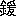

［＃ページの左右中央］
第一篇
［＃改ページ］
［＃ページの左右中央］
那須ヶ峰にのぼる煙りのこころあらば
雲井につげよ民の心を （明治十七年） 正造
雲井につげよ民の心を （明治十七年） 正造
［＃改ページ］
第一章
乞う、陸地測量部二十万分ノ一の地図「日光」及び「宇都宮」をひろげてみよ。中禅寺湖をかこむ外輪山の南面、松ノ木沢に源を発してうち重なった緑のひだのあいだを南流する一川に気づくであろう。それは赤城山脚を右岸とするあたりからおおきく東南に転じ、左岸に日光山彙からなだれてきた一群の丘陵の裾をおさえつつ、大間々、桐生、足利とようやく広濶の地にでて、迂曲し蛇行して栗橋の手前で大利根に合流する。
これがすなわち
さて、この下流の平野が五穀豊穣であったのは古来のことで、古い郷土史をたずねれば人皇十代崇神天皇の御代に豊城入彦命が下向して毛野の始祖となりたもうて以来、日本武尊の御東征をはじめとして、藤原魚名の東夷討伐、天慶の乱、前九年、後三年の役など東国に反乱のある度ごとに、佐野の地方が討伐の根拠地となり兵站部となっている。つまり物資がゆたかでよくそうした場合の徴収に堪え得られたし、生活がのんびりしていたから将卒の土着して農耕に従う者がしだいに多く、その子孫がまた兵の徴募に応じるという事情があったためだという。この地方に古墳の多く発見されるのも、村々に城跡や堡砦の跡のおびただしいのも、この間の消息を証拠だてるものである。また「安蘇に無姓なし」という俚言の行われたのも、仕事ぎらいの無性者を指したのではなくて、家々の由緒や系図をほこる
五穀豊穣の地であることをいうために、なにもそうした旧事を持ち出すまでもない。ただ河川が潤沢であることを挙げただけで、その一半の証明ともなるであろう。
河川があればこれに洪水のともなうことは、何処でもまず例外のない話である。渡良瀬川の下流地方もまた実に三年目、五年目に洪水に見舞われてきた。しかもその水源地は山が深く、嘗ての頃の尾根々々は斧鉞の入らない鬱蒼とした森林におおわれていたから、ひとたび山岳地方に大雨があると、その出水は森林の根方及び谷底に堆積していた枯枝、落葉、木の実の類の腐蝕したものを泥とともに押し流して、これを下流の沿岸一帯へ運びこんだ。それゆえ汎濫の去ったあとは、薄いところで二三寸、厚いところは八九寸もこの游泥でおおわれる。いわゆる腐葉土、天然の肥料である。すなわち洪水は沿岸の農作物を侵すが、そのかわり翌年、翌々年は肥料を施すことがいらない。農民たちはかえって洪水をよろこぶ傾向さえあった。しかも彼等はその年洪水で失った作物の損害を、漁獲によって補うことができた。洪水があると、四囲いたるところの河川、沼沢、渠溝に、魚がおびただしくふえるからである。
洪水は夏から秋へかけて多い。このあたりの農民は自然の教えに従って、大豆、小豆、粟、陸稲、芋などの夏作はなるべくわせ物を作って、その害を遁れるようにしていた。だが、大麦、小麦、菜種、辛菜などの冬作は、ただ種さえこぼしておけば無肥料で収穫があった。大麦は丈が五尺にものびて自分の重味で倒れがちだった。馬につけると穂が房々と垂れて地に引きずった。菜種は六尺余りにのび、辛菜は八九尺に繁った。菜の花の咲き盛るころには、沿岸一帯が鬱々と黄金色のひかりを放って、空が明るくなるほどであった。
また沿岸には森や竹林が鬱蒼と茂っていた。殊に竹林は見事に発育して、「尺丸」といって一本を一把として売買するような太竹が伸びた。八九月頃にはその出荷の青竹が筏に組まれて無数に川を下った。孟宗竹のほかにも到る処に篠竹が繁茂し、その幹がみっしり立てこんで、上り下りの川船もただ
そうした篠竹や、泥柳や、葦の茂ったところでは、川面へ突き出して櫓を組み、四ツ手網をかけているのが見られた。十文字の青竹がしわって、ザアッと水のしたたる網が引きあげられる。獲物の魚が銀いろにピンピン跳ねる。鮠、鮒、鯉、マルタ等が一晩に十貫二十貫目と捕れた。晩夏初秋の頃になると、朝靄のなかに舟を流して投網をうつ姿が見られた。鱸や鯔が一網で五尾も六尾も捕れていた。また枝川へ杭木を立てて鮭網をかける者もいた。大雨の後には濁り水に仕掛けた袋網からは、五貫も十貫も鰻が捕れた。
たとえ年々歳々、ここにもまた人生の喜怒哀楽はさけがたかったとしても、まことに農民たちにとっては、自然の恵みを残りなく甘受できる安居楽業の地であった。
ところが、明治十二年の夏のことである。雨あとの川水が青白く濁って魚が白い腹を返して浮いて流れて来た。何千匹というおびただしい数である。だが、ただ目撃したものだけがどうしたことだろうと不審を抱いただけでその年は過ぎた。するとまた翌年の洪水に、勢のつよい鰻がくたくたになって流れてきた。子供たちがおもしろがって手づかみにして騒いだ。
「渡良瀬川にちかごろ変なことが起ってきた」
ようやく不審の声がひろがった。これは唯ごとではないぞと、野良の立話に不安の眉をひそめる者もいた。だが、誰一人として、その理由を知る者はいなかった。すすんで原因を穿鑿しようとする者もなかった。おそらく桐生や足利辺の機業家が使う染料のせいだろう、どこにもいる半可通のそういう言葉に、なるほどと合点して、すましていた。さすがに栃木県令藤川為親は、渡良瀬川の魚は衛生に害がある、捕獲してはならぬと訓令を出した。この警告は明治十三年、十四年、十五年とつづいたが、ただ魚獲の抑制にとどまった。しかもその藤川はいつか島根県へ左遷されてしまった。
年々魚獲を業とするものは減って来たが、一般の農民たちはなおそうした事態を警告として、深くは意にとめなかった。洪水に見舞われるのは天災で普通のことだとしていたし、ただ洪水のあとで足の指の股が爛れるのや、洪水のおいていった土には草が生えぬのが不思議だと語り合う程度であった。こうしてまた幾年か経った。だが、その洪水も年ごとに荒々しさを加えてきた。北岸の栃木県下では数カ所の支流から逆流が洪水の度ごとにはげしくなって、田畑の収穫が著しく減ってきた。南岸の群馬県下は支流がすくないから逆流の害はなかったが、堤外地の桑畑へ植えた里芋が、わずかに天保銭くらいの葉になったと思うと枯れてしまった。あとへ植えた陸稲がこれもまた三四寸で枯死した。洪水に丈夫な桑が倒れたまま根がつかず次々に枯れていった。こうして異変は見る目に著しくなった。いやでも異変に無関心ではいられなくなった。この渡良瀬川の上流の山奥に足尾銅山がある。それが最近、さかんに仕事をしだしたそうだ。その鉱毒が流れてきて、この禍をするにちがいない。だれがいいだしたともなく、そうした声が農民たちの耳に入り、今更のごとく驚愕の目色で語りつたえられた。それを聞いたものは過去を思い合せ目前をにらみ合せて、さすがに一種いいしれぬ恐怖に襲われた。ようやく異変の原因に気づいて胸を打たれたものの、人々はどうしたらいいかわからなかった。ただ憂愁の顔を見合せて今後の成り行きを憂えるのみであった。今のうちにその筋に訴えて除害の方法を講じてもらわなければならぬと語り合う者もいたにちがいないが、さていかにしてという実行までには発展しなかった。恰もこのとき彼等の愚昧を怒るごとく笑うごとく、明治二十三年八月二十三日、またしても洪水がこの地方を襲った。渡良瀬川としても、その増水は未曽有のことだった。栃木県下では諸支流が水嵩たかく逆流して付近一帯の耕地を浸した。
群馬県下は西谷田村大字除川字大巻の堤防が決潰して、館林以東の八九カ村が泥海と化した。
被害地中ことに惨害を蒙った吾妻村では十二月に臨時村会をひらいて、村長亀田佐平の名で栃木県知事宛に上申書を呈した、ともかく鉱毒の被害に目ざめて公に抗議した先駆である。文中にはこんな文字があった。「之れ独り我が吾妻村のみならず、渡良瀬川沿岸の各村落は同一の害を被り、多年を
翌年の四月上旬、足利、梁田、両郡の有志が足利町に会合して、被害地の有志と相謀って、自分たちみずから実地の調査をすることを申合せ、それぞれ自村に帰って計画をすすめた。すなわち五月一日には吾妻村の亀田佐平、内藤増次郎、川田道二郎、毛野村の早川忠吾、小貫和吉、川島簑吉、梁田村の長祐之、中山勝作、小川作太郎等が毛野村に集って、さらに具体的に調査の一歩をすすめることにした。翌日、早川は吾妻村大字羽田及び梁田村大字梁田の澱土を携えて上京し、長は足尾銅山へむけて出発した。
早川忠吾は佐野出身の新聞記者村田誠治を訪ねて志賀重昂への紹介を依頼した。志賀は農学士で当時同じく政治記者をしていたから、土砂分析の適任者を選定してもらう考えであった。志賀は高等師範学校の大内健に宛てて添書をくれた。大内を訪ねると彼はまた農科大学の古在由道を推して、この人ならば公平無私で決して情実に流れることはないと、その人物の剛直を保証した。早川は意を強うして早速に古在教授を訪れて来意を述べ、
「すでに現地には農商務省から坂野技師も出張して来てはおられますが、どうも行政庁のやることは私ども地方民の望に反して迂遠です。且つ調査の結果をそのまま報告したら、或は農民が騒ぎだすのではないかという心配から、おそらく事実そのままは発表されないのではないか、私どもはそれを杞憂しております。実情は私どもがそれをおそれるほど被害が大きいのです。あくまで農科大学の御見識をもって学問上から突込んで研究していただきたい。私どもは信頼のできる農科大学の調査によって、被害の原因をつきとめたい、そう思って、わざわざ土砂を携えて上京したのです」
黙々ときいていた古在教授はそれに答えて「目下長岡教授が出張中で、耕地の土砂を各種持って帰ることになっています。帰京次第それで試験地を設けて試作する準備もしている。大学は独自の見地から調査はすすめている。だが、地方の人々が農科大学の分析に信頼されようとする気持ももっともである。よろしい、早速分析をしてあげよう」
早川は更に膝をすすめて、
「その報告をいただけば、それぞれ地方の有志に見せなくてはなりません。先生は報告の責任を負われることになりますが」
「もちろん、分析を引受ける以上はその覚悟である」
その然諾に早川はおおいに力を得て帰郷した。そして同志とともに一日千秋の思いでその報告を待った。
一方、長祐之は桐生、大間々を経て、渡良瀬川に添って溯ること十数里、三日に足尾に到着した。途中上州花輪のあたりへ来ると、渓流の水の色がすでに変っていた。足尾の町家をすぎ、やや上流の渡良瀬部落へきて合流点に立ったとき、彼は思わず足をすくめてその水流に見入った。細尾峠から神子内を経て流れてくる沢は清冽であるのに、松ノ木沢の一流はその色が粘土と石灰をかき混ぜたように濁っていた。両者の別は截然たるものである。鉱毒の有無を水の色に見たと痛感せざるを得なかった。翌日はその渓流ぞいに赤倉の製煉所へ行って、焼鉱炉や高炉の数箇の煙筒が、濛々と無気味な煙を吐いて日の光りを遮ぎるのを見た。鼻を衝き喉を刺戟する悪気があたりにただよい流れるのを見た。溪谷をかこむ山々に樹木ひとつなく目にとまるのは無惨な枯木だった。山肌はどこも崩れ落ちそうで磊々たる岩石の堆積だった。これでは夏季豪雨の候に土砂岩石が一時に押しながされて、渡良瀬の河身を浅くするのも道理であるとうなずかれた。さらに本山の有木、鷹の巣、本口の諸坑口へ攀じのぼって、諸坑の坑口から青味を帯びた汚水が流れ出るのを見た。これこそ丹礬質をふくむもので、こうして常時絶え間なく渡良瀬川へ鉱毒が注がれているのであるかと慄然とした。次の日は小滝坑を見て、ここでもまた同様の感慨を深くした。
そこで彼は、銅山の当事者が鉱毒被害をどう感じているかを知ろうとして、六日には銅山事務所を訪ねた。戸田某が面接して、長とのあいだに種々応答がとり交された。渡良瀬川沿岸の農民は十年鉱毒という原因を知らないでいたが、昨今の惨害はかくかくであると長が説明すれば、戸田は果して、それは洪水の被害であろう鉱毒はそんな遠方に及ぶものでないと首をふった。除害策を促せばなお急務ではないとうそぶいて相手にしなかった。
長はもはやこれ以上談合することの無益をさとって口をつぐんだ。帰郷のうえ大いに運動を試みねばならぬと、深く心を刺戟されて下山した。
かくて六月中、前記三カ村の有志たちによって「足尾銅山鉱業渡良瀬川沿岸被害事情」と題した印刷物が、沿岸の村々へ配られた。これには早川及び長の報告とともに、古在教授の分析表が掲げられていて、「右の圃地に植物の生育せざるは、恐くは土壌中銅化合物を存在するに因るならん」と添え書があった。なお毛野村大字北猿田の渡船場の水の分析も採録されていて、「右の成績に依れば本水は亜硝酸、銅、安謨尼亜等を含有するに付飲用に適し難きものと認定す」とあった。これは前年の十月中、早川が宇都宮病院に分析を依頼したものの結果で、調剤局長大沢駒之助の署名があった。
「産業時論」を主宰する横井時敬に有志たちが被害地の視察を乞うたのもこの頃である。横井は被害地を巡廻しておおいに農民に同情を寄せ、数カ所に講演会をひらいて彼等の覚醒をうながした。帰京後は農村問題、社会政策の見地から輿論を呼び起そうとしたが、ほとんど耳を傾けるものがなかった。
このとき、栃木県第三区（安蘇、梁田、足利三郡）選出の衆議院議員田中正造は、群馬県人
さて足尾銅山とは如何なる鉱山であろうか。このあたりで、その沿革にふれておく必要がある。
旧記によれば、慶長十五年に当時の足尾郷の農民で治部、内蔵という両名がはじめて鉱脈を発見し、領主の日光座禅院座主の許しを得て試鑿したのにはじまるということだが、明治十年代になってなぜ鉱毒の被害を見るようになったのか。それにはそれだけの理由がなければならない。
治部、内蔵が試鑿してみると、翌十六年には多くの銅鉱を得たので、これを真吹銅として将軍家に献上した。時に家光の着袴の式が挙げられる際だったので、これを吉事としてそれより銅山は幕府の直轄となった。同十八九年の頃は江戸、大阪、長崎に会所を設けて、産銅の五分の一を和蘭へ輸出するまでになった。その後さらに延宝四年から貞享四年に至る間に、吹床三十二座を設けるに至り、爾後約十年間は年々三十五万貫から四十万貫を製銅した。
ところが宝永元年にこの地方に大洪水があって、四囲の山々から溢流する出水のために銅山の建造物、人家、銅鉱、溶滓、廃鉱等ことごとく流失した。だが、幕府から普請料が下付されて、同五年に江戸城修築用瓦として銅板百二十万六千四百枚余を製出するまでに立ち直った。享保三年には火災があって、足尾の家屋千数百戸すべて灰燼に帰した。
こうした幾変遷ののちに元文初年ごろから、ようやく収支が償わなくなって、年一年と経営困難に陥ってきたので通用銭鋳造のことを歎願した。一厘銭の裏に「足」の字があるのがこれだという。
明治元年の三月、幕府銅山の役所が引払いとなった。日光県、のちには栃木県の管理で明治四年に至ったが、同五年にはじめて民間の手に移って、大阪府人野田産蔵の借区となった。ついで七年には長崎県人副田欣一に、十年には福島県人志賀直道に名義が移された。志賀直道は相馬家の旧家臣で、主家のために個人名義を出して表面に立ったのだが、その裏面にまったく別の人物があって足尾の稼行が着手されたのであった。ではその裏面の人物とは誰か。
京都の小野組が瓦解したのは明治七年である。当時小野組は政府の御用金や各府県の為替御用を扱っていて、殖産興業という名目で貸下げられた無利息無抵当無期限の金を広くいろいろの事業に注ぎこんでいた。ところが政府の方針が一変して、官金預り高に対し相当の担保物件を入れよというにわかの厳達だった。小野組はこの火急に備える余裕がなくて破産したのであるが、同時に相馬家からの預り金も返済できない始末になった。そこで、代償として越後の草倉銅山が小野組から相馬家へ引き渡された。
そもそもこの小野組に鉱山事業を創させたのは、別家格にすすみ東京の支店を支配していた古河市兵衛であった。市兵衛は主家の没落に遭って、拮据経営の事業がもろくも灰滅に帰したのは、根本が他に依存しておったからであることを身を以って痛感した。彼は独立して事をなすべく日夜肝胆をくだいた。その結果まず相馬家に帰した草倉の下受け家業をやることから出発した。これが明治八年のことで、のちに相馬家の旧藩士のうちに、主家が鉱業のような浮沈の多い事業にかかわることに異論をとなえるものがあったので、市兵衛はこの草倉を買受けた。九年には旧高松藩松平家から羽前の
なにしろ足尾は慶長年間から掘りつづけてきた鉱山である。その坑口が八千八口あるといわれたほどで、まるで蜂の巣も同然だった。しかも過去数年はほとんど廃坑になっていた。鉱山師仲間も古河がどこに見込があってあんなボロ鉱山に手を出すのかと嗤笑したし、彼の周囲にも諌静の声がしきりだった。
だが、市兵衛は、古い歴史をもつ名山だからというだけを唯一の根拠として、しかも確信あるもののように入山した。人気のない坑内はたださえ無気味である。まして旧幕時代に掘り荒らした旧坑は落磐や湧水の箇所も多く、一歩踏みこめば鬼気せまるばかりに凄惨だった。鉱夫たちさえ尻込みしてその取り分け作業を嫌った。そこで市兵衛は敢然と先にたって入坑し、鉱夫たちを叱
 しはげまして着々と仕事をすすめた。備前※［＃「金＋盾」、U+934E、13-上-9］山の山腹の旧坑が、明治十年から息をふき返したのはこうした次第であった。
しはげまして着々と仕事をすすめた。備前※［＃「金＋盾」、U+934E、13-上-9］山の山腹の旧坑が、明治十年から息をふき返したのはこうした次第であった。市兵衛は草倉、幸生両山の収益を挙げてこれへ注ぎこんだが、なお十三年頃までは容易に将来の見込みもたたなかった。だが、それに屈する彼ではなかった。後年「運、鈍、根」などといって、いかにも商人出身の実業家らしい体得を自他ともへの箴言としていたが、彼にもそうした信念を確めるだけの修業時代があったのである。
市兵衛の人間をもりたてたのもその根であるが、彼の事業の大をなさしめたのも根であった。彼はその根気で猛然と足尾の岩磐にぶつかった。坑長を代えること三回、ついには甥の木村長兵衛を起用して四代目の坑長とした。すると、この長兵衛がまたなかなか精悍な気象で、ために一山の志気がふるい立ったというほどである。無論そのためばかりではないが、十五年以来備前※［＃「金＋盾」、U+934E、13-下-3］山の下底をさぐる開鑿方針で掘進していた本口坑道で、十七年五月に横間歩
 の
のこの十八年から足尾の産銅額も急に多くなった。十五年の二十二万斤から十六年には百万斤、十七年には三百八十万斤という工合に年々累進していたが、十八年には六百八十万斤を産するに至った。さらに二十一年末、古河が仏蘭西に勃ったシンジケートの世界的の銅買占に応じて三カ年間に一万九千噸提供の契約をむすぶに及んで、足尾の操業はまた一段階を飛躍した。この間に間藤発電所が竣工されたが、それでもなお遠からず動力の不足を来すおそれがあるほどだった。すなわち二十二年には八百余万斤、二十三年には九百七十余万斤、二十四年には一千二百七十余万斤という産銅額の数字によっても、その急速な発展ぶりを覗うことができる。
［＃改ページ］
第二章
明治二十四年十一月、第二議会のために上京中であった田中正造は、開院式のあった翌日の二十七日に、日本橋八重洲河岸の旅館みつよしで突然父の訃報に接した。そこで倉皇として栃木県旗川村小中の実家へ帰り、二十九日には埋葬のことをすませた。父庄造は享年七十七、正造は五十一歳であった。
村道に面して建てられた隠居所の一室には、仏壇の前に一基の新しい白木の位牌がすえられ、供花の黄菊が強くにおっていた。それを照らす蝋燭の火が、まだそのあたりに、死者の存念が残っているとばかりにゆらゆらと揺れていた。隣室の煤けた畳の上には、一昨日まで父の庄造が病み衰えた痩躯をよこたえていたのだし、まだ今日の昼間まではその棺がおかれていたのである。
氷室おろしの凩が、山は雪かと思われる鋭い唸りをたてて木立に吹きつけるのが聞えたあとは、ひとしきり屋棟が軋みつづけた。それがやむと二階で寝ている親戚の人たちのいびきが洩れて、沈々と夜の更ける気配であった。やがて、裏の母屋の方から足音がして、ガラガラと戸障子があき、正造がもどってきた。身長五尺二寸、体重二十貫の重味で古い畳がみしみしと鳴った。正造は線香をたてて位牌の前へ端坐し、浄蓮院富翁大徳清居士と口のうちにつぶやいてややしばらく項を垂れていたが、傍の行燈のそばへ座を移すと、袴の膝に嵩ばった白い風呂敷包をのせて解きだした。
「私はさきへやすませて貰いました」隣室から妻のかつ子が声をかけた。
「うむ、うむ、わしにかまわずやすんで下さいよ」正造は他人行儀な丁寧な言葉遣いをしたが、途中から気がついたのかぞんざいにいい足した。「連日連夜のはたらきで疲れただろう。遠慮なく寝なさい」
正造は指先に唾をつけて書類をめくり、暗い火影へ差しつけるようにして読みたどった。
「あなたも今夜こそ早くやすまなくては……、ゆうべも一睡もしなかったのだし……」
「明日は議会がある。……総理大臣の施政方針の演説がある日だ。それで早く起きて東京へ帰らねばならん」
正造は書類から目を放たず、いい訳でもするように答えた。
「それなら
「いや、わしは一晩や二晩寝ないでも平気だ。そんなことは毎々のことだ」
いいだしたら後へは退かぬ気性である。それに今夜は頑固からばかりでなく、なにか思いつめたことのある様子なので、かつ子も蒲団から脱けだして冷りとする着物に手を通した。火鉢を正造のそばへ運んで炭をつぎ、小さな髷をかしげて火をおこしだした。正造もやっと書類を膝へおいてそれを見ていたが、
「お蔭でわしも無事に父上を見送ることができた。心からお前に御礼を申します」
その言葉が、余りに真率なひびきなので、かつ子は思わず顔をあげてまじまじと正造を見返した。しみじみと礼の言葉をかけられたことなど嘗て覚えのないことだし意外だった。明けても暮れても政治の奔走で、おそらく家庭のことなど眼中にはないのだろうと、恨むどころか、もはや何十年来まったく諦めてきた。だが、何もいわず何も知らぬようでいて、やはり私の苦労をすべて見透していてくれたのだ。十一年の年月病身の舅にかしずいて来た人知れぬ労苦も、今の一言で報いられたも同様である。そう思うと、気のゆるみで、未だ嘗て夫の前に見せたことのない涙がおのずから膝へ落ちた。
「実をいうと不用意な不覚なはなしだが、葬式の費用をどうしたものかと、わしはそれを心痛して帰って来た。ところが、来てみると万事ゆき届いてやってくれている。六十三円ばかりの金があるから当座のことは十分間に合いますと、お前からその言葉をきかされたときには、全く心の裡で手を合せた。だがお前はいったいこの費用をどこから工面したのだね。それを聞こうと思いながら、昨日も今日もゆっくり話をする隙もなかったが……。原田か」
原田とは正造の妹の夫で、かねてから隠れた後援者であった。かつ子は火箸で灰をつつきながら、
「定助さんも必要なだけ遠慮なくいってくれ、再三そういってくれましたがお断りしました。またおりん様からも御心付の内談がありましたが、先年お母さんの亡くなられたとき御厄介になっていますから、今度は余分だけはお断りしました」
「では、いったい……」
正造がますます不審顔をするのを、かつ子はチラリと見返して、
「十一年前お父さんが病気になられた頃から、内証で私が心がけていたのです。毎年米六斗ずつ水車場の栄吉さんに預けたのが、十年積んで六石。この代が一石七八円平均ですから、ざっと四十五六円。それに利が加わって六十円余になったのです」
「ふーん」
「そういっては何ですけど、家計が年々逼迫する一方ですし、お父さんは何時どういうことになるかわからないし、あなたのお留守中にもしものことがあって、世間に恥を曝すようでは申訳ない。そう思って私は……」
さすがに万感が胸に迫ってきたのか、かつ子は歪んだ顔へ襦袢の袖をつまみ出してあてた。正造もまた、ポタポタと落ちる涙を拭おうとせず、ただ項垂れて言葉もなかった。黒袴のひとところがしみのように濡れてにじむのを、かすむ目で見つめていた。しばらくして、
「わしのような親不孝者はない。自分でもつくづくそう思う。母親の死に目にも会わず、また今度も父親の臨終に間に合わず……」
そういって、憮然とした顔つきで腕組みをした。十七年前、嘗て奥州江刺県の属吏をしていたとき、正造はたまたま同僚殺害のあらぬ嫌疑をうけて、明治四年から七年に至る足掛け四年の間を獄中に送ったことがあった。四年ぶりにようやく寃罪がはれて釈放されたが、その出獄より三十三日前、三月九日に母はすでに鬼籍に入っていた。正造は、一時は悲歎にくれて青天白日の身になったことさえ怨めしく思ったほどだった。その後真犯人が縛についたことを聴かずして今日に到っている。この不快の念もまた、亡き母を追憶するたびに、胸に蘇ってくるのである。
「それは……」と、かつ子は同情に堪えぬもののように
 を引き「あなたの場合は場合がちがいます。いちがいに親不孝とばかりいえません。お父さんも最後はもう昏睡状態でしたし……それに平常からあなたのことはもう、家にいない者と観念してみえました。その点ほんとうに偉い方でした。正造の一身は大勢の方のために差しあげた体だ。村の衆にもよくそういっておられました。また村の衆が枕もとに集ると、何処であなたの演説をきいたというような噂話をさせて、それを聴くのが、一番うれしそうでした……」
を引き「あなたの場合は場合がちがいます。いちがいに親不孝とばかりいえません。お父さんも最後はもう昏睡状態でしたし……それに平常からあなたのことはもう、家にいない者と観念してみえました。その点ほんとうに偉い方でした。正造の一身は大勢の方のために差しあげた体だ。村の衆にもよくそういっておられました。また村の衆が枕もとに集ると、何処であなたの演説をきいたというような噂話をさせて、それを聴くのが、一番うれしそうでした……」それは正造の苦衷をなぐさめようとする惻隠の響であった。だが、正造はかえって感慨をそそられた様子で、その三角の眼をすえて行燈の明りを見つめつづけた。――丁度十二年前、父が六十五、自分が三十九の年であった。父の膝下に一書を差し出して「正造、お願いがあるのですが……」と歎願に及んだのも、やはりこの火影の下である。そのとき父がどんなふうに許諾を与え、しかも後顧の憂なく自分を志すところへと踏み出させてくれたことか――それを思って、正造はあたかも父の面前に手をついているような敬虔な面差しで膝を揺った。
そのときも、父がその書付を行燈に翳して読みたどるあいだ、胸を躍らせながら、ジジ……と油のもえるこの音をきいたのだった。書中にはこんな箇条書があった。
一、今より後自己営利的新事業の為め精神を労せざる事。
一、公共上の為め毎年百二十円ずつ三十五カ年間の運動に消費する事。
一、養男女二人は相当の教育を与えて他へ遣わす事。
自分の能力は、偏癖で、一方に営利事業にたずさわりながら一方に政治のことに奔走することは不可能である。寧ろ自分の務は政治改良のことに専心するにある。心底からそう決意したのであって、そのこと自体に就いては父の許しを得るに難くないと思った。養男女云々も、夫婦のあいだに子がなかったからかつ子の甥の文蔵と、原田の妹のたけ子を養子にしていたので、この処置にもさほどの異議もあるまい。ただ難色が予想され彼自身でも気が負ける思いだったのは、第二の箇条である。正造は前にも漸く二十台の頃、領主六角家の払奸事件に奔走して家産を傾けたばかりでなく、数百両の負債まで残した。江刺の疑獄を出て帰郷して以来は、鋭意その負債の返済につとめて、ようやく家産をも旧に復すことができたばかりである。これを今また一家の事情をかえりみず、もう一度財産を犠牲にする許しを得ようという身勝手な願いである。正造の杞憂も実にこの点にかかっていた。だが、父は正造の書いた文章を声に出して読みだしたのである。――正造には四千万の同胞あり、このうち二千万は父兄にして二千万は子弟なり、天はすなわちわが屋根、地はすなわちわが牀なり。――紙片を膝において正造を見すえた父の顔には、喜色さえ動いていた。
「お前にしてはできすぎた文句だ。志もたいへん結構だ。だが……」
年齢の錆がそのまま言葉の重味となっているような落ち着いた響だった。正造は思わず唾をのんで次の言葉を待った。
「古人も
正造は膝を乗りだして答えた。
「江刺獄中の三年有半は、私に嘗てない勉強の時間を与えてくれました。私は毎日毎夜のように、人間の生存の理由、人間の価値、人間の使命というようなことに就いて考えたのでした。そうして自分の命を自分のものと思うのは不遜なことだと気がつきました。人間に生れた尊さ有難さに思い到って、慄然と身ぶるいしました。自分の生れたのは父母のお蔭であり、国のお蔭であり、天地のお蔭である。人間の生存はこれに報いるためである。そう考えてくると人生の価値は絶対無限だとわかって、獄中でいてもたってもいられぬ思いを味いました。自分が自由のからだになったら、良知良能の教えるところに依って、身と魂の限りを尽して働こうと、そう心に契ったのでした。ですが、やはり獄中で偶
 ウエリントンという偉人の伝記を読んで、その人が戦々兢々負債を恐れるという一節に、私はひどく胸を打たれました。自分はたとえ嫌疑の獄を免れ得ても、身はなお義務の獄中にある。この獄中にあるあいだは自分は到底志を伸ばすことはできない。そう覚ったものですから、この数年はこの義務の獄を免れるために努力しました。そうして、やっと不覇独立の身になったと思ったので、こんなお願いもするわけです。決して昨日今日の決心ではありません」
ウエリントンという偉人の伝記を読んで、その人が戦々兢々負債を恐れるという一節に、私はひどく胸を打たれました。自分はたとえ嫌疑の獄を免れ得ても、身はなお義務の獄中にある。この獄中にあるあいだは自分は到底志を伸ばすことはできない。そう覚ったものですから、この数年はこの義務の獄を免れるために努力しました。そうして、やっと不覇独立の身になったと思ったので、こんなお願いもするわけです。決して昨日今日の決心ではありません」「だが人間の心は弱いものだ。自分が正当に理解されない場合には誰しも不平が起きやすい。どんなに自分が世間のために尽しても、世間が冷然とそっぽをむいているばかりか馬鹿にされるようなことになれば、必ず不平が起きる」
父はそこまで杞憂してくれるのかと、正造は胸を搾め木にかけられる思いだった。
「自分のすることはすべて天に尽すのだ。そう思ってやれば何事も不平は起きまいと思います」
それを聴くと父は、傍の硯箱を引きよせて禿筆の先をかんだ。やがてすらすらと半紙に筆を走らせた。――死んでから仏になるはいらぬこと生きているうちよき人となれ。
某禅師の作だという。正造は一読、二読、自分にとって実に適切な
――十二年前のその夜の情感が、正造の胸にまざまざと蘇った。それは昨日のようにあざやかであった。父が筆先をかむ仕種や、墨のついた唇でニヤリとする面影まで、行燈の蔭にうかがえるような気がした。
「親ほど有難いものはない……」
正造は溜息を吐くように洩らし、間をおいて同じ言葉をくりかえした。同時に、この長い年月、家を外にして狂奔するままに父を顧る暇さえなかったことが、悔恨のかげりに彼をさそうのであった。
かつ子がかたわらで袖を顔にあててくさめをした。暗い火影を受けて物哀れに見えるその姿へ、正造はなにか消えうせたものを探るような目を移し、
「あれから、何年になるだろうかな。わしが二十四、お前が十六、まだ慶応にならぬ前だったから……」
それは二人が結縁の古い昔をいっているのだった。正造は指おり数えて、自分の指の動きに不思議なものでも眺める顔付だった。かつ子もそれにさそわれて指を折り、
「二十七年……」と呟いたが、急に古い記憶をもみ消すような仕種でその手をすり合せ、「本当にもう爺婆になるはずです」
「なるほど二十七年になるか……この長い年月つれ添って来られたのも、みんなお前が諦めて辛棒してくれたお蔭だと思っているが……まったく、お前もわしに見込まれたのが最後というわけだったな。あのときは、お前が上石塚から裁縫に通う途中をそのまま家へ連れてきてしまった。……羞しがるお前を無理やりに負籠に入れて背負ってきたが、橋を渡ってこちらの橋詰へ来て、わしは急に婚礼の支度をせねばならぬことに気がついた。そこで籠を外へおいてあそこの雑貨屋へ走りこんで、婚礼にはどんな品物が入るのか知らんが、すぐ必要だから大いそぎで一揃えとりそろえてくれ。そういっても、雑貨屋のおやじは本気にしない。誰が嫁をもらうのか、嫁さんは何処の誰だといらぬ穿鑿するばかりでニヤニヤしている。誰でもない、わしの婚礼だ、嫁さんはあの籠のなかに待たしてあるというと、さすがにおやじもびっくり仰天していた。ハハハ……」
「嫌らしい、なんの話かと思ったら、つまらないこと……私はもう本当にさきへやすませて貰います」
かつ子が噛んですてるようにいって腰を浮かせるのを、「ちょっと待ちなさい」正造は手で圧えるまねをして引きとめた。「またといっても、ゆっくり話し合える機会などいつのことかわからない。今後お前はどうするつもりか、それを聞いておきたい」
自分は今後とも東奔西走の忙しいからだである。到底家をかえりみる暇はない。お前はお前で暮しの立つようにして貰わねばならぬというほどの言外の意味があった。
「ええ、それはもう覚悟しています。どうせあなたは阿弥陀さまより尻の落ちつかない人だと思っていますから」
かつ子は淋しげに頬をゆがめて微笑した。村道を隔てた向う側の杉や梅の木立のなかに古びた阿弥陀堂があり、本尊の阿弥陀像は一年を通して村中の家々を順ぐりに転々することになっているので、お堂のなかはいつも蜘蛛の巣だらけである。だが、その阿弥陀様さえ毎月の二十三日だけは必ずお堂へ帰って安坐する。かつ子は、それをもって正造を諷したのだった。
「ハハハ……」と正造は笑いにまぎらして唐突に「ところで、わしの考えではあの母屋の方をゆくゆく篠崎さんに差しあげたいと思っている」
母屋は隠居所の傍の黒い門を入って、柿の木の下をくぐった奥に建っていた。父の庄造が割元、正造が名主をつとめていた頃の名残りのもので、昔の格式としては簡素すぎる造りだが、黒ずんだ梁も柱も未だがっしりしていた。この母屋へ篠崎医師を住まわせたのが明治八年、正造が岩手県から帰郷した翌年のことで、隣村の油屋から頼まれてその番頭になるとき、一つには耳順の父を託すために特に小中出身の篠崎を聘して無賃で提供したのであった。その父も今は鬼籍に入ってしまったが、なお継母のために、また村のために、正造は篠崎医師に住みつかせたいと意中を語った。
「そうですとも」とかつ子も心から同意した。「私はこの隠居所だけでたくさんです。ここで今まで通り村の人に雑貨を売っていれば、どうにか暮しも立ててゆけます」
決して後顧の憂はいらぬと、はっきりした返事をきいて、正造も満足そうに瞬きした。なにかいおうとすると、つづけざまに大きな
「ずいぶん冷えてきました。さア、寝ることにしましょう、本当に風邪をひきますよ」
「いや、いや」と正造は洟水をすすりつつ「わしはこれからもう少し……例の渡良瀬の鉱毒のことで大事な調べごとがある」
「ひどいそうですね、今年の被害は。舟津川辺などは稲がほとんど一粒ものぼらなかったとか」
「実際その通りだ。鉱毒は沿岸一帯にひろがってしまった。去年の洪水以来大島村に滞在して調査してもらっている左部彦次郎さんの話では、あの辺も今年はやっと騒ぎだして、よりより除害の方法に頭をひねっているそうだ。だが、この毒はなかなか人民の手で容易に取り除けられる毒ではない。毒を流す根本をやめさせなければ駄目だ。それでこの際どうしても鉱業停止の請願書に大勢の連署をとって、村長たちから農商務省へ願い出る。わしはまたそれに呼応して国会へ質問書を出す。そういう手筈になっている」
「一昨日ですか、衆議院の門の前であなたに会わせろといって暴れた壮士がいたそうですね」
かつ子は急にそれを思い出して、眉根をひそめた。だが、正造はそれに答えず、聴き手が妻だということも忘れたように、
「去年は県会が建議案を出したが、県会のうちには足尾銅山のお蔭で利益を得ている地方の議員もいるし、問題を闇に葬ろうと策動している者もいるから駄目だ。一方、被害民が県庁へ請願してもこれも
「政治むきのことは私によくわかりませんが、農家を思えば本当に気の毒です。あなたがその決心なら、思い通りに存分にやって御覧なさい。お父さんは見送ったし、あなたにすればもう後に気に懸ることはないのですから……お位牌は私の息のあるあいだは大切に御守り申します」
「うむ、それだけはお前に頼みますぞ」
かつ子は立って、仏壇の蝋燭をとりかえ、それから静かに寝床へ入った。寒々と凩のひびきをきき、足をちぢめて眠る様子だった。
正造は行燈の火をかきたてて、再び書類を取りあげたが、瞳はただ宙をにらんでいるだけで、脳裏に去来するものは、自分がこの秋数回にわたって見てまわった被害地の蕭条たる天地だった。ああ、なんという惨状。――瞼をとじると、慚愧にちかいものが胸を搾めつけてきた。過去十年の自分の努力が、なにか無駄ごとであったような気持さえする。自由のために、民権のために、立てよ、立てよ、と連呼して毛野の村落から村落を走り廻っているあいだに、いく度か渡良瀬を越え来り越え去っているあいだに、徐々に、そうして着々と、今日のこの災禍が準備されていたのである。――正造の思ったことは本当であった。彼が民権運動にささげた十年の年月は、その蔭で、彼と新にまみえるべき闘いを、ひそかに用意していたのであった。
［＃改ページ］
第三章
十二月二十四日の午後、正造の登院はやや定刻に遅れた。議案を片手につかんで議場正面の扉を押した一瞬、場内の妙に粛然たる気配が面をうった。
見ると真むこうの壇上に、逓信大臣後藤象二郎が巨躯を悠然とかまえていて、口角へかぶさった霜毛の髯の下から一言また一言と、いかにも荘重げな声を放っていた。――まさに私設鉄道買収費について原案維持の演説中である。正造には、満場の議員が唯々諾々と後藤の脚下に拝跪しているように思われた。もちろんそれはその場の情景から受けた一瞬の錯覚にすぎなかったが、正造は丸い肩にあらわな敵愾心をみせつつ、後藤とむき合った距離を颯々とちぢめていった。人々の視線はいっせいにその剣かたばみの大きな五ツ紋を抜いた黒羽織にそそがれた。正造は、最前列左側の四番の席へきて、エヘンと大きな咳払いをして腰を下した。今まで鳴りをしずめていた議席がどっと笑い声にどよめき、つづいて正造をまねた咳払いがあちらこちらに起った。廊下などで後藤の姿を見かけてさえ正造が大声あげて罵ることを人々は知っていて、二人の顔が合えばかならず事件が起きるものとして、
後藤の降壇を追いかけて改進党の高木正年が質問をくりかえし、後藤を再三再四答弁に立たせて応酬数刻に及んだ。永田定右衛門がたまりかねて「この議場は後藤大臣と高木君の討論場にあらず」と大声をあげる始末だった。が、高木はなおも執拗に喰いさがって許さなかったが、ついに「いくらきいてもだめですから質問をやめます」と叫んで着席し、満場を一瞬シンとさせた。ついで粟屋品三が禿頭をふりたてて登壇すると議場は道化役者をむかえたように早くも笑声に満たされた。「諸君！」粟屋が一声あげるとドッと哄笑が湧いた。「私は鉄道買上げは賛成の一人である」言葉の下から「ごもっとも、ごもっとも」弥次がとぶ。「私は鉄道株は一株も持たん」またも哄笑、「故にわが田に水を引く論では決してありません」また哄笑、一言一句の区切りごとにワッワッという騒ぎであった。その騒ぎのあいだに後藤はいつか大臣席から姿を消していた。議席の動揺がしずまると「島田三郎君」、議長、中島信行のこえがひびいた。
呼ばれて島田は自席に突立ったが、「私は弁論を放棄します。その理由をこの席から述べさせてもらう。私は昨日総理以下三大臣に出席を求めておきました。議場に臨むは国家に対して大臣の尽すべき責任である。今日はさだめし出席あるものと信じ、且つそれを冀望しておったのですが、ただ後藤大臣だけが出席して演説されたにすぎない。その演説にしてからが聴くだけの価値なきものと私は断言する」議席一面にヒヤヒヤの声が湧き起った。島田は平静に一同のしずまるのを待って「本案賛成の有力な議員は粟屋君一人である。而して内閣を代表して演説した後藤大臣も今や去ってその席にいない。内閣は自らこの重大問題を放棄した傾きがある。敵のいないのに矢は放てない。もはや弁を費して討論する必要がなくなったが故に、私は弁論の権利を放棄する」
まさに吏党の発言にとどめを刺したのであった。ただちに採決に入った。その結果は「私設鉄道買収法案否決さる」の新聞号外となって、鈴の音が町々をとんだ。
院内では文部省所管の議事に移り、つづいて農商務省の所管に入ったが、そのときはすでに定刻の五時も過ぎて、「今日の議事おわり」と叫ぶ声さえきこえた。
だが、正造にとってはいよいよ緊張を要するときである。農商務大臣陸奥宗光が、痩せた体にぴったりと食いこんでいるような洋服姿で壇上へすすんだ。
「事業費を減殺せんとするのは、とりもなおさず予定の事業を短縮するもので、国家の利源を妨げ国庫の収入を減ずるというよりは、むしろ国民全体の利益を減殺するものであります。民力休養の主義をもってこの減殺をなさるるならば、おそらくその目的に背馳するでありましょう……」
陸奥は烱々とひかる眼光を左右の議席へそそぎかえつつさすがに貫禄を示して鋭く説きすすめた。あとを受けた西村政府委員は、ただ大臣の説に追従するのみで精彩なく、それの肥満した和服姿までが妙な対照だった。小間粛が予算委員として修正の説明に立った。それが終ってようやく正造の番がきた。正造は両手でぐいと席を突いて立ち、階段の一段ごとに陸奥をにらみあげながら登った。
「農商務省へは先日質問書を出しておきましたが、足尾銅山のことに就いて、七日になりましても未だ御答弁がない」もの静かな口調でまずその不誠意を咎め、
「……議院法にはただちに答弁をする、ただちにできなければその理由を明示するということがある。本費にかかる前に、大臣御出席であるから一応そのことを申されて然るべしと思う。お答ができなければできないでよろしい。猶またお尋ね申す順序があるのでござります」
心の裡に決するところがあるものの如く、正造は丸い肩をひねって陸奥の方をキッと睨みつけた。それからおもむろに向き直って、
「ただ今、私の意見を述べますのは、つまりこの修正案を賛成するにすぎないのである。……この第一款の四項の旅費ということについて、西村君は大層な御論をなされてござりますが、これは鉱山取締上に欠くべからざる旅費であると聴きましたが、或はお間違いがあればあるとおっしゃって下さい。鉱山の取締ということはわが農商務省は少しもしていない。鉱山の取締は何処をしている。このことは別に質問書が出ているからここで議論をいたしますと重複になりますから、この点だけ明らかに申上げておく。それで先に質問した事を答弁があれば、鉱山の取締がないということを陳べるつもりである。鉱山の取締がないのに鉱山に往復する旅費を渡すというは如何である。甚だしきは原案の全部ならば承知するというは、実に生意気の議論といわざるを得ない。実に無礼千万の議論である」
笑声がしきりに湧いた。正造は一段と声を張りあげ、
「また寸分も減ずることはできないというが、寸分とは何事だ。金銭の多寡の寸分というのか、時間が一時一分というのであるか。政府は鉱山の監督を急ぐ、然るに人民が塗炭に苦しみ、所有の田畑がなくなってしまうという有様があっても、これをなぜ寸分という字に当てはめない」
正造はここで言葉を切って、
「また大臣の演説にも、倹約をなるべくするが、行政の活動を政費節減のために妨げられてはならぬ、この費用の伸縮は発達を害するということがあった。……どういうことを農商務では倹約とするか、この山林区の費用など、寧ろ私一己の考えをもってすれば勿論悉く削除したいくらいである……」
と切り込み、栃木県下の山林三千七百町歩を当時郡長をしておった安生順四郎に、草山という名義で不当の払下をした例を挙げて難詰した。正造が拍手の裡に降壇すると、苦い顔で腕組みしていた陸奥が痩躯を起した。
「ただ今、田中君の御質問のはじめに、同君より予て質問書を出している、何故に返答が遅いかという御催促でありました。その返答は何時でもするつもりで即ち今日も書類を持っている。今日もこの通り議長に返答いたしましょうと思いました。或は明日でも答弁いたします」
陸奥はあくまで冷静な態度で眼下の正造の席を見やり、改めて言葉を継いで山林払下について弁明を試みた。農商務省で管轄する山林は六万町歩もある中だから、安生某にどういう山林を払下げてどうであるか、帳面を繰って見なければ確ということはできない。原野と称するなかにも相が変って木のある原野もある。なお山林という中にも木のない山林があると同じであると、巧妙に受け流して降壇した。
二十五日もひきつづき農商務省第三款の議事であった。すなわち鉱山監督署費である。正造はこの日も登壇した。
「……草山というものは草の生えた山で、木のある山は山林というぐらいのことは、三歳の小児でも知らなければならぬ。安生順四郎に払下げた三千七百町は、隅から隅まで木が生えている。その払下は五百円で、一万八千円は一寸借りのできるくらいである。この一万八千円は足尾銅山の古河市兵衛が炭を焼いて売って一カ月二三百円の利益があった、この金を返済したのである」
と、まず昨日の陸奥の答弁を揶揄し、
「拙者の質問書に未だお答のないのは鉱山の一件である。今日は何故お答がないのである。昨日は明日お答するといって今日何故お答がない。お答ができないならばできないとおっしゃればよろしいということを、昨日も申している」
正造は足を踏み変えて大臣席を振り返ったが、今日は未だ陸奥の姿を見出すことができなかった。ただ西村政府委員が、昨日正造に手痛く叱責されたことを根に持っているのか、むっつりとして控えていた。
「その答によってまだまだ議論もいたしますが、この予算会も非常に急ぎますから、私はこの事件について細かなことは申しませぬ。種々の統計もありますし、且つ分析表もありまして数時間を費さなければ演説ができない。とにかく、群馬、栃木両県の間を流れる渡良瀬川という川は、鉱山から流れる鉱毒で双方の沿岸の田畑を併せて千二百余町に害を被らしめている。この千二百町余もある大切な耕作地面が、二年も三年も穀物が穫れないのである。ことに昨年の二十三年は一粒ものぼらない。のぼらないのみならず物が生えないのである。
議場にどっと笑声が湧いた。正造は頭陀袋のようにふくらんだ懐から書類をつかみだしたが、それはそのまま卓上において、さらに語気鋭く大音声をつづけた。
「日本坑法には何とある。また鉱業条例には、農商務大臣がその営業を停止することが出来るということを明記してあるにかかわらず、斯のごとく如何に古河市兵衛の営業がその本人に利益あるものにせよ、いやしくも租税の義務を負担している人民、いやしくも害のないこの土地に住居を定めた人民に、斯のごとき害を与えることが見えないというのは何事である。……魚を捕って売ろうとすれば警察が喧しくいって毒を食った魚だから売ってはならぬといった。それは明治十三年頃からのことである。人民が県庁へ願いにゆく、群馬県、栃木県の人民が皆これを調査して県庁へ何回行くか知れない。不思議にもまた内務大臣の方でもこれが見えないものとみえる。或は農商務とどういう打合せがあったか知らぬが、かくのごとく己の管轄に農商務省鉱山の方から人民に害を与えられていることが、内務大臣にも亦これが見えない。何故こう目が暗くなるんである。何かそれだけの不思議なことがあるだろう。道途の説にはいうに憚ることがある。また農商務大臣は古河市兵衛に伜をくれられ親類であるからと、――まさか国家の大臣たるものが、斯のごときをもって公務を私するものでないということは拙者も信じている。しかしながら、こういうことを人民がいうときは何をもってこれを弁解する。この下にいるところの県会や郡長が人民の害をなしてこの請願の道を塞いでいるというようなことは、如何にもありそうなことであろうと思う。この鉱山の三款などは立派にこれを削除してよろしい」
満面に朱をそそぎ腕をふりまわして怒号していた正造は、そういってぷっつり言葉を切った。同時に湧きかえるような拍手であった。正造は紋付の袖を振って、しかも眉に一抹の哀切な愁を漂わせつつ降壇した。席に着いてまた大臣席をふり仰いだが、ついに最後まで陸奥の姿は見出せなかった。
正造があげた陸奥と古河との姻戚云々は決して風説でない。市兵衛はその主家の小野組が為替御用を勤めていた関係で、明治五年にあらたに大蔵省租税頭に就任した陸奥と相識った。時に陸奥は二十九歳、市兵衛は四十一歳であった。一は利刃、一は鈍鏨、一見して性格の相反する二人はどういう点で意気投合したのか、翌六年には陸奥の次男潤吉を市兵衛の養子とする約を結ぶに至った。ところが、明治七年に小野組が瓦解して、市兵衛は落魄の身となった。陸奥は、このとき市兵衛を鞭撻して「自分は君を信じて愛児を与える約束をした。今日、君を信ずることは毫も往時と異らぬ。人の窮達は日暮をもって測るべからずである。
なおその出獄後まもなくのことである。陸奥は地方漫遊の途次たまたま日光に杖を曳いた。そのとき、彼は翠微を展望しつつ傍をかえり見ていうには「下野の山川は風光明媚だが、風景は経済に用のないものである。山は高きが故に尊からずである」と。当時の県会議員塩谷道博、小峰新八郎の両名からこれをきいて正造はながく記憶にとどめていた。
さてこの農商務省の第四款第五款の修正案が成立して、議事はついで逓信省所管に入った。後藤大臣の演説が終ると、たちまちその足もとから破れ鐘のような声が起った。「議長々々」挑戦の気配もあらわに正造が突立っていた。後藤はそれを一瞥しつつ扉を排してコソコソと退席してしまった。
大臣連は一人もその席に影を見せなかったが、しかし民党の面々には大臣の欠席などに頓着なかった。政府案をもみつぶすことあたかも破竹の勢で、逓信省所管もまたすべて査定案通りに採決した。だが、そのとき何故に大臣席がもぬけの殻だったのか、彼等はそれから数時間後に思い知らされた。大臣連の姿の見えなかったのは、一同が総理大臣官邸に鳩首して重大評議をしていたからである。議会が午後六時五十分に散会して、民党の議員たちがそれぞれ意気揚々と宿舎へ引きあげた丁度その時刻に、一方松方総理大臣は宮中へ参内するために悠々と砂利道に馬車を駆っていた。
八時をどのくらい過ぎた頃であったろうか。燈火のついた議院の議事課へ、平山書記官長が深刻な顔付で入ってきた。室々を廻って議長をさがし歩いて来たのである。彼は議長の姿を見るとつかつかと歩み寄り、黙って紙片を手渡した。衆議院解散の勅令であった。議長は、ややしばらく無言で感に打たれたように目をすえていたが、
「一刻も早く知らせるべきだ」とにわかに倉皇としだした。
早速に居残っていた書記たちが呼び集められた。通知状を刷るためにたちまち腕まくりで蒟蒻版の刷にとりかかるもの、封筒の表書を認めるもの……そら紙だ、そらペンだと給仕が追い使われた。まもなく三百枚の蒟蒻版がすりあがり、小使が配達に動員された。それぞれ小使たちをのせた人力車が掛けごえも勇ましく市内各処の議員たちの宿舎を目ざして宵闇に消えていった。
あたかも日に日に加わる院内の闘争の険しさと、政府が議員買収の実をあげつつあるという風聞に刺戟されて、東京には地方党員が続々と集結していた。彼等は議員の宿舎を襲って欠席によって逃避しようとする者を駆りだし、また院外に詰めかけて議場に於ての向背を牽制していた。それゆえひとたび解散の声がつたわると各政党の事務所にはこうした人々が、それぞれ昂奮して集まって来た。またその騒然たる物情に乗じて夜の街には酒気を帯びて慷慨悲歌するものや、婦女と見かけて悪戯をするものなど、えせ壮士輩の徘徊も目にあまるものがあった。
正造が解散の通知を受けて南鍋町の改進党事務所へ馳けつけたときには、すでに多数の党員が集まって各所の火鉢をかこんで声高に放談していた。殊に最前衛として戦ったこの党の気勢は同志集合によってあがっていた。誰の顔にも解散を悲しむ気色など見られず、むしろわが党の威力をこの証左に見たといわぬばかりの気負いが、彼等を昂奮へ駆りたてていた。正造は人々のうしろに座をしめると黙々と腕組みしつつ目を閉じていた。なにごとか独り深く考え沈んでいる様子だったが、突然けわしく目をむき体を乗りだして怒鳴った。
「この大馬鹿野郎、同志の間でなんということをぬかす」
人々は、その大声にびっくりして一斉に口を噤んだ。
「また田中君の馬鹿野郎か……」興げな顔付で睨みかえす者もいた。高田早苗が腰を浮かせてとりなし顔に「樺山の例の拳骨演説の話じゃないか。なにも藪から棒に怒りだす理由はないよ。あの雑言を侮辱と思えば腹も立つが、実はわが民党の気勢に怯気づいた余りの虚勢だ。藩閥の悲鳴だ。そういって罵倒していたのさ。それがどうして君には気に入らんのか」去る二十二日の予算本会議のときである。樺山海軍大臣が「世人は薩長政府といって政府を嫌悪するが、今日までよく国家の安寧、社会の秩序を保持したのは誰である！」と卓をたたいて叱
したから、議場はたちまち喧々「いや、そうじゃない」正造はなお憤激のおさまらぬ顔で首をふった。「誰のことか知らんが、樺山の配下の奴に料理屋や待合へつれこまれたと同志の誰かを中傷しておった。わしの耳は聾じゃない。ちゃんと聴きましたぞ」
「それは田中さん、ちがいますよ」と地方党員らしい老人が手をあげて弁明した。「樺山海相はこんどの予算案を通そうとして、ずいぶんいうを憚るような暗中策動をやった。自由党のなかにはその餌に尾を振った犬みたいな奴もいるが、却ってその陋劣手段に反感を抱いて政府攻撃へ廻った者もいる。私はそういう巷間の説をここでただ受け売りしたまでです」
「そうか。わしはまた蔭で改進党の誰かを誹謗したのかと思った。天下国家を憂うるものが婦女子の言動をすると思ったから腹が立った」
「やっぱり聾の早耳の部類だよ。そんなことを聞けば誰も黙って放ってはおかない」
前にいた加藤政之助がふり返って笑った。
「これや、わしが悪かった、すまなかった」
正造はもうそれで釈然とした顔付になって腰を下した。腕組みして、また別人のように黙々と瞑想に入るごとくであった。一座もまた次の総選挙の予想などに話題を移して、にぎやかな話し声になった。内務大臣品川弥二郎は前の山県内閣のときにも、解散を断行して御用党をつくるべしと裏面から献策した男だ。彼にすれば第一議会に山県が小心で行えなかったところを今度みずから遂行したにすぎない。当然の結果としておそらく極度の選挙干渉をやるだろう。誰の予想もそれに一致していた。
それをききつつ、正造の胸は、他の者の思いおよばぬ別箇の憤りと憂慮に痛んでいた。鉱毒の件について、議会でなお訴えようとしてその機会を失ったことが一である。当局の責任ある答弁をきき得なかったことが二である。被害民たちに徒らに困窮をつづけさせねばならぬことがその三である。
そこへ島田三郎が、鼻の両わきに八の字の皺をよせた影深い表情で入ってきた。彼は正造を認めると真直ぐにかたわらへきて、
「きょうの鉱毒の演説には敬服しました。たいへん結構でした」
正造はニコリともせず瞼を開いたが、相手が島田だと認めると、目に親しみをたたえて、
「いや、いや、自分ではまだまだいい足りない、不十分だったと思っています。なにしろ時間の余裕がなかったので……解散になるのだったら、もっと存分にやるんでした。……いや、いや、あなたは例によってもっと忌憚ない批評をしてもらわねば」
「私の方の記者も感心して明日の議事余聞に書いたといっておりましたよ」
だが、田中はそれには無感動な様子で黙っていた。島田はさらに言葉を継いで、
「あれこそ言々肺腑から
最後の言葉をきくと、正造はギクリと胸を引き、底光りする目差しで島田をじッと見つめた。島田はその動揺に気付いたとも気付かなかったとも見える態度で話題をそらし、
「未だ官報は見ないが、見てて御覧なさい。政府は解散の奏疏で、必ず罪をわれわれ民党に転嫁していますよ」
「そうでしょう」と、正造も深くうなずき「濃尾震災補助の議決まで故意に延引させたというのでしょう……だが、われわれは政綱の末を争ったのではない」
「まことにそうです。われわれは彼等の政治的道念の誤りを矯正してやるつもりで戦ったのです。……未曽有の政体が成り立って、人民はこれによって良い世の中がくると多くの望を嘱しています。それが前議会もあの通りの汚点を残し、つづいての議会もこのていたらくで、立憲政治の出発に於て、政府は運用の範を垂れるどころか、ことごとく悪例を残しました」
胸の底に痛みでもあるような沈痛な声を洩らし、島田は静かに田中のそばを離れて行った。
翌朝の各新聞はひとしく解散を報じ、各政党の動静をのせていた。島田のいった毎日新聞の「議事余聞」の欄は、「議会の鉄骨男」と題して正造の事を「百万の生霊が現時困頓疲弊の光景を代表明示して、綿衣破帽自らその標本となって、議院に出席し云々」と書いていた。
各新聞によって解散の奏疏が人々の目にふれたのは二十七日のことであったが、果して議会が理由もなく緊急を要する決議を遅延させたと詰り、職権を濫用して行政機関の運用を妨げたと難じてあった。
さらに二十九日になると、官報附録をもって農商務大臣の名で鉱毒問題に対する答弁書が発表され、これが各新聞にも転載されたが、――一、渡良瀬川沿岸の耕地に被害のあるのは事実だが、その原因は未だ確実な試験の成績に基く定論でない。二、各専門家が試験調査中である。三、鉱業人はなし得べき予防を実施し、なお独米から粉鉱採聚器を購求新設して、一層鉱物の流出を防止する準備をした。――大要このような形式的な答弁であった。
［＃改ページ］
第四章
佐野の選挙本部にあてられた村山半の門先には「田中正造君万歳」と墨色をにじませた大旗が、竹竿を撓ませつつ鳴りはためいていた。正造はその下をくぐって、いずれも草鞋ばきに仕込杖という出立ちの近郷の有志たちと挨拶を交しつつ庭石づたいに奥座敷へ通った。その混雑の通りすがりに、井戸端の板葺屋根の下に洗い米の笊がいくつも積重ねてあるのが、目に痛いほど白かった。来る途中被害地で、折れ伏した枯稲が刈りとられもせず薄氷にとざされていた光景がよみがえって、ひそかに苛責にちかいものを覚えた。
これよりさき正造がまだ滞京して各所の政談演説会に臨んでいるとき、早くも栃木県第三区青年団体の名で「我三区衆議院議員候補者として民軍の驍将たる田中正造君を撰定す」という広告文が新聞に載りだした。正月早々、佐野町春日岡の総宗寺本堂に安蘇郡の有志が集合して衆議一決した結果である。当日、近郷の各町村から駆せ参じたのは、村山半、津久居彦七、蓼沼丈吉、湧井藤七、関口忠太郎、川俣久平、寺内清次、島田雄三郎、新井保太郎、藤沼友次郎、板橋六郎、川島治平、青木清蔵、吉岡耕作、天海浜吉、内田卯三郎、栗原喜蔵、岩下喜右衛門等の百余名いずれも正造の民権運動時代からの同志というべき人々で、嘗て彼の組織した中節社や改進政学党の社中だったものも多い。
矢の催促で帰郷をうながされていた正造がようやく姿を現したのである。奥座敷に集っていた十数名はざわめき立ってむかえた。床の間よりに席をあけると、彼等は正造に挨拶の暇もあたえずに郷党の情勢をきかせた。探りえた情報によると木村半兵衛の立候補はほぼ確実だというのである。
「新聞のあれは虚報ですか。民党同志の逐鹿をさけるために、改進党と自由党が前議員を再選するように申し合せをしたという……」
この家の主人村山半が中央における党の動静を詰る調子で質問した。
「うん旧蝋から島田君などがしきりにそれを奔走しているが、まだ折衝中だ。わしも極力島田君を鞭撻してきた。民党同志がいたずらに
沈痛な声を途中できって正造は顔を曇らせた。
「いやそれは木に縁りて魚を求むるたぐいだ」県会議員の川島治平が太い眉をうごかしていった。「とても党の統制など行われやしない。げんに一区など星亨が立って横堀三子と同志打ちをやるというし、すでにどの区でも混乱が予想されている」
「木村は自由党を標榜するということだが、大義名分をわきまえているやつなら、この三区から立てるわけのものじゃない」天海浜吉のこえだった。
「そうとも仮面自由党さ。こっちで吏党とみなして撲滅するだけのことだ」
正造を座に加えて人々の談論はいよいよ激色をおびてきた。
「事実、やつは純然たる吏党だよ」と隅の方から膝を乗りだす者がいた。「木村も以前どれほどの資産家だったか知らんが、今日では整理の後で知れたものだ。ところが例の山林払下げの安生順四郎から運動費が廻る。それで一昨年の失敗にも懲りずにまた立つのだというから……」
「いや、それのみでない」と村山が引きとった。「陸奥のさしがねで、妨害の運動費として古河からも出る。田中さんに暮の議会で鉱毒問題を手ひどく追求されたから、また議会でそれを繰り返されては困る。どうでも田中を落選させろと相談がまとまっているらしい。運動長は新井章吾、榊原経武、参謀長が佐野常民あたりだということだ。現に宇都宮警察では前回の選挙には誰に投票したかと戸別にきき糺させているというから、やがてわれわれの区にも魔手がのびてくるにちがいない」
座敷うちが急に暗くなって、人々の目の光が異様に険しくなった。
「なにしろ知事が公然と、政府の意を体してなるべく手心しろ、もしその辺の動きができなかった場合は免職だぞ、そういって訓辞したそうだ。われわれもよほど褌を締めてかからねばならん」
川島がそういいつつ障子を押しあけ「やア、霰が降りだしたぞ」と呟きをのこして便所へ立った。俄かにたかまった霰の音に、一座は心のたかぶりをおさえかねる顔付で霰にたたかれる庭先に目を注いだ。正造はまた眉根をつりあげて
正造の憤慨は例によって手桶の水をぶちまけるような勢だった。
そのとき庭からどやどやと四五名の若い者が勢込んで入ってきた。筒袖に袴のもも立ちとったもの、股引に草鞋がけのもの、いずれも長い刀を腰にぶちこみ、赤い顔を霰にうたせて昂奮の目差しである。先頭の男が縁ちかく寄って直立不動の姿勢をとり、
「会場にもう聴衆がどんどん詰めかけています。開会にするから弁士の方に来ていただきたいということです」
「まだ開会の時間には早いだろう」村山がきき返すと、
「でも聴衆が早くしろと騒いでいます」
「よろしい、早くてもでかけよう」と正造がまっさきに袴の裾をふんで立ったが、立ち去ろうとする若者たちのうしろから、「君等は、なぜそんな物騒な支度をしているのか」
「はア……」
傍から村山がとりなすように「いつ敵が妨害にくるかもしれんというので、若いものが用心のために持ちたがるから黙認してるんですよ」
「うん」とうなずいて正造は庭の方へ大声で「防衛のためなら致しかたないが、万が一の場合にも必ず兇器の使用は避けなければならん。選挙の運動にそういう手段が入るのは憲政の精神に反することだから」
正造たちが門前に立ちでると、先刻の若者たちが軒先にはためく大旗をとって担いだ。霰はやんだが暗い空に黒々と雲が動いて、吹きつける風が膚を刺すように痛い。それぞれに顔をしかめた人々の姿はなにか悲壮な闘争を行く手に暗示されつつ敢えて出発してゆく一群のように見えた。総宗寺の山門をくぐると、本堂にあふれて高縁を埋めていた人々がまず拍手してむかえた。ただちに開会となり、六七名の有志が起って時事を論じ政治を談じて気勢をあげた。最後に正造が起ったときには、すでに夕闇が迫り、寒気も一段ときびしくなっていたが、聴衆はかたずを呑んで正造の語りだす声にきき入った。
「諸君、私はさきほども栃鎮々々とよぶ声をききました。これはこの正造に対する親しみの愛称だと心得ております。私もまたこの本堂に起って話をするのを決して他人のところで話をするようには思っておりません。諸君の家へいって、諸君の家の座敷か囲炉裏端で話すような気がするのでございます。私とこの総宗寺とは実に因縁が深い。諸君のうちには嘗てこの場所で私と語り合った方が相当おありのはずです。又そうでなくても諸君の祖父とか、父とか、或は兄とかいう方々とここで顔を合せているにちがいない。私は今から十数年前に、西郷南洲が兵に斃れること、また大久保甲東が暴殺にあうことを予言したところが、それが間もなく、いずれも的中した。そこでその的中にうぬぼれた結果、政治の改革に一身を犠牲にしようと決心したのでした。しかしこの正造は予言者でもなんでもない。天から才能を与えられた男でもない。学問、あるいは徳行のある者でもない。ただ真心ひとつを以て世の成行を見たからして偶然に的中した。それ故にうぬぼれて政治改革に志したというものの分を忘れはしない。自分の力の及ぶことと及ばないこととは心得ている。ですから、この前の第一回総選挙のときも、私はもう私などのでる幕でないと思った。私はなが年、自由と民権のために東奔西走してきたが、いよいよ私たち人民の希望した国会が開かれるとなれば、それで私の務は終ったのだという気持でした。もうこんな無学無能の田舎おやじに用はない。議会は新しい識見をもった若い人々の運用に
正造を推すために熱弁をふるった人々はもとより、運動の関係者はいずれも、正造が変なことをいいだして、火に水を差す結果になりはせぬかと怪しんだ。だが、演壇の声は滔々と流れた。
「ところが残念なことに、島田君は縁故のふかい神奈川県第一区から立候補することになった。それで私は次に意中に描いていた
聴衆のうちからクスクスと失笑の声がもれた。正造はしかしいよいよ本題に入ったという気勢で、
「野村君はそういう人となりだから、これまた固辞して受けず。そのうちに期日も迫って結局私が立つほかはなくなった次第でした。ところが今度の選挙に於ては、私の心境はまったくこの時とはちがっております。当時はひたすら憲政擁護のためという建前から新しい識見のある有能な士にでてもらわねばならぬと思ったのでした。その憲政擁護をおもう念に変りはないが、今回はまたここに差し迫った問題ができましたために、ぜひ私自身が議会に出て輿論に訴えねばならぬ必要が生じたのであります。それはなにか、諸君も御承知の、この渡良瀬川沿岸の千二百町歩の田畑が二年も三年も穀物が実のらず、鉱毒のために荒廃し、この土地の人民が流亡に立ち到ろうという実に容易ならぬ事態のためでございます。これは勿論渡良瀬川沿岸という一地方の問題ではない。国家的の問題でございます。それ故直接に害を蒙っているこの地方の人民は、自分たち兄弟親類縁者のためにもこれを世に訴えねばならぬし、国家のためにもこれが解決の義務があるのでござります。然るにこの地方の人々自身今日どんな考えでいるか」
正造は言葉を切って、暗い聴衆の頭上をにらみ渡し、それからまた縷々として鉱毒被害の恐るべき徴候と、人民に与えられている請願の権利について説きつづけた。
かくてこの演説会を第一声として連日連夜の活動が開始された。第三区三郡中の安蘇郡は従来から正造の根拠地であった。その地固めもひと通りの巡回でまずととのった。次いで選挙の天目山は梁田郡であるというので衆議の結果、正造は旬日ののち梁田の事務所へ移った。するとその日、近在の村長たちが集ってきて、次のようなことを正造に訴えた。
旧蝋おしつまってからのこと、梁田郡役所からの呼びだしで村長たちが揃って出向くと、郡長の樺山喜平次から懇談があるという。何事かと怪しみながら待っていると、やがて郡長が現れて尊大ぶった態度で、被害民と鉱山側との仲裁を取り計ってやるとの口上、しかも九カ条からなる契約書をつきつけ、指図されたものだと威圧的だった。
古河市兵衛は粉鉱の流出を防ぐために明治二十六年六月を期して粉鉱採聚器を設置する。二十四年から二十六年までは被害の多少にかかわらず徳義上示談金をだす。そのかわり契約人はその間に何等の苦情を唱えることはできない。――村長たちはそうした箇条書きを黙読したが、真意が那辺にあるものか解しかねた。そこで篤と相談の上で返事すると答えて引きとった。正月二日に各村の有志二百余名が会合して評議した。いろいろと異論がでて紛糾したが、結局強硬意見が座を制した。除害の方法をもっと明らかに取り定めたうえ、対等の契約を結ぶなら仲裁に応じよう。さもなくばたとえ郡長の仲裁といえども承服しかねる。そう返事することに一決した。
こもごも語る村長たちの訴えをきくうちに、正造の身内に憤りがみなぎってきた。――すでに古河がそんな魔手をのばしだしたか。鉱毒の声に恐れをなして、除害の方法も採ろうとしないばかりでなく、事実を覆って闇に葬ろうとの策動だ。しかもその手段といえば、私のために妄に官権を動かしているのである。知事や郡吏たちが、これまた古河の前に唯々諾々、古河の奴隷たるにあまんじている…。正造には村長たちの思案顔がもどかしくてならなかった。なぜこの侮辱的な文句に憤りを発しなかったのか、なぜ即座に決然と拒絶しなかったのか、それが歯がゆかった。いや不審だった。しかし正造は顔色をやわらげて、
「対等の契約ならと返事したのは大出来だった。こっちの田畑を不毛にしておいて、徳義上かねをやるとは何ごとだ。徳義とはそんな身勝手なものじゃない。……今後もまた手を換え品を換えて籠絡にかかってくるにちがいない。目前の小利に目がくらまぬように、そんな者がでないように、どこまでも諸君が一致して奸策陰謀の撃破に当らねばならん」
村長たちを或は教え訓し或は激励して、正造は選挙のことなど忘れたふうだった。村長たちの帰った後も、この話は選挙の間じゅう正造の胸のしこりとなった。しかしまた敵は木村半兵衛と思うよりも、わが敵は古河市兵衛と意識することで、かえって幾層倍かの勇気が湧いた。北空が晴れて、丸岩、熊鷹、氷室の連山が額に近々と迫って見える日など、あの山奥が敵の巣窟だと睨みつつ枯田の吹きさらしの中に佇むこともあった。
日を経るにつれて、日ごとに県下の混戦が報ぜられた。したがって県会議員たちもそれぞれ去就について苦境に墜らねばならなかった。どこの選挙事務所でも、県会議員の動静が知れわたるたびに論難が行われた。星派と目された
その頃のある日、北部の山村を受持つ北郷の事務所から栗原喜蔵の息子の彦三郎が使いにきて、三里の道を走り通してきた様子で、肩あげのついた肩に息切れを打たせながら父の手紙をさしだした。正造が封を切ると、木村派が選挙人へ配布したという印刷物が入っていた。一月二十五日の日付で、
「拝啓陳者総選挙の期日も最早切迫致候。彼の厳冬酷暑を冒し郡内を奔走せし位の事実を以て揚々とし或は殊更に民力休養を唱え政府の提出案とし云えば利害損失をも調査せず、一も二もなく否決に雷同するが如き代議士は国家の不為と奉存候間今回は是非共実業に慧敏なる沈着家を御撰出相成様尽力被下度為国家奉企望候頓首。足利郡有志者」
暗に正造を貶したものである。木村派がいよいよ官党の本性をあらわしてきた感が深かった。少年が瞳をかがやかして傍からまた報告した。
「敵のやつらは、旧のお正月へかけて伊勢参宮をしないか、旅費は持ってやる。そういって村の者を勧誘しているそうです」
正造は指折り数えて、
「なるほど投票日は旧の正月十七日にあたる。有権者を他郷へつれ出して棄権させようという腹だね。うまく企んだものだ」
と左右を顧みて笑った。
一月も末ちかくなると、選挙戦は全国的に白熱化してきた。それを証拠だてる殺伐な消息が、この地方にもとりどりに入ってきた。中に就いて自由党の発祥地である高知県下の動静はものすごく、県の長浜村では戸ごとに貼札して「遍路乞食及び吏権党遊説員は門内に入るべからず」の文句をかかげたという些事さえ、小気味よいでき事として喧伝され、同じく高知県佐川村で、吏党派と自由党派が抜刀し発砲をして乱闘を演じ、数名の即死者をだしたという血腥い事件が、各地の興奮をいやがうえにも駆りたてた。一方こうした物情騒然の結果として、二十八日には予戒令が公布された。するとその運用が地方官の手ごころに委ねられているところから、人々はまた疑惑の念をもってそれをむかえた。浮浪人となして壮士の跳梁をとりしまるというが、その実は民党を制圧する苦肉の策であると取沙汰された。
たまたま二月二日に田中派の県会議員川島治平、山口信治、玉生嘉寿平の三名が突然家宅捜索をうけ、山口はなんのためかその場から拘引された。郡吏や警察官が隠然木村派を援ける証左であると、人々は火に油をそそがれたように激昂した。二月六日、田中派はすでに梁田郡西部を手中に収めえたので、余勢をもってすすんで敵の本拠を衝くことになった。しかも木村半兵衛の居住である小俣村へ乗りこんで政談演説会を開き、敵の心臓を震えあがらせてやろうというのである。この日は暗雲が頭上に凍りついて、渡良瀬川原の川風は肌を刺すばかりであったが、「田中君万歳」の大旗をまっ先に吹きなびかせ、田中正造をはじめ県会議員横尾輝吉、川島治平、天海浜吉をなかに挟んで、八十余名がいずれも草鞋ばきの出立ちで隊伍を組み、二日前の残雪を踏みならしつつ進んだ。
演説会はここも村寺で開かれて、聴衆は広庭にあふれてひしめいていた。横尾、川島ほか数名がこもごも立って木村派を完膚ないまでに攻撃すると、さすがに敵の本拠である。「ノオ、ノオ」の声がしきりに起り、足を踏みならし、板戸をたたき、怒号するなど、妨害は次第に激しく、殺気立ってきた。それと見て臨監の警部がついに解散を叫んだ。しかし、田中派は目的の過半を果したので、罵倒のこえを尻目に勢揃いして意気揚々と引きあげた。その帰途、山前村へさしかかる三ツ叉へきたときである。木村派の三百余人が肩を怒らした壮士たちを先頭にして道を塞ぎ、罵詈をあびせ、石を投げ、さては傍の木の上から小銃を空射ちして威嚇した。味方もさすがに色めきたって応戦の気配が動きすわ乱闘とみえたが、正造などが声をからして制止するうちに、十数名の警官が馳けつけてようやく無事に物別れとなった。木村派は足尾銅山の坑夫や上都賀郡の博徒等区外の者五六百名を金銭で雇って動員しているということだった。
然し、その夜しんしんと雪の降りつもる深更、ついに両派の間に暴力沙汰の端をひらくに到った。田中派の山田外十名が足利郡を運動して佐野への帰途、吹雪に難渋しながら、おぼつかない薄明りに積雪をふんでいると、どこから後をつけて来たのか、不意にうしろから「改進党の壮士まて」と声がかかった。こちらも咄嗟に敵とかんじたので「無礼者め」と叫んで踏みとどまった。霏々とふる雪にすかして見るとうち重った黒影が四五十、たちまち雪つぶてが飛んできた。石が飛んできた。田中派は一斉に仕込杖を抜きつれ、無言の疾走に殺気をはらんで突進した。その勢にさすがの敵方もピストルをうち放ち、みずからの木霊に怯えながら逃げ失せた。
越えて八日には、川島治平、増田代三郎が小俣村の演説を終えての帰り途、阪西村を過ぎたあたりで二百余名の暴漢にとり囲まれた。多勢に無勢、木剣や棍棒でさんざんに殴られたあげく、増田は両足をひきずって川の中へ投げこまれた。この日、一方では木村派が安蘇郡へ侵入してきて、田沼の亀鶴座で演説会をひらいた。田中派は七百余名で押しかけて、半兵衛の演説を「ノオ、ノオ」の声で弥次り倒した。そのうえ川俣久平たちは、木村が正造を慢罵したといって控室へ押しかけた。この始末はまた木村派の深くふくむところとなり、川島、増田の遭難も要するにその余波であった。
九日には、田中派はまたも敵の本拠というべき山下村で懇親会をひらいた。全村の有志五十余名を集めて、応援の横尾輝吉、左部彦次郎等が席上演説をするうちに、門前に木村派の者が押し寄せてきた。夕刻ごろにはその数は七八百名に達し、塀のそとをぐるりと包囲してしきりに罵声を放ちだした。障子をあけて見おろすと数カ所で酒樽の鏡をぬいて気勢をそえている様子だったが、やがて会場めがけてパラパラと石が投げこまれた。果ては薪を投げこむ音さえした。門内の田中派も演説どころではなくなった。もはやこれまでと観念し、血路をひらくつもりでサッと門扉を押しひらいて躍りでた。木村派もスワとばかり多勢をたのんで取り囲んだ。木剣の渡り合い、格闘、それをめがけて大小の石が無数に降りそそぐという騒ぎで、夕闇の道路はたちまち無残な修羅場と変った。
また同じ時刻に、葛生にひらかれた木村派の演説会に田中派の二千名が押し寄せて、ここでも両派入り乱れて刃傷沙汰に及んでいた。
こうして投票日が切迫するにつれ、両派の争闘は日ごとに殺気立ってきた。北部山間の閑馬村の栗原喜蔵が、自身にも再三負傷し、その部下に多くの負傷者を出したのもまたこの頃であった。さらに山奥の飛駒村はこの閑馬と投票所が同じで山越しで投票にくることになっていたが、木村派はしきりに流言を放って、木村に投票しないと途中の山中に待ち伏せた壮士たちのために半殺しの目にあわせるとか、田中派の家へ押しこむとか、脅迫がましい牽制を試みていた。栗原は飛駒の影山謙斎などが対策を練って、それに対抗するために投票の前日飛駒の有権者たちを閑馬村へ連れて来て、それぞれ親戚その他へ泊りこませることにした。それでもなお尻ごみしている者に対しては閑馬の有志が、馬を駆って二里三里の山道を一々かりだしに行った。
こうした大人たちの熱狂は子供にもいつか感染した。栗原の一子彦三郎なども小学校の作文に、「田中正造君を推薦する辞」を書いて、校長の叱責を喰うたりしたが、いよいよ投票日の二月十五日の朝にはまた、彼は未明のうちに五寸口の花火の筒を作男に担がせて裏山へ登った。それを松の大木に縛りつけ、倍量の火薬を仕掛け襤褸をつめこんで打ちあげた。地響きとともに凄じい爆音が暁闇をつんざいて轟いた。さすがに未だ子供である。彦三郎はその大砲のような豪壮さが愉快でたまらない。つづけて三発打ちあげて、それでもなお名残惜しそうに家へ戻った。村の気勢を示すつもりでやったことだが、祖父や影山などの老人連から危いことをするといってきつく叱られた。そこで彼は、今後は村の少年仲間を集めて蔵から小銃を持ちだし、道傍に標的をつくって射撃の練習をはじめた。朝のことで、炭俵や薪を積んで田沼へくだる荷馬車挽きが通りかかった。「おーい、おじさん」と、彦三郎はその馬車挽きたちを呼びとめた。
「閑馬ではさかんに鉄砲の稽古をしている。田沼へ行ったら、そういっていいふらしてくれよ。子供まで鉄砲を持って待ち構えているといってね」
そのときは、人々もただ子供の悪戯としか思わなかったが、はからずもこの喧伝が、意外な効果をもたらしたことが後にわかった。木村派としめし合せて村へ威嚇に来る手筈だった新井章吾の壮士たちが、その風説におそれてついに姿を見せなかったのである。
こうして閑馬村の投票はともかくも無事に終ったが、他の村々の投票所では今日を最後と暴漢が跳梁をきわめ目にあまる妨害が行われた。御厨村の村長田沼民二郎は、投票立会にでかける途中を襲われて顔面に打撲傷をうけた。久野村の高木清蔵もまた不意に切りつけられて額に負傷したまま一里の道を投票所へ馳けつけ、投票を終ってその場に昏倒した。しかし、高知県第二区のように投票凾を奪い去られるという醜態のなかったのを、まだしもとしなければならない。
なおこの選挙運動を通じて栃木県第三区の災禍は、以上のほか、須永某の獄死、越智脩吉、清水政吉の負傷、原田方の家屋破壊、佐野堀米両町久野村の放火事件等、枚挙に暇のないありさまであった。開票の結果は田中正造が七三三票、木村半兵衛は六四三票で、両派の接戦の跡はその数字のうえにも窺われた。
やがて全国の当選者が明かになったが、自由党九十四名、改進党三十八名、これに対し吏党はようやく九十三名を数えるにすぎなかった。しかもこの頭数を得るための選挙干渉が人心を刺激した結果は、全国を通じて死者二十五名、負傷者三百八十八名という言語道断な記録を残した。
［＃改ページ］
第五章
二月の総選挙に行われた乱暴な干渉が全国到るところで流血の惨事を惹き起した結果、民意を抂屈し選権の自由を涜したものであるとの非難が囂々とおこったので、政府は輿論の鋭鋒をさけるために去る三月当面の責任者である内務大臣の品川をやめさせて、枢密院副議長の副島種臣を入れることに代えた。閣内で干渉の非をとなえていた農商務大臣の陸奥も辞表をだして、河野敏鎌が代った。しかし民党の各派はあくまで、政府を糾弾すべしとして互に反抗気勢を募らせていたから、政界の動きは会期のちかづくとともに殺気にみちていた。この気運はまず開会劈頭に選挙干渉上奏案となってあらわれた。十二日の議会にこれに対する賛否の発言通告をなすものそれぞれ二十六名と十九名、河野広中の説明演説を先陣として、およそ雄弁のきこえあるもので立って発言しないものはなく論戦数刻にわたった。殺気だった雰囲気のうちに採決となり、百四十六票対百四十三票とわずかに三票の差で否決された。この結果は民党それぞれの意外とするところだったが、それは再度の解散をおそれる心理が一部を軟論に傾かせたことと、裏面における袖手間の取引や吏党壮士の暴行威嚇が影響したためでもあった。しかし民党はこの失敗に憤激して十四日には更に決議案と形を変えて議事にのぼせ一挙に四十三票の多数で可決した。そこで政府はこの混乱に処するに停会をもって、不穏の政情に対抗せんとしたのである。
「……今度のことは前の失敗の雪辱といえば雪辱だが、どうも私などには手ぬるく思われてもの足りない」
「うん、それはそうだ、予め敵に果し状をつきつけて正々堂々と相見えるというのでなくて、いわば奇策だ、自由党の策だからな」
「松方総理が演説でいった。日本の国務大臣はこんな妄漠たる事実で軽々しく進退するものでないと。実際ただ将来を戒めるというだけのあんな決議じゃ、政府にとって痛くも痒くもないわけだ」
「わしもそうは思ったが、しかし上奏案になると穏かならぬ点があることにわしも気がついた。上奏して聖徳をおどろかし奉るというのは、まことにおそれ多い。それでなくても陛下は開会以来日々の議事について御軫念になっていられるということだ。その日その日の議会の模様を宿直の侍従から奏上させるにあるということだ。政府の責任はどこまでも糾弾すべし、しかしそれには立憲的な方法がある」
壮士風の男は正造の言葉に服して黙りこんでしまった。正造は袴の膝をおさえて立つと、床の間にころがしてあった日本刀を縁側へもってでて、スラリと鞘を払った。刀身に射翠がうつって目が覚めるようであった。
「どうだ。業物ということがわかるかね」
「銘は誰です」と無遠慮に手をだす相手へ、正造はただ切先をむけただけで懐紙をだしてしずかに拭いつつ、
「刀の鑑定ひとつでも、一日に十本ずつ怠らずやって十年でやっと正宗がわかるというくらいだ。選良連をみるがいい、なんの費目にも口をだす。だから無責任になる」
正造が鍔をならして刀を鞘におさめたのをしおに、客が席を立った。正造がそれを送りだして部屋にもどると、書類のいっぱいのっている机が庭へむけておきかえてあり、先刻は片隅にひかえていた山田友次郎と栗原彦三郎が再び手伝いの身構えでひかえていた。
「議会が停会のお蔭で、ゆっくり頭をやすめて質問演説の草案が練れると思ったが、時々邪魔が入るのではかどらない。もう休会も今日一日になってしまった、どれまた始めるか」
しかし正造はすぐには筆もとらず、桐の新緑に目をそそいでいたが、
「人間が心に反省して欺くことがなければ、罪悪というものは生ずるはずがない」卒然と独りごとのようにいいだした。「罪悪の原因はまったく外界にある。人の心がこの外界に引かれることを、孟子は良心を放つといった。斎の都城の郊外に牛山という山があって、この山も昔は樹木が青々と繁っていたのだが、絶えず乱伐に乱伐されて濯々たる禿山にされてしまった。しかしこの濯々たる状態が決して山の本性なのではない。孟子がそんな例をあげて説明している、足尾付近の禿山を例にとっても同じ事がいえる。あの岩々塁々たるありさまが山の本性ではないのだ。人間が禽獣のような行をしていても、その人に仁義の心がないわけではない。禽獣に類するようになるのは、つまり良心を放って
 亡するからだ。古河にしても、役人どもにしても、その良心を放ち、良心を見失っているから自分がどれほどの罪悪を犯しているかわからないでいる。で、ますます悪の深みへはまってゆく。――そこで孟子は尽心下で、心を養うは寡欲より善きはなしといって、この失われた良心をとりもどす工夫を教えている」
亡するからだ。古河にしても、役人どもにしても、その良心を放ち、良心を見失っているから自分がどれほどの罪悪を犯しているかわからないでいる。で、ますます悪の深みへはまってゆく。――そこで孟子は尽心下で、心を養うは寡欲より善きはなしといって、この失われた良心をとりもどす工夫を教えている」二人の少年は燈火をとって胸の裡へさしむけられたような驚きとおののきに瞳をかがやかして謹聴していたが、正造の言葉がとぎれると栗原が膝をすすめて、
「すると先生は孟子と同じ性善説ですか」
正造はキラリと目を光らせて「いや、無学なわしなどの力で、とてもとても先儒大家の説を是非することはできない。孔子も幽遠な言論をこのまなかったから、性の善悪について立入った穿鑿をしなかったから爾来三千年中国でも諸説紛々いまだに帰着するところがない。だが、人生にもっとも重大なこの性の善悪説をうやむやにしておくのは、わしには辛棒がならない。それでわしは自分流儀にいろいろ考えて、このごろではようやく性は善なりと断定する勇気ができてきたわけだ。それというのも耳学問で、沼間、島田、高田などの諸君の話から進化論というものを知って、おおいに驚きもし覚えるところもあったためだ。わしは進化論を聞いたおかげで、人間が太古から現代に到るまで一貫して一意向上してきた径路へ目をむけることを教えられた。おのずから善美へとすすむのが人間の天性でもあり本能でもある。中国の先儒たちも、もし進化論を知っていたらみんな性善を説いたにちがいない。わしはこの信念を得て自分の人間尊重の意志が日一日と篤くなるのをよろこんでいる次第だ。それを思えば不義不正の徒はいわば人間天性の破壊者である。人類進歩の逆賊である。こんな奴らはあくまで撲滅しなければならぬ。それをするのがわしらの務だ……」
そのとき塀のそとにけたたましい鈴音とともに号外売りの呼び声がきこえた。山田が立って買いに走った。やがて一枚の号外がもたらされたのを見ると、保安条例の施行をつたえるもので「第三回帝国議会開院中皇居三里以外の地に退去を命ず」という園田警視総監の命令書と多くの壮士たちの名が挙げてあった。
停会あけの五月二十三日に正造は早速「足尾銅山鉱毒加害の儀に付質問書」を提出し、翌二十四日に、質問演説に立った。まず北海道幌内幾春別の鉄道及び炭鉱の払下について、具体的に事実を挙げてその不正、その不経済、その不道徳を指摘し「われわれは天下のためにどこまでもこれを質問しなければならぬ。われわれは弾劾をこのむものではない。ただ政府に正直に答えてもらいたいというのである。遁辞や弥縫の答弁で天下公衆の耳目を掩うわけにはゆかぬ」と追及した。かくするうちに三十分余りも経過したので、壇上の正造も気がせくのか、あわただしく神戸造船所、釜石鉄山、小坂鉱山などの払下げの件に触れて政府の無方針を難詰した。最後にいよいよ目ざす鉱毒事件に入るつもりであったが、正造もさすがに余り長時間演壇を独占するのに気がひけた。そこで語気をかえて、
「諸君が時間を貸して下さるなら、私は足尾銅山鉱毒事件を質問したいと考えますが、あまり長くなりますから如何」
謹聴々々の声があちこちに起った。正造は意を得たもののごとく胸を張って、
「しからば申す」コップの水をぐっとあおり「これは昨年も概略を述べたのでございます。この足尾銅山は近来非常に盛大を極めて参ったので、従って山から流出する種々の害毒が流れでる。その川を渡良瀬川という。この川はいずれへ流れるかというと栃木県と群馬県の間を流れて下は利根川に落ちるのでございます。この川の沿岸の人民は数百年と申してよいか数千年と申してよいか、祖先来ここに住居している。その人民はこの山が繁昌して来て、その流す害毒のために、その土地にいることができぬ場合に立ち到った。これを憲法上から申しますと、法律の定めによって納税の義務を負担する人民が、この納税もできなくなって来たのである。かような場合に於ては政府はこれを処分しなければならぬ。一日遅く処分すれば一日害を被ることが多い。この土地がすでに千六百余町歩で、なお害の及ぶべき土地が甚だ多いという有様で不毛同様になっている。麦を蒔いても豆を作ってもこれが少しも生えないのである。県庁やなにかで試験場をこしらえ、これがどういう試験をやるかというと、二尺か三尺掘って土を上げて上の土を下へ入れてやることが一つ、もう一つは薪をおいてその上へ土をおいて悉く木を焼き直してやること、また石灰を一反歩に百貫も入れることなど種々ですが、なにしろ一坪や二坪のところならばそれもよろしゅうございますが、広漠たる地面に対しては容易になし能わざることである。しかしその手段をもって蒔きつければとにかく三四寸は生えることは生えますが、とても実のるなどというわけにはゆかぬ。それを試験場などは諸君のうちに招待状をだして、おいでになるとこの深耕法などを力を入れて講釈し、そうしてやればよいなどと実に迂遠なる話をするそうでございます。また鉱毒の試験も早くから栃木県でできている。この試験は誰がしたかといえば県立病院の薬局で月給八円か十円の者が調べたのである。ところが、昨年議会でやかましくいい、また地方の人民もやかましくいったので、その申訳のためか学士が来たり或は博士が来て試験したがこの人たちにはわからない。それで農商務大臣は昨年の答弁書で被害の原因について試験の成績に基ける定論がないといっている。なるほど今日の博士にはいろいろあって、なかには一山百文という博士もあるそうでございます」
ドッという笑声につづいて拍手が起った。正造はその間に息を入れてすぐつづけた。
「明治十二三年頃から渡良瀬川の魚が死ぬ、作物が実のらぬ、それで近傍の百姓は分析学もなにも知らないが、よく鉱毒を知っている。次に県庁の病院で分析してわかった。しかしそれから上にゆくとだんだんわからなくなる。農商務大臣になれば決してわからなくなる」
誰かゲラゲラと大声でわらいだして、しばらく笑声がそれにつづいた。「それで口実になにをいうかと申しますと、何か他に原因があるであろう。他の原因といっても物によることである。例えば煙突に煤が溜る。この煤はなんで溜るかといえば、下で薪を焚いたり石炭を焚くからだということは学問のないものでもわかっている。しかるに他に原因があって存するであろうという。煙草をのんで煙管に脂が溜ることも、他に原因があるというに同じである」またも笑声が起ったが、正造は息もつかず畳こむ調子で「しかるに農商務大臣になると、煙管に脂が溜るのは他に大原因があるだろう、渡良瀬川の鉱毒は他に原因があるだろうというのである。こういうことで世の中をごまかすことは、明治の今日お見合せになるがよろしい。お見合せになるがお嫌だとおっしゃっても、見合せさせてみせるというこちらに権利がある」正造は凄じい声で言葉を切ると、眼を怒らせて大臣席を見かえった。ついで川筋往来の船頭が水をのむと唇の色が変る、貧民が川の芥を拾って薪に焚くと手足や顔が荒れるという例をあげて、鉱毒の衛生上に及んでいることを述べ、
「まずこの毒は平日は川の底に沈んでいるのですが、これが一朝大雨のために一時に洪水を致しますと、水の勢が沈んでいる泥を波でおだって、毒水になって流れてくる。この泥水が流れたあとに泥をおくと、その泥には悉く毒をふくんでいるのである。それ故以前には水揚場と称してこの泥を冠ると泥が培養になったのだが、近頃はこの泥の一寸でも五分でも何ほどでもおかれたところは作物ができないようになった。植物においてもかくのごとく、衛生においてもかくのごとくなるものを昨年まで構わずおきました。これを議場で質問したところが、農商務大臣、これに答えた。その答の要領は二つ。一はまだ試験の成績がよくわからない。なんの害かわからない、或は他に原因もあるだろう、まだ調べ中だという。またもう一つは、毒を防ぐ器械を買った、二十台すえつけた、これから準備して毒の流れないようにするつもりであるという妙な答弁でござります。なにしろ自家撞著な答弁である。自家撞著でもなんでもよろしいとして、昨年十二月八日医科大学の丹波敬三氏が群馬県の水利土功会でなした報告にも、またその後本年二月農科大学の古在由直、長岡宗好両氏がふるって調査して栃木県で出版した報告にも、それぞれその害毒は足尾銅山にありというを憚らずといい、足尾銅山桃岩水の渡良瀬川に入るもの有毒物を含有すること事実なりといっている。鉱山のために斯のごとく毒があるときまった以上、一日も猶予しておくべきでない。今日現に実施している鉱業条例の第十条に、公益に害があると認めたときには、農商務大臣はその営業を停止するをうるという明文がある。はっきり法律に書いてある。それにもかかわらず、これを躊躇して今日にこの実行をしないで、数十万人の人民が生活に困りその処を離散しなければならぬ場合に陥ることも眼中にないというのは如何なることでございましょう。法律があり条例があってこれを実行しない政府が何処にござりましょうか。諸君も最も憂慮されておるのは外国条約である。条約改正を叫びこの居留地というものをもっとも恐れるのは何故でありましょう。わが国に法律ありといえども法律が行われないからである。しかるに、ことさら下野国、群馬県のなかに新奇なる古河市兵衛の輩が跋扈して新に居留地をこしらえ、法律ありといえども法律を行うことをしない。人民がいかに困弊に陥るとも農商務大臣はすこしも目に見えない。たまたま愚論をはいて曰く、『古河市兵衛の営業は国家に有益のものである』」と漸次熱してきた正造は一段と声をはげまして絶叫した。「おおきにお世話だ」それがガーンと天井に反響する下で、正造はさらにつづけた。「こっちは租税の負担をしております。古河より先に住みて租税の負担をしておる人民が、今日その土地にいることができず、祖先来の田畑を耕すことができないという事実と比較できるものでない。とにかく憲法があり法律があるのだから、それによって執行できないというはずがない。このくらいのことは誰がやってもできるのに、それができないならば、素より農商務大臣はその責任を尽さざるものである。責を尽すことのできぬものは速かにその職を辞さなければなりません。しかしながら今日は議論ではない、質問の場合でございます。いかなる答弁があるか、明答あらんことを希望するのであります」
大臣の曠職に対して手痛く釘をさして言葉を結ぶと、正造は拍手の裡に席にかえって、懐の手拭をとりだして顔の汗を拭った。
しかしそれほど熱誠をこめ条理を尽して答弁を要求したにもかかわらず、その後何日たっても政府の回答はえられなかった。この間に議会では前期以来もち越しの鉄道公債法案と買収法案に対して質問と討論三日間に亘りついで版権法案に移ろうとして場内は大混乱に陥って退場を命ぜられるもの六名。正造もまた騒擾の中にあって叱
怒号し田中鎮台の名を轟かしたが、もとよりそれは本意ではなかった。六月七日、正造はたまりかねて答弁督促の演説をして「答弁もなさず、答弁をしないという理由も明示しなければ政府は法律の罪人である。罪人でもその行の上に於て非行不正を改めれば、徳義上まだしもすると十一日になって、漸く農商務大臣河野敏鎌の名で答弁書が議長の手へ廻った。正造はそれを一読して憤懣やるかたなかった。それは曖昧模糊としているのみでなく、徒らに鉱業条例にさし障ることを避けるに勉めて故意に事実を顛倒している。国務大臣の責任を負う答弁というには、余りにも冷淡きわまるものであった。正造は早速にその夜から徹夜して反駁の質問書を書きあげると、十三日にこれを提出した。議会も会期の延長がないとすれば十四日が最終日である。またもうやむやに葬り去られるかと思うと、憤りと焦躁に胸の裡が煮えかえった。十四日の議場では正造は他の議事もほとんど耳に入らず、ひたすら議長を睨んで自分を呼ぶのを待った。
そして三十一番の席をたって登壇すると、開口まず、
「農商務大臣の答弁はまるで事実を詐欺したものである」と肉迫した。「名称を変換し、或は名称を偽り、或は位置を変換した答弁である。私はその地方のものである。土地の様子を知っているものにむかって偽をいってはいけない。第一大なるところが間違っている。それは、渡良瀬川総体について川を浚うように答弁書の文章ができておりますが、渡良瀬川総体の川筋を浚うということは実に容易ならぬことで、これは第一なしうることではない。なるほど川を浚うということもまるで無根ではない。待矢場両堰水利土功会というものであって、これに掛合って水門から入る細い堀の泥を浚うという示談がととのったのをさすのだが、しかしこの功用は単に小部分に対するもので豪も他に及ぼすものでない。まるで事実を知らぬのだろうと思います。もう一つは、地方の公共の安寧に害ありと認めぬから、まだこれを停止する程度に至らぬと文章にある。何をもってこれを
正造の口調はまたしても激越を帯びてきた。
「これはまるで事実を知らないからである。しからざればこの如き不都合な答弁を通すわけはない。もしこれを知っていてこの如き答弁をしたとしたら、即ち農商務省全体もこの鉱毒を受けたものといわなければならぬ。かの古河市兵衛は非常な財産家である。道途の言によるなれば、古河市兵衛に対しては各大臣といえどもお世辞を使うくらいであると、なるほど、農商務大臣も足尾銅山の毒素を受けたものと見える。斯のごとく農商務全体が腐敗して足尾銅山の鉱毒をうけた。いわゆる銅臭だ」笑声が爆ぜた。正造はなおも汚いものでも吐きだすように大口をあけて「この銅臭の毒気をうけて己がその毒中にあるからして、鉱毒は格別のことではないと思うのである。即ち雪隠にいて臭きを知らざると一般で……」
またも笑声が爆発した。ここまで痛言しなければならぬことを、正造自身がどれほど苦痛としているか。議員の多くはまるでその悲懐を解せぬもののようにげらげら笑っていた。
正造が降壇すると、二百五十八番の折田兼助がぬッと立ちあがって、緊急動議と叫んだ。なにごとかと満場のものがそそぐ視線を折田は意識しつつ、
「田中君の雪隠にいて臭きを知らないものである云々と申されたのは、かような言葉が時にとって、至尊の上覧にふるるようなことがあっては、なおさら恐縮の至りであるから削られたいと思います」
議長が目をむけるより早く、正造は四百十八番の席に立って、
「折田君は、たいそうよい思い付きでありますから、これに相当する文字をお選び下すってお直し下さい」
議場はホッとした気配でわらい声さえきこえた。
この日議会は夜遅くまで延会の詔勅が下るかもしれぬと取沙汰されつつ、結局そのこともなくて最終日となってしまった。正造の再度の質問にもかかわらず、ついにこの鉱毒問題はこの議会もかの一片の答弁書だけでうやむやの裡に葬られてしまったのである。
しかし政府当局がこのように冷淡な態度を
猶かつ官尊民卑の風が陋乎として残っている農村のことだから、大半のものが政府の言に信頼してまずまずと愁眉をひらく有様だったのも無理からぬ次第だった。猶この官報や新聞の配布にさきだって鉱毒被害の声を闇に葬むるための周到な用意がめぐらされていた。地方官吏の策動によって示談契約のことが着々と具体化していた。即ちすでに五月中栃木県では中山丹次郎、横尾輝吉、早川忠吾等十九名の県会議員によって仲裁会なるものが成立し、これが知事折田平内の
使「――この数年来、くる年くる年も収穫の減退を蒙り疲弊困憊に陥っている農村の状態は実に見るにしのびないものがある。被害地の農民諸君に対して衷心同情を禁じえないのである。それ故にわれわれも日夜これが救済の方法について肝胆をくだいてきた。いかにしたら諸君の窮状を救うことができるだろうか。ここにこれが解決策として、われわれの考えられる方法が三つある。即ちその一は行政上の処分として鉱業を停止せしめること、その二は司法上の問題として損害賠償をさせること、その三は仲裁によって示談すること、これである。今ここでこの三個の方法についていずれがもっとも事態に適切で可能性があり、確実な効果をもたらすかを検討してみよう。第一の方法はどうか。これはすでに或人によって馬鹿の一つ覚えのように称えられているが、その実しかし簡単でない。いうはやすくして実に行うに難いのである。なんとならば、足尾銅山といえば実に東洋に厳たる大鉱山であって、その産額は年々二百万円以上にのぼっている。一朝この大事業を停止せしめたとなったらどういう結果になるか。国家は巨額の損失を蒙ることになる。いやそれのみでない、直接間接に鉱山によって生計を営んでいる多数の人民が、すべて糊口の途を失って路頭に迷わねばならない」
誰か太い野良ごえで叫んだものがいた。「人のことより、現にわしらが喰うに困っている」
「然り、このままで解決もせず放任しておいたら、或は諸君もそうした境涯に陥らんともかぎらない」横尾は悠々と話をすすめた。「しかし、自分たちが救われんがために、他人がどんな悲惨な目にあってもいいとは日本人たる諸君は考えないだろう。ここである、諸君に考えてもらいたいのは、このところである。足尾が鉱業停止になったとしたら、その例が全国各地の鉱山に続々と波及せぬともかぎらぬ。そうなれば日本の鉱業はまったく地に落ちてしまう。全国鉱山所在地の多数人民の生活がそのために剥奪されてしまう。政府としてはこんな大騒動のきっかけになるようなことを易々と断行できるものではない。また政治の当事者ともなれば、日本全体の人民のことを大所高所から考えねばならぬのであって、一方のみ助けて他方を顧みないというような偏頗なことをやれるものでない。まして況んや、渡良瀬川の川底に沈んでいる粉鉱は、たとえ鉱業停止をしたところが、すでに如何ともなしがたいのである。しからば第二の方法は如何。これまた頗る至難のことに属する。即ち数千人の所有にかかわる数万筆に及ぶ田畑山林に対して、一筆ごとに一々被害の原簿にしたがって等差をつけて賠償の額を算出しなければならぬ。またそうしなければ支払う方としても受取る方としてもなかなか納得できかねるだろうと思う。もしその間に於て、鉱業主が些細なことにも不服を申立てて裁判沙汰にでもなったとしたら、これは何年かかって判決が下されるものか殆んど見通しはつかないだろう。そこで第三の場合であるが、ぜんたい仲裁と申すものはいわば徳義上の裁判であって、すべからく社会万般の問題は双方のいい分を立て譲るところは譲り合って円満解決へと運ぶのが順序なのである。従って鉱毒問題の解決も、この仲裁によるならば最も穏当に、敏速に、かつ有利に、その結果を見出しうることと私は信じて疑わぬものである。殊に古河氏に於ても被害者諸君に対する非常な同情をもって、さきに折田知事に対して道義的調停を申しでられたのであるから、諸君もこの際われわれ仲裁会委員の意のあるところを汲んで、円満に示談契約を結ばれるように切望する。われわれはまた諸君のために決して犬馬の労を厭うものではない……」
拍手の音は寥々たるものであった。この演説をきくうちに過半のものが一種の圧迫をおぼえたが、それを反撥する気力のあるものもなかった。自分たちに格別の利益をはかってもらえる仲裁のようにも思えたが、どこか信頼しきれないという猜疑心のために多くは去就の態度に迷っていたのである。ようやく二三の質問があったが、いずれも果して示談金が確実にもらえるかというふうな愚かなものだった。すると、最前列にいた一人が立って、仲裁委員たちに対する感謝をのべ一同をふり返って、
「私がかく申すのは、はなはだ僣越のようですが、おそらく皆様もお気持は同然だろうと思います。一人々々がそれぞれ勝手なことをいい立ててはきりのないことです。このさい御親切な委員の方々のお言葉に従って仲裁をお任せすることにしてはいかがです」
二三の拍手につづいて、結局大半のものが雷同的な拍手を送った。
その翌日、足利の郡役所に於ても、足利、梁田、両郡下の被害民総代が召集された。同じく折田知事が出張って、中山丹次郎からほぼ横尾と同様の説得があった。またさらに日を替えて下都賀郡役所でも被害民総代に向って郡長の立合で仲裁会委員から示談の
こうして示談の下準備は着々と進められ、やがてそれが各被害地個々に具体化した。村々の被害民総代は古河市兵衛名義の契約書に捺印した。契約書の内容は旧臘梁田郡長が郡下の各村長を集めて示した草案と大差ないもので、二十九年六月三十日までを粉鉱採聚器の実効を試験する期間とし、その間は何等の苦情をとなえることもできないし、行政や司法上の処分を乞うことも一切しないという箇条などまったく屈従的なものであった。
正造が被害地のこうした情勢を知ったのは、議会が終了して旬日後帰郷してからのことであった。正造は例によって東北線を古河駅に下車し、俥を雇って谷中村の堤防にでた。左手に渡良瀬川の曲折が葦原のあいだに梅雨にごりの水嵩をたたえているのを眺めつつ、藤岡町に来て河内屋に一泊した。翌日はまた三鴨、界、植野と被害地の村々を通って佐野へ出た。佐野ではまず村山半の邸に俥をとめた。主人が不在だというので井戸端で裸になって気持わるく汗ばんだ体を拭っていると、そこへ村山が帰ってきた。ともに座敷に通ると話はすぐ中央の政界の経緯になったが、
「議会での御奮闘の様子はおよそ新聞で拝見しました。北海道の鉄道と炭鉱の払下げ問題も今度は痛烈にやられたようですね」
といわれて、正造は苦虫をかみつぶしたような顔をしつつ、
「いったい、議会の開ける前は、収賄のことなどは誰しもみなこれを恥とした。それが今や誰も珍ともしなくなった。政府の不正も、もはや世人の耳に慣れっこになってしまったのだ」
「世のなかが文明になって、かえって堕落して来たのでしょうかね」
「例えば病気がふえたのと同じことです。医学の進歩によって病原を発見するのか、病原が増したか、どちらか知らんが、しかし病気の種類が多くなったからといって、病人を捨てておくわけにはゆかない」
村山は正造の顔を見つめつつ何度もうなずき、
「あなたの議会の演説に、北海道は盗賊の棲家だという言葉があったが、まだ病人なら医者にかければ癒しもできるが、盗賊が増えたのでは始末がわるい」
「私のしばしばの鉱毒の質問も泥田に棒を打つ如しだ。泥田にいくら棒を打っても跡かたないのと同じで、すこしも明瞭にならず判然ともしない。これこそ本当の泥棒だ。どこもかしこも泥棒の世の中だ」
言葉は冗談に類しているが、その声には慨歎の切々たる心情がひびきでていた。
「鉱毒といえば、横尾君らの仲裁会のことは御存じですか」
「こんどこちらへ帰ってはじめて知った」
正造は吐きだすようにいって
「そうですか、相談も挨拶もなしですか。もっともなが年の同志を裏切るのに連中がいくら厚顔でも相談はできなかったのかもしれない」
「心の底まで鉱毒がまわって、銅臭芬々たる奴らのことはどうでもいい。だが、放っておいては被害地の人民が可哀そうだ。彼等は無知で愚昧なために、いいように籠絡されてしまいそうだ。いや、もうだいぶ瞞されてしまった様子だ。その証拠に、村々の知り合いの家を訪ねても私に対する態度がすっかり変ってしまった。隠しだてしている様子がありあり顔色に見える。私の顔をまともに見られない。突込んで聞こうとすると用事にかこつけて逃げ隠れてしまう。ろこつに私を邪魔もの扱いにするのもいる」
「まことに、あてにならぬのは人間の心です」
「銅山党の奴らの陰謀はたくみにたくらんだものだ。然し今度は図にあたるかも知れない。まず被害民たちに鉱毒を云々しないように目くされ金で猿ぐつわをはめ、やがて彼等の口から私の誹謗を放たせ、私にも猿ぐつわをはめようとかかるにちがいない」
正造は腕ぐみして黙然と眼をとじていたが、ふと礫をうつような音をききつけて庭の面に眼を放った。
青梅が自ら落ちて庭石をたたいたのだろう、小笹の根もとへころげ寄るのが見えた。
「ニュートンは林檎の落ちるのを見て引力を発見したということだ。下情に注意すれば、およそ天下の人情を察することができる」
正造は卒然とつぶやいたが、自らこころにいいきかせる言葉だった。
翌日の午後、正造は俥の幌もかけず小糠雨の中を渡瀬村の下早田へ来た。俥を下りて渡良瀬川の舟橋をわたり、しばらく岸辺にたたずんで小川渦紋のながれやまぬ川面をながめ、それから何か独りごとをいいつつ雲龍寺の苔生した山門を入った。水溜りに踏みこみつつ庫裡へこえをかけると、住職の黒崎禅翁が手紙でも書いていたらしく筆を手にしたまま出てきた。禅翁というと老師のようだが、まだ三十前の青年らしい情熱をひそめた眉宇がむしろ白衣に似つかわしくない感じである。旧知の間柄ではあり、正造は無遠慮に、じとじとする畳をふんで奥座敷の東側の障子をあけ放った。来るたびにいつも遠望をたのしむ筑波山は見えず、ただそこには鴨居と敷居に区切られて漠々たる雲の動きがあるばかりだった。
やがて予め正造と打合せがしてあったらしい村内の小林善吉と対岸吾妻村の庭田恒吉が数名の青年とつれだって訪ねてきた。座敷にまるく座をしめると、早速仲裁会の動静が話題になった。さきに足利郡役所に被害民総代が召集されて仲裁を慫憊されたとき、田中派と木村派との政党的対立がはしなくも物議をかもす種となり、木村派の早川、広瀬、影山の三委員が仲裁会から分裂して別に鉱毒査定会なるものを作った。庭田たちの報告によると、吾妻村附近はこの派の走狗が出没して村長の亀田佐平以下がすでに示談説に傾いているという。早川といい亀田といい、卒先して鉱毒の被害に蹶起した人々で嘗ては正造もその先唱を称揚したことがあった。それだけにその後の変心と裏切りの行動が彼等のためにも惜しまれてならなかった。群馬県下もまた同様に仲裁会と鉱毒査定会を面々が被害民をたぶらかすことに鎬を削って、憂うべき情勢にあることが小林の言葉で明白になった。
正造には役人の策謀も、地方議員の策謀も、すべてのからくりの醜悪な裏側が見透しだった。――被害民たちはおそらく宣伝にのって粉鉱採聚器を鉱毒を防止する器械と信じさせられているのだろう。その据付の期限は来年の六月末の予定というにすぎない。しかし被害は日に日に拡がる一方である。またたとえ据付けたところで多年にわたって河底に沈澱した鉱毒は容易に消滅しないばかりか、年々歳々洪水のあるたびに害毒を加えるだろう。この際いくらでも示談金の取り得だというような軽薄さで眼前の小利に惑わされたら百年の悔いをのこす。示談とは、この渡良瀬川沿岸から鉱毒被害の声を抑えるための陰謀的手段である。老若男女だれにもよくわかるようにいい聞かせて、自分たち祖先伝来の土地を護らせねばならぬ。――正造は胸の裡の憤懣をおさえつつ諄々と説き聴かせて対策をあたえ、奮起を促した。さらにまた青年たちの方へむき直って言葉を改め、「無知な人たちはなにかというとすぐ天災々々といって、なんでも天災のせいにする。噴火とか暴風雨とか氷雪とかは、なるほど植物や生物を害す。しかし人間の心から見て、ただ害するように見えるだけのことで、例えば人間が麦の穂を採って喰うのは、これを麦を害すといえないことはないが、しかも害するように見えるだけで天地の公道を害するのではない。植物でも動物でもみな天命の下にあるのです。だから天災などというものはないわけのものだ。この理がわからずに被害民諸君は鉱毒も洪水もみな天災としてあきらめている。鉱毒は決して天災でない、古河市兵衛の我慾、即ち人為の害だ。水害もまた十八九年頃からの山林濫伐の結果だ。これはたとえ話だが、ここに心のごく弱い人があって寝小便たれの妻をもったとする。妻の方は少しばかり学問があるので、自分の寝小便を生れつきとし天災として夫に説く。夫は馬鹿野郎で、そうか天災ならば仕方ないと合点する。そのうちにこの妻に子供ができた。妻は自分の罪を幼い子に嫁して曰く、私は不思議と天災をまぬがれましたが、どうしたことか子供がまた私そっくりの天災で……と、夫はまたその言葉に欺かれて、とうとう寝小便が天災になってしまった」
奇抜な比喩に一座のものがクスクスと笑いだした。正造も自ら大口をあけて笑いかけたが、
「いや笑いごとでない。洪水も鉱毒もこの寝小便の天災のたぐいだ。役人や議員連中をこの才婦とすれば、沿岸の被害民はこの愚夫だ。天災だなどといって泣寝入りしていてはまさしくこの愚夫にも劣る。この愚夫の迷いからめざめさせ卑劣卑屈の人心を救うのは諸君たちの役目だ。新しい頭と純朴な心を持っている青年諸君の役目だ。もともとこの関東地方の人間は徳川の温和的な圧制に慣らされて堕落し、それが二百余年の遺伝の結果は謙遜や忍耐をとおりこして畏怖となり卑屈となって封建性が依然たる有様だ。それのみでない。かつて徳川が威勢をふるって国家を操縦した当時は薩長土肥などの有力な諸藩もみな涙をのんで服従していたが、今や薩長が［＃「薩長が」は底本では「藩長が」］国家の大勢を握って二十余年、過去積年の圧迫に対する仇討というわけで、わが関東や東北を辱めるに努めてきた。特に徳川に近いものを憎み、関東を賤しんで、わが関東をみること
座敷のうちにも夕靄がしのびこんで、人々の顔も見わけがたくなり、ただ眼の光だけが点々と宙にすわっていた。外面の雨はやんだらしく、裏の杉林で三四羽の鴉が暮色をせきたてるように啼くのがきこえた。
しかし正造のこうした努力も、隻手をもって奔流を押えようとするにも等しかった。示談契約の趨勢はつぎつぎに渡良瀬川沿岸の村々を侵して拡った。仲裁会の委員たち自身も被害地の村々と古河とのあいだを幾回となく奔走して、夏から秋にかけて逐次契約書の取り交しまでに事を運んだ。
安蘇郡では植野、界の両村及犬伏町、下都賀郡では藤岡町、及び生竹、部屋、野水、三鴨、谷中の諸村。契約の結ばれた被害総町歩は二、九五六町五反七畝二八歩、関係人数四、九七八名で、これに手交された示談金総額は四八、九八七円三二銭九厘、この数字だけを見れば相当の金額とも思われるが、一反当りの平均をとれば僅かに一円六六銭にすぎなかった。一方査定会一派の動きも翌年三月までに足利町及び吾妻、毛野、富田、小俣、坂西、梁田、筑波、山辺の村々を徐々に蝕んで、それぞれ総代と称する者たちが契約書に捺印した。示談の条件もほぼ同工異曲であった。さらに群馬県下では邑楽郡の西谷田、大島、渡瀬、多々良の四カ村が契約を結んだが、示談金は同様に一反当り二円という少額、山田、新田の両郡に到っては一反当りの平均八厘という信じ難いほどの金額だった。
さきに内務大臣副島種臣は志を閣内の暗流にはばまれて憤然と致仕したが、松方は自らこれを兼務して議会を乗り切り、七月十四日河野敏鎌を移して内務にすえた。即ち河野は着々と選挙干渉の善後処置をとり知事数名の更迭を断行した。すると、これが因をなして閣僚間の軋轢が表面化し、同月二十八日、松方内閣はみずから瓦解の運命を招いた。
八月八日第二次の伊藤内閣が成ったが、その顔ぶれは藩閥政治家の交替にすぎず、独り大蔵の渡辺国武が信州人であるのを世人は異数とし、もって世変を見るに足るものとした。
十一月二十五日、第四議会は召集された。顧るに議会が開けてわが国はいよいよ憲政によって国歩を進める時代に入ったのだが、なおその方途たる憲政を求める過渡時代の継続たるにすぎなかった。従って過渡時代に免れえない混乱がつづき、二十五年も暮れようとして政界は依然として陰雲におおわれていた。しかし波瀾のよってきたるところは、遠く征韓論の決裂によって多くの失意者を野に放ったことに帰さねばならない。彼等はそれぞれ郷党に根を張って民間の不平分子に反政府の

二月十日「在廷ノ臣僚ニ告ケ給ヘル勅」との勅語が下った。「顧ルニ宇内列国ノ進勢ハ日一日ヨリ急ナリ今ノ時ニ当リ紛争日ヲ曠クシ遂ニ大計ヲ遺レ以テ国運進張ノ機ヲ誤ルカ如キコトアラハ朕カ祖宗ノ威霊ニ奉対スルノ志ニ非ス又立憲ノ美果ヲ収ムルノ道ニ非サルナリ」との御諭であった。また内廷の費を省いて六年の間毎年三十万円を、製艦費の補足として下附すると仰せ出されたのもこのときである。民党が民力休養と政費節減に仮託して政府の予算案に大斧鉞を加え、ここに紛争の端を発したからであった。ここに於て衆議院は十三日より開会して奉答文を議決し、政府また譲歩を公約して、月余にわたる紛争もようやく納り、爾後の諸法案も平穏裡に通過を見た。
この間にあって正造は、しばしば発言を求めて席を起ったが、ついに鉱毒問題にふれる機会がなかった。
四囲の政情がその余裕を与えなかったのである。
被害地の事情はどうかといえば、さきの示談契約の策謀は着々とその範囲をひろめて、被害民に於てもまた唯々諾々とこれにつく者が多く、もってその堵に安んずることを得るものとした。即ち仲裁会委員たちの言動は感謝され、前途を憂える正造の警告と奔走は次第に疎んぜられ嫌悪されるに到った。嘗て正造が自ら予言したごとく、その地方から鉱毒被害のこえを葬ることによって彼もまた緘口令を敷かれた感があった。
［＃改ページ］
第六章
朝鮮の東学党が官兵を破って全州の首府を占領した。明治二十七年五月三十一日のことである。支那公使の袁世凱はひそかに時到れりと閔詠駿をそそのかして、隣邦の兵を借りて賊を討つことを申言せしめた。天津条約は日清両国のいずれが朝鮮に兵を動かす場合にも、予め互に知照すべきことを約定していた。しかし袁世凱がこれを無視したのは、日本の国内情勢を観望して、今にわかに他国へ出兵する余裕はあるまいと計算したからである。清兵をもって乱を平げ、朝鮮を属領とするはこの好機を於てないとしたのである。
事実わが国情をかえりみれば、政府と民党との軋轢はすでに年久しく、海外よりみれば日本は政争に寧日なく混乱を極めているごとく印象されたにちがいない。ことに第四議会に於て詔勅によって紛争を改めたかにみえたが、外務大臣陸奥宗光が条約改正の難事業に着手しようとして、又しても政府攻撃の声が沸騰した。もともとこの条約改正のことは従来の政府がいく度か企てて挫折したところで、今回は外人に内地雑居を許しこれによって速かなる実現を期したのであった。然したまたま大石正巳が弁理公使として韓国に赴任し、多年懸案の防穀令事件を強硬な折衝によって解決したことが、外交はよろしく斯の如く強硬なるべしと対外硬の一派を刺戟して、翕然として内地雑居反対に赴かしめた。さらにまた二十六年十一月十五日千島艦事件が横浜英国領事裁判所で日本の敗訴となった。事の発端は政府が仏国に託して製造させた艦が廻送されて瀬戸内海に入りながら、英国の飛脚船ラベント号と衝突し海底の藻屑となった。二十五年十月三十日の夜半の出来事である。そこで政府はこれが損害賠償を出訴したのだが、在野の主張はみだりに天皇の御名をもってしたことを僣上とし、外国の法廷に出訴した手続きを国辱的であるとして、非内地雑居論より一転して条約励行論となった反政府の旗幟となり、この現行条約励行の建議案をめぐる紛争により議会は停会中の十二月三十日に解散された。
ついで翌二十七年三月一日に総選挙が行われた。正造は栃木県第三区より木村半兵衛を退けて三度当選した。この総選挙を通じて前議会の解散を不法とし対外硬の論議の口を緘するものだとする非難と慷慨が輿論を率いる結果となり、来るべき議会を前にして野党は
この間にまた対外硬の論者を衝撃する事件が突発した。即ち三月三十日の東都の各紙が韓国の志士金玉均が上海の旅舎で暗殺されたという通信がいっせいに掲げられた。玉均は十七年の甲申の変によって朴泳考とともにわが国に亡命し、爾来十星霜落※［＃「口＋倉」、U+55C6、63-上-14］流離の身を岩田周作という仮名にかくれてわが有志の保護のもとにあった。李鴻章の息である李経芳の招きに応じて清人呉静軒、韓人洪鐘宇、邦人和田延太郎とともに上海へむけて出発したのが二十三日で、二十七日上海の旅舎に着くとその夜、鐘宇のために短銃で倒されたのである。なお後報によると、和田がその死骸を修めて日本へ帰ろうとしたが清国の官憲に拒まれて果さず、のみならず清の軍艦威遠がその死骸と鐘宇とを乗せて仁川へ護送したという事実まで判明した。また暗殺は韓廷の密旨をうけたもので、死骸は楊華津頭に頭首と四肢とべつべつに梟せられた。これらの処置すべて清国側の使嗾によるものだとの風説が専らだった。世人の清国に対する感情がますます険悪になった。
五月十五日第六議会は開会された。劈頭まず改進党をはじめとする対外硬六派連合の弾劾上奏案が上程され、自由党もまた別箇に弾劾上奏案を提出した。議論沸騰して議場はしばしば混乱に陥ったが、結局自由党案を修正して可決された。議長楠本正隆が六月二日に召されて参内し、やがて帰院して上奏を御採用あらせられずとことの次第を報告していると、その卓上に解散の詔勅が伝達された。
清国政府が葉志超を総指揮として兵約千六百を朝鮮へむけて移動せしめたのは、それから数日後、すなわち六月七日である。つづいて提督丁汝昌の率いる軍艦二隻もまた仁川に向った。ここにおいてわが国は帰朝中だった公使大島圭介を急遽韓国に帰任せしめた。大島は清兵の先発が牙山に上陸した九日に、海軍陸戦隊をしたがえて仁川に上陸した。同時に在留邦人保護の目的であることを公表した。ついで陸軍少将大島義昌の混成旅団が仁川に到着して、十三日に京城に入った。東学党は風声をのぞんでおのずから鎮定した。だが、その撤兵問題について日清両国間にあらたな紛議がかもされ、風雲いよいよ急を告げつつ七月も末になり、二十五日の早朝のことである。海軍少将坪井航三の率いる第一遊撃隊が豊島沖で清国の済遠、広乙と遭遇し、まず済遠の発砲によってはじめて戦火を交えた。いよいよ両国の戦端がひらかれるに至ったのである。
八月一日に宣戦布告の詔勅が下った。九月十五日には大本営が広島に移された。あたかも十六日に陸においては平壌を陥れ、十七日に海において黄海の大勝となった。十月十五日をもって第七臨時議会が広島に召集され、十八日貴衆両院の議員ことごとくが広島に集って開院式が行われた。
これよりさき九月一日に総選挙が行われて、田中正造は四たび当選した。すなわち正造もまた広島の議会へ赴いて、十月二十二日の開院式を終えるとただちに帰京した。
帰京して間もない或日の夕方、正造は相もかわらぬ黒紋付の羽織の袂をふりつつ、飄然と早稲田鶴巻町の戸泉という郷党の書生たちの下宿へ現れた。今しも号外を前にしてしきりに戦況を語り合っていた三人の若い書生たちは、縁側に立った正造の姿に驚いていっしょに声をあげた。
「おや、もう帰京されたのですか、飛脚ですね」
「まったく、その飛脚の旅だった。なにしろ今日は尋常一様の場合でないから、われわれはわれわれなりに尽すことを尽さなければならない」
そういえば新聞にも書いてありました。こんどの議会はたった二日間で一瀉千里の勢で全部の議事を終えたとか、山田友次郎がうすい座敷布団を自分の膝の下からとってすすめ、土産話をうながした。
「和衷協同、さすがに厳粛な議会だった。開会の前後こそ議員のあいだに党派的な感情がもやもやしていたようだが。……なにしろ国内の戦争とはちがう、実に容易ならぬ戦争だ。国民が一致してあたるということでなければ、この戦争の目的を美しく達することはできないにきまっている。宣戦の御詔勅にも速かに平和を永遠に克復とある。今度の戦争は東洋の平和を計るためのものだ。東洋の気候が狂ったからして、わが軍隊が敵地に赴いて電となり雷となって気候を回復するのである。銃後の行政官もわれわれもこの電となり雷となる者を援助すべき風雨だ。風雨となってこの雷電のごとき勢を助けなければならない責任がある。だから、わしも質問すべきことは数々あったが、今日の場合だから遠慮してその意味で政府を激励してきた。だが、なんでもかんでも従順にさえしてゆけばいいというものでもない。政府の役人にも万端にはものがゆき届かないこともあろうから、われわれはよく目を開いていて為にならぬことは訴えたり忠告したりしてやらねばならぬ。政府も虚心に有難くそれを聴くべきで、ただ自分たちに都合のよいように従順にさえしてゆけば、それが和衷協同というような考えを持つようだったら大変だ。そんなべらぼうな和衷協同は天地の間にあるものでない。それは権勢に対する
言葉を切った正造の額には繩のような太皺がより、目差しが異様なひかりを帯びていた。広島で見聞した忌しい印象がさまざまと蘇ったのである。大本営の下、陛下が宸襟をなやましたもう国家存亡の場合を弁えず、某大臣が折花攀柳の醜聞を流したことである。しかし正造はそのことは胸底に沈めたまま語気をかえて、
「わしは今度広島でまことに胸のすく有難い話をきいてきた。宗方小太郎という人が草奔一介の身で大本営御在所の前庭に伺候してじきじきに拝謁を賜り、そのあとで側近の人々を通じ縷々二時間にわたって支那の形勢について御下問があったということだ」
「この間の新聞にも出ていました。芝罘で密偵をやっていて万死に一生を得て帰ったという……」江森泰吉が言葉をはさんだ。
「それが拝謁の時はとくに滞支中の支那服を着用せよという御内命だったので、宗方は感激して辛酸のいろに染った支那人の姿でまかり出た。畏多いことだ」
正造は語尾をふるわせて簷先へ眼を放った。夕闇の中に桐の黄葉がカサカサと鳴っていた。しばらくこの沈黙ののち、きちんと膝を折ってかしこまっている三人をふりかえって、
「諸君はこれから飯を炊くのだろう、すまんがわしも馳走になる。例によっていつもの貧乏だが酒代ぐらいは持っている。誰か徳利をさげてひと走りしてもらいたい」
田村義重郎が起って「例によって柳川鍋も註文してきますか」
山田が庭石の上にもち出した七輪に枯枝をくべて破れ団扇でバタバタとあおり、江森はランプのほやを掃除して点燈する。そのうちに田村が貧乏徳利をさげてかえって来た。追いかけて註文の柳川鍋がとどく。机をランプの下にすえてたちまちささやかな酒宴がはじまった。正造は三人の盃に交互に酌をしてやりつつその顔をまじまじ眺め、若いものたちとこうして飲むのがいかにも楽しいという様子だった。
「先生、どうしたんです。梟が驚いたような目をして」山田が無遠慮に諧謔を期待する顔付でたずねた。
「いや、わしは諸君たちのような若い人たちがしっかりやって、これからの日本を改良し進歩させてくれるかと思うて頼母しくて仕方なく、失礼だが諸君の顔を眺めていたところだ」
「先生、そう僕らをおだてても今夜の御馳走はもうこれっきりです」
「いや冗談ではない。今後の日本は五六年前のように偽英雄とか小才子とかが世の中を掻廻した時代とはちがう。だいたい今の歳とった人たちは、なるほど経験はあるけれど、たとえば政治の方面にしても明治政府以来の新規にこしらえた政体というものの運営については、ごくいけない古臭い影ばかり残っている。政府のものにもこの弊が沢山あるし、在野のわれわれの頭もそれである」
「だが、僕たちはこれから勉強して世の中に立とうという書生ッポです」
「だからその勉強についても、ただ知識を取り入れるというだけでなく、しっかりした志をたててもらいたい。この志さえしっかり立ててかかれば、その専門とする学問はなに学でもよい。人間わずかな寿命のうちに専門学がいくらも修るものでない。今の学者といわれる連中だって、なにもそんなに沢山いろいろの学問を修得しているわけでない。一つでも一生懸命に修めてこれを仕上げさえすれば、社会改良の、また公徳の基礎となる。ところが日本の従来の風はなんでも十能六芸そろわなければ人間らしくないように思う。まず衆議院議員を見なさい。なんの種目にも口を出す。だから無責任になる。公徳をおおいに欠いている。世の中のことはテーブル論だけではいけない。よろしく実についてどこまでも格物致知の法をもって研究に研究して仕上げなければならぬ」
正造は徳利の口をもって三人の茶碗についでやり、自分もすするようにして掌で口を拭い、
「明治二十年の頃だったと思うが、尾崎行雄君が大同同団の幹事をやって、在京の政治家連中を芝の三縁亭に
「その時分はながく洗濯しないのを着ていたから、もう臭気はするし、それに高田君はわしに虱が群っていることをよく知っていたから、こう向いている」
正造が顔をしかめて肩をひねって見せたので、三人がドッと笑い声をたてた。
「しかし高田君のやるとおりに真似をしてどうにか喰べ終ったが、この肩のところからぬッと壜を突き出して酒をつがれたのにはびッくりした。喫驚したがまずどうにかボロも出さなかったところ、帰り際になって、この胸にかける白い物、その胸掛をハンケチによかろうと思って腰に挟んで帰ろうとしたとたんに、どっこいボーイにふんづかまった。アッハッハッ」
三人は思わず手をたたいて笑った。
「そんな風で、わしはまずテーブル上のこと、料理の喰いかたなどなにも知らぬが、料理の真味を知っている。料理の味というものは、ただ配膳にむかって喰っただけでわかるものでない。一度は自ら
「しかし先生」感服して聴いていた山田が言葉を挟んだ。
「日本はいま連戦連勝、この勢で押しすすめば、敵に城下のちかいを立てさせることもできます。日本の前途は洋々たるものだと思いますが……」
「君のいう通りで戦場からの快報で国民は有頂天だ。しかし、だからこそわしは戦勝って凱歌を奏すあかつきのことを心配するのだ。現在こそ国民の心が外敵にむいて一致しているが、また形の上では国に力がついて来ているが、精神の上立憲では昨日までのめちゃくちゃ主義のために
正造はしみのある壁の方に目をすえてしばし黙然としていたがまた続けた。「だから、諸君のような新しい頭の若い人たちにしっかりやって貰わねばならぬ。諸君に願うことはこの世の中に、きれいな旗、正しい旗を立ててもらうことだ。その旗印のもとに集って若い人たちが互に精神の改良に骨を折ってもらわねばならぬ。それでないと戦に勝っても日本は国の維持がおぼつかない」
そこまでいうと正造は、これで安堵したという顔付になって、
「やア、今夜は実に愉快だ。ひとつまた詩を吟じよう」という言葉の下からさびのあるこえで――手を翻せば雲と作り手を覆せば雨、紛々たる軽薄何ぞ数うるを須いん――と杜甫の貧交行をうなりだした。
終って「さて、飯にしようか」と正造は自分でたって縁側から土鍋を運んできた。三人もそれぞれ温い飯を盛り沢庵をかじりだした。
正造はまた三人の顔を見くらべつつ「どうだろう、これは相談だが、わしもひとつ諸君の仲間にしてくれぬか。いっしょに自炊生活をやろう。わしはさっきもいったように米のとぎ方、飯の炊き方はちゃんと心得とるよ。ハハハ」
「でも、ここは書生の下宿で、先生のような政治家にはあまりお粗末です」山田は正造がどこまで本気なのかと半信半疑の顔付だった。
しかし正造は肩をゆすりゆすりむきになって抗弁した。
「馬鹿なことを。政治家が粗末な下宿にいて悪いという法があるか。政治家が立派な邸にいて、暖衣飽食をこととしているから世の中が暗闇になる」
「それや、先生はいいとしても、僕たちが困ります」田村が代って反対した。「政治家と一緒にいたんでは僕たちは勉強ができない。ことに先生のように時々ほろ酔きげんで唐詩選をやられてはやかましくて仕方ない」
「やア、これはなかなか手痛い」と笑って「詩吟が悪ければそれはつつしむ。君たちの邪魔にはならんようにするし、決して迷惑もかけない。折り入って頼むことだから、そうすげないことをいわずに、一つ本気に考えてくれたまえ」
正造はもうまるで嘆願する態度だった。これは後に実現した。更に翌年の秋には早稲田三六番地に四人で一戸を構えて、平民倶楽部と称した。だが、正造自身は常に身辺多事のために、書生たちと長く起居を共にすることはなく、時々飄然とあらわれて飄然と立ち去るという風であった。その目的は青年たちの清新な空気にふれるためでもあったが、また一つには郷党の青年の勉学の足がかりを造っておきたかったのである。
その夜は書生たちの蒲団に割りこんでごろ寝すると、翌朝正造はぶらりと外出した。そのまま上野駅へ馳せつけて汽車に乗り、やがて正造のゆき着いたのは足利町の原田の家だった。折よく定助も他出からもどって風呂に入ったところで、正造の顔をみるとまず長途の旅を
「いつものことで気の毒だが、また少々金を拝借したい。わしは今すかんぴんだ」
「長い旅ですものそれはそうでしょう。だが御用立はしますから、その話は後にしてまず一風呂あびていらっしゃい」
「そうか」と正造は穏しくたって縁側で袴をぬぎながら
「わしはよほど風呂がすきだと思われているらしい。どこへ行ってもすぐ風呂をすすめられる」
定助は噴きだしながら「それは伯父さんが諸所に例のお土産をおいて歩かれるからですよ」
「馬鹿な、わしだってそういつも虱を養っているわけじゃない。それに、虱は志士の勲章だ、虱を軽蔑するような奴等はとても語るにたらん」
といいすてて正造はもう素裸に下駄をはき、折から降りだした雨のなかをホイホイと掛声しつつ敷石を飛んで、風呂場の方へ姿を消した。
それから十分もたたぬ後、正造は二階へあがって障子をあけ放ち、雨と夕靄のなかに紅葉のいろを流している裏山を眺めていたが、定助があがってくると唐突に、
「わしは今度の旅行中も日本の兵がなぜ強いかということを考えてみたが、決して偶然でないことがわかった。それは新教育、小学校教育の力だという点だ。明治七年に教育令が敷かれて以来、だから、この新規の教育が成立ってまだ日が浅い。しかし今の兵隊の年齢は丁度、この小学課程を履んだ年齢である。即ち日本は丁年以上のものと丁年未満のものでは、ほとんど人種を異にし、国を異にするごとき有様で、しきりに新陳代謝がつづいているところである。もちろんこればかりでない、ほかにも重大な原因がある。古来から伝わる日本魂、すなわち国家思想、鎖国思想と勤皇と、これが深く志気を鼓舞している。また小が大に当るのであるから決するところがある、真剣である。これに反し敵は大をもって小に当るので心に侮がある。そのうえ彼の国を見ると国家思想に乏しくてただ封建的に君主を尊重するにすぎないから、君主その人が賢であるときは国が強いが、一旦君主が凡傭だとなれば士気はふるわない。日本のように上御一人に対して善悪みなこれを敬愛するのとは天壌の差だ。まして今日の支那は人心腐敗して大堕落のときに当り、従って兵式も不備だ。丁度こういうときに、わが長をもって彼の短を討つのだから、その結果は明らかだ」
「まったくそうです。今日ほど一人々々が国家の存亡を考えたことはなかったでしょう。みんな真剣です。それだけに敵愾心もたいへんなものです。この足利などでも無学な連中は実も蓋もなく支那が憎いので、孔子の廟まで祭らぬと騒いでいます」
「戦争の影響は実に思わぬところへ現れてくる。政治家というものは、この下情に注意しなければならぬのだが……支那は大堕落している、結果として敗けるだろう。だが、日本が凱歌を奏したあかつき支離滅裂になったらどういうことになる。しかもその杞憂は十分にある」
正造はまたそういって胸底の憂を語らずにはいられなかった。大きなくさめをして障子をしめると、呟く調子で、
「今でさえ世人は上も下も驕慢になっている。人を見ることあたかも屋上に登って庭の犬か馬を見おろすような感がある。かの乞食が橋の下に草枕して明月を見るような心で国家を見るものは、ますます稀だ」
定助は薄暗い光りに正造の様子をまじまじと見つめつつ、
「この頃は御病気の方はどうですか、例のリウマチス、旅行中に起きませんでしたか」
「なに格別のことはなかった。この五月の議会の頃は、順天堂に入院していて議会に通ったが、やっと一二時間椅子にもたれているのがやっとだった。あそこは小中の篠崎医師がもと勤めていたところで、そんな関係で院長はじめ皆がよくしてくれる。病というやつは損は損だが、わしはかえって病を楽しみとする点がある。一年三百六十五日無病ですごすのも結構は結構だが、こころが外にのみ走って自ら顧る心がうすくなる。わしのような無学者は殊にその弊が多い。たまたま病があって床に就くと、閑日明月を得てこころが大いに広くなる。だからわしは体の病はそれほどでなくても、心の病を癒すために入院することもある。それに病院は都合のよい場合がある。入院しておれば会いたくない人間には会わずにすむ。この五月のときは、小金ヶ原開墾地の紛擾事件で農民諸君がボロをまとい蒼い顔して病院へ訴えに来た。こういう人たちにはよろこんで会う。開墾すれば土地はお前らにやるからといって、明治初年から開墾させたものを、全部とりあげてある会社へくれてしまった。話を聞くと実に気の毒で黙ってはおれないから、議会にでて例の北海道炭鉱鉄道の件とともにこれを質問した」
「こんどの広島の議会ではなにか……」
「いやいや」と頭をふって、正造は一通り広島の模様を語りきかせ「そんな工合で、国力を養う点からいっても、一日もすておけぬ問題だが、鉱毒事件すら触れる余裕がなかった。解散につぐ解散、そうしてこの戦争だ。鉱毒被害地の人々にとって実は大不幸だが、やむをえない」
正造が沈痛に言葉をきると、定助はこころを探るような眼付で、
「伯父さんも、しばらく鉱毒事件からは手を引かれた方がいいと思いますが」
「馬鹿野郎、誰が手を引くものか」正造は怒気を帯びて大声でどなったが、「今は銅山党の術中に陥って示談契約しているために声を出し得ないでいるのだ」
「示談の成った地方じゃ、村長だとか総代だとかが、仲裁会の委員に感謝まで送ったというじゃありませんか。昨年の夏も秋も、伯父さんは被害地の村々を廻って警告して歩いても、自分の苦言に耳を傾けるものがないといってみえたでしょう」
「そうだ、姑息な示談などで泣寝入りしては破滅だと、わしが熱心に説けば説くほど
定助は下から少女の持って来たランプを釣るして、その火影に一層陰影深く見える正造を同情の眼差しで見やりつつ、
「それもそのはずです。実はいうに堪えぬような中傷がいいふらされていますよ。わざわざ私に教えに来てくれた人があります。田中はなかなかの狸だ。陽に陸奥や古河を攻撃しつつ、蔭に廻って党員の地方有力者に市兵衛から十万円の金をひきださせ、被害民にも与えたが、自分もまたあたたまった。それで地方政党の拡張を助け、それで選挙民の歓心を買った。田中は実に狸だ……」
「そのことならわしも聞いた。そういう風聞の立つのもわしの不徳で、田中はそれだけの男だから仕方がないが、被害民に対する攻撃はもっとひどい。鉱毒の被害などといって騒ぐが実は大したことではない。仰々しくいうのは要するに農民自身が金をせしめんためだ。農民は正直だというが、農民ほどこすっからいものはない。――こうだ。愚直な彼等が欺かれて金をとって、祖先伝来の田畑を荒亡されて、この汚名だ」
正造は沈痛な表情になり、袴のひだの上で木の瘤のような手をうごかしていたが、
「今年の正月のいく日だったか、なんでも暮の三十日に解散があって間もなくのことだ。選挙の準備といってもまるきり運動費のあてがない、ひどい貧窮で帰郷しようにもうごくことができない。川上保太郎と膝をつき合せてどうしたものだろうと思案なげ首でいると、そこへわしにといって一対の金包を届けた奴がある。川上が玄関からそれを持って来てどうしましょうというから、わしは断然突ッ返させた。あとで川上が残念そうに、なぜ受取らなかったかと追求するから、不潔な金は受取れぬじゃないか、檜山を訪ねれば金の出所もわかるだろうといっておいたが」
「檜山六三郎から届けてきたのですか」
「川上が檜山に会ったら、田中さんは軍費を調達されたはずだといっとったそうだ。古河の細工はそんな工合だ」
「それで中傷の根拠がわかりました。買収に失敗したので逆に流言を放ったのですね」
正造はそれには答えず、黙って床の間へ眼をやった。
――家を毀ち人を傷け火を放ち、民の煙はいかに立つらん。
二年前の自分の述作が粗末ながら表装されて懸っていた。足助の父もまた草鞋ばきで運動してくれた当時の激しい選挙干渉の模様と、その山川とがまざまざと思い浮べられた。
その翌日、正造は毛野村、富田村を経て吾妻村の下羽田へ来た。ここから渡良瀬川を越えれば、一里余りで館林である。
庭田恒吉の家の傍で俥を下りると、正造は広い竹藪をぬけて河岸へ出た。西日をうけた河原のところに玉石を混ぜた砂礫が
「やア、なにしていなさる？」
声をかけられて振りむくと、自分と同年輩の庭田の父が傍に突っ立っていたが、赤黒い顔に片眼を光らせながらニヤリとして、
「俥屋さんがあんたを乗せて来たというから、広島の話でも聞こうと思って渋茶を入れて待っておったのに、出てきて見れば弁慶の立往生じゃ」
正造はまた川原の方を見返しながら、
「源八さん、川床が非常に高くなったようだが……」
「そうさね、年々の洪水で高くなるばかりだ。この間、前庭の地面を掘ってみたら二三寸の厚さに何段にも層になっていた。洪水の度ごとにそれだけずつおいていったわけです。そんな工合だから川床の方は一度の洪水で五寸も一尺も高くなるにきまっている」
「ふん、ふん、それにちがいない。古河の奴、七千町歩という山林を濫伐しておきながら、またこの戦争のどさくさにまぎれて銅山の周囲の山々の盗伐をやっておるということだ。そのうえ銅山製煉所の煙害というものが近隣一帯の山林を枯らす。あの山辺へ登って見ると、数里の間は西も東も目に見える限りが禿山になっている。いかに悪事でも噂だけで人は責められんから、わしは人を調べにやった。実地を見てきたものの報告がその通りだ。煙の中に一種の灰が混っていて、この灰が触れると忽ち葉が枯れる。木ばかりではない、笹も草も苔まで枯れてしまった。それでは山の土石が崩れるにきまっている。山林が密生しておって、木の根が棕梠の皮のように絡んでいるからこそ、土砂岩石の崩れようとするものも固く支えているわけだが」
「それに洪水の度に川の淵が埋るうえに毒水が来るので、もう何年来まるきり魚の影もみない。漁師は無論いなくなったし、私など年寄りの楽しみもなくなりましたよ」と、源八は虚な笑声をたて「以前だと、今頃から冬へかけてよく
正造は全く話を聴いていなかったように、
「これはどうしても、一度は大きな山崩れが来ますぞ。災難を予言するようだが、このまま放っておけば必ず山崩れですぞ」
また一陣の強風が吹きつけて、背後一面の竹藪を騒がした。そこへ恒吉が家へ入れといって彼等を呼びに来た。正造は連れだって竹藪を抜けながら、収穫のことを訊ねた。
「お話になりません」と恒吉は暗い顔をして首をふった。
「御承知の通り本家新宅の周りに十五町ある田地ですが、多少収穫のあったのは桑ぐらいのものです。せっかく表土を一尺も二尺も取り除けて作ってみても、風が吹けば毒砂が落ちる、雨が降れば毒水が流れるという工合で、芽が出かかったのもみんな枯れてしまいます」
「なるほど」と正造は感に堪えぬ顔をして「この辺もだいぶ毒塚が増えたから、なにか多少は収穫もあるからの努力だろう。途々そう思って見てきたが」
「百姓は駄目だとわかっていても、作づけはしないじゃおられないのです」
本家は二階建のいかにも豪家らしい造りである。座敷へ通ると、正造は恒吉の口から更に意外な話をきかされた。足利郡の郡吏青木某というものが最近この附近の村々へ出張して、被害民が困窮しているのにつけこんで、田畑一段歩について三四円ずつの金を与え、爾後どんな事故が生じても苦情がましいことは一切申し立て間敷という、永久示談の契約書に捺印させようと計っている。脅迫がましい態度で強制しているということだった。
「まるで古河の手代のやる仕事だ。どうせ古河から金をもらっているのだろうが、いくら金が欲しいからといって、いやしくも役人という肩書の人間が、古河市兵衛の奴隷になるとは怪しからぬ。しかも今日をどういう場合だと心得ている。怪しからぬ奴だ」
正造は顔を赤くして大きな声でどなりだした。そのけんまくに驚いて恒吉は黙ってしまったが、源八が傍から、
「田中さん、そう私等に怒っても仕方ない」
と苦笑するのを、正造は三角の目を向けてキッと睨み返し、やがてようやくわれに返ったように肩を落して、
「いや、どうも……。お前さん方を怒ったわけではないが、そういう話をきくとわしはついカッとするので……。それで、この村にもそんな永久に苦情をいわぬなどという契約に判を捺した者がいますか……」
「一人か二人はあるかと思います」恒吉はちょっと正造の顔を盗み見て次をつづけた。それがその欺きかたもいろいろで、足尾銅山はもう鉱脈が絶えてあと一年ぐらいしかもたぬから、今のうちに二円でも三円でも取れば取り得だ。お前だけに内証で話すが、などともちかける。それでもいうことをきかず、金をとらぬ、判を捺さぬというと、今度は脅嚇する。無頼漢に酒を飲まして差し向けてよこす。ついに二三日前にもこんなことがありました。この先の横塚吉五郎という人ですが、夜、家の外へ呼びだされて無頼漢に撲られたそうです。貴様が金を取らぬから他人も取ることができない。人の迷惑をかえりみぬ懲だ。そういって散々に撲られたそうです」
ようやく胸の裡におさえかけた憤りがまたせきあげてきた。「偶
正直な者がおれば、それを保護しなければならぬ立場のものが、暴力に訴えるとは言語道断なはなしだ。こんな奴は日本にとって獅子身中の虫だ。虫けらだ。こんな小役人の悪事を改めさせることができないようでは、日本は戦争に勝っても腐敗堕落する一方だ。なんだ、人の迷惑をかえりみぬとはどっちのいうことだ。そういう奴は、人相をそういって早速駐在所へ訴えたがいい。泣き寝入にしておいてはいかぬ」正造は袴の膝で握り拳をふるわせながら、猛りたって怒号しつづけた。
「暗い晩で、顔はわからなかったそうですが、隣りの者が巡査を呼びにいって、巡査が立会って傷の模様はよく調べて行ったそうです」
「それならば、警察でどう処置をつけてくれるか、ウヤムヤにならぬようによく監視していなければならぬ。あんた方も他所事と思わず、兄弟のことだと思って助けてやって下さい。そうして、そんな乱暴が跡をたたぬようなら、事情を細かく書面に認めて県庁へ訴え出るようにしなさい。県庁で駄目なようなら直接内務省へ送り届けなさい」
恒吉は愁わしげな目付で正造を見かえり、
「その役人は郡長の代理だなどといって来ます。それほどですから、どこから内命が出ているか、知れたものでありません」
その辺のことは臆測しないではなかった。正造は恒吉を見つめて無言のまま深く頷き、
「だいたい前にも示談契約で瞞されていながら、まだ目がさめないのか。一反に二円や三円の金を取って、永世子々孫々まで苦情をいわぬなどと、そんな馬鹿々々しい書附に決して判を捺してはならぬと、あんたから村の人たちに十分教えてやって下さい。われわれとしてはどこまでも政府に請願して、銅山の鉱業を停めさせるよりほかに途はない。また、立派にそうする権利が与えられている。それだのにその大切な権利をわずかな金銭で永久に売り渡すようなことをしては、自殺するにも等しい。権利は根本のものだ。慾というものは天地のように大きな慾でなければいけない。そういってよくよく判るまで教えてやって下さい。わしはこれから渡瀬村へいって今夜は雲龍寺に厄介になる。また村の若い人たちに集ってくれるように頼みます」
間もなく正造は暇をつげて忙しげに俥に乗った。
このとき正造の聴かされた永久示談の陰謀は、その後も各地の村々へ執拗な手が延ばされた。郡吏が出没して被害民の弱点につけこんで脅迫や甘言や、躍起の強要がくりかえされた。翌二十八年の三月、庭田達はその弊に堪えかねて、同村字高橋、毛野村字川崎、富田村字奥戸などの有志たちをかたらって、内務、農商務の両省へ哀訴の書面を出すに至った。だが、一方では、下都賀郡部屋村外四カ村の総代が三月十六日附で鉱業人と永久示談の契約を交したのをはじめとして、順次各村で同様の契約が結ばれていった。条件は屈辱的で最悪だったにもかかわらず、しかも彼等に手渡された示談金は前回のそれよりも遙かに少額であった。
［＃改丁］
［＃ページの左右中央］
第二篇
［＃改ページ］
［＃ページの左右中央］
老朽しこの身は数に取らねとも
無邪気の民の末いかにせん （明治三十一年） 正造
無邪気の民の末いかにせん （明治三十一年） 正造
［＃改ページ］
第一章
二十八年は媾和条約につづく三国干渉、遼東還附と多事多端のうちに暮れて、二十九年をむかえた政界もまた多難であった。その第九議会も終ろうとする三月二十五日、田中正造は遼東還附の罪責、陸奥外務大臣の曠職、軍用品買入不正事件、鉱毒事件、小金ヶ原開墾地事件等十二の質問を提出して説明演説に立った。戦争中の緘口の鬱積を一度にさらけ出した感があったが「この複雑なる腐敗の世の中に、十二通やそこらの質問で事が尽きるわけでない」と冒頭して絶叫した。だが事件が多岐にわたったので鉱毒問題については、たださし迫った永久示談強要の属吏の暴状を訴えたにとどまった。三月、さきに対外硬で連合した六派によって進歩党が結成され、六月、正造はその進歩党遊説員として、鈴木重遠、田口卯吉、高橋秀臣とともに四国に遊説した。この旅行中の正造の収穫は、同行中に鉱毒問題に対する理解を深めえたことである。
七月十九日頃から暴風雨が各地を襲って、水害の報が頻々だった。中国筋から、近幾、中部、北陸、関東、東北と、ほとんど本土の到るところが河川の増水と家屋浸水の被害になやまされたが、殊に岐阜、愛知県下は木曽、長良、揖斐の三川の堤防が決潰して、わずかに飢餓を免れるもの二万五千と報ぜられた。
かくて朝野の耳目は岐阜、愛知の惨害に奪われる感があったが、正造は東京にあって新聞の片隅に「渡良瀬川出水一丈一尺尚増水中」の電文を見出すと、倉皇と鉱毒被害地へむかった。
まず佐野の川田旅館に宿をとって各地の情報をききこみ、出水の引くのを待って、歩ける地方から見て廻った。情報を総合すると、堤防の決潰は十数カ所におよび、安蘇足利の沿岸は各地とも支川の逆流をうけて意外な方面まで浸水の害を蒙っていた。汎濫の地域が今年は予想以上に拡がっていることにも、事態の容易ならぬ推移が予想されて、杞憂と不安を深くするばかりだった。舟津川や下羽田あたりの有志に会って話してみると、村民の間にもようやく前途を憂うる気分が動きつつあることがわかった。二十五年の示談契約による粉鉱採聚器の試験期日もすでにこの六月末で切れて、過去三年間になんの効果もなかった事実にも漸く目ざめかけていた。また永久示談に欺かれたものも地域にすれば未だ小部分である。ながく古河の奸策のために口を緘されていたが、この機をとらえて覚醒させねばならぬ。正造は心の裡に深くそう決意して、舟津川の栗原宰次郎や、下羽田の庭田恒吉など有為の青壮年を捕えては、村民を導いて陳情請願の運動を起すようにと説いた。まず最初に反響のあったのは舟津川で連合青年会が組織された。今度の洪水で稲田を悉く洗い流されただけに、村民の気持もたちまち一致した。即ち決死をもって鉱業停止を請願し目的を貫徹するまでは、いかなる困難に際会するも決して一己の運動をなさぬ、という契約書を作製し、百七十六名のものが署名捺印して結束を図った。
八月三十日にまたも台風が本土を襲って、各地に風水害があった。三十一日には渡良瀬川もまた早川田あたりで一丈余りの増水を見た。この日秋田県仙北郡に大地震があった。六月の三陸の大海嘯にひきつづき、今年はなにか天変地異の積畳を思わせるものがあった。
これより先、政界の動きはようやくあわただしく、伊藤内閣の瓦解は時日の問題と目されていたが、この日ついに伊藤総理大臣が辞表を捧呈した。さきに五月中に陸奥外務大臣が辞職し、渡辺大蔵大臣も辞意を洩らすに至ったので、伊藤は大隅重信、松方正義の二者を入れて外交、財政の刷新をはかろうとしたが、閣僚の意見が一致せずに荏苒と日を送って、いよいよ窮地に追いこまれたのであった。
正造はそうした政変をよそに、帰郷して出水を巡回した。被害情況のほぼ大略をつかむと、佐野とは目と鼻の間にある植野村の法雲庵の一室に籠って調査の整理と請願書の起草にとりかかった。
すると、七日の朝から気配のあった曇り空が、午後からにわかに険悪になり、陰鬱な雨を小止みなく落しだした。それは夜半から屋根板の抜け落ちるような豪雨となり、夜が明けても毫もやむ気色がなかった。正造は昨日にひきつづいて伊藤章一に浄書を手伝わせていたが、手桶をもってきて雨漏りを受けたり、机を抱えて逃げ廻る始末だった。
「こんなに降っては、また水が出るにちがいない」
正造は何回となく縁側に立って暗い簷先を覗いた。午過ぎのことである。正造は厠に入って、今にも折れそうに打ちたたかれている青柿の枝を見ていたが、ふと雨音のなかに聞き耳をたてた。木立をへだてた秋山川の堤防の方で、人々のたち騒ぐらしい罵り声がしている。正造は厠を出ると、
「どうも堤防が危いらしい」
と、いい捨ててあわただしく庫裡へいそぎ、土間へ下りて草鞋を穿きだした。伊藤が書類の始末をしてかけつけた時には、もう蓑笠をまとって雨の中へ走り出ていた。
伊藤もすぐ身支度をして堤防の上へ来た。秋山川は烈しい雨脚と掠めとぶ水煙りの底に満々とふくれあがっていた。濁流の面には無数の渦がわきたって、渡良瀬の本流から差しこんでくる逆流の気配が底気味悪かった。伊藤はしばし茫然と水面を見つめていたが、われに返って蓑笠の群へ近づき、正造の姿を探ねて歩いた。同じような蓑笠なので一々笠のうちをのぞいて歩かねばならなかった。しかしどの群にも正造を見出すことができなかった。附近の農家へ入りこんでいるのかとも思って堤防を下りてみたが、やはりそこにもいない。伊藤もようやく不審を抱かずにいられなかった。再び堤防へ登って村役場の者を捕えてたずねると、
「さア、さっきまでここにおられたが」と言葉を濁し「まさか、川へ落ちるようなことはないでしょうね」
傍の一人は、川面へ目を投げながら、
「落ちたら大変だ。屈強の若いものでもこの水じゃ助かるかどうか」
伊藤も思わず不安におののく目差しを無気味な川面へ移した。水面は雨脚を跳ねかえしながらぐんぐんと嵩んでくる様子である。人々は口々に田中の名を呼んで騒ぎだした。雨煙りのなかにその呼び交す声が木霊して、ことさら哀切だった。もはや正造の溺死が事実になったような錯覚が人々を捕えだしていた。
だが、その頃、正造は渡良瀬川の増水が気にかかるままに、ただ一人畑地を抜けて北岸の舟津川へ足を急がせていた。
正造が栗原宰次郎の家へ立寄り、彼をさそって河岸へきてみると、渡良瀬は平時の数倍の川幅になって凄じい勢で濁水を押し流していた。風に煽られる雨脚が箒でたたくような飛沫をあげて川面を走っている。騒々しい雨音のなかにいても、川全体が胴ぶるいして底鳴りしているのが聴えた。
「七月のときと水嵩はどうだろう」正造は栗原へ蓑をすりつけてたずねた。
「これで一丈は増水しています。この分だとまだまだ増えます。私も昼頃から何回となく気にして見にきたのですが、上流の足利あたりでよほど浸水家屋があるらしく、いろいろな物が流れて来ます。おそらく七月の洪水どころじゃないでしょう」
「うん」と正造は唸ってまた川面を見つめ、「水勢が凄じい、おそろしいようだ」
「確かに水勢が速くなりました。昔は足尾、庚申、古峰ヶ原といった山々に大雨があってから、この辺に洪水の寄せてくるのは一昼夜かかったといいますが、この頃は六時間で来るようです。水源地方と途中の両岸の草木が枯れて障るものがなくなったのと、土砂で川床が埋ったせいだと思います」
「なるほど、堤防が切れるわけだ。川下で水防の準備もできないうちに水が一時にやってくる。コップの水でも、一時にぐッと飲めば
二人が雨中に突立って話し合っている間にも、彼等のうしろの堤内地の稲田が次第々々に濁水に浸されだした。渡良瀬の増水につれて、その水が菊沢川へ逆流してあふれだしたのである。出水の歩みは時計の針のように、遅々としているようでいて結果を見ると驚くばかりだった。さきほど正造の歩いて来た道はもう濁水の底に沈んでいた。帰るには少し上へのぼって才川の堤防を辿りつつ高地を迂回して行かねばならない。それも堤防が切れれば、いつ帰れなくなるかも知れなかった。
正造は雨もやや小降りになった夕闇のなかをようやく法雲庵へ辿りついた。今もって帰らないところを見れば水死したにちがいないということになり、今しも住職の鷲見をはじめ伊藤や役場員や村民数人が、庫裡の簷下に額を集めて捜索の相談をしているところであった。なかにも伊藤の心配は人一倍深刻だったので、胸を撫でおろす手つきをして、
「先生、本当に僕は寿命がちぢまりましたよ」
恨みがましい声だった。正造は舟津川まで行って出水でかえれなくなった次第を話して、一同の憂慮を謝した。伊藤は熱い番茶を正造へ取りつぎながら、
「それにしても一人で出かけるなど、あんまり無謀ですよ」と、なお不平そうに正造を責めた。
「だいたい先生が蓑笠で出かけられるのが間違っています。水防のことなどは先生にとっては小事です。村の人たちに委せておけばいいのです」
「それはわしが出ていっても堤防の切れるものは切れる」と正造は笑いながら答えた。「しかし、小事というのはちがう。君等が国家問題に関係し、わしが村の問題に関係する。それぞれ分を越えたことといえるだろうか。そんなことはない。人はどんな小さな事柄でも、そのことに当面すれば人間の本分を尽すのが本当だろう。自分は大臣だからといって、人の溺れるのを見過していいはずはない」
「そういえば、それにちがいないが、しかし……」
「わしは議員として務をしているときは国会議員だが、こうして村にいれば、村人と変りない。諸君たちもまたわしと何等異るところはないはずだ」
やがて正造が足を洗って庫裡へあがったのをしおに、村人たちは笠をかぶって帰っていった。
翌日の午後、正造は伊藤を伴ってふたたび舟津川へ出かけたが、平地は悉く濁水に浸されて一面に大きな沼が現出したようであった。藁屋根が水面に掛け渡して作ったように浮び、その間を田舟で往来していた。遙かに対岸を望むと、そこもまた雨のなかに茶色の水面を湛えていて、茫々と果しなく煙っていた。正造はついに舟津川へ近寄ることができずに佐野へ引きあげた。
二百二十日に当る翌十日も、雨はまだ余勢を見せて降ったり止んだりしていた。正造は佐野の旅宿に在って、昼夜入ってくる各地の被害情況に被害甚大の驚きを重ねるばかりだった。渡良瀬川の増水は二丈五尺に達した。下都賀、安蘇、足利三郡は北部の高地二分通りを除いてことごとく浸水の害を蒙った。堤防や道路の破壊、橋梁の墜落流失は数えられぬほどであった。足利桐生間、栃木小山間の汽車は八日から不通になっていた。
ことに渡良瀬川南岸一帯の水害の激甚さは、聴くも無残であった。界村高山の対岸にあたる群馬県邑楽郡西谷田村大字西岡字神明西の堤防が、百八十間一瞬に破壊したときの凄じさは、思い出すさえ戦慄を禁じ得ないということだった。落雷が鳴りひびくような大音響に、附近の村民が驚いて雨中へとび出したときには、凄じい濁流が滝津瀬をなして堤内へ流れこんでいた。濁水は波立ちつつ流れひろがって、田の面の稲が水にくぐったと思う間に畑の物が漬りだした。人々がただ驚き呆れている隙に、濁水はもう足もとへ寄せてきた。庭の俵が浮きはじめた。簷下の臼が流れだした。屋根へ梯子をかけるもの、土蔵の二階へ馳けのぼるもの、船を下して家財を積むもの、厩の馬を放つもの――どこの家も罵りさわざ、泣き叫ぶ声にかりたてられて、かろうじて年寄子供を避難させた始末だった。こうして館林以東の邑楽郡の大半が泥の湖と化すのに一時間とはかからなかった。
しかも各地の出水は容易にひかなかった。五日、十日、場所によっては半月たって漸く干潟のようになった田畑を見る有様だった。殊に堤防の切れ先はどこも一面の砂原と変り、神明西などはその傍に大きな泥沼ができて、そのとろりとした水面に秋雲の影を宿していた。後の調べによると、西谷田一カ村の被害だけでも、死亡四名、家畜の斃死千二百余頭、家屋倒壊百五十戸、破損三百五十戸、浸水四百十六戸、田畑の流没二十一町、土砂侵入七十四町、浸水七百九十五町、堤防決潰五カ所、破損二十四カ所、橋の流失十六個という凄じさで、もって沿岸一帯の被害がどれほどのものかを覗うに足りた。
九月十八日ついに松方正義に大命が下った。この間にすでに松方、大隈、後藤三者の提携が成立っていたが、後藤は心臓病のために入閣を辞し、松方大隈の連立として二十八日に全閣僚の任命を見た。すなわち松方は総理大臣で蔵相を兼ね、大隈は外務大臣として事実上の副総理であった。内務は樺山資紀、農商務は榎本武揚であった。
この下馬評がほぼ碓実視される頃は、正造はすでに帰郷して、洪水の土なお乾かぬ地方を奔走していた。まず梁田郡に出張して各村有志と会見し、全部の被害者の署名をとって請願することに決した。二十八日に佐野にもどり十月二日には安蘇全郡の請願を取り決めた。三日には植野村へ出かけて青年有志を激励し、また植野村合同の請願書を検して、とりあえず他に卒先して提出させることにした。沿岸被害地から提出された鉱業停止請願の先駆である。五日には早川田の雲龍寺に一泊して同寺を鉱毒請願事務所に借り受ける談合をした。
十月九日の午後、佐野の川田旅館の玄関先に、近在の貧農らしい草鞋穿きの老人が来て、大島村の佐山文随の使いだといって正造に面会を申しこんだ。佐山は民権運動時代の同志であるし、何事であろうと正造が出てみると、老人は佐山の紹介状に添えて永島与八という者の手紙を差し出した。老人を上り框へ腰掛けさせて、正造はすぐ手紙の封をきった。未熟ながらいかにも膝を正して認めたらしい書体で、
「謹啓 眇タル一介ノ青年ノ身ヲ以テ、衆議院議員タル尊台ニ対シ、不敬ヲモ顧ミズ一書ヲ呈スルノ大罪ヲ御許容被下度願上候」
という書き出しである。それから渡良瀬川沿岸の悲惨事を目撃して昼夜心を安んずる能わざる次第を述べ、根本的な除害方法を講ぜしめるために、請願運動を起したいと認めてあった。
「小生ハ此ノ請願ノ主旨ヲ貫徹センタメニハ、財産ハ愚カ生命マデモ懸ケテ、運動ヲ為サントノ決心ヲ致シ、養父ヨリモ其承諾ヲ得タル次第ニ御座候。尊台ニハ夙ニ鉱毒事件ニ就テ、御尽力下サレツツアル事ヲ拝承仕リ、実ニ盲亀ノ浮木ヲ得タル喜ビヲ以テ、只管御歎願申上ゲル次第ニ候得バ、何卒小生ノ微衷御諒察被下、今後小生ヲシテ尊台ノ驥尾ニ附サシメ此ノ渡良瀬両岸ノ土地ト人民トヲ救済スベク其ノ請願運動ヲ起サシメラレ度、幾重ニモ懇願シテ止マザル次第ニ御座候」
うなずきながら読み終った正造の顔には喜色があふれていた。
「いや、御苦労でした」
正造は使いの老人を労って、帳場から筆墨をかりてすぐ返事をしたためだした。
「拝復、渡良瀬川沿岸に君の如き青年ある事を知りたるは掘り出し物をした如く嬉しく存申候。鉱毒被害は実に容易ならぬ問題に御座候。然るに腐敗漢等と盲目共は之を等閑に附し去り、又は示談と云うが如き馬鹿げた事を致居候。我々は徹頭徹尾之と戦い之を覚醒せしめて、正々堂々根本的解決を期せざるべからず候。就ては先ず第一番に君の村から運動を開始せよ。其の運動の一着手は君の村で大演説会を催して大に村民に警告するにあり。君が演説会の準備を為し下さらば、小生喜んで出頭可致候。右不取敢御返事まで。草々」
それを封筒に入れ「天下の青年永島与八君」と表書きして使に持たして帰した。
こうして縁が結ばれた。追いかけて書面の往復があり、早速に西岡の南光院で鉱毒演説会を開くことに、打合せもすんだ。しかも正造には一日として安閑たる日はなかった。或は雲竜寺にゆき、或は渡瀬村役場に滞留して、十三日には久野村から足利町を経て上京するあわただしさだった。
十五日の昼過ぎ、南光院には近隣はいうまでもなく、離、細谷、大荷場あたりの字々から老若の村民が続々と集ってきた。人の群は本堂や庫裡はもとより広縁にまで溢れ、やがて表庭を埋め尽そうとする有様だった。一人々々がそれぞれに陰影を背負って集ってきたような群集で、堂の内外おのずからに陰鬱な雰囲気が醸し出されていたが、大半がなかば好奇心で集って来たことも疑いなかった。「田中さんという人の顔だけでも見たら冥途の土産になると思って……」などと話している老人さえいた。
やがて門前に二台の俥が着いた。田中正造が群馬県会議員荒川高三郎を伴って乗りこんで来たのである。待ちかねていた群集は歓呼と拍手で二人を迎えた。
正造たちは一先ず控室へ案内されて、荒井嘉平をはじめ土地の頭株らしい人々の挨拶を受けた。そのなかに未だ二十三四と思われる小柄な青年がいて、モジモジしながら永島与八と名のり、過日不躾な手紙を差し出した無礼を詫びた。なにか気が臆してやっと声を出しているような様子だったが、硬そうな髪の垂れた濃い眉や、憂いをひそめた瞳に青年特有の純潔と誠実が溢れていた。
「やア君だったか」と、正造は頼母しげに永島を見返して大きな声をあげた。「いや、あの手紙を見たときには本当にうれしかった。沿岸にこういう青年がおれば、運動はかならず鬱然とおこって来る。何事も衆人を起して事をなすには、まず生死を懸けた一人を得ることが大切だ。それだから私は君のあることを知って、どれほどよろこんだか知れない」
永島はそうまでいわれると嬉しくもあり恥しくもあって、ますます膝を固くさせた。返書をもらったときの感動、それをいい出そうとして胸は跳んだが、声がのどにからまって言葉にならず、正造の顔ばかり見つめていた。
「あの手紙に、お父さんの許可を得たと書いてあったが、お父さんは快く承知して下さったのかね」
「はい、はじめは貴様のような青二才がいくら地団駄をふんで見たところが、どうすることができるもんか。そういって取り合ってくれませんでしたが、私が熱心に頼みましたもので、それほどに思い詰めたもんならやって見ろと、許してくれました」
「そうか、君はいいお父さんを持った。それならもう心おきなく活動ができるわけだ」
正造は奥庭の方へ顔をそらして空の果を眺めるような目差しをした。自分がまだ三十九の歳に父の前に手をついて一身を公共のためにささげる自由を請うた情景が、ふと脳裡を掠めたからである。
永島もまた自分の言葉にさそわれて、十日ほど前の雨の日のことを思い浮べた。――その日薄暗い納屋の中で、自分は無口な養父と二人で藁に埋って草鞋作りをしていた。ガサガサと藁のすれ合う音、木槌の音、陰気な絶え間のない雨垂れ……。自分は時々仕事の手を休めて溜息をついていたが、ついに臍をきめて「お父さん」と呼びかけ、洪水以来夜もろくろく寝ないで考えていたことを打ち明けた。
「私たちは手を束ねておればいずれは鉱毒のために亡されるに極っています。私たちにはいま断末魔が迫っている。どうせやがては譲られる財産であり、しかもどうせ亡されてしまう財産なら、今のうちに請願運動の費用に使わせてもらいたいのです」そういって嘆願した。そのとき父はようやく重い口をひらいて、自分が一日五十文の日傭取りからはじめて稼ぎ溜めた辛苦を語り「なアに、おれが溜めた財産をおれが使わせる分には、どこからも苦情は来ねえ、もとの袋買いになったと思えば断念はつかア。世間には放蕩息子をもって使い果されて［＃「果されて」は底本では「果され」］しまう者もある。なアにどうするもんか。やらばやってみろ」といってくれた。猶そのうえに「その代り一旦やりかけた以上どんな難儀にぶつかってもやりぬくだけの魂があるか。人間はなんでも性根がなくちゃ駄目だぞ」そういって鞭撻してくれた。一言一句が心に沁み涙なしでは聴いていられなかった。自分は身を震わせて契った。「お父さんが財産をかけて許して下さったのだから、私は命をかけて運動する決心です」――その場の情景も、会話の端々も、はっきり永島の脳裏に残っていた。彼はいつか涙ぐんで差しうつむきながら群集のざわめきを聞いていた。父もこの群衆のなかに混って、どんな気持で今日の盛会を眺めてくれているだろう。そう思うといよいよ万感胸に迫った。
「永島君、もう時間ですぜ」
ハッとして顔をあげると、荒井喜平が促すように傍に立っていた。
「はい、それでは……」
永島はにわかにたかまった動悸をおさえながら正造に会釈して座を立った。控室の拍手につれて、本堂や庭の聴衆からも一時にどっと拍手が起った。永島は拳を固くにぎりながら、密集した聴集の頭と膝とを踏みこえるようにして演壇へすすんだ。壇の前に立って、まずコップに水を注いで一口飲み、
「満堂の諸君！」
大きくひと声放ってみたものの、シーンとなって重り合って静止した顔々が、一瞬自分の前へ動き出してくるような気がした。彼はもう一度コップの水を飲み下し、咳払いをして［＃「咳払いをして」は底本では「 咳払いをして」］、
「諸君」と、もう一度同じ言葉をくりかえした。
それでもどうにか、団結して請願運動を起さねばならぬという所信を述べ、田中代議士、荒川県会議員がわざわざ当村へ来られた熱意を紹介して壇を下りた。弁士控室へもどって、腋の下に汗の冷えをかんじながら片隅へ坐ってほっと一息ついた。すると正造は体を前へ傾けて覗きこむようにしながら、
「はじめてか君、初めてではなかろう」
永島は言葉をかけられて、漸くさめかけていた頬がまた火照りだした。
会場では、正造の通知によって応援に来たという吾妻村の青年たちが、こもごも立って簡単な演説をしていた。野村千代蔵、横塚治三久、海原忠吉の三人である。その後で浅黒い顔に厳しい鬚を生した荒川が裕然と長身を運んだ。大きな紙に足尾銅山と渡良瀬川との地勢を描いたものを掲げて、山と川との関係を俚耳に入りやすく説明した。
最後に田中正造が登壇して国家と人民との関係から説き起した。人民は国家に対して義務を負わされていると同時に、権利というものが与えられている。その権利の一つとして、このような悲惨極まる状態に陥った場合には、保護救済を政府に請願する権利が与えられている。然るに沿岸被害民はこの権利のあることすら知らないでいる。今後はこの尊い権利の与えられていることを自覚し、決して狡猾な奴等の奸手段に訛されることなく請願の一途に力を協せてすすむべきであると、諄々と諭すような調子で説きすすめた。
「……私はどこまでも諸君の味方である。諸君とそうして諸君の土地を、この鉱毒の惨害からのがれしめたい。私はただそれを望み、そのために粉骨砕身尽す覚悟で、日夜をわかたず東奔西走しているのである。諸君は自身のために、また諸君の子孫のために、この尊い権利を護り［＃「護り」は底本では「譲り」］、この土地を護らねばならぬ」
そうした結びで演説が終ったときには、本堂の内は薄暗くなり表庭の聴衆のうえに斜めに射しこんでいた西日も消えて、木蔭には夕暮の靄が下りだしていた。
聴衆はちりぢりに散じ、吾妻村の青年も帰っていった。荒井嘉平は二人の宿をするために、正造と荒川を案内していった。与八も漸く一日の重荷を下したという気持の一方に、更に幾層倍もの重荷を負わされた昂奮に胸をふくらませて家へ帰った。父は先に会場からもどっていた。
「福田さんが一緒に帰りながら、あんたの伜さんはなかなかよくやりましたねって云ったぞ」
一言そういったきりであったが、与八にはその満足そうな顔付から、父の言葉が、心ひそかに自分の働きぶりを喜び、自分を励ましてくれようとする真情の籠ったものであることが感じられた。
翌朝早く、与八は二人の泊っている荒井の家を訪れた。正造はすでに袴をつけていて、言葉も鄭重に昨日の労をねぎらった。与八が今後の運動方針について教えを乞うと、正造は真摯な面持で膝を乗り出し、
「まず第一番に君のような青年を沿岸被害地の村々に続々とふるい立たしたまえ。この問題はどうしても青年の力でなければやりぬけない。荒井さんのような頭の古くない老人も結構だが……」
与八が思わず傍を窺うと、荒井がにやりと薄笑いをもらしていた。正造はどこまでも真面目な態度で語りつづけた。
「やっぱり青年には青年の意気がある。これから一つ両沿岸の村々に演説会を開いて、大いに警告を与えることが必要だ。みんな未だ眠っているのだが、警告を与えれば青年のうちから必ず起つ者が出てくる」
荒川も傍から、その言葉の後について、「これからは何でも青年の時代だ。大いにひとつやってくれたまえ」
そういわれると、永島にも沿岸のどこかに、実際に自分の同志たちが隠れているように思われて来た。村々を歩いて一人々々説いて廻る自分の姿、堅く手を握ってくれる人々の姿までが想像された。
やがて二台の俥が来て、田中と荒川はそれに乗って館林街道を西の方向へ立ち去った。永島は道傍に立って、砂埃をあげてゆく俥の影をいつまでも見送った。それから、自分の話をきいて微かにニタリと会心の笑を洩らす父の顔を思い浮べながら、家の方へ急ぎだした。
［＃改ページ］
第二章
西岡の南光院で鉱毒演説会があってから数日後のことである。与八は隣村大島村の小山孝八郎の邸を訪れた。小山は初期の県会に出たほどの人物で郡内きっての有力者だからという父の助言に従ったのである。屋敷は館林街道に面した千余坪という広大さで、表に長屋門を建てまわし、裏に三株の大欅が傘を差しかけたように母屋の屋根を覆うていた。その欅が雨雲の下にしきりに落葉しているのが妙に蕭条としたかんじだった。主人の孝八郎は、例の清国の媾和使李鴻章を下関で狙撃した小山六之助（本名豊太郎）の父であった。その事件のあったのは前年の三月二十四日のことで、天下を震撼させた狙撃犯人の父として人知れぬ心労も多かろうと、与八は蔭ながら推察して来たが、未だ五十にみたぬ彼は案外に元気で、濶達な態度で彼を招じ入れた。この家の先代の時分、田中正造もまだ兼三郎といって藍の買入れに地方廻りをしていた頃のことだが、しばしば正造が投宿したという縁故があった。孝八郎はそのことをいい出して、
「私の父は兼三郎、兼三郎といって、田中さんが非常に気に入りだった」
と、少年時代の記憶を語ったりした。また六年前、二十三年秋の洪水の後も、未だ早稲田の書生だった左部彦次郎が、正造の指図で一年近くこの家に逗留し、熱心に近郷の鉱毒調査をしたことも語った。与八はそれらの事柄をきき知るのも浅からぬ因縁のように思えて、言外の激励を覚えた。
「まずこの村では大出喜平、山本栄四郎、青木金次郎、ここらあたりが気慨もあるし必ず同志として起つだろう」
孝八郎は指折り数えてそういい、自分もイザという場合には、未だ青年に伍して奔走する元気があると、昂然と眉をあげた。
与八は道順によってまず青木金次郎を訪ねた。青木は早速に同意して大島村役場へ与八を同行した。役場で与八がやや硬くなって来意を述べると、青木もかたわらから言葉を添えて、
「僕もこれから懸命に運動するつもりだから、役場の諸君も大いに後援してくれたまえ」
村長の青山嘉一郎をはじめ吏員たちにも異存がなく、運動はなにから着手すべきかなどと実際問題に触れて話がはずんだ。するとそこへ折目のついた羽織に草鞋穿きという出立ちで、見馴れぬ男が三人つれだって入って来た。
名刺を見ると、渡瀬村大字下早川田の小林善吉、同じく原金次郎、吾妻村大字下羽田の庭田恒吉であった。小林と庭田とは三十五六、原は五十年輩である。庭田が切口上で来意を通じるのをきくとやはり請願運動に就いてである。これまでは、なにぶん被害区域が広く被害民が多数でまちまちの考えを持っていたし、なかには僅ばかりの示談金で諦めている村々も少からずある。だが、たとえ一旦示談したところで、粉鉱採聚器が無効だとわかった以上、さらに方針を改めて請願に同意したとてもいささかも不都合はないと信ずる。庭田はそういって一段と声を励まし、
「今年の大洪水では沿岸一帯が多大の損害を蒙って困難に陥っているのですから、おのずから皆様の考えも一致することと思いまして、それで御相談に罷り出ました」
村長は無論即座にそれに同意した。始終を聴いていた与八は彼等の志といい、自分も今日同時に来合せたことといい、あたかも符節を合せたような次第なので、よろこびを禁じ得なかった。そこで三人の前へすすみ出て名のりを挙げた。
「実は私も極く最近、いささか運動をやりだした者で、いまも同じような意見をここで申し述べておったところです。ついては遠路のところを甚だ恐縮ですが、私の村へも御足労を願えませんでしょうか。他村の貴方がたから御意見を述べていただくことは、また一層かんじも深いと存じます。御迷惑でもぜひ
与八がほとんど嘆願するばかりにそういうと、庭田は頷いて、
「貴方のことは田中代議士から承っております。ぜひお目にかかって御相談申したいと思っておった矢先ですし、丁度さいわいです。では、これから早速お伴いたしましょう」
四人が連れ立って大島村役場を出ると、ようやく持ち堪えていた灰色の空から俄かに雨が落ちだし、風さえ吹き募ってきた。各自に傘だけは持っていたが、遮るもののない野面を渡る風雨の中では、なにほどの用もなさなかった。庭田たちにとってはますます帰途が遠くなるばかりだし、与八は気の毒なことをしたとひそかに恐縮した。だが、傍の傘のうちを顧みると、彼等はそんなことは少しも意に介しない様子で、余念なく足を運んでいる。
やがて神明西の破堤にちかい荒地にさしかかったが、雲は暗々と垂れこめ、雨は笊から水の洩るように降りしきるので、辺りの荒涼たるかんじは膚に迫るばかりだった。与八は左右を眺めやりつつ、
「皆様、ここは私の村の西岡新田の地先です」と声をかけた。「以前この辺は実に地味のよい所で、冬作も夏作もすばらしくできたものです。しかも耕作しきれぬほど広野でしたから、大半は茅場になっていました。その茅が年々一丈余りも伸びて、葦切りが道を通るにもやかましいくらいで、土用前にうんと鳴いておけなどと口小言をいって通ったものです。近年は茅場にしておくのも勿体ないというので大いに開墾されて、米麦が五六俵も穫れる立派な田畑になっていました。それが今年の大洪水で、むこうの破堤の場所から毒砂を押しこんで、こんな荒地になってしまったのです」
指さす彼方には、長い破堤の外に川面が薄光りをあげていた。与八は足をゆるめながら、
「そうしてあの堤の外は、いまでこそ鉱毒のために草も生えぬ荒地となってしまいましたが、私の子供の頃は余り地味が良すぎて、肥料なしで麦を蒔いても倒れてしまって実のらないのです。それで堤外地は菜種や辛菜をよく作ったものです。黄色の花が咲き盛る頃は、堤のうえに立つと空が眩しいような明るさでした。六七尺も繁って、大人が潜りこんでもわからぬほどで、ある時などは五六人の泥棒が菜種畑のなかに巣をつくっていたことがあります。村中総出で泥棒狩をやるというので、そうです、私が十位の時で、お祖父さんに連れられて堤の上から怖々見ていました。そうすると泥棒の親分らしいのが、刀をぬいて菜種の中からとび出してきたのです」
傍の小林善吉が傘を持ちかえて傷々しげな目差しをむけ、
「そうです。下早川田の堤外地もその通りで、やはり無肥料で麦作ができすぎて困ったものです。だから、おもに菜種や辛菜を作りました」
「私の宅地は渡良瀬川のすぐ縁にあるのですが」と、原金次郎も一句々々を句切りながら語りだした。「地味が良いものですから、家の廻りが杉林と竹藪で、その落葉が焚ききれぬほどありました。竹は毎年百円内外も伐り出しました。屋敷付の畑が一町余りありまして、無肥料で大麦小麦が五六十俵ずつとれました。その頃は暮しむきも楽でした。今は逆に昔よかった所ほど余計鉱毒が障っている有様で、実にみじめなものです」
「本当に原さんがいわれる通りで、私の屋敷も原さんの近くで川の縁ですが、やはり竹藪から毎年大金があがりました。家の廻りに田畑が沢山ありまして、桑など馬にも車にも付かぬほどよく伸びました。芋や大根などは余りとれすぎて始末に困って、町の親戚や知人の所へ持っていっておいてきたものです。ところが、今は芋一つ菜一葉とれないのですから……」
庭田もそういって、腹痛でも堪えるような顔をして動かなくなった。四人が思い思いの方角を向いて佇みしばらくは黙然としていた。風の音と、傘に吹きつける雨音ばかりが無情に彼等を包んでいた。いわば荒涼とした天地に四人が生き残って、生死を思い煩っている姿とも見えた。
やがて四人は西岡村の荒井嘉平の門口へ来て傘をすぼめた。主人は不在だったが、座敷へ上って待っていると間もなく咳払いとともに帰宅の気配がきこえた。紹介がすむと、話はすぐ請願のことに触れた。簷の雨音が一層はげしくなり、座敷が暗くなったと思うと、はや灯影をうつして旧家らしい塗り膳が運ばれた。食後もなお話は尽きなかった。結局きまったことといっては沿岸の村々を遊説して、一日も早く結束を計ろうという以外になかったが、互に意志の疎通を得たことだけでも大きな収穫である。十一時すぎた頃、庭田たちは宿泊をすすめられるのを辞して帰途についた。提灯一つで闇の中を雨にたたかれつつ、それから三里の道を戻るのだった。
与八が彼等を途中まで見送って家へ帰ると、
「いま帰ったのか、だいぶ遅かったな」
父が目をさまして声をかけた。与八は父の枕もとへ来て坐った。彼は運動をはじめて以来、毎夜毎夜どんなに遅くともその日の経過を一通り報告する習にしていた。この夜の報告には与八の興奮も盛られていたが、父も目を閉じて満足そうに「ふむ、ふむ」と聴いていた。やがて父の高鼾が洩れだすのをきいて、与八は枕もとを離れた。
翌朝、与八は早速松本吉蔵と野中彦四郎を訪ねて、まずきのう一日の顛末を語った。二人は与八が居村から得た最初の共鳴者であった。与八は二人にむかって、沿岸の村々に遊説演説を試みるについて行動を共にしてくれるように頼んだ。三人は直ちにその日から、雨後の泥濘を草鞋でふみしめながら歩きまわった。
遊説演説の振り出しは隣村大島村であった。小山孝八郎の尽力で渡良瀬川にちかい岡里の善浄院を会場に借り、永島たち三人は無論のこと、同村の先輩佐山文随、また青年では青木金次郎、大出喜平が熱弁をふるった。聴衆のうちから松島嘉七郎、関口芳蔵、相田貞吉、青山吉次郎、内藤清蔵などの同志を得た。
その後二週間ばかりは、彼等は沿岸の村から村へ昼夜を分たず走り廻った。寺院、学校、人家のきらいなく、借りられる所はどこまでも借り受けて演説会を開いた。喉が潰れて、彼等同志の会話は中風病みのようであった。演説会が終ってから二里三里の夜道を戻ることもめずらしくなかった。与八は疲労と睡眠不足のために眠りながら歩いていて、一度などは泥田のなかへ転げこんだ。十月末の川風が唸りをたてて吹きすさぶし、凍てて覚えのなくなった手足を震わせながら、与八は意地も張りもなく涙を流しもした。だが、彼の気持には一日しずかに休養するだけの余裕もなかった。
やがてその努力の甲斐あって各村から同志が表われ、一般の気運もようやく請願に傾いてきた。こうして渡良瀬川右岸に気勢が揚ってきたのと相前後して、左岸に於ても庭田恒吉の吾妻村をはじめとして、上流では毛野村、下流では植野村、界村、犬伏町等の有志が続々と起って請願のことに奔走しだした。
そこで両岸被害地各村の有志が会合して、結束を固め、歩調をそろえる必要が起ってきた。特に誰がそう決めたということもなく自然とことが運んだかたちで、いよいよ十一月二日、渡瀬村大字下早川田の雲龍寺に集合することになった。あたかもそこは渡良瀬川左岸の被害激甚地でもあり、地理的にも各被害村からほぼ中心に当っていたし、正造が事務所ときめた場所であったからである。
その日は初冬を思わせる薄曇りの寒い日で、灰色の雲は荒地の上をとざし、西風が土砂を巻いて吹きぬけていた。午後になって追々と各村から集ってくる人々は、誰しもその光景に一度は足を停めて凄寥の感に打たれ、互に憂苦を等しくするもの、同志の心情を深めぬ者はなかった。古びた山門を入り、亭々とした杉林や紅葉した雑木に囲まれた境内を、まっすぐに大きな藁葺きの本堂へすすむと、すでに古稀にちかい小林偵七郎をはじめ、地元の同志四五人が立ち働いているのを見た。障子をあけて先着の人々の間に坐ると、内心にそれぞれ決意を抱き志を同じくしている者たちだけに、一種緊張したなかに親しさの籠った一座の空気がじかに触れてきた。すでに田中代議士も来ていると聞かされて、胸の裡がひとしお引きしまり、同時に心に明るさが射すのを覚えた。
与八もまた同村の同志三人とともに、渡良瀬川の堤防づたいに三里の道を足を急がせてきた。大西風にまともに逆うので、まるで裸で吹き曝されてゆくような痛い寒さだった。雲龍寺に着くとすぐ、彼は庭田恒吉に教えられて、本堂から暗い廊下を渡って庫裡へ挨拶にいった。正造は筆を握り鋭い目付で手紙を認めているところだったが、与八の言葉をきき終って、
「いや、これでいよいよ本格の運動ができる。これまでに気勢を揃えるのが大変だ。ずいぶん骨が折れただろう。御苦労々々」
そういって、温然と顔色をゆるめた。与八はその言葉をきいて、自らこの半月にわたる奔走が顧られた。勿論このあいだに正造が被害地を東奔西走し、その暇々には各村の有志たちを手紙で激励していたことを、知らないではなかった。それでもなお、今の正造の一言で、自分の心が慰められるのを覚えた。
やがて顔触れが揃った。無論総代と誰が決めたわけでもなく、各被害地の村々から自発的に集った有志たちである。即ち、群馬県邑楽郡では、地元渡瀬村の小林偵七郎、同善吉、家富元吉、原金次郎、木村勇吉、谷津保三郎、その西隣りの多々良村から田野入利三郎、亀井朋治、東隣り大島村からは小山孝八郎、佐山文随、大出喜平、青木金次郎、西谷田村からは荒井嘉平、松本吉蔵、野中彦四郎、永島与八、栃木県では、渡瀬村の対岸にあたる吾妻村から庭田恒吉、同清四郎、同駒吉、桜井与惣治、阿部滝三郎、野村千代蔵、海原忠吉、横塚治三久、佐取安次郎、丸山浪次郎、右岸の久野村から室田忠七、稲村忠蔵、同与市、稲毛教次郎、磯直吉、持斎茂吉、同一作、さらに上流の毛野村から岩崎佐十、同弥八、秋山和助、吾妻村の東隣の植野村から関口幸八、小野政吉、岡田孝吾、谷元八、栗原宰次郎、その下流で大島村の対岸の界村から糸井藤次郎、同弁吉、茂呂宗次郎、同平吉、福地直八、野口春蔵、矢島幸作、さらに犬伏町から山崎
 次郎、小林孫平、小関栄吉、以上五十余名であった。
次郎、小林孫平、小関栄吉、以上五十余名であった。さて、一同が火鉢の傍を離れて膝前をつくろって坐り直し、これから協議に入ろうとする時だった。当寺の住職黒崎禅翁が馬の尻尾のような白毛の
まず小林偵七郎が推されて座長席についた。正造が挨拶に立って、今日ここに沿岸有志の精神が一致した
「けれども諸君」と、調子を改めた。「とかく大勢の人が歩調をそろえて、長く運動をつづけてゆくということは極めて至難なことであります。故にわれわれの目的を貫徹するには、総代とか委員とかいう者を撰ぶのも悪くないが、寧ろ自ら進んで事に当ろうという熱誠の人々の一致協力に待たねばならぬ。今日ここに集られた諸君は、まさにその人々であると私は信じます」
正造は一同を見渡し、一人々々の顔を脳裏に刻みつけるように間をおいて、次のように結んだ。「ですから今日の協議会は、すべて形式に渉ることは省いて、諸君が精神的契約を結ばるることが最も緊要であると思う。そうして今後いかなる困難に遭遇しようとも亦いかなる反対者が現れようとも、あくまでこれを突破し撃退して、目的を達成するまでは断じて素志を
人々も頷いた。いわれてみればなんでもないことのようだが、まことに人心の帰趨を知るものの警告である。座長席から小林が、咳とともに、
「ただいまの田中さんの御言葉には私も至極同感。諸君の固い決心と結束とが何よりも根本であると思います」さらに一座の反響に目差しをくばりながら「なにしろこれは広く且つ大きな問題でありますから、なかなかおいそれとは片付くまいと思います。それで、今のお話の精神的契約……精神的な契約であるが、これを一つ形の上にも現したらどうかと思います。昔流にいえば連判状といったものですね。お互に覚悟はすでに十分できているのであるが、その覚悟を披瀝し示し合って一層強固な塊とし、その上で運動に取りかかるということにしたらどんなものでしょう」
その提案に誰一人反対する者はなかった。ただちに精神的契約書を作ることに一決して、二三の者の手で早速に文案が成って正造の前に示された。
一、我等ハ日本国ノ臣民タル本分ヲ全ウスルノ精神ヲ以テ徹頭徹尾鉱毒問題ノ根本的解決ヲ期シテ運動ニ当ル事。
二、我等ハ鉱毒問題ノ根本的解決ヲ期スルタメ、被害民一同其ノ運動方針ヲ終始一貫共ニスル事。
三、我等ハ該運動上如何ナル困難ニ遭遇スル事アリトモ、決シテ挫折シ又ハ変節セザル事。
四、我等ハ鉱毒被害ノ及ブ所、広ク遊説シテ指導啓発シ、以テ一致ノ行動ニ出デシムル事。
五、我等被害民中、若シ中途ニ於テ請願運動ヲ止メ、鉱業主ト示談ヲ為スガ如キ行動ニ出ズル者アリタル時ハ、之ニ徳義的制裁ヲ加ウル事。
六、我等ハ右条項ヲ確守シテ所期ノ目的ヲ貫徹スベク、茲ニ一死以テ精神的契約ヲ為スモノ也。
この条文の後に、小林偵七郎を筆頭にして、それぞれ座を立って行っては一人々々署名捺印をした。署名の終った者も順番を待つ者も、膝に握り拳をつきたてて肩を張ったり、腕組みして口をへの字に結んだりして、いかにも緊張した顔付だった。あまり言葉を交す者もなく、咳の声のほかは、おりおり外面に風が立って障子を打つ落葉の音が聴えるばかりであった。こうして盟約を結んだ人々は、それぞれ来た時よりも明確な目的と決意を抱いて居村へもどった。早速、彼等によって或は演説会が開かれ、或は個人訪問が行われた。また雲龍寺の山門の太柱には、荒涼とした野面にむけて、足尾銅山鉱業停止請願事務所と筆太に書かれた大きな門札が掲げられた。彼等は今後毎月一回の例会を持つことにしたのだが、草鞋穿きの同志たちの姿は絶えずこの山門を出入して、連日のように小さな集会や相談が行われた。殊に永島等数名は正造の注意のままに実行して寝具を担ぎこみ雲竜寺に詰めきって連絡や雑務に働いた。
正造もまたそれ以来一段と身辺多事となった。沿岸被害地の部落々々から集会がある、談話会があるといって通知してきた。通知があれば遠路もいとわず必ず出席した。しかも奔走のさきざきから連日のように雲竜寺へ手紙を送って、彼等を激励することを忘れなかった。次の文面もその一つである。
「人各
自家の長所を失う勿れ、人各人の長を敬せざるは過ちなり、爾来雲竜寺和尚は禅を一言し原、庭田、関口三氏は各論語の一章句中を一言すべし、大出氏は心理を云うべし、万民は法を云うべし、之れ毎会必ず衆多に告げて益あるを覚え（鳴呼世俗に良心を奪わるる勿れ）」さて、同志たちの奔走と熱意の結果、被害地一般の気勢もようやく動きだしてきた。事務所では鉱業停止請願書の起草もできて、いよいよ栃木、群馬両県二郡九カ町村の被害民有志が連署してこれを提出する運びになった。
請願書は農商務大臣榎本武揚宛に出すものであったが、順序として郡役所及び県庁を経由しなければならなかった。そこで彼等はまず郡役所へ持参して添書を請うた。ところがどこの郡役所でも郡吏が難癖をつけて添書を拒む。仕方なくせめて進達だけでもと依頼して帰り、四五日経って行ってみると未だ進達していない。取りもどして今度は直接県庁へ持って行く。しかし県庁でも同様に白眼視して、添書も書いてくれなければ進達もしてくれなかった。
だが、思えばそれもそのはずである。請願書には鉱毒惨害の状をのべて愴々の気が切々と行間にみなぎっていた。禍中に身をおく彼等としてはもちろん当然の叫びであるが、然し、悲憤のあまり言辞はいきおい知事郡吏の糾弾に及んでいた。――沿岸被害町村は去る明治二十五年既に鉱業停止の請願に及ばんとせしが、当時栃木県知事は沿岸人民を籠絡して鉱業主と示談を為さしめたり。而も鉱毒除害に寸効なき粉鉱採聚器なるものを設置して、
使する所となる、毫も怪しむに足らざるにあらずや。その人民を欺きて虚偽の書面に盲印を捺さしめ、眼前些少の金銭を与えて永遠の権利を騙取する等、その悪辣狡智殆ど言語に絶するものあり、と。俗吏に同類の旧悪を是認させることは無理といわねばならない。しかもこの頃に至ってもなお、被害民の窮乏と無経験に乗じて、同志たちの手の届かぬ部落では、例の永久示談が結ばれつつあったのである。
雲龍寺の集合では、これに対する善後策に同志たちが額を集めねばならなかった。その結果、もはや委員を出京させて直接政府に請願するほかはないと衆議一決した。
十一月二十七日、群馬県会では荒川高三郎、大塚源十郎、新井清兵衛、北山常吉、折原逸太郎の名で「速に之が救済の方法を施さずんば、渡良瀬川一帯の地方は寂莫たる不毛の地と化す、蓋し遠きにあらずと信ず、依て鉱業条例第十九条に依り鉱業停止の処方あらんことを請う」という建議が提出された。
一方また、地租免除額についても、各町村の被害民は当局から案外な冷淡と不誠実をもって報いられた。例えば足利郡の毛野村、富田村、吾妻村の有志が十月二十日付で免租願を足利収税署へ差し出したところ、文中に「鉱毒」の二字があっては地租条例に明文がないから取扱えないといって却下になった。栃木県庁へ申しでても同様の理由で願書を受付けないのである。
西谷田村でも同様に館林収税署から願書を却下された。しかし事実上荒地となっている地所から租税の徴集は困難と思ったものか、吏員が西谷田村役場へ出張して、鉱毒の二字を削除するのが得策であろうと説諭した。村役場吏員や村民もそれに動かされて、普通の荒地免租願にして出願しなおした。どこまでも事実を事実とし「鉱毒」の二字を削除するのを拒絶して、頑強に主張を押し通そうとしたのは、ただ、永島与八と実兄永島忠三郎及び福田春吉の三人であった。
だが、普通の荒地の手続にしなおした方は次々に免租の運びになって、素志を枉げぬ与八は周囲の村民たちから種々と蔭口され嘲笑をきかされる破目になった。孤立無援に陥り、しかも万策つきた与八はせめて苦衷を正造に訴えんものと、その顛末を書面にしたためて送った。すると折りかえし返信があった。
拝復、君が孤軍奮闘あくまで其の主張を貫かんとする意気を非常に嬉しく存候。其の事たるや何も僅かばかりの租税免除の問題に止らず、之れ実に官憲の者共をして鉱毒被害の事実を認めしむる有力なる一方法に御座候。而して君一人の主張はやがて鉱毒事件の解決上、一大有力なる理由とも相成申可候に付、徹頭徹尾其の主張を貫かれ度候云々。
与八は早速それを実兄にも福田にも見せて元気づけた。［＃改ページ］
第三章
沿岸被害地の有志たちが雲竜寺で契盟を交して以来、正造もまた東奔西走文字通り席の温まる暇もなかった。ようやく動きだした鉱毒停止請願の気運は、この機を外さず一気に盛り上げて、被害民全体の声にまで凝結せねばならない。正造はその目標にむかって驀進の勢をみせて狂奔した。しかしいかに何万何十万人の署名をとって請願しようとも、尋常一様で政府が屈服するとも思えなかった。被害地の声をたかめると同時に、それと相応じて東京をはじめ全国各地の有識者に呼びかけ、世の同情を掻きたてて、輿論の力を借りねばならぬ。正造はそこに気付いていたから、来る第十議会を通じて満天下に訴えることに大いに期待し、院内外に同志を獲得することにも努力を傾倒しなければならぬと焦慮した。
十二月二十二日、第十議会は召集された。この日は朝来
明けて三十年の一月三日、正造は京橋八官町の宿から山田友次郎を伴って、未明の寒風に晒されながら上野駅へ急いだ。七時の発車までには毎日、読売、国民各社の記者に天野喜之助、黒須竜太郎、福田又一と一行八名の顔もそろって、車内では早速に正造の鉱毒談となり、人々は寒気に震えながらも傾聴した。
小山駅で乗換えて、小さい箱の汽車はミシミシと腰掛けや窓をきしませながら遅々と西へ走った。漸く佐野をすぎる頃になると、正造は起ったり掛けたりして、しきりに部落々々を指呼して説明に努めた。線路はいよいよ被害地に添って惨状の遠望が展開しだしたのである。それは薄雲の多い寒空の下に見るからに索莫とした風景であった。吹き散らされる煤煙をすかして、渡良瀬の水面を銀色に望見するのも、思いなしか寒気だつ眺めだった。足利の駅頭には毛野村の岩崎佐十など八九人の被害民が折目だった羽織に草鞋穿きで出むかえていた。なかに上毛新報社長の須永金三郎の姿もみえて、同行の身支度だった。
駅前で昼食をすますと、一同は俥をつらねて先ず足利町を西へぬけて三重村の五十部へ来た。名だたる養蚕地だが、この秋の洪水で渡良瀬の川床が変ったため桑畑が一面の川原になっていた。俥を返し東行して毛野村に入り、川崎、奥戸と渡良瀬川沿いの激甚地を巡った。正造は要所要所で俥をとめては舞でも舞うような手つきで説明した。人々は川原のただ中に身をおいて、その広漠たる荒廃に驚くとともに、農民が茫然自失するのも当然だと惻隠をふくめた。川を渡ると対岸は久野村である。二十三年の破堤の跡を見て下野田、上野田の部落へかかる頃には頭上の凝雲がいつか雨気をふくんであたりが陰気になってきた。各所に点々と見えていた大饅頭が、いよいよおびただしく塁々とながめられた。
「どうですか、この毒塚は。さながら奥州の松島です」と正造は指さし「松島の島なら真冬でも青々していますが、この毒塚は真夏でも青色なしです」
「毒塚や、ああ毒塚や毒塚や」芭蕉の絶吟をもじって山田が叫んだ。
「県庁の役人どもはいわゆる深耕法というのを非常に力を入れて講釈するそうだが、うわ面の毒土を掻きよせただけでこの有様です。この広大な被害地を二尺も三尺も掘り返せるものかどうか、自分で鍬をふるってみればわかる。机上の空論もいいかげんにするがいい。馬鹿野郎どもが」
最後は仇敵を目の前にしているような叱
だった。人々は車上に頸をすくめつつ思わず顔を見合せた。支流の矢場川をわたって渡瀬村に入れば、ここもまた塁々たる毒塚で、吹きつのってきた西風に塚という塚から砂塵のまいたつさまも凄じく、人々は辟易して口をおおい帽子を目深にして息を詰めた。やがて暮色も迫って下早川田にかかろうとするとき、
「ああ、あの荷車をごらんなさい」正造がまた行手を指さしつつ車上にふり返った。見ると夕闇のなかに荷車をかこんだ数名の人影、車を曳くのは夫らしく、妻は背なかにも一児を背負い五つ六つの子供の手を引いている。しかも荷車の上にも少々の荷物とともに病身らしい白髪の老婆をのせてゆく。
「可哀そうに、墳墓の地をすててゆく姿です。いや、いや、捨ててゆくのではない、喰うにものなく住むに家なく立ち退かざるを得なくなったのだ。落ちつく先があるのかないのか。それでもああして一家の者がかたまっていられるのはいい方だ。兄弟父子離散、病死、毒死誰のためにこうなった。誰がこんなことをした。誰だ。どいつだ」
俥のうえで目がしらを拭っては絶叫する正造のこえを、夕風がとぎれとぎれに吹き散らした。夜気を融した無気味な川面を、ふたたび対岸に越えると、目の前に黒々と杉林が迫り、騒々と木枯のこえが耳を打った。一行が一夜の宿と予定していた雲龍寺である。
こえをききつけて山門から提灯が二つ三つ走りでてきた。本堂にも燈火がともされて、すでに四五十人の被害民が集っている気配だった。
食後は早速にそれ等の被害民と膝をまじえての談話会であった。正造は一同に新聞記者及び他の同行者を紹介したあとで言葉を添えて、
「――私は昨年の一月の第九議会で、新聞の発行停止などという悪法に反対して演説したときにもいったことだが、新聞というものは社会の木鐸といわれてきた通り、国家の平時、有時を通じてその功たるや、まことに没すべからざるものがある。なるほど新聞といえども善い点ばかりでない、悪い面もある。ずいぶん乱暴な書き方をすることもある。だが、たとえばここに色を好むやつがある。大本営の下で芸者におぼれてお菊という女を受けだした馬鹿野郎があったとする。こんなやつでもその者に戦争の功があれば金鵄勲章である。その罪をもって功を滅すことはできぬ。対韓問題以来、日清戦争以来、新聞の功はどのくらいのものか。国の声を一致させ国の力を固めたのは新聞のお蔭である。遼東や威海衛や台湾などにみな新聞記者が参って、この諸君が戦に利益になることは報告したが、不利になることはなに一つしない。兵站部の罐詰をあけると腐敗していたり、煙草を買えば北海道で出る木の葉を刻んだものだったり、酒は一本一円五十銭もする、こういう兵站部の声は戦地にいた記者は誰一人知らぬものはなかった。それでも戦争中は害多くして益が少いからこれを
かくて暗いランプの光り一つの下で、人々の訴えや質問が夜の更けるまで交
に取り交された。話し声がふと跡絶えると、裏の杉林をゆする木枯の叫びが、一座を襲った。人々はそれぞれに運命の声をきいたように肩を竦めたり、身の境涯をかえりみる眼付にさそわれたりした。翌四日は、まず雲龍寺からほど近い下羽田の庭田恒吉の家へ出むいて、広い竹藪のなかで、直径三四寸の竹が二人で引くと、すっぽりとぬけてくるのを試みたりした。父親の源八もでてきて、
「そもそもこの竹藪が枯れだしたのではじめて鉱毒に気がついたわけで」などと昔語りをはじめるうちに、昨夜雲龍寺に集った四五十人の顔がそろった。かん高い馬のいななきが聴えたと思うと、竹の間に野口春蔵の馬上姿が見えた。今日の先導をつとめるために界村から迎えにきたのであった。一行は草鞋に足をかためて、植野村の激甚地舟津川から、渡しをわたって群馬県下の大島村に来た。
堤防を歩いたり村道を曲折したりして、どこもおなじ毒塚と砂原、見るから疲弊したあばら家の多い村落に心を痛ませつつ、再び渡良瀬川を越えて界村の激甚地、馬門に出た。野口は四十前後、さアここは自分の繩張りだといわぬばかりに、馬上から歯切れのいい口調で説明した。またもの珍しげに軒下にたたずんで見送る村民の誰彼に、
「あそこに、黒い袴をはいて紋付の羽織をきているのが代議士の田中さんだ。田中さんが新聞社の方々を案内しておれたちの鉱毒被害を調べに来て下さったのだ。この間も話したように、古河の鉱業をやめさせてもらうより外におれたちの救われる道はない。その運動を助けに来て下さったのだ」と声だかに教えるのだった。
野口のそうした様子をながめて記者たちのささやき合うのが聴えた。
「たいした気勢だ、すこし煽動しようものなら、蓆旗を押したてそうな勢じゃないか」
「そうさ、あの熱と気合になら、衆人も動く」
昼食後は越名沼を枯葦のあいだにながめつつ、三鴨村へ出て被害地を一巡し、ふたたび一文の渡しの仮橋から大島村を経て、西谷田村へたどりついた。神明西の昨秋の大破堤の跡にたたずむうちに、冬の日は幕を下すように暮れ落ちてたがいの顔も見分けがたくなった。
その夜は同村西岡の荒井嘉平の家に投ずることになったが、聞きつたえて近傍の村々から集ってくるもの八十余人に及んで、大きな構えの荒井の家も縁側まですし詰だった。例によって正造は一行の人々を紹介し、一場の説話を試みた。なかに次の言葉があった。
「鉱毒の害に怒らざるものは、彼の三国の干渉に唯々諾々と服従するものと精神に於て相似ている。諸君の村の有力者のなかにも、まだまだ無関心のものが多いときいているが、この無関心は無知からくる無関心とちがって、道義心の欠乏である。ここに放火を犯したものがあって、多くの家が焼け、わが家も風下で危いと思っていると、たちまち風勢一変、かろうじて災をまぬがれ、その者は喜びのあまり放火犯人の悪事を憎むことを忘れてしまったとする。これは私情だ。責めるべきだ。この者は、罹災者へ同情を寄せないことが即ち自分が罪人に同情を致すことだということを知らない。無意識に大道を踏みはずし、道を誤るものはこの類だ」
これに刺戟されたためか、懇談に入るとたちまち村長某に対し各村の青年たちから面罵のこえが起った。運動に熱意の足らざることを責められて、村長は終始悄然と頭を垂れたまま一言も反駁し得なかった。
五日は荒井、永島など数名の案内で、川沿いに徐川、細谷、離と村内を一巡して対岸の藤岡へ出た。堤の上から荒涼とつづく下都賀郡の被害地を望見し、さらに川を渡って海老瀬村の激甚地に入った。さらに埼玉県下の利島、川辺両村の被害を見て、ふたたび渡良瀬川を越えて谷中村の下宮に立ちより、野木村まで足を延して、古河で帰京する人々と袂を分って紺屋五郎衛門方に一泊した。
六日は早朝から細雨漠々とけむるなかを、一行三人茨城県下の八俣村へむかった。旧臘同村ほか二カ村の村長から突然書信をもって請願運動に参加したいとの申しこみがあり、はじめてかかる下流に鉱毒の及んでいることを知ったからである。その夜境町の利根川にのぞんだ関根屋に、八俣村長関根亀蔵らがいることをつきとめて会合した。以前は洪水のために稲作が水浸しになっても、籾が発芽して馬の飼料となったのに、近年はまったく発芽もせず水腐りした藁は馬も食わぬ。田の畔の榛木は枯れ、沼の魚は死滅し、藻の類まで枯れてしまったというような訴えを聴いていると、正造の胸には、先日来歩きまわった激甚地のたどってきた径路が、そのまま思い合わされてよそごとでなく、鞭撻に語気を強めずにはいられなかった。しかもこの下流地方は一旦水害を蒙ると水勢の関係で百余日も水がひかぬという特殊事情があった。
七日の昼すぎ正造たちは関宿から乗船して江戸川を下った。人々にならって正造も、うす汚い毛布をひき被って横になったが、やがてむっくり起きると矢立をとり出して何通も手紙を書いた。新年早々筆を手にする余裕もなかったのである。それを見ていた山田が、
「先生はまったく体のやすまる暇がありませんね。東奔西走、いや今度は南船北馬というところですか」
正造は軽くうなずいて「わしはね幼少のときから畳の上で飯を食ったことはない、だからもう奔走は馴れっこだ。わざわざ寺に籠ったりして時間をかけて参禅する話など聞くと、時にはそんな余裕のある人がうらやましくなることもある。しかし負け惜しみじゃないが、わしの坐禅は奔走にある。胆をねるは坐上に限ったことでない。馬上、車上、船上、いわば危道を踏むうちにも機縁がある。すなわちみな坐禅じゃ。だからわしは到るところ、皆その行く処を坐禅にしている」
言葉なかばに正造は袴の膝に手をおき両眼をとじた。山田も瞑想をさまたげまいとして黙然と見まもっていた。だが、あまりに静かな息づかいなので、そのまま眠ってしまったのかと怪しんでいると、やがて唇がかすかに動いて、
「わしは明治十九年から二十三年までというものは居眠りしていた。二十三年から少々めざめて、二十八年になってようやく宗教のことに心づいて、また十九年以前にもどって真人間になることができた」
それきりでまた黙想がつづいた。どの辺へきたのか船の中が夕闇に沈んできた。ゆき交う船があるらしく櫓声がきこえ、どらごえで叫び合うのがきこえた。正造が眼をあけたのを機会に、山田が問うた。
「宗教に心づいたといわれましたが、仏教ですか、基督教ですか」
正造は頭をふった。
「いやいや、どの宗教に帰依したというのではない、わしは無学で深い教義は知らぬ。仏教も知っていることといえば耳学問の程度だ。基督教ときては全然しらぬ、だからどれに帰依するというところまで到っていない。ただ釈迦は、釈迦を除いてこの人なしと思われるほどだ。孔子もえらい。基督もえらいと思う、これ等の聖賢は、人間にして神に達した人々だ。人は神にもなればなれる。学問がなくとも神にはなれる。人が神となれば学問の力など塵芥だ。だから人は神とならねばならぬ。神となるべく心がけるのが人の務だ。わしが宗教のことに気がついたというのはそこのことだ」
船の少年が寝ている人々をまたぎつつ入って来て釣ランプに火を点じた。
「わしは東京へ帰ったら、今度は精神家、宗教家の人々にお願いして、その精神力を借りようと思う」
火影の下で、正造は大きく形をゆすりながら、又ぽつりと洩らした。山田は微笑をふくんで、
「例の学農社の津田先生ですか。あの人は気短かで、相手の話を半分もきかぬうちに怒りだす点など先生そっくりだということですね」
津田仙といえば当時農学者というより廉直な志士として許されていた。旧臘のこと青山学院の寄宿舎にいる栗原彦三郎が本田庸一院長の紹介状をもって訪れた結果、津田は栗原に案内させて日帰りで被害地を一巡し、その惨憺たるありさまに感奮して「田中正造を山師だと思いこんでいたのは自分の誤であった」と述懐するとともに、今後の尽力を確約したということだった。
「津田翁にわしはまだ御礼も申していない。対面してよくよく今後のこともお願い申さねばならぬ。松村介石、この方の御尽力も願わねばならぬ」
あたりの相客たちが起きて弁当をつかいだした。同行の毎日の記者も大あくびして起きあがったので、正造たちも握り飯をだして齧りだした。
その夜、船が深川の高橋に着いたのが九時、辻待の俥を雇って八官町へもどって来たのは十一時すぎであった。しかし正造は翌日から言葉をただちに実行に移して、同志や同情者の獲得運動に出歩いた。九日のごときは東京は又も大雪であったが、被害民の難渋を思っては、寒いといって火鉢を抱いている気にもなれなかった。
十一日の夜、皇太后宮崩御のことがあり、歌舞音曲は停止されて、例年ならば松すぎまでつづく正月気分も、東京の巷から姿を消した。
二十六日、正造は議会に鉱毒質問書を提出する件について、中島裕八、荒井啓五郎、木暮武太夫、堀越寛介、藤田吉亨郎等に参集を乞うて、京橋の伊勢勘楼で打合せするところがあった。
かくて東京の運動もようやく具体的になり、事務所の必要に迫られてきたので、正造はその宿舎である京橋区八官町二六番地宮下英輔方の離れ座敷を借りて、鉱毒被害県下選出代議士の集会所とした。伊藤草一、加藤兼吉（後に宮下と改姓）などの青年が事務を担当した。
各被害地においてもおいおい鉱業停止請願の署名が集り、委員の上京するものもようやく頻繁になった。出京の委員たちはいずれも正造を頼りに集ってきたし、その指示によって動いた。一月末までに農商務省へ提出されたものの署名人員は数千人に及び、なお続々と調印中と伝えられ、結局数万人にのぼるだろうと予想された。またこの間に数十日滞京して斡旋に努めた栃木県会議員関口忠太郎、群馬県会議員荒川高三郎、同大塚源十郎の奔走もなみなみでなかった。
二月十五日、予算案が第十議会に上程されようとするその前日にあたり、進歩党は内幸町の本部楼上に代議士総会をひらいて、予算案に対する態度を決定した。その結果予算案は自由党のはげしい攻撃にもかかわらず、十八日をもって審議を終えた。かく速かに通過を見たことは、かの戦時議会を除いては稀有のことで、進歩党が政府を支持して他の与党と歩調を一にしたからであったが、一般の民心は新内閣に対して庶政の一新を期待していただけに、寧ろその失望は大きかった。しかも衆議院は日程にのぼすべき議案がなく、十九日から休会するという滑稽な結果になった。
芝口三丁目の四県連合足尾銅山鉱業停止同盟事務所は、二十日と二十四日とに鉱業被害概表を各方面へ発送した。
同じく休会明けの二十四日には、田中正造ほか四十六名を提出者とし、六十二名を賛成者として「公益に有害の鉱業を停止せざる儀に付質問書」が衆議院に提出された。
二十六日、午時一時から本会議がひらかれて、例によって議長鳩山和夫の諸般の報告が終ったとき、演壇下の議席から「三十五番」と場内にひびき渡る声が起った。人々の目が声の方へそそがれた時には、すでに例の五ツ紋の古羽織の肩が悠然とうごいて席を離れていた。なにを包んであるのか、白金巾のかさばった風呂敷包が大事そうに左腋にかかえられていた。ひきつづく議会の解散と日清戦役のために久しくその機会を失していた正造が、ようやく満腔の憤懣をおさえつつ鉱毒問題の質問演説に立ったのである。
正造は演壇に立つと包の中から書類を取りだして、「本案提出者の名前を私より朗読いたします。提出者は田中正造、大東義徹君、鈴木重遠君、長谷場純孝君、柏田盛文君……」と読みつづけて水を飲んだ。
「本日は重要な問題も沢山ございまして、質問の長演説はずいぶん迷惑でございましょうが、この質問は地方において差迫っている問題で、地方官中の郡吏などが人民を虐めたり欺いたり悪いことをしている最中でございますから、一日も早くこれを公にして、この苦痛を救ってやらなければならないし……明治二十四年以来四度の質問に及び、今回が五度の質問であります。農商務大臣は時々これに答弁を与えましたが、悉く詐りの答弁をしている。そうしてこの鉱毒を非常に大きくしてしまったのでござります。この鉱毒のことについては、議会は政府を信ぜず、人民は政府を怨むようなことになっている。かような次第では、これを公平な目から見ましたならば、国家というものの値打がなくなってくる。法律の保護を与えないのであるから、人民は法律を遵守する義務がない。法律を遵奉する義務がなければ、これから如何なることを仕出すかも知れない」
まず軽々しく聴き流すべき問題にあらずと警告を前置きにして、精細な説明に入った。元来関東は水平な地形で毒が流れてくれば板の間に水を流したように拡がる。地理さえ取調べずに事業を彼の地に許したのが根本において間違っている。しかしこれは不注意からのことであるが、古来斧鉞を入れなかった深山を一万町歩を濫伐させたのは悪意であると論難し、山林と鉱毒の関係から深山の濫伐によって生ずる危険を説いて、四五年経ってこの伐採の木の根が腐ってしまえばやがて山崩れの災害が必ず来ると警告した。各府県の水害とは洪水に鉱毒が入ってくる点が違うことを切言し、「護岸の竹がこの通り枯死する」といいつつ、風呂敷の中から二尺許りに切った竹根をとり出して示した。
つづいて堤防築造論のひとくさりをやったのち、山から押し出された土砂のために川床が高くなり、洪水の水脚が早くなった実例を挙げ、一時に水勢が来れば堤防の破壊することは極りきっていると推論し、従ってその被害の範囲が驚くほど拡大した、と統計に基いて説明した。しかもこの荒地は尋常の水害地のように五年十年の鍬下年限で起き返るものではなく、五寸から一丈に及ぶ毒土を悉く取りかたづけなければならぬから、農民の困難は一通りでない。もはや今日までに沙漠となったものが千六百町歩、三万町歩以上のものも捨てておけばやがてはみな沙漠になってしまう。これに対しては免租減租してやらねばならぬと縷々説き来って、いったい租税を司る大蔵省は何故はやくこれに注意して農商務大臣に迫らないかと、追求はいよいよ鋭かった。
ついで五十四カ条にわたる被害項目を読みあげて、詰るところ人民が急に財産を失い、急に貧乏になり、急に衣食住を欠き、急に栄養力を減じたので、それから来る衛生の害は察知するに余りある――と、鉱毒が人の生命を害することに説き及んだ。毒水を被った玄米を毒と知らないで食べる者が大分あるが、なかには知っていても貧にかられてこれを食う。毒を食うというに至っては情ない話である。――正造は、沈痛な面持をしてちょっと口を噤んだ。
正造はまた風呂敷から、鉱毒の入った藁灰や桑の葉を取り出して差し示し、そのほか鉱毒を受けた玄米、小麦、大麦、大豆、芋、胡麻、陸稲、田稲等々二十一種の参考品であるから、あとで談話室で御一覧を願いますと、風呂敷包をたたいた。さらに飲料水のことに触れて、井戸の数は未だ調べがつかぬが、家の内に毒水が入った分だけで九万八千八百八十八と御記憶ねがいますと言葉を区切った。
「その外、鉱毒の害が権利に及ぶことを申し上げなければならない」正造の声は一段と悲痛のひびきを帯びてきた。
「子供を小学校へ遣ることができない事情が出来てきた。学校どころではない、兄弟父子離散、実にいかなる言葉をもって申したならば、この惨憺たる有様を訴うることが出来るか。甚だしきは結婚まで害されているのである」
場内は水を打ったようにシンとなって、ただひかえ目な咳払いが聴えるばかりである。
「一方はかくの如くひどい目に遇わしておいて、一方の鉱業人の
正造の語勢はますます鋭く、その大きな顔はまっ赤に充血して、ギラギラと汗に光っていた。
「それだけの害があるのに、何故、今日まで被害地方の人民は騒ぎ出さないか。騒ぎがあまり遅いではないか。また今日となっても声が低いではないか。という疑がなければならない。それに就きましてはどこまでも被害地人民の有様を申し上げて、大いに弁解しておかなければならないと思います。当路の人にもよくこれを聴かしておかなければならない。……渡良瀬川の下流に在る被害地の今日の境遇は、声を出す能わざるに至っている」
なぜ声を立て得ないか。正造は憤懣を抑えた切々の語勢で、地方農民がすべてを天災なりと諦めることに馴らされて、怒りを知ること他郷の者より少い性情であることを説きだした。天災の中に鉱毒が混って来たから十年ばかりは知らずにいた。これを知っても問題が難しく多方面の知識を必要とするから、彼等にとって実に至難であると説明をつづけた。
このとき壁の大時計はすでに二時二十五分を指していた。後部の扉がガタリと鳴った。外務大臣大隈重信が右手に松葉杖を支え、人々の介添を受けつつ入って来た。階下の議席も階上の傍聴席もにわかに動揺を見せた。公衆席も、官吏席も、外人席も、婦人席も、ギッシリ詰っていた人々の肩が、頭が緊張から解き放たれたように揺れ動いた。新な期待に蘇ってひそかな私語の声さえ起った。実は彼等の大部分はみな、日露協商条約に関する外務大臣の答弁演説を聴くのが今日の目当であった。
だが、正造は周囲のざわめきにかまわず演説をつづけた。吉本栄吉が堪りかねたように自席を立って、小走りに演壇へのぼって、何事かささやいた。彼が踵をかえすと正造はちょっと改った調子で、「予て申しあげておきました通り、さぞ御迷惑でございましょうけれど、幸にこの被害民をお救い下さる御思召がございますならば、いましばらくの間御清聴を願いとう存じます。さて地方の役所では或は天然痘が流行ってきたと云って大騒ぎをする。これは大騒ぎをやるがよい。この鉱毒に至っては知らざる如くである。昨年の洪水で十万以上の人が毒殺されるのに何ひとつ鉱毒ということを云っていない。こちらから忠告してもやらない。文字に書いてはならないという。書くと気が付くからこれを差し止める。かような残酷なことで栃木、群馬二県の人は、郡吏や県官やらの非道な取扱を受けているのでございます。然らば何もかにも構わず打ち捨てておくかというと、一方郡吏が東西に奔走していろいろの干渉手段をめぐらし、途方もない悪事ばかりしている。それで人民に声をたてることが出来ますか」
流れる汗が目に入るのか、彼は瞼をギュツと閉じたり、カッと見開いて異様な光を投げたりして言葉をつづけた。
「かように私がお話をいたしましても、実際毒がひどいならさだめし人民はこれまでに竹槍、蓆旗にも及びそうなものである。蓑笠を着けて御門訴をしそうなものである、と御思召ましょうけれども、それがいろいろな事情があるので、或いは郡官郡吏を擒にし、或いは地方で有名なるものを擒にして圧制を致しますという次第なのである。これは栃木、群馬の被害人民ばかりではない。随分中等以上の人間も、五十人三十人の団体がございましても、その頭の方を二三人買収されるとあとは穏しくなるということは、まず議会の中にはありませんけれども、議会の門を出るとそういうことが行われている」
正造の語気は転じて沈痛となり、辛辣になってきた。
「又もう一つは有形的のものはよく人が気がつく、然れども無形に属するものはいかにも気のつきかたが遅い。岐阜、愛知の震災の如き、三陸の海嘯の如き、吾妻山爆発の如きは、たいていな馬鹿でもこれはわかる。大臣やなにかもみな飛んで行く。天災すら、政府はこれを処置するでございましょう。この鉱毒事件は天災に加うるに人為の加害があります。人為の害は人為でいやし得るに極っている。防げる人為の害を捨てておくのはわからない話である。わからないはずである。人為で与えた害はまた人為をもって掩うことが出来るからである。金をまき散らして山師が働けば、何分様子を知らない人が反対の議論を信じるのは拠ないことでございます。けれども被害地の人民が卑屈で今日まで声を立てぬということより、農商務の官吏等が声を立てぬというのは幾百倍の卑屈というべきか、無学というべきか、実にいう言葉を知らぬのである。まさかに蛆虫ともいえず馬鹿野郎ともいえぬ。なんと形容したらよいでございましょうか。諸君ごらんなさい、関東の地面は平坦で地が広い、日本では実に目を遮ぎるものがない沃野、この良田数十里の間が害されて、これを救うものが政府の内にないというに至っては、諸君いかがでございます」
正造は紋服の袖から腕を突き出して、空を払い、うち下し、振りまわし、如何にして胸の憤怒をぶちまけることが出来るか、被害民の困苦を訴えることが出来るかと、身もだえする如くであった。
「諸君がつねに忌むところの藩閥政府が東北の人士を取扱うこと斯くのごとく残酷なのでございます。如何んともなす能わざる有様にしておいて――質問書が出たのであるから、相当の答弁をしてみるがよろしい。どういう答弁が出来るか。或いはこれより学者を頼んで、機械を買入れて、これから毒を流さぬようにするとか、テーブル上の議論も大抵にするがよい。人を殺しておいてこれから医学の研究をする。かような馬鹿なことが世の中にございましょうか。そんな答弁ならおよしなさるがよろしい」
正造は咆えたてるとともにドンとテーブルを叩いた。目をむいて、しばらくはそのままの態でいたが、やがて大きな肩をゆすって政治と鉱業との関係に話を移し、二十四年の質問から今日に至るまでの経緯を縷々と語り出した。
「甚だしきは、二十七年の十一月のことでございます。日清戦争中で海城辺の戦の時分、兵隊は寒いところで凍えて死ぬ。兵糧、衣服は不十分ということを訴えている折柄、この被害地方からも壮丁が繰り出している。壮丁のいないときをつけこんで、老若男女を脅かし、騙かして印を取ったということは、いかに金が欲しくてするからといっても、いやしくも役人という肩書を持った奴が、古河市兵衛の奴隷になるとは怪しからぬことであって、この人間が今日まだ郡吏とか何とかをしているというに至っては、日本政府なし、政府がある以上は、かような奴は厳重なる御処分があってよろしかろうと思う……」
訴えてここに来たとき、階上階下とも寂として声なく、満場の顔々が呼吸を止めた静けさだった。感動が人々を蔽うたのであろうか。正造もまた、自ら感に堪えぬもののように黙然としていたが、ややあって俄かに身づくろいを直し、粛然とした面持で、
「群馬県新田郡という処に金山というのがある。栃木県にも唐沢山がある。この山にはよく茸が出るので、年々秋になると尊きあたりの茸狩りに御出になることがあるのである。而して麓の村々には鉱毒があるのである。明治十四年の頃、北越御巡幸のさいには、鰥寡孤独をはじめ忠臣義僕、それぞれ御賞与の御扱いがあったものである。爾来、御聖徳というものはますます盛んにましますのに、その麓の鉱毒のあるところに御案内してくる人がある。いかなる人が御案内を申すのであるか、さいわい日本の臣民は忠直で、道普請をはじめいろいろと心を用いる。宮中を御怨み申す人民は一人もない。しかるに、かくの如き場所に往って、麓の鉱毒を除くことのできない、顔の瘠せた人民のところに御案内をするに至っては、実に左右の者共に綺麗なやつばかりいるというわけにいかないのである。諸君、これは皇室の御ために御訴え申しておくのでございます。又、内閣大臣諸君にも、以来のところは十分に御警戒あって然るべきことと存じます。よく御記憶御注意なさるがよろしい」
言葉なかばに正造の顔はゆがみ声がかすれてきた。そうして突然右手で両眼を塞ぎ頭を垂れて嗚咽しだしたのである。ものの数分、肩をふるわせて項垂れていた。やがて懐から手拭を出して顔を拭き、静かに言葉をついだ。
「初め鉱毒のことについて政府に忠告致したのは、前に申した通り二十四年であって、その時の鉱毒地は千六百余町歩。然るになんのかんのと遁辞を構え、三度まで嘘を吐いて、今日になっては三万余町の広さに及んだのである。……われわれの質問は、訐いてもってこれを快しとするものにあらず。事実がやむを得ないから訴えるのである。何故に今日まで停止しないでいるか。なにか答弁ができるつもりでいるのか。それとも地方の無頼漢あるいは郡吏等を頼んで拇印を取れば、それですんだと思っているのか。――被害民を悉く欺きおおせても、そんなことは国家が承知しない。国家は人民の権利をどこまでも保護するのである。政府が保護しなければわれわれが保護するのである」
正造は［＃「 正造は」は底本では「正造は」］一段と声をはげまして叱
し終ると、次に憲法と鉱業事件の条文をあげて、二時間余にわたる長広舌の質問を結び、最後に、「皆様に長く御迷惑を掛けましたことを御詫び致します」
正造は、壇上で黙祷でもするように敬虔に頭を下げると、倉皇と風呂敷包を直して、大事そうにそれを抱えて壇を下りた。
一日隔いて二月二十八日、神田美土代町の基督教青年会館で、帝都における最初の鉱毒事件演説会が開かれた。当時は演説会といえば政談演説会に限られ、社会問題を主題としたものは珍しかった。だが、被害地ではすでに、しばしば正造が鉱毒演説会を開いて農民の覚醒に努めて来た。これを一つ東京で開いて満都の同情に訴えようという発案であった。会場は丹羽清次郎の好意で無料で借りられた。日本、毎日、読売の各新聞が、紙面の片隅を割いて広告してくれた。その前日になると「古河が銅山の鉱夫を多数会場へ［＃「会場へ」は底本では「会場を」］送りこんで演説会をぶち壊すそうだ」そんな風説を伝えるものがあった。山田友次郎が心配して、被害地の青年有志五十余名をにわかに呼び集めて、対抗する手筈をきめたりした。
当日、開会前にまず繰りこんできたのは、栗原の学校の同窓生や上級生で、副島八十八、横山慶三など四五十名ばかりが、演壇のま下に陣取った。まもなく、古河から派遣されてきた鉱夫らしい風貌の者や、やはり古河側の壮士風の男が三々伍々と肩を張って入場し、いつのまにか会場のまんなかを固めた。するとまた正造に味方する一木斎太郎が門下の壮士五六十人を引きつれてきて、それとなくその囲りを取りかこみ、被害地の青年たちはまたさらにその外廓の四隅にがん張った。無論その間に一般の聴衆も追々とつめかけて来て、階上階下思い思いの席を埋めた。警戒の警官が二人三人ずつかたまって帽子の鍔を光らせ、佩剣を鳴らすのも物ものしかった。こうして定刻の一時間前に、弁士控室でも「七百人は入ったね」などと明るい言某が交された。各新聞社の記者が控室に来ては名刺を通じるのを見ると、増田義一、円城寺清、堺枯川等の顔ぶれがあった。
午後一時をややすぎて、まず栗原彦三郎が拍手の裡に立って開会の辞をのべた。弱冠十九、なんといっても雄弁会口調ながら友人たちの声援と敵側の野次の入りみだれる喧騒にも臆せず、政府の怠慢を難ずる火蓋を切った。つづいて演壇にたったのは高橋秀臣。開口まず足尾の鉱業は停止せざるべからずと一喝し、これを救う道は社会道義にとむ青年の奮起にあると訴えた。昨夏の関西遊説の途上で、「高橋君は青年の志士である、鉱毒被害の救済に一臂の力を貸してもらいたい」と正造から頼まれた唯諾にそむかぬ熱弁であった。
つぎは松村介石。阿片問題や奴隷問題を引用して鉱毒問題もまた人道問題であると説きすすみ、慈愛のこころあるものはよろしく満腔の同情を寄すべきであると、諧謔を交えつつ、しかも真理を語って感銘ふかいものがあった。
四番目に立ったのは津田仙である。役人の無能と無責任を冷嘲して、穏かな口調ながら言々辛辣だった。
五番目は田中正造。年を追って深刻の度を加えて来た鉱毒事情を説明するうちに、はじめは処女のごとくという
沈痛な面持ながら弁舌さわやかに説きだした。久しく世人の耳目を塞いできたのは理由のあることであると前提、縷々末端行政の腐敗から政府の責任に及び「結局政治の罪である。政治を運用するものの道義心の堕落であります」と論断し抑揚曲折の流水の流れるような一時間余の大演説であった。かくて聴衆が深い感銘の裡に腰を浮かせて立ちかけた時である。破れ鐘のような大声で、
「諸君ちょっと待ちたまえ。まだいい残したことがある」
かえりかけた聴衆が振りむくと、正造が壇上から招きかえす形に両手を差しのべている。聴衆はふたたび拍手して席にもどった。正造はさらに被害地の今日の境遇が全く声をだす能わざる惨状であることを繰りかえして、一日の閑をさいて実地を視察してもらいたいと懇望した。こうして聴衆の胸になにものかを植えつけて散会したのは、会場も薄暗くなりかけた五時ごろであった。古河の送った鉱夫も壮士もついに手も足も出ず、何らなすことなくして帰った。
［＃改ページ］
第四章
三月三日の未明、闇空がわずかに薄紙一枚はがしたほどの動きを見せて、寒さがひとしお身に沁む時刻であった。日比谷練兵場（今の公園）にどこからともなく一かたまりずつ黒い人影が集って来ては、いかにも疲れきったようにドタリドタリと枯草の上に体を投げだした。枯草には霜が下りていて尻の下から冷たさが沁みてくる。だが、彼等はそんなことに頓着なく、体を横たえたまま死んだように寝入る者もあれば、黙って背中と背中でよりかかっている者もあった。またなかには震えながら凍った握り飯にかぶりつく者もいた。暗くて顔の見さだめもつかぬが、互に同志として相許している無関心な態度とも見えれば、隣りの者に関心を持つ気力さえ失せている風でもあった。やがて、空がしらしらと明けかかって、顔の輪廓にうっすらと光の流れはじめる頃には、数も七百名ばかりになった。
昨夜闇にまぎれて古河から舟にのり、利根川を下り江戸川を下ってきた被害民たちである。古河までは二千人余の人数だったが、館林、佐野、古河の警察署から出張した警備の群に阻止されて、なかば以上は引返してしまった。残りの者が相戒めて、今朝の未明を期して日比谷原頭に集合することを約し、警戒の目をのがれて散りぢりに入京したのである。
その目的はいうまでもない。去る二十六日の衆議院で田中正造が質問を試みたのに対し、彼等は農商務大臣が必ず確とした答弁を与えるものと確く信じていた。ところが新聞の報道によると、農商務省は調査委員会を設けてその調査報告を見たうえで答弁するというのである。彼等はことの意外に驚かざるを得なかった。数年来議会の問題とされている事柄に、いまさらどこに調査の必要があろう。もはやべんべんとそれを待ってはいられない。もはや自分たちみずから農商務省に出頭して窮迫を訴えるよりほかはない。彼等の決意が期せずしてそこに一致したのである。
夜が明けると、一群の警官が佩剣を光らせて馳けつけて来た。なにか不穏の形勢と見たのか、弁疏もきかずいきなり解散を命じた。命に従わなければ集会結社法によって処分するという威嚇である。彼等は、ただ警官のいうままに総代数名を選んで、なにか気味悪いほどの柔順さでその場を立ち退いた。
総代は数手に分れて農商務省や、大蔵省や、陸軍省や、貴衆両議院議長官舎へ陳情に赴いた。田中正造の議会演説に狼狽した古河が、鉱業停止になれば英国むけの銅輸出が不能になるという理由で、英国公使サトウに依頼して農商務大臣を牽制させた。そんな風説が立っていた折からで、一部のものはそれを確めるため外務省へ出頭した。
一方午前十時ごろから、蓑笠をつけたもの、青や赤の毛布を被ったもの、莚を背負ったものなどが、やがて疲れた足どりで三々伍々と農商務省の構内に集ってきた。日比谷練兵場を追われた被害民たちはどこといって落ち着く先もなかった。あてもなく市中をうろつき廻った果に、潜在的なものにさそわれて、あたかもわが家へ帰るように農商務省へ足が向いたのである。重立ったものが入れかわり立ちかわりいちいち名刺を通じて大臣に面会を求めた。不在といわれても無感動な様子で容易に立ち退く気配もなかった。一団の警官がやって来てまたも解散を命じた。だが、今度は何をいわれても反抗もしないかわり、命令にも応じなかった。今朝はただ愚直とばかり見えた彼等の沈黙が、いまはなにごとかただならぬ決意をひそめた沈黙に変っていた。巡査が腕をとって引き出そうとすれば、ドッカリと地面に坐りこんでしまう。呶鳴りつければ白い目を剥いて睨みかえす。誰も彼もみな人が変ったように意固地になったように強腰だった。そうしているうちにも後から後からと人数がふえた。午後一時ごろには三百五十名に達し、構内をあふれて門前の道路を塞ぎだした。
これより先、榎本は被害地の上京委員がしばしば面会を求めに来ることをきいて、一度日を定めて、彼等の陳述を聴こうと思い定めていた。それで、三日の午前十時に官邸に於て会うと通知を命じたのが昨日のことである。今朝は約束通り彼等を待っていた。ところが、その間にどういう行違いがあったのか、委員たちはついに一人も顔を見せなかった。榎本は待ちあぐねて登庁したが、庁舎の門前も前庭も夥しい農民で埋っているのを見て、事態の容易ならぬことを察し、早川秘書官を呼んで応対を申しつけた。
そこで秘書官は玄関に現れて総代の者と話がしたいと申し出た。山本栄次郎、大出喜平、水島与八、小林猶之介、福由和寿蔵、太田重十郎、原金次郎、手島伊勢松、麦倉岩次郎、野口春蔵などが草鞋ばきのまま応接室へ通された。やがて彼等が一同のところへ戻って来て、車廻しの庭石にのぼって、こもごも交渉の顛末を報告した。秘書官の言葉によると、大臣は、今日は公務のために面会は出来ないが、明後日の午前十時を約して必ず面会するということである。就いては、われわれはどうすべきだろうか。そういって今後の進退を一同に計った。
「大臣は公務多忙というが、おれたちは一切の用事を放ったらかして、出て来たのじゃないか」
衆人のなかから誰かがそういい放ったのを皮切りに、さまざまな声が起った。
「それまでここで野宿しろというのか」
「残してきた妻子が餓死する。そんなのんきなことがしていられるか」
「みんな腹が減っているんだ。役所から昼飯を出してもらってくれ」
「このまま帰ったところでどうせ餓死だ。どこで餓死するも同じことだ。大臣に会うまで一足もここを退くな」
総代の者が仕方なくこのことを通じると、秘書官の返答はこうであった。
「午後四時が退庁時間である。それまでは随意にしたらよかろう。だが、その後は断じて構内にいることは許されない。もしその時になっても
これを総代がそのまま伝えたから一同は大いに激昂して騒ぎだした。それまで砂利のうえに胡坐をかいて煙管を
と警官も困り果てた様子だった。
「いいえ、私たちは死を覚悟して出て来たのです。もちろん路銀の余裕はないし、ここを立ち退いたところでどこに泊るという当もありません。ここでこうして一夜を明すのも仕方ないと思っております。あなた方も野宿のお附合いはお気の毒ですね」
一人が皮肉な調子でそういえば、また一人が、
「明後日は必ず大臣が面会する、大臣自身がわれわれの質問に答弁してくれる、そういう証明でも取ってくれますか。そうした確かな証明がとれれば、場合によっては立ち退かぬものでありませんよ」
「それは無理だ。わが輩のような下ッぱの警官が大臣からそんな証明が取れるものでない」警官はどこまでも鈍感で真面目で分別臭い顔だった。
「それで、なにか。若し他にお前たちの泊る場所があったら引きとるか」
「そうまでおっしゃられれば仕方ありません」総代たちも目顔でうなずき合った。「夜露さえしのげれば、どんなところでもそれは厭いません。だが、それにしても、決してここをひきとる精神ではありません。われわれの心はどこまでもここにとどまっているのです。ただ一夜の宿を他に借りるというにすぎない。その点を誤解しないで下さい」
では、ともかくも本署へ行って相談しようと強要されて、総代は一同を残して京橋警察署へ同行した。やがて、農商務省の庭にも夜靄がこめだして、一同が総代の帰りを待ちあぐんでいると、一人の警官が彼等の前へ来て一同に申し渡した。
「築地の本願寺を借りて一泊させることになったから、すぐそちらへ行くがいい。もちろんお前たちの総代とも相談した結果だ」
「いや、いや。そんな言葉に偽されるな。総代の帰ってくるまでは断じてここを動くな」
そういって喚く者もいた。結局百名ばかりは
さて、一同が築地本願寺へ来てみると、寺の意向には格段の隔りがあった。警官附添のうえで一時集合するというのならば差支えないが、多人数の宿泊は御免蒙るということである。警官も前言を翻して事情やむを得ないから解散しろといった。「われわれを偽したのか」「こんなことなら農商務省を引きあげるのではなかった」そういう声と共に一方では「ああ腹が減った」などと、大声に切実な叫びをあげるものもいた。
栃木県議関口忠太郎が来た。総代をつれて大蔵省へ陳情に行った群馬県議荒川高三郎、大塚源十郎も帰って来た。そのほか予て出京していた村長連も数名馳つけて来た。寺とも再三交渉した末に、本堂の畳を全部とりのけて一同が草鞋ばきのまま床板の上にごろ寝することを許された。後に聴くところによると、島地黙雷のはからいであったという。
広い本堂を埋めて、数百名が頭を並べ足をさしちがえずらりと横わったさまは、魚河岸の鮪といっても当らない。しけに遭った船底を思わせて、暗い燈影のほのめきの下に一種悽惨な光景を現出していた。誰も彼も、もう解散させられる心配はない、という安心から疲れがでたのか、余り口をきく者もなく、あちこちからはや交々のいびきが洩れだした。
その時、またしても荒々しい靴音と佩剣の鳴る音がして乱暴な闖入者が寝ている一同を叩き起した。彼等が目をこすったりくさめをして不承々々に体を起すと、やがて一段と威厳をつくった髯の男が説諭をはじめた。京橋警察署長の藤崎である。しかも彼等にとっては、今朝から聴きあきるほど聴かされた文句にすぎない。原弥太郎、山田友次郎、永島与八の三人がたまりかねたように怒気をふくんで立ちあがった。
「われわれの行動が非立憲的だぐらいのことは、お話をきくまでもなくよく承知しています。御言葉のように、われわれは書面でも何度請願したか知れないのです」
「この問題はあなたが何も知らずにおっしゃるような、そんな生やさしい問題ではありません。立憲的でないのは郡役所です。県庁です。農商務省です」
「大勢が一度には大臣に面会できない。それも判っています。面会のことは総代を選んで委せることになるでしょう。だが、その結果を見届けないうちは、誰一人として帰国するものなどおりません」
三人が気勢を揃えて抗弁しだした。すると、藤崎はなにを思ったか、部下に命じて三人を検束させ、彼等を連れて引き上げた。
警察署でも三人は、厳しい文句だが中身はがらん胴な説諭を聴かされた。だが、いつまでも膝に手をおいて拝聴している三人ではなかった。彼等は真剣な顔付きで交々被害地の実情を訴えてやまなかった。説諭するはずの署長が、逆に聴き役にまわされる結果になった。藤崎は仕方なくそのまま三人を放免した。三人が本願寺へもどって来ると、大半の者は眠らずに待っていた。もし三人が拘留でも喰わされて帰らぬようなら一同で警察へ押しかけようと、額をあつめて衆議一決したところであった。彼等はただちに明日の進退について相談にとりかかったが、
翌朝、県会議員たちの宿所である内幸町の植木屋は、被害民たちの出入で混雑をきわめた。午後になって彼等はようやく、正造その他の意見を入れ、各村毎に総代を指名して、他はひとまず帰村の途につくことに決った。総代五十一名、これに群馬県会議員荒川高三郎、大塚源十郎、飯塚春太郎、栃木県会議員関口忠太郎、藤沢友次郎の五名が加わることになった。夕方から京橋の開花亭で鉱毒質問提出者及び賛成者の会合が催されるはずで、正造は植木屋から俥でかけつけた。
五日は十時すこし前に農商務省内に集合して、総代一同が揃ったところで各自の名刺を通じた。この日も京橋署の警官がものものしく警戒に来ていて、一同が玄関を入るとき一々その懐を探った。彼等はむっと顔をしかめたり苦笑したりして、なすがままに検査を堪えなければならなかった。楼上の会議室へ通されて並べられた椅子に五列に着席した。足音や椅子をずらす音がしずまると妙にシンとして、互に言葉を交すのも自ら囁き声になった。外には風が出てきたのか窓の戸がときどき鳴る。椎のような黒木の枝の揺れるのが見える。またその遠景におりおり鴎らしい鳥影が見えて、翼をしなわせて宙に停っていたりする姿が彼等の目には物珍しかった。三十分近く待たされたとき廊下に足音がして、一目でそれとわかる大臣が随員をつれて入ってきた。一同は起立してそれを迎えた。総代のうちにはこれが明治初年に凾館五稜廓に立て籠った勇将かと思いつつ、広額の下の鋭い眼光や左右の頬に一握りずつ生えている異様な髯をまじまじと見守る者もいた。
榎本は一段高いところに設けられた肘掛椅子に着いた。下段の椅子に腰掛けたのは早川秘書官、山内鉱山局長、細井農商務省技師等であった。まず鉱山局長が挨拶を述べて、大臣は多忙中を特に会うことにされたのであるから、なるべく少数の者から要点だけを申上げるようにと注意した。そのとき総代の一人がすっと起立して、
「なるほど人数は五十六人で多いようでありますが、鉱毒の範囲はすこぶる広くて村々で被害の有様も違っております。ぜひとも一人々々に陳情させていただかなければ、被害地の実情を十分に御了解願えないのでございます」
「では、ともかくも前の方から順に申上げてみるがよろしかろう」
鉱山局長は不承々々の顔付でそう答えた。すると大臣が徐ろに口をひらいて、
「きょうは、大勢の人々から聞くかわりに諸君のお話をきくのであるから、腹臓なく十分に述べられるがよい」と却て理解ある言葉を添えた。
まず荒川、関口の二人が概況を述べた後をうけて、一人ずつ起立しては自村の窮状を訴えだした。最初は堅くなって訥々と語りしぶる様子だったものも、自分たちの窮迫を打開するのはこの時とばかり必死になって訴えるためか、彼等をそれぞれ予期しない雄弁家にした。「以前は作物がよく穫れたので桑など植えるのを土地の者は怪しんだくらいでしたが、近年は肥料をやる勢もなくなって田の方は自然おろそかになり、いくらかでも収入のある養蚕をやるようになりました。その桑畑さえ年に四五度は手入れせねばならず、桑に精がないから繭も油ののりが悪く、半分しかとれません」一人がそういって一村の農耕状態を説明すれば、また一人は「鉱毒だから肥料は無効だとわかっていましても、そこは百姓の悲しさで年々無理算段しては肥料を施します。私の村では、大半が家屋も土蔵も山林田畑もしだいに人手にわたって増えるのは借金ばかり。ことに昨年の大洪水以来は村の戸数が半分になって、森蔭に壁の崩れた家屋が残っているかと思えば、野中に井戸だけが、前に住居のあった面影をとどめているという有様です」と、村の疲弊を物語ってみせるのだった。
殊に激甚地である海老瀬村の松本英一は、縷々と村民の窮乏のさまを語って、
「私の村の杉本勝造という男などは、以前は田地の二町余りを持っておったものですが、食うものもない状態になったのを苦にして四年前から気が変になりまして、毎日々々なにも穫れねえ、なにも穫れねえといっては、近辺を歩きまわっております。それにもまして傷ましいのは、栄養不良で母乳が出ませんので、村の乳呑児がみんな痩せ細っていることです。そんなわけですから捨児をする者が増えました。私の家などでも門傍に捨ててあったのを、この二カ年に三人も拾って育てているのですが……」
松本は言葉なかばに顔を蔽って腰をおろした。次に界村の茂呂平吉が立って村内の窮状を述べ、野口春蔵がそれを補足して、「海老瀬も、それから私の界村も、病人にたとえればいつ死ぬかわからぬ重態です」といって声を呑み「村の死亡者は数年前の二倍になりました。乳児の死亡は前の三倍です。ことに寒心に堪えないのは死産の数が五倍になったことであります。これは一体だれの罪でしょう。屈強の大人が誰も彼も胃病です。ろくに食うものも食わずに胃病になる。それに多いのは眼病で、十年前の洪水以来急にふえました。今お話になった茂呂さんの高山と申す字では、目の満足なものは数えるほどしかない。一歩足を村へ入れれば到る処で目の不自由な者を見るありさまです。黒田三代造という家の老婆などは七十という歳をして、雲のかかった目で石灰俵を編んでおります。十俵編んで四銭か四銭五厘、藁も村のものは役に立ちませんから、他から藁まで買って来て編むのです。藁代を差引くと勿論いくらにもなりません。それでも暮しの足しにと思って老いの手足を働かせております。一人生きておればそれだけ伜たちの厄介になる。年寄りは死んだ方がいいが、死ぬわけにもいきやしねえ。そういって見えぬ目から涙をこぼすのを見ますと……」
野口は急に涙ごえになり、しばらくは言葉をつぐことができなかった。左右の総代たちの席から
「被害は村全体、渡良瀬川沿岸全体でございます。身代が小さければ小さいだけに、また大きければ大きいだけに害を受けております。友人の家も同じ境遇で、村にふえてゆく廃家の運命は決して他所事ではありません。明日は当然わが身に降りかかってくることで、被害民全体が一緒につながって抜きさしならぬ泥沼へ一歩々々落ちこんでゆくばかりです。東京の乞食ならば人の袂にすがって憐みを乞うことも出来ますが、鉱毒のなかった以前を知っており、自分の土地を離れたことのない私共には、
野口は無骨な手で涙を拭っては訴えつづけた。左右の席では誰も彼も、着物の袖を引張ったり手拭を出したりして目にあてていた。嗚咽して顔をあげえない者もいた。壇上を見ると榎本の目にも涙が光っていた。陽が翳ったのか、白けた寒々とした窓明りが、人々のさまざまな肢体に薄暗い輪郭をそろえて、いずれも救いのない姿のように陰気だった。
やがて陳述やら歎願やらが一通りすむと、榎本は憐愍に堪えぬという目差しで一同を見渡して、
「諸君のお話をきいて被害地の情況を詳に知ることが出来ました。苦境に在る諸君並に諸君の同胞に対しては、まことに同情に堪えぬ次第です。しかし諸君のいわゆる鉱業停止の件については、責任ある大臣の立場として、諸君の陳情を聞いたからただちにこれを決するというわけにはいかない。鉱業を停止したとしても被害を受けた土地は直ちに恢復するものでもないし、政府はまず鉱毒除害の方法を決行しようとして、すでに専ら研究中であります。また一方からは鉱業を停止されてはその日から生計の道を失うという趣で、非停止の請願も出ている。猶また東洋の大鉱山であるという点も考慮せねばならぬ、というわけで停止処分は軽々に行なうべからざる事情があります。しかし被害の大なることは認めている。認めているからこそ鋭意その対策を攻究させているので、除害の道がないとなったあかつきには、遂に停止の挙に出るのもまた止むをえない。それは私もすでに覚悟しているところである。しかし今日ここで明言はできない」
それを聞くと、総代たちは、自分等が悲惨な境遇を訴えるという悲壮感に自らに浸っていたことに気がついた。大臣から誠意ある答弁をきかされたような気もしたし、また大臣が先刻自分たちと一緒に泣いてくれた人とは別人になってしまったような気もした。人々が死絶えたようにシーンとなり、壁の時計の刻みのみ聞えていたが、われに返った永島与八が急に頭をもたげて、
「大臣閣下がそういう御意見ならば、せめて除害の方法が完全に行われるまで、鉱業中止の御処分をお願い致します」
すると、榎本もすぐそれに答えて、
「ともかく、前に申したように目下除害方法の攻究中であるのだから、中止処分ということも速答はしかねる。しかし、私がこうして現下の情況をきいた上は、決して等閑には致さない。出来るだけ速かに相当の処分をすることに致します。諸君は政府を信頼されたい。なお諸君に於かれても、今後は何度でも当省に出頭して督促されるがよい。それはいっこうに差支えない。私もできるだけ何度でも諸君と面会するようにするつもりである」
「閣下はさきほど被害の大なることは認めていると申されましたが、鉱業中止の御決断がつかぬのは、失礼ながらまだ被害地の実地を御らんにならぬからだと思います。ともかくも塗炭の苦しみをしている人民が十万もあるのに、大臣が御巡視もなさらぬのは不親切としか思われません」
野口が決然といい放った。榎本は沈痛な目差しを投げて、
「よくわかった。巡視のことも、私は考えていないのではない。では、今日はこれで――」
言葉を切ると、榎本は軽く会釈して壇を下り、扉の方へ歩みだした。秘書官があわてて走り寄って扉を開け、鉱山局長はじめその後について廊下へ姿を消した。後に残された総代たちもわれに返って、無言の裡に椅子を離れた。
壁間の時計が一時四十分を指していた。誰の胸にも一抹の物足りなさが残った。だが、自分たちの訴えを大臣が聴いてくれたことに、強いて一縷の望をかけようとする顔付だった。
彼等がぞろぞろと農商務省の門をでてくると、その門前の往来に尻を下して、大勢の者が青黒い痩せた顔を薄陽に晒していた。今日の対談の成行を心配して、帰村を延ばして詰めかけていた者たちである。総代たちはその場で彼等に取囲まれながら、会談の内容を報告した。聴くものの顔にもやや愁眉をひらく気配が動いた。
［＃改ページ］
第五章
三月初旬多数の被害民が請願のために上京した
弁士は高橋秀臣、福田又一、須藤鉱作、松村介石、津田仙、単税太郎事米人ガルストの順序で、殿りを正造が承ることになっていた。聴衆も堂にあふれるばかりで、それぞれ得意の論調で熱弁をふるって最後の番になったが、控室に正造の姿が見えない。聴衆が待ちかねて騒ぎだした。係の者が気をもんで宿へ電話をかけると「きょうは大事な演説ゆえ頭を休めるつもりで昼寝をしたところ寝過してしまった。これからすぐ馳けつける」という返事である。控室の一同は驚きもした。だが、正造の日頃の狂奇を思えば、この小さな失敗も過労ゆえと惻隠の情に動かされもした。だが、ともかくも聴衆はつなぎとめておかねばならぬ。山田が立って「諸君、田中先生はやむを得ぬ用件で遅刻されますが、もうすぐ馳けつけるはずです。それまで一寸諸君に報告することがある」と被害調査書の朗読をはじめた。聴衆はそれに飽きて続々と席を立ちだした。扉を排して雪崩れでた群衆が雨もよいの往来を埋めて帰りかけたときである。彼方から二人曳きの俥が疾走して近づいたかと思うと、車上の人が黒紋付の袖を凧のようにひろげて、
「諸君、待ちたまえ、待ってくれたまえ、聴いてもらいたいことがある」
往来の人々も正造とわかって、潮のひくごとく踵を返して公会堂へ吸いこまれた。
こうしたいきさつの後だったためか、正造は最初から火を吐くばかりの熱弁で縦横に問題を論断した。聴衆の感動もことのほか深く点々と涙を拭う姿も見えた。
三月七日には群馬、栃木、茨城、埼玉四県の被害民総代が相謀って、芝口三丁目の旅館信濃屋に足尾銅山鉱業停止請願同盟事務所を設け、今後一致して運動をすることを申し合せた。
これと前後して、津田や松村の周囲に漸く動きだした人々が、一つの組織を持って運動の別働隊として正造を積極的に助けることになり、第一回の相談会が基督教青年会館の談話室で催された。集ったものは津田仙、松村介石、一木斎太郎、山口弾正、樽井藤吉、稲垣示、高橋秀臣、それに田中正造であった。
席上、まず一木が、鉱毒事件を解決するために社会的に有力な団体を組織することが急務であると提案した。無論それには誰も異議はなかったが、種々意見を交換するうちに、松村から、われわれの運動は単に鉱毒事件のみにとどまらず、これを解決して順次他の社会問題にも及ぼす立前とすべきだという主張が出て、まず津田が賛成した。その結果、一つには国家の基礎の動揺を防ぎ、一つには国民多数の幸福を保護増進するという理想のもとに出発することになり、協同親和会と会の名称もきまり、準備委員を指名して、だいたいその日の要談を終った。
やがて新しく番茶の土瓶が運ばれたりして雑談に入ったが、たまたま正造を前にして日頃の行蔵が問題になり、その根底の思想はわれわれの誰とも異なる特異なものであるから、一つこの席で名前をつけようという意見が出た。当の正造自身は当惑の顔付でそれをさえぎり、
「なアに、私は御承知の通りの無学で、べつに学問やなにかで錬りあげた考えがあるわけでなし、名などはつけるに及ばない。わしのはいわば郷党一千余年の歴史が自然に作りあげた気風人情そのままで、思想などとしかつめらしくいうほどのものではありません」
「価値の問題はともかくとして、あなたの言行の規準であると同時に、人格的表現として他の者に多くの影響を与えている。だとすれば、あなた自身には用はなくともやはり名をつけておいて無用でない」
松村が納得させようとすると、正造はとぼけた口吻で答えた。
「だが、私は今日これと信じていることでも、明日それ以上の説を聴けばまた変ってしまうかも知れない。すると、せっかく名をつけてもらってもたちまち名と合わぬことになるが……」
無論自分の信ずるところに自信がなかったからではない。正造はつねに心からの謙虚さで他の言説に耳を傾ける気持でいたから、何々主義などということで、自ら束縛を受けるのを嫌ったにすぎなかった。
「私は田中君のその点に大いに敬服している。絶えず修養し、研究し、進歩しようとするその気持は尊い」と津田が言葉を挟んだ。「もちろん、人の思想は変化すべきもので、変化ごとに進歩もあり発達もあるのだが、根本の性格とか、先天的に血潮に宿っている精神とかいうものは変るものでない」
「そうです。そうです。私にしても国家観念などは年少の時代から今日まで毫も変っていない。……それでは、然るべく諸君で名前を付けていただきたい」
そこで同座の人々はそれぞれ首をひねって適切と思う名称を挙げた。松村は勤皇社会主義が適当だといい、津田は愛国平民主義がふさわしいといった。高橋はまた愛国民衆主義とすべきだと主張した。それぞれその名称に各人の理解の方向が出ている感があった。だが、正造は、目かくしした人々の手で体を撫でまわされているようなくすぐったさを覚えるだけで、ぴったり核心に触れてくるかんじがなかった。樽井が、それらを寄せ集めて愛国勤皇社会民衆主義と長たらしい名前を造りあげた。正造はなお不服そうに黙っていた。すると一木が、正造の胸を
「社会という文字をつけるのはいかん。なにか社会主義の一種かと混同されるおそれがある」
「いや、なにも社会という文字は社会主義にのみ用いるものとは限らない。社会主義と社会政策とはちがうのだし、まして勤皇といっているのに危険思想と混同するやつもあるまい」
と、松村は自説を固持し、一木はまた、
「いずれにしても社会主義めいた名前はよくない。私は国家臣民主義がいいと思う」
「私はこう思っています」正造は堪えかねたように唇を開いた。「私の考えは一つだが、時と場合である点を強調することが多いから、諸君の眼に映じたところでは多少ずつ違っているようだ。だが、根本において私はこう思っています。そもそもわが国は、この国土と皇室と国民が同時に出来たもので、国土は日本の骨であって、国民はその肉であり血である。皇室は頭脳であり心臓である。この三者はいずれも切り離すことができない。それで、わが民族の社会組織は家族が単位だが、その共同の大親として皇室をいただいて大家族生活をしている。われわれの心は事に触れて家族へ帰ってゆくように、いつも大親の皇室へ帰ってゆく。皇室は大きな円の中心点、これを離れたものは即ち迷い児だ。わが国の社会組織を解し得ない大馬鹿野郎だ」
「つまりその精神を名前のうえにも現せばいいわけだが、ただ皇室中心主義では曲学阿世の徒にも常套の言葉だし……」
松村が首をひねった。正造も猶いいたりない面持だった。
「天皇が皇祖皇宗の神々に対せらるるときには、われわれと同じ人間の位置におわします。このところが非常に意味が深いので、昔から神と人との融合帰一を信じてきたわが民族の、国民的信仰の表れだと思う。この信念と祖先崇拝とに、わが国の道徳の
それまで窓外をみつめていた松村が突然にぎり拳でテーブルをたたいた。
「皇室中心祖国民衆主義、これならあなたに満足してもらえるだろう。あなたのいう日本の骨も肉も心臓も含まれているわけだ」
正造はふーんと呻って、
「皇室中心祖国民衆主義」と繰りかえし呟いていたが、
「これはいい。いや有難い。気に入りました……」
と、目をかがやかせて無邪気なよろこび方であった。しかしそれはその場の行きがかりからのことで、正造はもともと自身が束縛されるのが厭なように、己の主義を人に押しつけようという考えはなかった。
正造は平生、わが国の民衆思想は遠く建国のむかしに胚胎したものであると説いていた。太古においてもっとも甚だしい罪悪とされたものは農業妨害の罪で、八種天罪ということが日本書紀に出ている。「岩戸隠れ」はこの天罪を犯された素盞嗚尊をこらすための神意だったので「天ノ安ノ原」に於ける八百万神の協議は、いわば国民の総意の表れかたを示すものであった。すなわち当時すでに、貧乏な神様も裕福な神様もみな平等な発言権を持っていた証拠である。民衆思想を建国の精神に基くとしていた正造の根拠はその辺にあったらしい。
正造は嘗つて江刺の嶽中でルッソオの民約論の翻訳を読んだ。また沼間守一をはじめ嚶鳴社一派から民権思想を注ぎこまれて大いに共鳴した。だが、彼は彼なりの解釈と信条とをもって民権運動に入ったのだった。すなわち当時の時代思潮であった翻訳的な自由平等の思想が、一般にも漸次穏健なものとなってきたと同時に、正造自身の裡でも、建国以来のわが国固有の民衆思想とのあいだに同化が計られたのである。正造は「個人」の自覚から「責任観念」を引き出し、「自由」の観念を徹底して「自制」に到達した。「平等」は「同胞愛」となり、「権利」は「人格尊重」となった。これに加うるに神道の無罪潔白をもってしたから、その民衆思想は色濃く倫理的色調を帯びていた。
明治二十二年二月十一日、正造が栃木県会議長として憲法発布式に参列した雪の朝、故郷の同志へ書き送った歌がある「ありがたやああありがたや大君は限りなきたから民にたまいて」
正造は維新にひきつづく憲法の制定と議会の開設によって、君臣同治の建国精神が十分政体のうえに発揮せられることを信じた。それ故に、薩長藩閥が袞龍の袖にかくれて権利慾や名利慾をほしいままにし、憲法を無視し、民衆の権利を蹂※［＃「足へん＋闌」、U+8E9D、135-下-9］するのに対して、猛然と立ちむかってきたのである。
三月十三日、この日進歩党の代議士会があり、午後四時から呉服橋畔の柳屋に、貴族院議員小暮英三郎、衆議院議員中島祐八、荒井啓五郎、木暮武太夫、田中正造、栃木県会議員関口忠太郎、群馬県会議員荒川音三郎ほか六名、被害民総代弁護士、新聞記者等五十余名が会合した。これまで正造一人の問題として多く傍観的態度だった被害地出身の政党人も、輿論が動きだしてきたので無関心ではいられなくなったのである。その席上、足尾銅山鉱業停止期成同盟会が結成された。
伊藤章一等が「檄して天下の志士仁人に訴う」と題した長文の檄を飛ばしたのも、この前後のことであった。文中に「貧の良民独り其不幸を訴うべき所なくして、悲泣暗咽天地に慟哭し日夜双袖乾くの時なし」の文字があった。協同親和会もまた「檄して天下の志士に告ぐ」なる一文を諸方面へ発送した。「明治の天地に佐倉宗五郎なきや、明治の天下に大塩平八郎なきや、何ぞ挺出して此任に当らざる」と一層悲憤の調子であった。
こうして院外の運動が具体的なひろがりを持ち、一方で輿論に訴えるとともに、一方では政治家や政府当局を鞭する気運になってきたので、正造はさらに院内で必死の努力をつづける決意だった。
三月十五日、正造は去月二十六日に試みた質問に対する政府の答弁をうながした。春雨のしとしとと降る日で、薄暗く煙るような議場には議員の顔も疎らであった。しかし正造は議長の議事報告が終えるとすぐ、金子農商務次官の姿を見すえて発言をもとめた。
「今日までまだ答弁がございません。さだめし、質問書を見てから、狼狽して方々調査するとか、なんとかいうわけでございましょう。平日遊んでいる官吏はいずれそんなものである。到底満足な答弁はできるわけはない。どうせ満足な答弁ができないなら、早くしてもらわなければならぬ。こちらは再三質問をしなければならないのである」
正造は席標で机をたたき眼をむいて、憤懣に堪えぬように叫んだ。滅入るような陰気な議場の隅々に、その声が空しい反響を呼んだ。そのひびきの消えるより早く、次官は倉皇と姿を消した。
この日、毎日新聞は谷干城が近日中に被害地を視察するという消息を伝えた。津田仙の指図によって、協同親和会の面々が貴族院の誰彼へ働きかけていることは正造も承知していた。だが谷干城を動かすことは寧ろ至難のことと、なかば期待の外においていた。谷は例の熊本籠城以来の武人としての名声に加えて、その出処進退の廉潔によって世の尊重をかちえているばかりでなく、硬直な論客として貴族院に重きをなしていた。谷の去就は鉱毒問題の解決におおきな影響があるはずだった。それ故正造も、これよりさき一度は単独で面会を申しこみ、予期したとおり拒絶を喰った。また一度は田口卯吉の紹介によって会うには会ったが、挨拶もそこそこに怒鳴り合いになって空しく別れた。谷は古河側の宣伝する先入観で正造を山師と誤解していたし、正造はまた案に相違の固陋と思いこんだ結果だった。
「ともかく谷将軍が行ってくれるとは有難い。将軍は血も涙もある廉直な高士だ。見て黙っているはずがない」正造はその夜宿にかえって新聞を見せられて、膝を打ってよろこんだ。一日おいて十七日、衆議院で関税定率法案の審議が終ったときである。正造はまた突然三十五番と叫んで自席に突っ立った。
「この間も次官が出席のとき、なぜ今日まで答弁しないかと責めると、これに答もせず引っこんでしまった。かようなわけで、或は答弁を議会で披露するにしても、なるべく三十五番のいない時にするという狡猾な手段をとるかも知れないから注意しておくが、およそ答弁には予め答弁の期日を定めるということもあるくらいで、なるべくは徳義を守って本人のいるときに答弁をするようにしなければならぬ」
金子農商務次官がそれに答えて、
「二十六日の質問演説は、速記録を読んで私もその熱心に感じ入りました。決して疎略にしているのではない。内務省と交渉中であるから、多分明日頃答弁の運びになるだろうと思います」
「いや明日、いや明後日、などと延期してはいけない。明日なら明日、明後日なら明後日と正しくしておきたい。その時にはやはり大臣も出て来るのがよろしい。ただ速記録を見ればよろしいというものではない。速記録は翌日でなければ見ることができない。どうも三十五番の留守を付けこんでやりそうな風があるから、これをつきとめておくのである」
翌十八日の衆議院は、すでに重要な日程は議了されてしまっているので議員の欠席が多かった。
正造もまた欠席して宿にいた。しかし、薄暮の迫るころ、政府委員の出席もなく議員の数も寥寥たるその議場へ、政府の答弁書が提出された。農商務次官が昨日あれほどに議場で公言したにかかわらず、あたかも正造の隙を狙ったようなやり方であった。
答弁書の内容は、単に質問の追求をいい逃れんための答弁で、何等誠意の認められるものがなかった。
「行政及び司法の処分と謂うが如きことは一切為さざることを鉱業人と契約し、其の局を結びたり」といい、「猶将来に付臨機の協議を遂げ、別段の約定をなすか、若しくは民法上自ら救済の途あるあれば、之に依る外なかるべく」といって、政府自らの責任を避け、「被害の程度は果して鉱業条例第十九条の場合に適合するや否やは予防手段の時を経て効果如何を確認したる後にあらざれば未だ遽かに断言する能わざるなり」などと、未だ優長な文句を羅列しているにすぎなかった。三月十九日、関口忠太郎、山口善兵術、大塚源十郎、山田友次郎等が、正造の意をふくんで貴族院に谷干城を訪ね、被害地視察のことを確めた。
「明日の一番でゆくから案内を頼む、必ず行く、多少の雨や雪にはかまわん」
そうした確約を得たので、一同はよろこんで事務所へ帰り、関口、山田等が被害地に於ける出迎えの準備のために現地へ出発した。
三月二十日、谷干城、同家家職某、津田仙、高橋秀臣の一行が午前五時に上野を発って富田駅に下車すると、駅前には関口忠太郎、村山半、蓼沼丈吉、津久居彦七等の地方有志や、山田友次郎、岩崎佐十、野口春蔵等を先頭とした被害民約三千人が出迎えていた。
一行は俥をつらねて毛野村川崎へむかった。
尾名川をすぎて奥戸の部落を望むあたりへ来ると、被害の激しさはようやく目の前に著しかった。谷は俥を下りて説明の言葉に耳を傾けた。「この奥戸は去年の洪水で堤防が鋸の歯のように決潰した場所です」と野口がいえば、庭田は毒塚を指さして「こうして折角耕地を作っても風が吹けば毒砂が舞い落ちる、雨が降れば毒水が流れるという有様です」と嘆息した。するとまたその傍から岩崎が、田の面からひきぬいてきた枯稲を示し腐った粃を爪でほぐして見せたりした。
そこから渡良瀬川の近傍へ出ると、目に触れるものすべて被害を物語らぬものはなかった。桑の幹には黒い斑点ができて皮がひび割れていた。枝に手をかけるとポキリと無造作に折れた。畦のウツギや柳の枝さえ芽吹いていない。やがて堤防へかけて一面の孟宗竹の大藪が白茶けて枯れかかっている中へ差しかかった。谷はまた俥を下りた。桜井など二三人の若者が谷の目の前で、竹の幹へてんでに手をかけて二三度揺ってウンと力を入れると、径三寸もある竹が造作もなくぬけてきた。
「これだけしか根がありません。去年出た竹です。筍は皮をかぶっておりますから、毒のなかでも生えることは生えます。しかし竹の皮を突きぬけて筍が伸びるに従って横根を張るはずのものが、外へでると毒がありますので、これこの通り皮を被って縮っております。私はこの下の吾妻村ですが、やはり竹藪はみなこんな有様です」
庭田が竹の根を突きつけてみせると、岩崎もまた傍から、
「横根が張っておりませんから、少し強い風が吹くと、あれあのとおり横倒しになってしまいます」
指さす方に竹藪の一角が無惨に伐り倒したようになっていた。「この辺は元来護岸に竹を植えたものです。それが年々こうして竹藪が枯れるために、堤の根が弱っていて、それで去年も方々の堤が崩れました」
谷は暗い顔に時々キラリと眼を光らせて相手を見すえつつ説明を聴いていた。
ついで足を堤上に運んで佇むと、薄雲りの下につづく野面に、毒塚の群が遠く近くいかにも非情な形で点在するさまは、異国の墓所をおもわせた。
「満目青草なしじゃなア」谷は、はじめてその一言を感動をこめて洩らした。
「実に案外だ」かたわらの高橋を顧て「私は役人どもに瞞されていた」
低い沈痛なこえで呟くと、悔恨をまぎらわすように、しきりに白い口鬚をひねっていたが、
「田中が憤慨するのももっともだ。山師などと思っていたのは申訳ない。田中君こそ真に人民を救う神様だ」
被害地に連れて来さえすればいかに物に動じない鉄心石腸も感憤せざるを得ないだろうと、高橋は旧臘の自分の経験にひき較べていたが、目のあたりに谷将軍の挙措を見て胸がせまった。正造の至誠がようやく通じたと思うと、わがことのように感激がこみあげてきた。
砂原と化した堤外地には、万を数える被害民が雲集していたが、一行の姿を堤上に認め俄かにざわめきだした。隣りの袖を引くもの、砂から腰をあげるもの、頬被りをとるもの蓑笠をぬぐものなど動揺は次から次へとひろがった。谷はしばらくその様子を見まもっていたが、促されるままに砂原へ下りて、粛然と鳴りをしずめた群集の前に立った。総代が改った口調で挨拶を述べ終えると一同が心から謝意を表すもののように頭を下げた。谷が会釈をかえしたその時、突然群集のなかから「閣下、この数万の被害民をお救い下さい」と一声するどく叫んだものがいた。それをきっかけに、人々は初めて声を立てることを許されたもののように「お救い下さい」「お願い申します」と口走りだした。無数の青黒い顔々が目をひきつらせて口々に叫び訴えるさまは、この世の姿とも思えなかった。曇空から降りそそぐ薄光り、砂をまきあげる川風も、その場の光景に一段と陰惨なおもむきを添えた。やがて重立った者の制止でその喧騒もようやく鎮ったが、そのとき四十五六と見える一人の男が人々を割ってすすみ出てきた。突如として谷の足もとへ体をなげて砂へ額をすりつけると「久野村久保田の稲村与市と申します」と自ら名のった。何事かと見下す谷の目差しにとりすがるようにして、朴訥な必死な気合を見せつつ、
「……鉱毒の害はここにおります者が、一様に蒙っているのでございます。地主も小作人も今日では共に食うにも困る境涯に落ちて、悲歎にくれております。何ひとつ穫れない田地は、もらう者があればただくれてやると申しましても、誰ももらい手さえない有様です。以前一町二町の田地を持っていた者で、日雇となり、下男奉公し、俥夫になった者もございます。祖先から伝った家屋敷は借金のかたにとられ、家財を売れるだけは売り尽して、あとに残った位牌だけをかかえて村を立退いた者もあります。また息子に先立たれた身寄りのない盲目の老婆が、知らぬ他郷で死ぬよりはと申して、他人の納屋の片隅で露命をつないでいる者もございます。村一番の孝行者で、親にろくろく飯を喰べさせることができないのを
しばらく声をのみ、また縷々と細民の生活を語りだした。さしもに大勢の群集も、物語りの哀調にさそわれて、思い思いに身の境涯をふりかえる様子であった。あちらこちらに嗚咽の声がたかまりだした。
「……いいえ、それは、決して激甚地に限ったことではございません。このまま鉱業も停止されず、鉱毒の流れこむことが止まなかったならば、早晩誰のうえにも降りかかってくる運命でございます。どうか、これから村々をお廻り下さいまして、哀れな乳呑児の泣き声をおききになって下さい。母親たちが満足な食物も食べられませんから、乳がたりません。乳がたりないから、乳呑児は満足に泣き声を出す力さえないのでございます。その唇は、出ない乳首を吸うために腫れあがっております。親たちは自分の饑さなどは何日でも忍びもしようがと、泣く児をかかえて一緒に泣いているのでございます。焼野の雉子、夜の鶴とか……」
稲村は泣き咽せて、言葉を継ぐことができなくなった。その前に黙然と突立っている谷の両眼からも光るものが溢れでていた。尽きることをしらぬもののように、あとから後からと頬を伝い落ちていた。だが、谷はそれを拭おうともせず、不動の姿でいつまでも両手を垂れ、その指先がかすかに震えていた。この異様な情景の上で、空をとざす暗雲が、舞台の廻るようにしずかに動きだしていた。
多数の被害民とそこで別れを告げると、一行は少数の有志を従えて渡良瀬川を対岸へ越えた。梁田村をすぎて久野村へと入って来たが、谷の巡視を聴きつたえた村人が、なかばは好奇的な目差しでぞろぞろと後に従ってきた。なにかうわごとのようにブツブツ呟きつづける男もあれば、ぼろ一枚で肌にじかに赤ン坊を背負っている女もいた。途々、壁が落ち軒の傾いたあばら家に、老人が唯一人病み臥しているのを見舞ったりしつつ、一行は野田の森蔭の由緒ありげな農家に入って休憩した。
やがて縁側に腰かけて持参の弁当をつかいだしたが、その間にも付近の村人が庭いっぱいに集ってきて、自分たちの困苦のひとことでも聴いてもらいたいという顔付で彼等を見まもっていた。
突然、山田友次郎が青年らしい気負った動作で、村人たちの前へつかつかと歩み寄った。「諸君、まずこれを聞きたまえ」と懐から一片の紙切をとり出して、朗読をはじめた。去る十八日に議会へ送られた内務、農商務両大臣の答弁書である。山田はついで一段と声をあげて演説をはじめた。すると、川崎以来ずっと一行のあとをつけてきた巡査が、人々を掻きわけ佩剣を鳴らして走り寄った。
「こら、こういう所で政談演説などしてはいかん」
「なぜ、こういう場所ではいけないんです？」
「届出がしてないだろう」
「馬鹿なことをいい給うな。政談演説などとは君のこじつけだ」
二人の間にしきりにいい争いがはじまった。谷が渋茶の茶碗をおいてすッくり立ちあがったと思うとつかつかと突き進んだ。身の囲りに一陣の風をまくような凄じさだった。顔を見ると真赤に憤りが発していた。だが、谷は巡査を一睨みしただけで沈黙させると、先刻からその場の経緯に固唾をのんでいる村民たちの方へ目を移し、
「諸君、私は谷であります。きょうは有志の方々の案内によって、鉱毒被害の実際を見つつここに参ったのだが、ただただその激甚なのに驚くばかりである。諸君の父祖伝来の地がこのように不毛に帰し、諸君が糊口に窮しておられることを役人の言に偽られていたとはいえ、今日まで知らずにおったのは、まことに申訳ない。しかし諸君、今後はいささか安んぜられよ。この事実を知ったからには、私も徒手傍観しているものではない。必ずや諸君の土地に安んじて農耕にいそしめるよう、諸君の願望を達するよう、尽力するつもりである。この老躯が多数の被害民諸君のために役立つならば、一死もまた辞さない覚悟を持っている……」
群集の中から感極まった啜り泣きがきこえた。それが隣りから隣りへ伝って、庭いちめんの愁嘆場となった。谷は背をむけて目を拭いつつ静かに軒下へもどった。
一行はさらに支流の矢場川を越えて渡瀬村を一巡し、到るところ塁々と毒塚の立ちならぶのを見つつ、渡良瀬川の舟橋を渡って雲龍寺に立ち寄った。
谷は黒崎住職がすすめても庫裡へは上らず、縁に腰かけて一杯の茶をすするだけだった。すると一人の青年が足もとへきて踞りつつ、一通の封書を出した。
谷が何気なく開くと、前夜にでも書いたらしい鉱業停止請願の血書で、吾妻村桜井与惣治としてある。谷は黙って青年を見つめていたが、住職から筆と硯を借りると、即吟の一首を書いて与えた。
名にしおう毛野国の名もうせはてて涙を袖に渡らせの川。
桜井は差し出された紙を手にうけて黙読していたが、簡袖の肱で横ざまに眼をぬぐうと地面に手をついて引退った。
境内の杉林に風が起って、陰々と夜をむかえる響だった。
その夜、佐野の万世楼で安蘇郡の有志が一堂に会して谷を歓待した。
その席上、谷は演説を強いられたが、
「私はごく内々で視察して帰るつもりで参ったので、かくのごとく多数来会者の席に出ることすら、私の本意でないのである。敢て諸君のために一言すれば、過日のように多数が出京して運動されることは封建時代の挙動で、私のもっとも採らないところといいたい。立憲治下の人民には立憲的に目的を貫徹する方法が必ずあるのである。私も政府の答弁書は甚だ不完全だと認める。これは察するに政府と人民との間に何等かの行違いがある結果と思う。私は大臣諸公に知己も多いから十分忠告もする。私はこの惨害を肩に荷負うてあくまで尽力するつもりである」と率直に意中を披瀝した。
宴会がようやく
一行は終列車で帰途についたが、その車中でまた小さな事件が起きた。利根川の鉄橋へさしかかって、轟音が車内を圧したときである。隣りの箱から、突然壮士風の男が二等車へ闖入してきた。同行の者は皆眠っていて、誰もそれを知らなかった。やがてその轟音の中にただならぬ物音がして、一同は驚いて目を覚したが、そのときはもう、壮士風の男が蹣跚と逃げてゆく後姿を見たばかりだった。壮士は谷に危害を加えようとして、ものもいわず仕込杖で打ちかかって来たのだが、谷は熟睡していなかった。気配をかんじて咄嗟に体をかわして、前へのめってきた相手の肩を、鉄扇でしたたか打ちすえた。――谷は余り多くを語らず、熊本籠城のときの勇者だという家職が壮士を捕えにゆこうとするのを抑えて、睡るごとくしずかに目を閉じた。
高橋たちは途中で津田と別れ、谷を市ヶ谷の屋敷へ送りこんで、門前からすぐ俥を引き返させた。無事に大役を果したかんじで俥の上でほっとすると、外濠の土手の松に、薄紙をかけたような月が美しかった。
京橋の事務所では、正造が高橋の帰りを待ちかねて、越智周吉を相手に浅酌していたが、高橋の姿を見ると膳を片寄せた。正造は高橋の端々から、被害地の情景がまざまざと浮んでくるもののように、目を瞑って「うん、うん」と頷いていたが、
「将軍がそれほどの気持で応援してくれれば、三軍の味方を得たも同様。津田翁はじめ諸君にお礼を申し上げる」
余りに改った言葉の調子に、一座のものが思わず正造の顔を見直したほどであった。
翌二十一日の午前、津田仙は前日の疲れもみせず、高橋とともに農商務大臣官邸へ俥をのりつけた。津田も前身は旧幕臣で、維新当時は
突然にもかかわらず、折よくすぐ榎本にも会うことができた。応接間の椅子について室内が三人だけになると、榎本の方からまず、
「貴公は谷君を被害地へつれて行ったそうだね」そういって津田へ微笑みかけた。
「さすがに早いものだ。もうそんな報告があったのか」
「群馬県からの報告によると、津田仙等が谷干城の偽物をつれて来て被害民を煽動したので、ために被害民は不穏の形勢を呈せりとある。私は多年の交友で津田君の人と為りはよく知っている。この報告は、無論なにかの間違いだと思ったが……」
「ただの間違いじゃない。ことさら事実を覆おうとしたものだ。腐敗した地方官どものやることはその調子だ」と津田は冷笑して「なにをもって煽動というのか知らんが、とにかく谷将軍は涙をこぼして被害民たちの訴えをきいて帰られた」
「いや谷君ならばそうであろう」と頷いて、榎本はしばらく考えこむ様子だったが「田中君の熱心なことも、貴公などが熱心なことも、私はよく承知している。しかし私は陛下の御名をもって任命さるる地方官の報告を信用せぬわけにはゆかぬ。いっさい地方官を信用せぬということになると、政府は政治を行い得るものでない。今日地方官の日々の報告は貴公等のいうところと［＃「いうところと」は底本では「いうと ろと」］全然反対している。貴方等の主張と地方官の主張とは雪と墨、火と氷のようなものである」
榎本の口吻は扉のギイとしまる音のきこえるような工合で、打ち解けた調子が影をひそめた。
「もし地方官が間違っているならば、まず地方官を説いてその蒙をひらいてやってもらいたい」
そこまで来ると、津田の顔にみるみる血がのぼった。椅子を蹴ちらすようにして立ち上ったと思うと、つかつかと榎本のテーブルへ詰め寄った。血管の浮きでた腕のどこにそんな力があるのかと思われる勢で、ドシンとテーブルを打ちたたいた。茶碗がひっくり返った。
「君は大臣をやめなさい。君にはとうてい大臣は勤まらん」
そういう声も怒りに震えていた。返答如何によっては、飛びかかって組み打ちにも及びかねない目差しが、じっと注がれた。
高橋は場合によっては腕力に訴えることも辞さぬくらいの覚悟で来たのだったが、話もまだ緒口のうちに、かえって老人をなだめねばならぬ破目になって当惑した。津田の前に立ちはだかって漸くに椅子に落着かせた。
津田のこの場合の立腹も、どうかして彼に善処させて輔弼にあやまちなからしめたいという衷情から出たことであったから、自分に呶鳴られて相手が悄然としているのを見ると、津田は改めて静かに話をすすめて、ともかく被害地を視察するようにと説得につとめた。榎本はただ黙々として、なにか別の思案に耽っているふうで、沈痛の色をいよいよ眉宇に深めていたが、
「谷君に会いたい」と、思いつめたように洩らした。「谷君は万人が許す功臣である。また陛下の寵臣である。あの人の言を地方官の言より重しとするのは、なんの不思議もないことである」
津田は得心のいった顔付で深くうなずき、「なるほどそういうわけか。それで了解できた」
榎本は言外の機微を相手がどれほどの深さに解釈したか、おぼつかないという目差しだった。津田はそれにかまわず彼らしい気短かさで言葉を継ぎ、
「明朝、貴族院で谷さんと落ち合って、それから同道でお訪ねしよう」
「それでは午前九時に、貴族院の大臣室でお待ちしている。他の大臣たちが来ない前の方がよいと思う」
それをきくと津田は、万事わが方寸にありという顔でさっさと腰をあげた。榎本はなおも心もとないという趣でそれを見送ったが、急に自分も起って、
「一言いっておきたいことがある。だが、断じて他言は無用ですぞ」と、深刻な顔付だった。
「実をいうと私は被害地の実情を知らぬではない。いや、よく承知している。武揚愚なりといえども心眼は開いている。
榎本は自分の言葉がどこまで了解されたかを見極めるように、津田の瞳に見入った。それから自分の机から硯をひきよせ、誰かが揮毫の依頼においていったものらしい画箋紙を切って「読意如読書」と筆を
「田中君に見せてくれ給え」と高橋へ手渡した。
高橋は八官町の正造の宿に寄って、榎本の書を見せ、榎本の言葉を伝えた。袴の膝に手をおいて聴くうちに、正造の目は異様なひかりを帯びてきた。
「さようですか、私が想像しておった通りです」
固く唇を結んで、障子の桟のあたりを見つめていたが、
「ことによると、榎本子は辞職するかもしれません。まことに惜しいことだ」
正造は溜息のようにその一言を洩らして、また考えこんだ。高橋もまた正造の眉宇を見つめ、また榎本や津田の風貌を思いうかべて三つの心に目に見えぬものの流通する趣を味わった。
翌日の早朝、津田と高橋が貴族院の控室へ出むいたのが九時二十分前であった。昨日打ち合せておいた通り、谷もそれから五分も待たぬうちに姿を見せた。そこでつれだって大臣室を訪ねると、榎本はすでに登院して待ち設けていた。谷から一昨日の被害地視察について、精しい話があり、津田もまた傍からそれを補足した。榎本は昨日とちがってどことなく余裕のある態度で耳を傾けていたが、
「お話の通りであろう」とすべてを肯定するうなずき方をした。「私は国務大臣としてその職に在る以上、陛下の赤子たる人民の難渋を一日も早く救済すべき責任があることは、片刻も忘れてはいない。また人情からしても被害民困窮の様子をきく毎に涙を催します……」
榎本はふと声を含むように胸を引いた。それから津田や高橋の方へ目差しを向けかえて、
「私はとうに視察するつもりであったが、政府部内に私の視察に反対する者があるので思うにまかせず、
［＃改ページ］
第六章
三月二十三日の朝、榎本は坂野技師を従え津田の案内で古河駅に下りた。人目をさける微行であった。三国橋の舟橋を越えて海老瀬村のはずれまで来ると、そこに多数の被害民が出迎えていたが、総代の挨拶が終るや否や、早くも一人が日頃の不満をおさえきれない様子で、十八日の答弁書の内容を語りだした。すると後から難詰の言葉を投げる者が出て、榎本は
総代たちがようやく一同をなだめて、早速被害地の案内をすることになり、榎本の視察が微行であることを察して案内者もごく少数にとどめた。海老瀬村の激甚地から川添いに西谷田村に入り、神明西の破堤の跡へ出た。切れ先の附近はただ一面に灰色の沙漠になっていて、浸水の当時にできた沼が、未だそのまま無気味な水を湛えていた。青黒い顔をした老若が、
榎本の足どりにも疲労が見えてきた。三鴨村境の笹良橋まで来て、津田の注意で道端の掛茶屋へ榎本を招じ入れた。渋茶の茶碗をとる手もとも暗くなって、寒さが身に沁みた。そのとき案内者の一人が榎本の前へすすみでて、
「今日は長い道程をわれわれと共に仔細に御視察いただきまして、誠にありがとう存じます」とうやうやしく腰をかがめた。「被害の実地を御覧になりまして、いかがな御感想がございましたでしょう？ 何分の御言葉がいただけましたなら、被害民一同さぞかし感泣いたすことと存じます……」「うむ、諸君もいろいろ御苦労であった」榎本はそれだけで枯蘆のそよぎへ目をそらしていたが相手の追いすがる目差しをかんじて、
「私も木石でない。感じたことも多々あるが、何分にも、きょうは微行であるから、いまここで感想を述べるわけにはいかぬ」
厳粛な口調でそう洩らすと、ふたたび黙りこんでしまった。相手は突き放たれたように索莫とした目差しで、自分の足もとを見つめるばかりだった。
そこからさらに藤岡町まで、約二里を徒歩で行かねばならなかった。藤岡から三里、夜道を俥に揺られて古河へ出た。
上野駅に着くと迎いの馬車が待っていた。榎本はすぐに乗って早稲田の大隈邸へむかった。
これより先き被害民たちは、二十二日の夜蔭を冒して続々と雲龍寺に集って来た。彼等は政府の答弁書の内容を知って、最初はあまりのことに茫然としていたが、二人より三人よって話し合ううちに、次第に胸の鬱憤が形をととのえ憤懣と燃えつのって、期せずして足が雲龍寺へと向ったのであった。集る者はみな同憂であるから、その場の雰囲気が悲壮な憤激に被われだすのも自然であった。
「当局にはわれわれの困窮を救おうという誠意など、微塵もない。もうこのうえは農商務省の庭で首を縊り、一日も早くこの苦しみを断つほかはない……」
そうした悲憤の叫びが共鳴を呼んだ。一同死を決して上京しようと契い合った。寺の本堂で水盃が交された。一隊は舟で渡良瀬川を下って人数の糾合に出かけ、また一隊は日頃古河の走狗を働いて欺瞞をこととしてきた者たちを、再び村々へ足ぶみさせぬように難詰し糾問すべく押しかけた。この報は早くも佐野、足利、館林の各警察署につたわって、数十名の警官が沿岸へ急派された。彼等は各所の焚火を目あてに馳けつけては、被害民たちを退散させようとしてしきりに説諭に努めた。だが、被害民の決心は案外に固く、押し問答をくりかえすうちに、夜もしらじらと明けはじめた。やがて被害民たちも、他日を期すことにしてひとまず断念したのか、夜の幕とともに散じだした。
かくてまた翌二十三日榎本の微行の視察があったその夜、再び各村々から二十人三十人と隊伍を組んだ老若が雲龍寺をさして集って来た。夜の更けるに従ってその数は次第に加わり、三千七八百名を数えるに至った。
協議の結果、各自に四五日分の弁当を携え、野宿を覚悟して、上京の途につくことを申し合せた。そこへ、不穏の報をきいて急遽上野を終列車で発って来た在京委員の数名が馳せつけた。彼等は一同の出京を中止させようとして、言葉をつくして説得にかかったが、大衆は少しも耳をかたむける様子がなかった。
「軽々しく多数が上京しても、労多くして効が少ないから」といえば「上京委員の腰が弱いから、われわれの請願がいまだに達せられない。もはや君らに委せておくわけにゆかぬ」と大勢の一口にいい返された。
「先日は谷子爵も視察されたことだし、今日はまた農商務大臣がわざわざ微行で巡視された。この際だから、もうしばらく成行を見てからでも遅くはないだろう」
と説けば、
「大臣の視察などはまったく義理一遍のものだ。感想をたたいても、何もいうわけにはいかぬという冷淡な返答だ。もうわれわれの覚悟は、農商務省などを頼りとしているんじゃない」
とはげしく反駁された。事実彼等のある者は「このうえは宮内省へまかりでて実情を哀訴するよりほかはない」心ひそかにそこまで思いつめていた。
遂に在京委員の言葉を拒けて、一同はただちに雲龍寺を出発することになった。勿論近郷の佐野や館林の警察から警戒の人数が繰り出された。警官隊は手に手に赤い提灯を振って説諭と制止に努めたが、群集はことさらに反抗もしないかわり、全然それを無視した静かさで進んだ。黙々としずかに前へ前へと押してくる力には、警官も手の下しようがなかった。舟橋に要して食い止めようとしたが、それを見た群衆は一気に突進して、警官たちがたじろぐ隙に、二千三四百名ばかり続いて橋を渡ってしまった。
やがて一行は二手に分れて、半数は栗橋へむかい、残りの半数が利根川縁の川俣へさしかかる頃には夜が明けた。そこの舟橋には十数名の警官が大きな魚網を張りわたして立ち塞っていた。舟橋が破損しているから帰れというのである。
「
「おーい、毀れてなんかいないぞ。機械船が取り外してあるだけだア」
その声を聞くと一同はどッと警官を押しのけて渡りだした。足の下には山々の雪解水を合せて水嵩の増した水流が、泡立ちと渦をのせて底鳴りしている。野口春蔵、新井喜五郎の二人がまず裸になって水中へとびこんだ。つづいて血気の者たちが裸になろうとしていると、渡守の藤野十郎、細村定八が見かねて舟を出してくれた。それに習って群集のうちからも、
一行は利根の南岸でまた道をわけて、西は行田、東は羽生に向ったが、両地とも百余名の警官に行手を阻まれた。彼等はその隙をうかがっては、五人十人と脱出を試みて、さらに南へ南へと道を急いだ。
丁度この日、二十四日のその時刻に、正造は衆議院の壇上から叫んでいた。かねて被害民有志に委嘱していた被害調査もようやく出来上り、さきの政府の答弁書を反駁した質問書を草したが、議会はもはや最終日になってしまったので、きょうはその質問書も草稿のままあわただしく提出して、切迫した気持で壇上に立ったのである。
「今日は長い演説はいたしませぬ」
と前おきして、まず前回の質問では鉱毒の被害地を三万三千町と報告したが、そののち調査が進んで、一府五県四万三千七百町余に及んでいることがわかったと述べた。野口春蔵の調査で千葉県東葛飾郡、埼玉県北葛飾郡、東京府南葛飾郡にまで鉱毒の及んでいることが判明したのである、このため今日では毒水の害を被るものが十三万五千人に達したと説明し、さらに利根の水利を説いて、渡良瀬の毒水が、利根運河によって斯の如く意外な方面へ運ばれるのであると、論断した。つづいて答弁書の論駁に入ったが、説くほどに言々ようやく熱を帯びて、辛辣な農商務省攻撃はいつ果てるとも知れなかった。すると岡田良一郎が座標をつかんで半身を乗りだしながら、
「田中君もういいじゃないか。僕も述べることがあるから少し時間を与えたまえ」
堪りかねたような苛々した声だった。たちまち「やりたまえ、やりたまえ」と、正造を声援する声が起きた。
「これはおおきにお約束に背いてお
正造は内務省、大蔵省の怠慢を糾弾しだした。そのあとでまた農商務省に移って、「私の口をもっていえば、農商務の官吏はことごとく放逐してしまうがよい。悉く免職してなかに消毒剤を振りまく。そうして下の土を一尺か二尺掘って入れ換えなければならぬ。大臣の頭の一つぐらい取換え次官の一つ位では、この腐れた中におきましてはとてもだめである。言葉が残酷に渉るか知れませんが、頭から下まで残らず、受付までも取換えてしまうくらいにやって立派に改革をするがよろしい。やらなければ手を着けてやる。こちらは法律の保護を受けない人民である。鉱毒に対してなにを保護した。法律の保護を受けなければ、法律を守る義務はないのである。しかしながら人民の方から義務を守らないというのじゃない。今日では守らせないのである。かような乱暴なことが、古来いかなる政治でもいかなる政府でもあったろうか。今日の農商務のごとく腐敗しているものはない。さあ口惜しければ議論をして見るがよろしい。決して拙者は無証拠のことはいわない。人民の方でせっかく握飯草鞋ばきで運動して調査したものを農商務省へ呈し、また本議会へも出した。農商務はなにを調査した」
正造は卓をたたいて叫びつづけた。
「関東の中央に四万町以上の新規の沙漠地をこしらえて、これを藩閥末路の置土産というものにする決心であるか。言語道断の話である。やるならやって見るがよい。乱暴なことをやり始めたからにはどこまでもやって見るがよい。関東の人民をば勝手にみなごろしにするがよろしい。こちらにもまた手段がある。……まだ議論は終了しませぬけれども、余りながくなって相すみませぬから、私はこれで止めます。十万以上の人間が毒殺される……」
その言葉に議席のあちこちから失笑の声が洩れた。すると忽ち正造の血相が変った。
「諸君の中にお笑いになる御方があるから、なお一歩進んでいわなければならぬことができてきました。農商務大臣の向島の別荘で菜が一本できなくなったらどうする。たちまち自分の頭に感ずるであろう。早稲田の大隈さんの邸のあの綺麗な庭が、一本の草もなく花もないとなったら、諸君どうであろうか。伊藤さんの小田原の滄浪閣の前の方の砂や大磯の別荘の前の砂が、鉱毒の砂ならどうでございましょう。自分の身のうえに来ればわかるけれど、身の上に来ないうちはどうも頭に懸けないのであります。このうえは、愈
かれこれと面倒なことを申しておりましたならば、鉱毒の水を汲んできて農商務大臣に飲んでもらいましょう」また、あちらこちらに笑声が起った。
「なかなかこのくらいの話で実際の有様を写し出すことはできるものでございませぬ。どうぞ諸君、お情がありますならば、諸君、一日で往って帰られます。丁寧に見ますには十五日もかかるが、一カ所ぐらい見るには日帰りも出来ますから、どうか諸君、この被害地の模様が、私が嘘を吐くのであるか、或いは山掛けなことを申すか、諸君が一見下されば相分ることでございます。今の政府は到底、往って見て来て親切なやり方をする政府でないと認めております。この答弁書の有様から、なんとも名のつけようのない政府である、と私は断念いたしましたから、政府を頼まぬ決心でございます。諸君にお願いします。この被害地を、御一見下さることをお願い申しとうございます。ぜひお願いします」
正造は感極った面持で、終りの言葉を叫んだ。もはや頼みとするはこの議場の人々だけである、というほどの痛切な響だった。人々もまたそれぞれ目の前へ来て正造に頭を下げられたような、切迫した感銘をうけて静まり返っていたが、正造が壇を下りかけて、はじめて目覚めたように拍手を送った。
こうして正造が壇上から叫んでいるとき、院外では内閣に足尾銅山鉱毒調査会が設けられたことを報じる号外の鈴が、街々を飛んでいた。政府は午前中に臨時閣議をひらいてこれを決定し、委員長以下を任命したのである。即ち法制局長官神鞭知常を委員長とし、内務省土木技監工学博士古市公威、内務省衛生局長後藤新平、大蔵省主税局長目賀田種太郎、農商務大臣秘書官早川鉄治、農事試験場技師坂野初太郎、農商務省技師細井岩弥、同和田国次郎、同小寺戻次郎を委員に任命した。なおこのほかに委員として農商務省参事官織田一、鉱山局長肥塚龍、また理科大学教授理学博士小藤文次郎、工学博士渡辺渡、医科大学教授医学博士坪井次郎、農科大学助教授長岡宗好、医科大学助教授入沢達吉等、古河の手のまわりかねた多くの学者を加えたのは二十六日のことであった。
一方、出京途上の被害民たちは二十四日の午後には四五カ所に分れて追々と南下し、それぞれ千住、板橋、王子を指して道を急いでいた。各地の警察署から次々と急報が入ってくるので、警視庁は府下の各署にむかって警戒の訓令を発した。下谷、浅草両署からは千住方面へ、小石川、本郷両署からは板橋方面へ、それぞれ数十名ずつを急派した。特に板橋口へは多数の被害民がむかったというので、影山憲兵大尉が下士二名、上等兵十三名、馬八頭を率いて同所の憲兵屯所へ急行した。
だが、こうした厳重な警戒にもかかわらず、二十五日になると追い追いこれを突破して入京するものが多く、芝口三丁目信濃屋の事務所には、彼等の疲れきった姿が集ってきた。また草鞋ばき赤毛布で上野公園や愛宕山あたりを徘徊するものもあるので、下谷、芝の両署では非番巡査を召集して警戒にあたらしめた。
二十四日の夜、山田友次郎、田野入利三郎が、正造の命をうけて被害民慰撫に埼玉県下へ馳けつけたが、やはり雲龍寺へいったもの同様彼等の気勢に圧倒されて何事もなしえなかった。翌日むなしく帰京したが、正造に鞭撻されて同日ふたたび被害民の道中先を目ざして出発した。
二十五日は議会の閉院式の日で、上京運動中の委員四五名が衆議院の門前に立って「足尾銅山鉱毒被害地惨状御見分願」というビラを配った。「官吏村吏にて案内するものあれども御油断相成不申候間被害人にて御案内申上度候」というのであった。「天下一滴の涙ある士は願わくば我我を救えよ。否らざれは我々に死を与えよ」の文字の見える紙片が、そのあたりの路上に散乱して、心なき人々の踏みにじるに委されていた。
この朝中仙道を下ってきた千余名の一隊が、南埼玉郡の蓮田にさしかかったとき、警官数十名に阻止されてはからずも一騒動を惹き起し、四名の負傷者を出した。前日、彼等が羽生から強行して蓮田附近まで来たのは、すでに夕暮時だった。老人などは疲労のあまり餓鬼のような様子で足を引きずっていた。そこで蓮田附近の林へ入って、その夜は思い思いに落葉を敷いて野宿することにした。明けがた彼等は身震いして目を覚し、毛布や茣蓙のうえの凄じいほどの霜に思わず顔を見合せた。今更ながら情ない境涯がかえりみられて、泣きだしそうに顔をゆがめる者もいた。それでも今日は東京へ辿りつけるといい合って、凍てた弁当飯を齧っていると、そこへ数十名の警官が踏みこんできた。ここからは一歩もすすむことはならぬという厳達である。しかし被害民にすれば、そんな言葉は聞きあきていた。彼等はやがて身づくろいをすると、なにをいわれても白い眼をむけるばかりで、その言葉の下から、警官の腋の下をくぐって前へ前へと駆けぬけた。その無抵抗な態度がかえって警官たちを苛立たせたのか、警官たちの方が妙に殺気立って混乱のきっかけを作った。小高い所に立って茫然と騒ぎを眺めていた麦倉藤蔵は、突然引きずり下され靴でけられて、額際と左眼の上に裂傷を負った。永島与八は「職権乱用」だと口走ったばかりに、寄ってたかって帯剣で打ちすえられて後頭部に負傷し、山崎友三郎は胸部を衝かれてその場に昏倒した。その混雑のなかへ浦和署長等が駆けつけて来た。署長はさすがに負傷者を見て狼狽し、早速同村の医師田口康三を呼んで応急の手当をさせた。
こうして一行はとにかく岩槻まで無理押しに押しすすんで来た。すると、そこにも百余名の警官が待ち構えていて、双方道を塞いで睨み合いのまま数時間の対峙をつづけた。すると埼玉県警部長五十村良行、保安課長楢崎次郎八等がやって来て、被害民の重立った者と相談したいと会見を申しこんだ。
「もはや夕景でもあるし、一同疲れているようだから、ともかく今夜は芳林寺へ行って一泊することにしたらよかろう。そのうえで何分の事情も聴こうではないか」
五十村の言葉は同情的ではあったが、
「いやに親切な言葉だ。怪しいぞ。口車に乗ったりしたら、ひどい目に逢うぞ」
露骨に警戒し猜疑するささやきが起った。
「自分たちは貧乏で、もとより旅費など持っていない。食料もおおかたつきた。一泊して徒らに暇どれは、それだけ困るばかりだ」
そういって反対の声をあげる者もいた。
だが、五十村はどこまでも慰撫の態度で、食事のことなら土地の有志に謀って必ず心配させるからと、遂に彼等を承服させた。芳林寺へゆく途中で、急に道をかえて川越へ向った一群もあって、結局三百五十名ばかりが後に残った。島崎郡長、上村町長、村田確之助ほか数名の町会議員、富岡豊吉、鈴木岩吉などの篤志家の同情によって、境内ではただちに夕飯の炊出しが準備された。
被害民はさすがに疲労しきっていた。一昨夜は一睡もしていないし、昨夜は野宿で夢の結ばれるはずもなかった。雲龍寺を出て以来屋根の下に眠るのは今夜がはじめてである。あたたかい握飯で腹がふくれると、誰もぐっすり睡ることしか考えなかった。ところが、彼等がそれぞれ寝場所をきめて横になろうとしていると、警部長や保安課長や、或は桶川、大宮、岩槻の各分署長が入れ代り立ち代りやってきて、明日は帰郷するようにと千篇一律の説諭である。県会議員の荒川や大塚が東京から駆けつけての説得である。然しそのことになると被害民たちはいい合せたように頑固だった。夜が明けたら早々に出京の途にのぼるのだと抗弁して、ひるむ色もなかった。
ともかくも夜が更け、二十六日の朝が来た。見ると寺の門を締切り、多数の警官たちが門前に堵列して物々しい警戒ぶりである。近傍の各分署から狩り出されたもの、東京から来援したものを加えて三百余の頭数だった。被害民たちは
「われわれはどこまでも穏かに、どこまでも従順にして来たのに、警察のやり方はわれわれを威嚇して事を計ろうというのだ」と憤慨し、
「水杯までして出て来たのだ。死んでも帰るものか」
口々にそういって励まし合う。しかし、彼等は内心の憤りを
彼等は寺の境内に罐詰にされたまま、正午になってしまった。あたかも旧暦弥生の節句前で、雛市に集る人々が何事が出来したかと目をそばだてて門前を通った。また噂をききつたえてわざわざ見物に来る者もあった。やがて門内の誰の胸にも「こうしていても果しがない」という気持が動いてきた。「いっそのこと一団となって警戒を突破しよう」誰の首謀ということもなく互に示し合せた。警官たちが半数ずつ交代で食事に出掛けて手薄になったのを知ると、彼等はこの隙にとばかり、内側から門を押しあけて繰りだそうとした。すると、門外の警官たちは狼狽して人垣をつくって喰い止め、食事中の警官も急を聞いて四方から集ってきた。被害民たちはもう一息というところで、またも門内へ封じこめられてしまった。そこへ栃木県の畠山保安課長が馳けつけて説諭の弁を弄したが「貴方がたは、われわれの為に嘗つてただの一度も、救済の道を講じたことはなかったではないか」と冷笑されて、返す言葉もなく沈黙した。五十村警部長が窮余の一策を案じ出した。すなわち、昨夜来被害民のために炊出しの労をとった土地の有志たちにことを依頼した。そこで大河内五郎兵衛、富岡豊吉、佐藤範次郎の三人が寺内へ入って来て重立った人々に説いた。
「皆様が万難を排して上京なさろうとする意中は察するに余りあり、私どもは深く御同情申します。しかし、警察の方々も、あくまで上京を阻止なさろうとする考えのようでありますから、いきおい衝突を免れない。万が一怪我人でも出るようなことでもあっては、あとに痛恨を残すことになります。今日のところは致し方ありません、総代を選んでその方に上京してもらい、他の方々は一先ず御帰郷なさるのが、最も策の得たるものだと思います」
彼等の偽りならぬ同情は面に表われているし、昨日来の親切を思い合せて、頭株の者も返す言葉に窮した。そこで本堂に一同を集めて相談した。昨夜来の厚遇は場合が場合だけに、誰しも身に沁みていた。たとえ一夜でも恩を受けた人々の言葉を、むげに拒けるのは不徳義であろう。誰の胸にもそうした思案が宿った。結局三人の意見に従って、被害民たちは総代を選ぶことになり、その数も百五十名という主張を半減されて、七十五名を上京させることになった。
すでに総代も決って彼等はただちに出発しようとしたが、土地の有志たちに慰留されて、その夜はもう一夜寺の本堂に宿泊した。
他の方面から警戒網をくぐって上京した者たちは、浅草の丁字屋、馬喰町の梅沼、芝口の丸屋及び請願事務所信濃屋等を宿泊所とした。
この日、津田仙は一子次郎に写真機を携えさせて被害地を巡回した。実況をカメラに納めて幻燈に仕組み、今後の演説会に映写して会衆の感情に訴える用意だった。
岩槻で帰郷する一隊と袂を分って出京した人々は、従来の在京委員と相たずさえて、二十七日の午前農商務大臣を訪問した。榎本は彼等の陳情を、両眼を湿ませながら
「私は谷子爵や津田仙、高橋秀臣の諸君からも実情を聴いていたし、また先日は津田君とともに被害地を視察して、ききしにまさる惨状に驚いて帰った。これは棄ておくべからずと思ったから、内務、大蔵両大臣とも協議して、閣議にも持ちだし、調査委員の任命という運びにもなった。遠からず、必ず何分の処置があるだろうから、どうか諸君もこれを諒とされたい。……」
榎本の言葉は率直で、責任を痛感していることを包もうとする様子もなかった。
その夕刻、津田が農商務大臣の官邸を訪ねると、玄関に馬車がつけてあって、榎本が乗りこもうとするところであった。津田は目ざとく馬車の中の軸物などに目をつけ、驚いて榎本の顔を見返した。
一昨日の朝、津田が面会したときのこと、榎本は話の途中でにわかに
「気が早いではないか」津田は馬車の扉にたち塞がるようにして、もう一度榎本を見つめた。
「うん、もう引っ越しだよ。今度は向島の方へ遊びに来てくれたまえ」
榎本は磊落に受けながして馬車に納った。そうしてなかから顔を寄せていい添えた。
「明日から大隈を訪問して、尻を打ったたいてやるんだね」
翌二十八日の午前十時頃、号外売りの鈴音が街々にひびいた。榎本農商務大臣の辞職、大隈外務大臣の農商務相兼任を伝えるものであった。
そこで津田、高橋その他十数名の有志は相携えて大隈を訪問し、鉱毒施済処分を速かにすること、農商務相は被害地を巡視することの二事を建言した。
「諸君のお話の趣旨は至極同感である。ただし被害地を視察せよといわるるのは、わが輩に同情のない言葉で、わが輩は御承知のとおりの体であるから、それは困難である。けれどもこの問題については田中からも屡
きいているし、農商務大臣として執るべき処置はつくす考えである。いましばらくお待ち願いたい」一同は更に交
発言し、また大隈の長広舌をきかされて数刻ののち引き退った。［＃改ページ］
第七章
三月三十日の午後五時から、美土代町の基督教青年会館で鉱毒演説会が開かれた。協同親和会一派の第三回目の演説会である。その日は朝から小糠雨が降りしきっていたが、聴衆は泥濘を踏んでつめかけた。弁士はそれぞれに聴衆の心奥を揺りつつ、最後に谷干城が壇上に立った。
正造は津田と共に聴衆のまばらなうす暗い二階へ来て傍聴していた。谷は、過日みずから踏査してききしにまさる惨状をはじめて知り、断腸の思いをしたといった。今にして、田中正造の言を針小棒大の空言として顧なかった不明を恥じるともいった。訥々として肺腑よりでる言葉は聴くものの心に惻々とひびいた。
「世間では田中正造君を山師といい狂人と呼ぶ者もあるが、田中君こそ真に社会を救う神であると思う」
それをきくと津田の胸には、谷を案内した彼の日の感動がまざまざと蘇った。蕭条たる堤上に佇んで谷干城がはじめて洩らした嘆声も、その意味の言葉だったと思い出された。
谷はさらに「この問題の解決の前には、いやしくも国を憂え一片耿々の志あり、同胞を思うて、一滴の涙のあるものは袖手傍観すべきでない。私も被害民諸君の前で、救済のために一死を覚悟していることを契ってきたのである」といった。津田はまたそれを聴きつつ、衆人の前で涙を流した彼の日の谷を思い浮べた。
谷は壇上に脚をそろえて姿勢をただし遽かに語気を改めて、
「ここで申し述べることは畏れ多い次第でありますが、私は一つの報告を申し述べておきたい……」
言葉を切って目差しを伏せつつ、
「聖上におかせられては、近く侍従を被害地視察に遺わさるる御模様であります」
粛然としずまり返った会場にその声がゆき渡ったとき、津田の傍にただならぬ物音がきこえた。見ると正造が椅子をすべり下りて、通路の床に後向きにペタリと突っ伏していた。気分でも悪くなったのかと怪しんで覗きこむと、正造の両眼から大粒の雫がしたたり落ちていた。正造はまさしく、宮城の方角へむいて虔しく平伏しているのである。その様子には作意の影など微塵もなかった。心情の動くままに、極めて自然にそうした挙止が行なわれたのである。ただ目撃するものの心ごころで次第無限の意味が汲み採られる。津田は自身もまた老いの眼に涙をうかべつつ正造の丸い肩を眺めつづけた。
翌三十一日、果して広幡侍従が宮内書記官を伴って被害地の視察に赴いた。
この前後ようやく官民の被害地を視察する者も多く数えるようになった。去る二十九日には内務次官中村元雄、農商務次官金子堅太郎、鉱毒調査会委員長神鞭知常、同委員肥塚龍等が巡回した。四月二日は進歩党代議士首藤陸三及び松島廉作が視察にゆき、また引きつづき島田三郎、田口卯吉、大村和吉郎、河井重蔵、小手川豊次郎も視察して帰った。
協同親和会は四月二日三日の両日にわたって神田錦町の松本亭に臨時大会を開き、当局大臣を鞭撻することを申し合せた。九日には同会の総代として稲垣示、高橋秀臣、中村楯雄、山口弾正の四名が大隈農商務大臣を訪問して、鉱業停止のほかに途のないこと、速かに被害地の免租を行うこと、大臣が実地を視察することを建言し、実行を迫って帰った。
同じく九日には、樺山内務大臣が三崎県治局長を伴って被害地を巡視した。この途次、久野村の稲村与市が涙をもって縷々訴えて、言々哀切をきわめたので、樺山も胸を打たれてこまごまと慰撫するところがあった。また随行の技師東条某はその失言から怒りを買い、被害地選出の代議士某は数百名に取り囲まれて平素の冷淡を責められ、今後の尽力を誓わせられたりした。
十日には、午後一時から協同親和会発起の鉱毒演説会が神田三崎町の川上座に開かれた。この日栗原が会場から神田警察署へ拘引された。
弁士の届出に米人ガストルを単税太郎と書いて日本人らしく偽称したということと、彼の演説中に暴動を煽動するような言説があったのが忌諱にふれたのであった。そのとき正造は会場に居合せなかったが、宮下兼吉が急を知らせたので、もらい下げに馳けつけた。
また被害地において、永島与八が未決監に投ぜられたのも丁度この頃であった。その日、彼が雲龍寺の事務所へ行こうとして、青木金次郎と二人で早川田の舟橋を渡って山門さして歩いていた時である。突然うしろから四十前後の、見も知らぬ半纒着が小走りに追ってきて、ちょっとこれを見てくれといって紺の腹掛から紙切れを出した。永島が何気なく受けると「家宅侵入被害事件ニ付訊問ノ筋有之当裁判所ヘ拘引スベキ者也」という拘引状であった。永島は拘引の理由には顧みて思いあたる節もないでなかったが、相手の風体を不審そうに眺めて、
「君は警官ですか、そんな風をして」
男はちょっと自分の胸の辺へ目を落したが、再び油断のない目くばりで「永島さんは逃げないでしょうね」と念を押しつつ、腹掛からもそもそと麻繩をとり出した。
「いや、決して逃げ隠れはしません。この場ですぐ繩にかかりましょう」
「逃げないという貴方を縛る必要もないが、これも掟だからやむを得ない」
男はそんな申訳を呟きながら、この場に不似合な微笑をもらした。そして繩目が余り目立たぬようにと心遣いしてか、繩先を兵児帯の下へ絡みつけた。だが、或は途中で仲間の被害民たちの目に触れて、奪い還されはしないかと、それを怖れてのことかもしれなかった。与八が雲龍寺の山門を横目に見て歩み出すと、それまで傍に茫然と突ッ立っていた青木がわれに返った面持で、
「僕は早速事務所へ知らせて、それから君の家へも知らせに行く」
と、うしろから浴びせて［＃「浴びせて」は底本では「沿びせて」］門内へ走りこんだ。与八は半纒着の警官とともに富田駅へ来て、そこの駅前の飯屋で昼食をあてがわれた。「官費で飯を食うのは、これがはじめてだ」などと、与八は負惜しみにちかい強がりをいって余裕を見せたが、その笑顔はやはり引きつっていた。
足利警察署では署長から簡単な訊問があったが、寧ろそれは形式的なもので、予定されていたもののように、すぐ栃木町の宇都宮地方裁判所栃木支部の検事局へ送られた。そこでまた夕方まで検事の取調べがあった。
去る三月二十三日の夜雲龍寺を出発して、途中ゆく先々で阻止されつつ辛うじて出京した被害民たちは、二十八日に二十里の道を疲れた足を引きずりながら帰って来たのである。その道すがら永島たちは意外なことを聴いた。昨年の十一月に雲龍寺で精神的契約を結んだ同志のうちから、二人の変節漢がでて、早くも五人の仲間を作ってしきりに示談説を唱えだしたというのだった。彼の日の厳粛な情景を思い起し、なにか神聖さを冒涜されたように憤慨する者もあれば、あまり反対運動を起されぬうちになんとか防禦策を講ぜねばならぬ、と眉をひそめる者もいた。結局、この足で五人の者を歴訪して、何故に請願運動を裏切ったかを詰問しようと衆議一決した。自分たちがさまざまな圧迫をくらって来たという自負や、それにも拘らずはかばかしい結果も見られなかったという不満や、連日の疲れや、空腹や、折から大雨に打ちたたかれる鬱陶しさや、そうした感情も一緒になって、彼等を殺気立たせた結果であった。
彼等は雲龍寺にも立ち寄らず、篠突く雨のなかを道をかえて毛野村へむかった。途中の村々で先に帰郷していた同志たちが彼等をむかえ、東京の首尾をきくとともに、県会議員をしている毛野村の村長早川某たちが鉱業停止すべからずという陳情書を提出したという噂を伝えたりして、ともに激昂して繰り出した。かくて小野寺某の家の前へ来たときには、五百余りの人数になっていた。黄昏時のことで外の雨脚にはまだ薄明りが残っていたが、家のなかは真暗だった。はやくも怖れをなしてどこかへ逃げだしたのか、誰ひとり家人の影も見えなかった。
「逃げ隠れするな」「裏切者め出て来い」人々は口々にどなりだした。
「いや、われわれは決して乱暴しに来たのではない。ただ反対する理由をききに来たんだ」
いくら大声をたてても、空家同様の座敷を筒抜けるばかりだった。そのうちに一人が、
「きっと、どこかに隠れている。よし、捜し出してやる」
言葉とともに土足のまま縁におどりあがると、後から後からと踏みこんで、家中を歩きまわった。彼等は着物や蓑から雨水を垂らし、泥濘の中をきた土足で踏み荒らすだけで、結局なにものも得るところはなかった。やがて誰かが「おらぬものは仕方がない」そういうと、また一同がどやどやと庭へ下りた。障子の骨一本折るでもなく、ランプ一つ毀すでもなかった。だが、彼等の引き揚げていったあとで、家人がどこからか這い出してきて灯を点けて見ると、座敷は畳の目もわからぬほどこね返えされて、軒下の泥濘と変るところがなかった。
彼等は、ついで早川某の家へ押しかけた。やはり家捜しをするといって土足であがりこんだが、ここもまた空しく立ち退くほかはなかった。つぎに鉾先を久野村へかえて磯某の家、野島某の家、稲毛某の家、と順ぐりに勢込んでたずね歩いた。どこの家も申し合せたようにからっぽで、誰一人つかまえることが出来なかった。五軒目の家を引き揚げる頃には、誰の足つきも落胆とともにグッと疲れの出てきた様子だった。暗黙の裡に誰も彼も、もう諦めて帰途につこうという気持になり、岐道へくる度に一群れずつ闇に消えていった。遠方の者が家に辿りついたのは、夜もしらじらと明けてくる頃で、濡れた着物を着換えると死んだようになって睡った。
すでに拘引状にも家宅侵入事件と銘打ってあったが、永島の胸に思いあたるのはただ以上の事柄だけであった。ともかく検事の取調べがすむと、永島は五寸角の格子も厳しい独房へ入れられた。かすかな夕明りに初めて見るせんべい蒲団や木枕や、片隅の便所など、さすがにこれが吾が身をおく天地かと味気ない思いが先にたった。だが、被害地の極貧の者を思えば、まだしもここの生活の方が何層倍かましかもしれなかった。囹圄の不自由さそのものよりも、彼には請願運動から隔絶されたという精神的な打撃の方が胸に堪えてきた。
永島のほかに同じく家宅侵入罪で未決へ収容されたものは、植野村の小野政吉と久野村の石川兵蔵で、二人は嶽中にあって、はからずも運動の犠牲者として、被害民のみならず一般の人々の同情を集める結果になった。永島が入嶽第一夜を明かした翌朝、未知の人から弁当の差入れのあったことなどもその一端である。看守が弁当を持って来て、
「その方は、高瀬仁之助という人を知っているか」
「存じません」
「知らぬ人が差入れをするはずがあるか、よく考えて見ろ」
看守の去ったのちも、与八は脳裏の隅々まで探ってみたが、どうしても思い出せなかった。親切な人もあるものだ、もし自分がその人を失念しているのだったら申訳ない次第だと思いつつ、とにかく感謝しながらその朝食を食べた。すると翌朝、その高瀬という人から裁判所の検印のある手紙が届いた。
「拝啓。小生は今朝新聞紙上にて、貴君の御入監被成候趣を知り、如何に社会民衆のためとは申し乍ら、誠に御同情に堪えざる次第に御座候。未だ貴君には一面識もなき小生に候えども、聊か御苦心を御慰藉申上度と存じ、今朝より向う一週間分食事の差入を致度候に付右御願御了承被下度候。尚小生に為し得る事は喜んで御用命可致候間御遠慮なく仰せ付被下度候。御在監中は御自愛専一に被遊無事御出嶽の日を御待申上候。草々 栃木町室町、高瀬仁之助」
こうして犠牲者を出したものの、被害民たちの結束した行動は、脛に傷もつ地方議員や、なお迷いの覚めない示談契約者たちを畏怖させるに十分であった。彼等は戦々兢々として、或は警官の保護を願いでたり、或は自己弁護のために他の被害民の誹謗をこととした。またなかには家財を取りかたづけて東京へ出奔し、鉱業人古河の庇護を受けるものさえあった。
一方正造は、鉱業調査会に対してすすんで材料を提供するためにも正確な調査の必要をかんじ、芝口及び雲龍寺の両事務所を督励して、そのことに当らせた。
ともかく情勢は有利に展開しつつあった。すくなくとも有利に展開すべき条件を備えてきた。農商務大臣を兼任した大隈重信は民権運動時代からの知己であり、正造もとにかく大隈を当代の人傑と認めていたし、大隈もまた正造の剛直と野性を入れうるだけの度量を持っていた。また地方官の更迭があって、硬骨のきこえのある江木千之が栃木県知事となり、古荘嘉門が群馬県知事となった。鉱毒調査会委員長の神鞭知常は、かの対外硬の運動以来純正の態度を称せられている人格者で、内閣書記官長高橋健三とともに現内閣中世塵に穢れざるものの双璧とされている。同じく委員の肥塚龍は人物は小ではあるが、なんといっても嚶鳴社時代からの関係である。そのほか委員中には古河の手の届きかねる学者が多い。なかでも農科大学助教授長岡宗好はすでに去る二十三年に、廉直な古在由直とともに被害地の土壌分析に当り、はやくも足尾の鉱毒が渡良瀬川に流れ入ることを忌憚なく発表した学究である。
彼等委員たちは真面目に被害地を踏査した。一方被害民の結束もようやく固くなってきたし、一般の輿論も動いてきた。こうして鉱業停止請願も、その願望を達するときが近づいて来たように思われた。正造もここまで情勢を引きずって来たことに、やや安堵さえ覚えていた。
ところが四月も末になって、調査委員会の空気を探ると、鉱業停止にはならぬらしいということだった。委員のうちには鉱毒の害ではなくて単なる洪水の害であるといって、ことさら
正造は自身でその第一線に立つべく帰郷して、まず三十日の雲龍寺を手始めに、各所の演説会に臨んだ。
五月一日は山田郡毛里田村で開かれたが、正造は縷々三時間にわたる長講を試みて聴衆を嗚咽させた［＃「嗚咽させた」は底本では「鳴咽させた」］。そのあとで中島安太郎が閉会の辞に代えた鉱毒事件の来歴を述べたが「去る二十七年には、県会議員久保田某なるものが古河から示談金を受取り、しかもそれをもって私腹を肥したのである……」といいさしたとき、演壇のうしろから一人の男が突如駆けあがってきて、後から中島の肩を突きとばした。指摘された当人の久保田である。聴衆は総立ちとなった。「野郎なぐってしまえ！」と口々に叫んで演壇へ殺到した。臨監の警官三十余名がこれを遮ろうとしてもみ合う始末で、騒擾は実に二時間に及んだ。結局委員を選んで詰責せしめることで会集を鎮めて、久保田を村役場へ伴った。すると大勢がまた役場へ押し寄せて、門外を取り囲んで容易に立ち去ろうとしなかった。
このことがあってから各警察は大いに狼狽して、被害民にまたまた大挙請願の気配でもあると察したのか、宇都宮及び東京方面への順路を厳重に警戒しだした。三日の夜などは暴風雨のなかを千余名の警官が徹夜で警戒にあたった。
正造はこの前後演説会のために被害地の村々に出没しては、雲龍寺の事務所で青年有志たちの間に挟まって寝ることが多かった。その夜は近在の被害民たちの散じた後、正造は二三の青年に住職の黒崎を交えて、軒も腐るかと思われるばかりの雨をききつつ、座談に夜を更した。おりおり杉林をゆすった風が、ザアと雨戸へ吹きつける音も凄じかった。隙間風が湿りのきた障子紙をわびしい音をたてて煽ると、行燈がそのたびに心細く吐息した。
「この間は勝海舟翁が歌を書いて下さったそうですが」黒崎が思い出したようにそれをきいた。
「うむ、あれをまだ披露しなかったか。先日請願運動のその後の経過を報告にいったところが、こんなものが出来たといって書いて下さった」
正造はそういいつつ硯箱から筆を執って口ずさみながら書き下した。――古河のにごれる水を真清水に誰がかきまぜてしらず顔なる。
「さすがに達人の歌だ。すらすらと歌っていて辛辣だ。それで少しも卑しいところがない。谷将軍の視察のときの歌とともに鉱毒歌の双璧というところだろう。わしなどもたまに一首と思ってひねってみるが、駄目だ、和歌が狂句になってしまう。去年の十月ごろだったか、古河や乞食とびこむかねの音――この類だ。ハハハ……」
正造が大口を開けて笑ったので、一座の者も笑いだしたが、黒崎が膝をゆすって、
「いや、辛辣という点では、なかなか負けていませんよ。……だが、先生の歌で私の感心しているのがある。神となれば――なんとかいうのでしたね」
「わしは歌はまずいが、こう思っている。だいたい歌読みとか歌人とかいって、別人のごとくおもうのが誤である。歌人でないものが本当の歌をよむくらいのものだ。近世下々のわれわれのあいだに歌の道の伝わらなかったのは、世々上に立った人々の罪、武門の罪だ。数百年間、歌をよむことを農家のものや商家のものに禁じた罪だ。わが国の言葉が乱れてしまったのもここに原因があるので、日本人で日本の言葉のよさを知らず、支離滅裂になって、みずから
そのときふと雨音のしずまったのに気がつくと、杉の枝々がおびただしく雫をふり落すのが聴えた。
一陣の風が去ったあとは、外面の深い闇が、立てまわした障子にひしひしと迫ってくる気配だった。
「いやに静かになったね。気味わるいくらいだ」小林善吉がささやいた。
「永島君は獄の中でなにを考えているだろう。こんな晩には」大出喜平がささやき返した。
正造はその言葉を耳にとめて大出を見返し、それから畳のうえのランプの
そのとき突然、屋棟の上をよぎって鳥の声が走った。全身をしぼって啼くような四声、五声、おもわず小林たちがきき耳をたてた。
「ほととぎすか」黒崎がひとこと呟いて、なにか思案顔だったが、
「ああ、思いだしました。神となれば片手の音もきこゆらん両手の声は誰もきくなり――この歌です。
正造は相変らず腕組したまま返事もせず身動きもせず黙りこんでいる。正造のいわゆる自己流の坐禅かと思ったが、それにしても化石したように身じろぎもせずただならぬ様子だった。黒崎は茶をいれ換えようと思ったのもやめて、他の者と同様に畳に膝頭をそろえて神妙にじッと控えていた。しかし余りその時間が長いので、そっと覗きこんでみると、正造は夜陰の一点を見つめたまま、その両眼に涙を堪えているのだった。
黒崎はハッとして身を引いたが、それがなんの涙だか解しかねた。ただの世俗的な悲しみや、悔恨の涙でないことはわかっていた。やはり人を救い世を救うことを念ずる慈悲の涙であろうかと思った。否もっと確かなことは、辛苦艱難に堪える力の根源がその滴にあると思われることであった。ややあって、正造の唇から言葉が洩れた。
「人は
演説会はひきつづき各所で開かれた。八日には梁田村で開かれたが、閉会後その聴衆のうち二百名ばかりが弁士たちを送るのだといってついてきた。馬車一輌、騎馬六十、その他は徒歩で群馬県境へ差しかかると、三四十名の警官がそこに待ち構えていて行手を遮った。警官は、彼等が馬に乗っているのが不都合だ、隊を組んで歩くのが不都合だと詰った。一行はまた隊を組んで歩くのがなぜ悪い、伊勢参宮の場合はどうだと反駁した。妙な押し問答であった。
翌日の太田町の会場は真砂座であった。三千人を入れる場内がたちまち一杯になって戸が閉められたが、場外には未だ一万に近い群衆が詰めかけていた。彼等は入場できないことがわかっても立ち去ろうとせず、場内から拍手や喧擾の声が洩れてくる度にざわめき立った。このとき場内では弁士中止を呼ばわれるもの六人に及び、聴衆がようやく激昂して騒ぎだした。臨検の警察署長は遂に解散を宣して、荒川や正造は演壇に立たずにしまった。
この日以後の演説会は、ほとんど毎回のように弁士中止か解散の憂目を見るようになった。また被害民の気勢は不穏を蔵するように誤り伝えられて、或はさきに郷党を遁れた古河派が策動し中傷した結果でもあったのか、五月十一日にわかに東京から影山憲兵大尉が部下三十名と共に出張して、群馬県桐生町から茨城県境町に至る渡良瀬、利根両沿岸十六里の間の要所々々を固めて警戒しだした。
正造は東京に在ってそれを知ったが、沿岸の運動者がために畏縮することを慮って心を痛めた。浅草で玩具の銃を見ると、なにを思ったかそれを五挺買いとって、山口善兵衛に持たせ雲龍寺へやった。
またあたかもこの五月十一日は、約一カ月半未決におかれた永島等の予審も終結し、いよいよ栃木で公判の開廷される日であった。遠方の者は真夜半に家を出るほどにして、沿岸一帯から多数のものが傍聴に出かけた。三人が深編笠で監嶽から裁判所へ護送される沿道には、二千余人の被害民が立ち並んで口々に慰藉の言葉を送った。判決は永島と小野とが重禁錮六カ月、石川兵蔵は同四カ月で、永島と小野は服罪し、石川は控訴した。
ついで数日後正造は帰郷して雲龍寺へゆき、小中村から老妻を呼びよせ［＃「呼びよせ」は底本では「呼びよせた」］大出喜平、黒崎禅翁の四人で沿岸の警戒ぶりを見て歩いた。憲兵は正造の巡察するのを知って、なぜかすぐ警戒を解いて立ち去った。
数日おいて二十日には、またまた家宅侵入罪として亀井朋治、原代次郎、原清蔵、野村和二郎、桜井仁平、永沼政吉、田野入利三郎、亀井虎之丞、阿部栄太郎、久保田勇吉、内蔵豊蔵の十一名が拘引された。筑波村の某々の家に侵入して家人を殴打したという嫌疑であったが、然しもともとこれは古河一派の者が、運動に邁進する青年たちの気力を挫こうとする策謀から出たことであったから、越えて六月十五日に一カ月足らずの未決入監で予審免訴となった。
［＃改ページ］
第八章
五月十九日に、山田郡四カ町村の総代数十名が調査会委員長に陳情するために上京した。
正造もまた共に出京した。鉱業停止がなるかならぬか、その運命がこの二週間の努力に懸っている。正造はそういって総代たちを激励した。二十四年来七カ年の辛苦が無駄になるということよりも、ここまで押してきた気運によって、ここで鉱業停止を押し通さなければ、被害民十万の生霊を何んとするか。それを憶えば自分自身がいても立ってもいられない気持であった。焦慮の様子は傍目にも気の毒なくらいだった。
そこで津田、松村、高橋等が発起となって、二十日に芝浦海水浴の芝浦亭で有志の相談会をひらいた。正造をはじめ中島祐八、荒井啓五郎の二代議士そのほか十数名が集った。政府の態度には最後まで油断のならぬものがある。院内の動きに呼応して、院外からも一段と鞭撻する必要があるというので、その運動方針を熟議した。その結果、津田、松村、中島、高橋の四人は大隈農商務大臣及び神鞭委員長その他を、一木、稲垣、山口、中村、栗原等は松方総理大臣及び樺山内務大臣を、荒井、小島等は調査会委員たちをそれぞれ歴訪して、断乎たる決意を迫ることにした。
翌朝の七時、一木の組は彼の家で勢ぞろいした。一木の子分たちを加えて十数名の甚だ物騒な一隊が出来あがった。一木斎太郎の名は当時の壮士仲間にひびいていた。配下に熊本出身の命しらずの猛者が多いことも事実だった。一木は身の丈六尺ちかい長身で、肩に長髪を垂らしていたが、挙止にどことなく学者風の風格が漂っていた。漢籍の素養もあり詩も作るという程度の教養が、おのずから身辺に篤厚なものを加えていた。だが、壮士の本領はおりに触れて率然とでた。あるとき、松村介石にむかってこういった。「先生、古河を刺してしまいましょうか」基督教を奉ずる松村もまた磊落な気象だった。「そんな酷いことをしてはいかんよ。それよりか顔に糞でも塗って困らしてやれ」そういって笑った。
さて、彼ら十数名の一隊は赤坂の山王神社の傍へきて、椎の若葉の下で足をとめた。その椎の下枝をかぶっている細い坂を登れば総理大臣官邸である。彼等は坂下の石垣の蔭にいて、まず一木の子分に様子を探りにやった。やがて子分が坂を馳け下りてきて、いま馬車で出かけるところだと告げた。それッとばかり皆が駆けつけて官邸の門までくると、今しも馬車に乗りこもうとする松方の姿が見えた。十数名がバラバラと大木の下で馬車を取り囲んだ。松方はさすがに狼狽はみせず、ただ短い頸を動かして馬車の中で大きな目をキョロキョロさせた。一木の子分が二頭の馬の轡をつかんで立ちはだかると、御者は呆気にとられて鞭を垂らした。警官が二名「暴行すると許さんぞ」叱
しながら走ってきたが、一同の気勢に圧されて、ただ怖しげに威厳をつくって佇んでいた。一木が大声をあげて馬車の扉に手をかけた。「一鉱業人が大事か、二十里にわたる沃野、十万人の人民が大事か、われわれはそれを聞きにきた」
馬車のなかの松方は、唇に垂れさがった白い髯を動かしつつ、
「そのことなら、いずれあとで諸君に面会してお返事しよう。いまは出がけでゆっくり話もできない」
それをきくと山口と栗原が車の左右から、
「そんなその場のがれは承知できぬ。われわれは即答がききたい」
「あとで返事のできるものなら、この場でできぬはずはない」
一木はまた、そのよく響き透るこえで、
「大臣と命の交換などやりたくもないが、どこまでも鉱業人だけを庇護するなら止むをえない。われわれにもその覚悟がある」
すると人々はまた馬車の窓に顔を集めて、口々に、
「のんきな顔をしている場合じゃない。十万人の人民が餓死しかけているんだ」
「解決の道は簡単だ。鉱業停止、嫌だといってもそれ以外に方法はない」
そのとき、門外で見張をしていた一人が走ってきて、
「諸君、いま警官が二三十人で駆けてくる」
「よし、このくらい言えば多少は胆に銘じただろう」
一木の声に、轡をおさえていた者が手を離した。車輪が砂利を噛んできしみだした。そのあとから稲垣が止めを刺すようにあぴせた。
「命が惜しかったら、古河の手先になるな」
門を出る馬車と入れちがいに、大勢の警官が帯剣を鳴らして殺到してきた。今度は一同が警官たちに取り囲まれた。警部らしい鬚男が、取り調べる筋があるから本署へ同行しろといった。すると、一木が目を怒らせて前へ踏みだし、
「われわれにそんな暇はない。大隈外務大臣と会う約束になっているから、これから外務省だ。とても同行どころでない。強いて同行したいなら、大隈と面会した後にしてもらおう」
呶鳴りつけるような気勢だった。警部は内心辟易しながら、つとめて侮蔑を表そうとするように鼻を鳴らし、
「大隈閣下が君等などに面会するはずがない」
「議論は無用だ。とにかく、外務省までついてこい」
一木はそういうと警官の囲みを押し分けた。咄嗟に子分たちが肩を怒らせて左右に従った。警官たちも半信半疑ながら、その高飛車な調子に気をのまれて、彼等のなすままに道をあけた。一同が例の外務省の海鼠壁へ差しかかると、ちょうど登庁する大隈の馬車に出会った。大隈は物々しい警官の群と一木たちの姿を見とがめて馬車を停めた。警官が護衛のつもりらしく馬車をとり囲んだ。
「なにを騒いでいるか」
馬車のなかから声がかかった。
「いや、われわれが閣下に御面会しようと思ってくると、この警官が理不尽にも拘引するというのです。閣下からひとつ叱りつけてやっていただきたい」
一木が機先を制してそういいつつ、先頭にたって馬車の窓へ近づいた。言葉が言葉なので警官たちも位置をゆずった。大隈は彼等にむかって、
「これはみんなうちの書生みたいな連中で、怪しい者ではない。むやみに拘引してはいかんよ」
警官たちは張合ぬけした様子で、やがて各自に敬礼して立ち去った。大隈がそういったのも偽りではなかった。一木を見どころのある男として目をかけ、平常、壮士頭のようにして出入りさせていたのである。大隈に面会することはきょうの予定になかったが、一木が咄嗟に、平常の関係を利用して警官を追い払う策とした。時にとっての気転だった。
次に彼等は内務大臣官邸へでかけた。樺山もやはり一木や稲垣を知っていたし、鉱毒問題についてもすでに数回面会を重ねていたから、この日も難なく面会ができた。「一両日中に何分の解決があるはずだから安心されたい」樺山は危く内容の一端をもらしそうにして口をつぐんだ。彼等はなにか頼母しげなその口吻に力を得て官邸を辞した。
津田たちの組も、荒井たちの組も、それぞれ前日の約束にしたがって他の大臣や調査委員を歴訪した。そうしてそれぞれ情報を持ち寄り、それによってさらに連日運動をつづけた。この間に在京の被害民総代たちもまた各方面に陳情したり、被害地と連絡をとったり、昼夜兼行の活動をつづけた。
二十三日には、大石農商務次官が江木栃木、古荘群馬、小野田茨城の三知事を大臣官邸に呼び集めて、数時間にわたって鉱毒処分について協議をとげたと報ぜられた。その結果が二十七日に至って、鉱業人古河に対する一大鉄槌となって現れた。東京鉱山監督局長南挺三の名で発せられた鉱毒予防命令がそれである。
このような予防工事命令が大鉱山にむかって発せられたのは、わが国として稀有のことであったし、その命ずるところはかなり峻厳でもあった。即ち命令は三十七項からなっていて、坑水、廃水に対する生石灰分の攪拌、沈澱池、雨水流入の防止、泥渣及びの堆石場、その堆石の崩壊防止、亜砒酸の烟結降沈、亜硫酸瓦斯の脱硫等に関して、除害設備と護岸砂防工事を命じたものであった。特に工事着手を七日以内と定め、最短で三十日、最長のもので百五十日間に竣工すべしと、日数を限ったこと、さらに最後に「この命令の事項に違背するときは直に鉱業を停止すべし」の一項をおいたことも、政府が寸毫も仮借しないという強硬態度を示したかに見えた。いずれにしても古河にとっては青天の
同時に大林区署に対しては、足尾官有林の造林その他についての取扱心得を、栃木、群馬両県庁に対しては、渡良瀬川上流の民有林について、それぞれ訓令が発せられた。また大蔵省が税務官吏に対し鉱毒加害による地租免税に関する訓令を発して検査処分を命じたことも、従来にみられぬ周到といわねばならない。
その日、信濃屋の請願事務所に、農商務省から総代に会いたいという呼び出しがあった。当局からすすんで面会を申しこむなどとは嘗つてないことである。珍しいことがあるものだと
「諸君からも被害民諸君によく説明して、今後は安んじてそれぞれ業に就くように了解させてもらいたい」
と、念の入った言葉だった。だが、野口たちは露骨に不満の色を見せて、
「私どもは今日まで鉱業停止の請願をして来たのでありまして、予防命令の請願をしたのでありませんでした。こう申しますと、せっかくの御処置になにかことさら庇理窟を［＃「庇理窟を」はママ］いってケチをつけるようでありますが、決してそうではない。なぜなら予防とか除害とかいうことは、私どもはもう幾回となく聞かされて来たことで、嘗てはそれを信用もし信頼もしたのでありました。ところが、その結果がどうかと申しますと、少しも除害の効果がない。私どもは
すると、傍から稲村が興奮してあとをつづけた。
「そうです。私どもは今更どんなに除害の方法が有効だと説かれても、今日ではもはやそれを信じることができない。できなくされてしまったのです。これはいったい誰の罪でしょうか。失礼ながら予防命令というような生温い御処置で役所の方々は満足な解決ができるとお思いなのですか。私どもは結果が見え透いているから、とても安閑としてはおられません。鉱業停止が命ぜられるまで、請願運動をつづけるよりほかに私どもの道はありません。これは決して総代だけの意見ではなくて、被害民一同がみな同じ考えであろうと思います」
大石は頑固さに呆れたという顔付で彼等を見返していたが、愚昧な田舎者を御しがたいとでも思い諦めたのか、それにはなにも返答を与えなかった。しばらくして、
「実は田中君にも私から事情を申し述べたいと思っているのだが、聞けば田中君は目下現地におられるとのこと、ひとつ貴方がたの事務所から電報で上京を促してもらいたいが」
言葉はどこまでも慇懃だった。総代たちは一瞬顔を見合せたが、
「いや、それは困ります」と、野口が椅子をきしませて胸を前へ押し出した。「私どもがそうした指図がましいことをして、たとえ一時でも、田中さんに私どもが今回の御処置を承服したように思われることは本意でありません。こちらの御用なら、こちらから電報なりなんなり、適当におやりになるのが当然と存じます」
「いや、そういうことなら……」
大石は語尾を濁し、不機嫌な顔をして立ちあがった。総代たちもにわかにガタガタと椅子を鳴らして腰をあげた。
翌々日、協同親和会を中心とした三十余名が芝浦亭に会合した。もちろん今回の政府の処分について種々突込んだ検討が行われた。谷干城は旅先から、津田その他に書翰を寄せて対策の意見を申しのべて来た。その会合の結果として六月一日の早朝、津田、松村、楢井、一木、中島、荒井、高橋などが早稲田の大隈邸を訪れた。彼等は大きな応接間に通されて、思い思いに椅子に掛けたり、窓際から広々とした庭園を眺めたりしていた。窓近くを覆い茂った新樹は顔が染るばかりで、生成のよろこびに息づいているながめだった。
「いつだったか大隈伯が鉱毒に不熱心だといって、田中君が鉱毒の土を新聞紙につつんできて、庭の盆栽にぶちまけたので、さすがの大隈伯も弱ったという話をきいたが」
「そうそう、あの盆栽はやはり枯れてしまったそうだ」
楢井と中島がそんな話をしていると、鉄無地の一重羽織を着た大隈が、執事に助けられながら入って来た。肱掛椅子にゆったりと納って、莞爾としながら一同の挨拶をうけた。
「どうじゃ、今度の予防命令はなかなか厳しいものじゃろう。あそこまで持って来るのが大変じゃった。ハハハ…」
大隈は一同がそろって御礼の挨拶に来たものと思いこんで、上機嫌であった。それに対して彼等はかわるがわる、去る二十九日の芝浦亭の会合で政府の処分を検討した次第を話した。従来政府は、鉱毒事件については怠慢でしかも不当の行為が多かった。例えば粉鉱採聚器などで除害の途を講じたといって、すでに多年人民を欺いてきた行跡がある。それ故、今度の命令も実効の挙否がどうであるか、処分が果して適当なものかどうか。それを調査したうえで自分たちの意見を立てて、世間にも公表するつもりである。総合してそうした意味であった。
「それで、われわれは今後運動をつづけるうえにおいて、あなたの根本方針が絶対に鉱業停止は不可とされるものかどうか、そのへんの御意見をうかがいに参ったのです」
津田がそういって詰めよると、大隈は蟇のように固く結んでいた口をひらいた。
「わしは鉱毒被害の事実は十分に認めている。田中の主張もまた無理だとは思わぬ。しかし天下の学者とその道の専門家を集めて研究させた結果、確実に将来鉱毒を予防し得るという結論を得ているのに、その結果も見ずに突然鉱業を停止するわけにはいかぬ。今度の予防命令はまったくこれがためである。予防工事をやらせ、一年二年の後になおその効力がないとわかった場合には、それはもちろん断然禁止する考えである……」
黙ってきいておればまた長広舌になりそうな様子なので、高橋は椅子から体を乗り出して、
「その御意見は閣下個人の御意見でありますか、それとも農商務相としての御意見でありますか」
大隈は椅子にそり返ったままジロリと瞳をうごかし、
「農商務大臣としての意見である」
高橋はすかさず、左右を振りかえっていった。「皆さん、大臣の今のお言葉を確と御記憶願います」
松村がその後を受けて鋭く切りこんだ。
「先刻も申し上げたように、命令書に被害民の損害賠償について一言も触れていないのはどうしたことです？ その方法については、われわれも意見を建議しようと考えているのですが」
「それは司法上のことであるから、民法その他の規定に従って賠償せしめるよりほかはない。政府が賠償金の命令まで下すわけにはいかんよ」
「では、被害民の衛生を保護することについては、どういう処置を採られるお考えですか」
「その点は、内務省や地方庁の方で十分することと思うから心配せんでよかろう。もっとも当局を督励するのは諸君の権利だから、遠慮なくやってもらってかまわん」
大隈は鉾先をそらしながら、しかも相手が望をつなぐ余地を残す口吻だった。対話はこれで終った。あとから後からと来客が詰めかける様子なので、一同は口々に今後の処置を頼んで辞去した。
正造は被害地の雲龍寺で予防命令のことを知った。被害調査のために久野方面を歩きまわって夜道をもどってくると、本堂の障子が明るく燈火にういていて、庫裡へ通じる廊下に誰かの影がうごいた。咳ばらいをききつけて大出が出むかえ、「いよいよ予防工事の命令です」と二通の電報をつきつけた。正造は釣ランプの下へきて立ったまま電報に目を注いだ。芝口の鉱毒事務所と八官町からと、いずれも予防命令の決定を知らせるものであったが、文面が簡単で内容のところは不明だった。
「ふーん」正造は唸って突立ったまま、しばらくランプの焔を見つめていたが「そうか、やはりそうだったか」と呟きつつ崩れるようにその場に坐って腕組みした。
「この予防工事というのは、どの程度のものなのでしょう」大出が庫裡からお茶を運んできて、正造の前へすすめながら覗きこんだ。
「それはわからぬ。情勢から推しておそらく相当に厳重なものだろう。だが、いくら厳重でもわれわれの望む鉱業停止とは雲泥の違いだ」
だが、正造独りの胸の裡では、この成りゆきのおおよそは
「惜しいことをしたものだ、こう決ったものを覆して鉱業停止にもってゆくことは、かえって一気に押し切るより難しい。……やはりわれわれの努力が足りなかった」
肩を落して、正造は大きく嘆息した。この結果を予想しながらも、正造は全身全霊で鉱業停止を叫びつつ大勢をうごかしてきた。そうして先刻電報を一瞥するまで、或はという希望を繋いでいたのである。それだけに落胆も大きかった。しかしその落胆は周囲のものに見せられなかった。
「今度の命令でも、やはり駄目ですか。鉱毒は流れますか、やはりわれわれは救われないのでしょうか」横塚がそういって膝を乗りだし、その若い顔をひたむきな危惧に引きつらせているのを見ると、
「政府は二度までも被害民を欺いてきた。われわれは身をもってその事実を教えられた。だとすれば今後もまずそうと思わねばならん。こんな中途半端なことで運動をやめたら、この渡良瀬川沿岸は滅亡する。いつも口癖にしていう通りだ。われわれは目的を貫徹するまでは鉱業停止の叫びはやめられない」
正造は語気するどく、
「こういうといかにも頑固で狭量のようだが、そうではない。人間の精神は決して大きなものじゃないので、これを広くしたら稀薄になって力が弱くなってしまう。狭くてようやく堅固でいられる。狭量だろうが、頑固だろうが、われわれは堅い精神で目的を貫く、一もって貫く以外に道はない」
こうして正造が力説しているところへ、近在の村々から有志たちの顔が続々と集ってきて、本堂の広間は談話会のような光景になった。在京の委員からそれぞれの村へ電報が入って、事務所へゆけば詳しいことが判るだろうと、期せずして雲龍寺へ足が向いたのであった。
翌々日、正造は出京して芝口の信濃屋に入り、在京委員たちから大石次官との会見顛末をきいた。皆の顔を見くらべつつ耳を傾けていたが「うん、上出来だった。大石次官も強情に呆れたろうが、被害民の意気込みを示したわけで、ごくよかった」と労をねぎらい、ここでもまた運動継続の精神を説いて
協同親和会の人々が大隈邸を訪問したその朝、正造は並木のあおあおと茂った上に江木写真館の塔の見える八官町へきて宮下方で車を下りた。離れの座敷で待っていると、やがて高橋が報告に立ち寄った。昨日も、正造が今度の政府の処置にまっこうから不満をとなえ、依然鉱業停止の運動をつづけると激論するのをきいていたから、大隈農商務相の意見を伝えたら、どんなに昂奮するかと危んだが、正造は案外に平然ときき流して、
「そうですか。大臣の言葉としてはそうでしょう」と、予期したことのようであった。
「帰りに市ヶ谷の屋敷にも寄ってきましたが、谷将軍も大隈伯とほぼ同意見でした」
正造もそれにはやや意外の感にうたれたらしく、ギョロリと眼をうごかして高橋を見返した。
高橋が帰ったあと、正造はもとの座にかえって黙然としていた。地蜂が迷いこんで座敷中を唸りまわるのを目で追う様子が、妙に淋しそうであった。蜂が根気よく唸りつづけてやがて、若葉のひかる庭へとび去ると、正造は傍の加藤兼吉に唐突に話しかけた。
「いま鉱業停止で猛進すると予防命令が効を奏してきた場合、いかにも先見の明がなかったように、いかにも好んで騒擾をこととするもののように思われるだろう。だから、しばらく忍んで予防命令の結果を見よ。そういう議論が起るに相違ない。いや、すでに起っている、だが、それは俗論というものだ」
意味がわかるかというふうに加藤の瞳を見つめたが、すぐ言葉を継いで、
「なぜなら、われわれの運動中にも予防工事の効果があらわれて、鉱毒の害がなくなれば、もちろんこれに越したことはない。われわれは最初からそれが目的なのだから、そのときは潔く運動をやめればよい。これに反し、ここでこの運動を中止してしまえばどうか。予防工事の効果がなかったからといっても、今日これだけ国民の共鳴を得た運動は、もう二度と起せるものでない。鉄は赤いうちに鍛えよ。冷えてしまったらどうにもならん。そのときにいたっていかに騒いでみても、被害民は、鉱毒の国土とともに、憤死し滅亡するよりほかはないだろう。それ故、われわれはこのまま燃えつづけねばならない。どこまでもこの運動を継続し、幸に予防工事の効果があらわれたら、わしはあまんじて、野心家、騒擾を好む者、先見の明のない愚物、なんとでも世の
「はア……」
「私は名のために働く者でない。進む道はただこの一途あるのみだ。君もそのつもりで働いてくれ給え。しかし」と、正造は言葉を切ってふたたび相手の目に見入りつつ、
「このことは誰にも他言は無用だ」
加藤はただ黙って深くうなずいた。赤裸々の告白をきかされたような感動で、いう言葉がなかった。
［＃改ページ］
第九章
六月七日に在京委員数名が大蔵省に出頭して、田尻次官や主税局長に免租処分の件について陳情した。これまでは願書中に「鉱毒」の二字を記入すると「地租条例に明文なし」というので却下されてきたのだが、陳情の結果はじめて「鉱毒」の文字を公然と使えるようになった。
そこで信濃屋の事務所から、被害民一同へその書式を通知するとともに、東京から税務官吏が出張して取調べがあるはずだから被害民は何時どこで何人に質問されても詳細に答えられるように、至急準備しておかねばならぬと注意した。
協同親和会は損害賠償と衛生保護の処分について、自分たちの意見を政府へ建議することになっていたが、その後しばしば会合をかさねて案を練った結果、六月十日に一篇の建白書を提出した。なお同会はたびたび鉱毒演説をひらくとともに、津田が数回被害地を往来して撮影してきた写真によって、このほど幻燈の準備もととのったので、各所に鉱毒被害実況幻燈会を催した。西岡新田の麦畑、同村福地八郎の家宅、同村堤防切れ口の湖等の惨状が、会衆にふかい感銘を与え、控室に顔をだして「私も明日から運動に参加して働きます」と申しこむ者もあった。
正造でさえ極貧家の実況の写真に驚いて、六月二十一日附で次のような手紙を雲龍寺の事務所へ送った。
「拝啓仕度。不幸の事件につき志士の運動は誠にその真相を脳裡に記するにあり、もし此の事を怠り候事忽ち奢侈に流れ神心放蕩に流れ、事件と相伴わざるの言動を生ぜんと奉存候。小生ここに久敷心を用い候えども漸く昨年雲龍寺の被害寺院を事務所に乞いたるのみ、爾来諸君に交際久しけれども、諸君の周旋にてその村落の大被害者極貧者に正造を宿屋休息をなさしめたることなく、正造にしてまた極貧家の実況を知らず、只今津田氏の写真によりて其の実を見たるのみ。況んや東京の肉食紳士たちの偶
来り巡視するも、従来案内者の不注意は今更に心附申候。爾後極貧家の食物衣服生計の至極を見るために、休息所もその辺々にも立寄り御聴きいたし度と奉存候」芝口の鉱毒事務所では、鉱毒被害地復旧請願書を作製して、六月二十七日に各省大臣及び鉱毒調査会に提出した。
昨年の九月の洪水のとき、本所におびただしい死魚が漂流してきたことがあった。正造はそれを渡良瀬川の鉱毒のためと睨み、諸川の水勢を研究して、おおよそ次のような結論をえた。利根川は渡良瀬川にくらべて水源が遠く流域が長いために、合流点に洪水の達する時間に遅速がある。すなわち渡良瀬川の洪水は一日もしくは半日早く、利根川の洪水がまだ到らないうちに、権現堂川及び関宿から江戸川に流れこむ。また利根川に流入して東流したものは、猿島郡の東端で鬼怒川の洪水と衝突し利根運河を南走して、ここでまた江戸川の水勢と激突する。これが埼玉県を侵し、東京府下に達するのである。これらの隣県地の被害は、まだ人目をひくに至らないが、これは丁度明治十二三年頃の栃木、群馬両県の人民がすでに著しい徴候を恬として顧みなかったのと同様である。はやく覚醒させなければ、やがては渡良瀬沿岸地方と同じ轍をふむことになる。正造はそういってしきりに憂慮していたが、関宿附近の村落の被害がようやく肉眼に見えるまでになったと知り、江戸川及び中川の河口附近の浅蜊、蜆、蛤などが近来激減してきたと聴いて、にわかに加藤兼吉、野口春蔵の両名に実地踏査を嘱すことにした。
二人は七月二日に出発し、西は足利邑楽両郡から、東は銚子、南は行徳の河口附近まで数十里の間を跋渉して、十九日に帰京した。被害は歴然たるものがあった。
ところが、まだその疲労も恢復せぬ二十二日の午後、加藤はまたも、正造に従って被害地へ出発しなければならなかった。芝口の事務所に憂慮すべき情報が入ったからである。これまでもとかく被害民を冷遇してきた税務官吏、郡町村吏員の輩が「免租願を出したところが無効だから止めろ」と公言して愚直な農民を欺いているということで、しかも出頭期限は月末に迫っていた。正造たちが、古河まで来て事実をただすと、下都賀、猿島両郡が最もその弊に悩んでいるという。すでに夜も深更に及んでいたが、正造は一刻も猶予がならぬと、
正造はあるいは役場に出入して出頭状態を調べ、或は有志青年に村内の出願を督促させて、数日間をその方面の村々の巡回に費した。
その間にも、被害の実地を踏査し、極貧者の困窮を見聞して、正造は胸を痛めずにはいられなかった。殊に谷中の堤防に佇んでは、毎度のことながら一望の葦原に茫然とした。以前そのあたり一帯が田畑だったことをしのぶ手がかりといえば、立ち騒ぐ葦の底に残っている畦の跡や枯れ桑だけである。その葦は、屋根や簾の材料に売って窮民の糊口をつなぐ最後の糧となっていたのだが、しかもそれさえ今年は枯凋のきざしが見えている。きけば、七月初旬に七尺の増水があった結果だという。正造は村の有志に説いて、「葭芽の発生悪しく、窮民雨露を凌ぐ能わず」と、実情をそのまま訴えた被害検分願を出させることにした。また激甚地の字々では、水田の稲草が浮き上っていた。畷の緑には緑青のついているところさえあって眼をひいた。水田に働く者の足は指の叉がただれ腫物ができていた。桑を摘む女の手は酷いほどアカギレだらけになっていた。
正造が帰京してみると、事務所に入っている各被害地の情報も、しきりに窮迫を告げていた。そこで手の少い在京委員を督励して、材料を整理し、文案に一々筆を加えて、鉱毒が物質及び精神上に及ぼす被害を個人、町村、公共の三種に別け四十余の項目をまとめ上げて、分厚な請願書を当路の大臣宛に提出させた。
七月下旬に、大蔵省から被害区域と土質分析のために鑑定官数名が調査に出張したが、被害民の実情には、その分析試験の結果を待っている余裕はなかった。そこで各被害町村から九月七日に「納税延期願」を出し、さらに一歩をすすめて「無期減免租請願書」を追いかけてだした。
これと前後して在京委員たちも、銅山附近山林伐木の中止、鉱毒の桑葉及び蚕糸に及ぼす被害、秣場肥料に及ぼす被害、堤防に及ぼす被害等々について、それぞれ請願書を作製した。
こうして正造もその周囲も、終日終夜机にむかって筆を執るかと思えば、その翌日は足を棒にして走り廻るという工合で、連日孜々として心身の活動をつづけた。その運動の方向も主として差し迫った減免租と衛生保護の事に集中された。もともと正造は、どこまでも鉱業停止の運動をつづける所存だったが、前のごとく真向から鉱業停止の一途で大勢をささえることは、周囲の情勢がすでに許さなくなっていた。一つには日夜当面の問題に追われつづけていたからであり、また一つには足尾銅山の予防工事が着手されて、農商務省からも四名の監督官が出張しているという有様で、同志の間にも政府の予防命令の峻厳なのを諒とし、一まずその成果に期待すべきだという気分が濃くなっていたからである。協同親和会の人々さえ、はじめは正造の主張に動かされて、大隈農商務相や大石次官に会見して猶も政府の処置をなまぬるしと強硬に談判する者もあったが、情理はともかくとして、現実の問題として一気に鉱業停止をのぞむのは無理だという意見が漸次有力になった。今後のわれわれの仕事は、寧ろ予防命令の試験中の手当として古河から相当の賠償金をとって、被害民の当面の窮乏を救うことである。そういう説が穏当とされた。谷干城も津田仙も松村介石もその意見だった。
七月のある日、正造が三番町の松村の家を訪れた時、松村が自分の一箇の考としてそれを伝えた。正造の顔はみるみるうちに充血してきた。団扇をすてて、いきなり腕まくりをすると、袴の膝を立てつつ、
「あなたも臭い、取ったな」
と、組みつきそうな気勢を見せた。しかし松村も機略のある人である。驚く気色もなく、
「あなたは島田三郎の頭をなぐったと聴いているが、私は黙ってなぐられてはいませんぞ。よろしい、なぐるならなぐってごらんなさい」
そういって身じろぎせずに睨み返した。島田云々というのは去年の十一月、進歩党の事務所で起きた出来事であった。「ほかに大問題のある今日、あなたも鉱毒事件のような一局部の問題に汲々としている場合でない」と島田が忠告したのに対し、正造は憤然として答えた。「曽我兄弟は父の仇をうつ一事に終生をおえた。佐倉宗五郎は村民のために死んだ。いわんや鉱毒問題は三十万の人民、四万町の被害地にかかわる大事だ。徒らに猟官運動に汲々たる諸君の眼には問題の大小を選ぶ暇もないだろう」そうした問答の末に、正造は激怒して思わず乱暴に及んだ。猶ことがここに及んだのは、島田が「足尾は国家の宝庫である。鉱業停止は予防方法が絶対にないと極った時においてすべきだ」という意見で、正造はかねがね面白からず思っていたからでもあった。それ以来島田とは絶交状態だったが、正造も多年の心友に暴力をふるったことを決して
いま松村にそれをいいだされて、ハッとわれに返った。正造は急に顔色を和げて粗忽を謝した。「いや、あくまで鉱業停止に持ってゆこうとしているあなたに、この策が気に入らぬということは、私もほぼ推察していた」と、松村も肩を落してうなずいた。「だが、私の主眼とするところは被害地の農民の救済である。この目的さえ達せられるなら、場合によってはあなたに怒られるのも、これ又やむを得ない。そう思ったからお話してみたのだ」
「一銭一厘でも金をとれば、結局古河の横暴に屈服しなければならぬ。先年末被害地で行われた例の示談契約の轍をまた踏むことになる。金をとることは大悪道地獄におちることですぞ。しかも被害民を現実の地獄におとし入れる」
「それはよくわかっています」
「それに、ただ賠償金だけでは、決して真の救済にはならない。例えば今度政府が減免租の処置をとることになったのは、甚だ当然。が、これで土地が回復すると思ったら大間違い。いつも申すように、普通の無毒の土砂が侵入した土地なら、高くなったところは林なり畑なりにすることができます。一朝にして湖になったところも、それはそれなりに魚の繁殖池となるわけです。ところが毒土の混入した所は、これを全部取り除かねば、いつになっても復旧はしない。被害民はこの毒土の中に住居しています。毒水をのまされ、毒飯を食わされているから、最近の状態は体にこの害を非常に受けて来ています。それで過日も被害地復旧の請願を出したのですが、この請願には、当然衛生保護を請願する意味も含まれている。然しいくら毒土を政府の力で取り除いてくれても、また銅山から流して寄こせば同じことだ。われわれはさんざん瞞されて来た。予防工事といったところが、効力があるかないかしれたものでない。効果があれば勿論、それに越したことはないし、そのときは、私もよろこんでその日からでも運動を止めます。だが、現在では私は、其の救済は鉱業停止以外にないと思っている」
この調子だったから正造は谷干城とも衝突した。津田仙とも衝突した。津田との場合は、二人が松村の家で落ち合って大議論となった。最後には二人の意志の疎通ができて大笑いとなったが、一時は老人同志が興奮して決闘しようといきなり突立ったりした。こんな工合で賠償金の問題は自然と立ち消えになった。
正造が大隈重信を大磯の別荘に訪れて、鉱毒談から忽ち例の怒号となって、一座の人々から腕をとって追い出されたのもこの頃のことである。最初のうちは鷹揚な態度で「うむ、うむ」と聴いていた大隈が、自分の出した予防命令を誹謗されて、さすがに色をなして田中の無礼を咎めた。それが正造の心火に油を注ぐ結果になったのである。
正造の信念はあくまで固かった。そうして事ひとたび鉱毒のことになると、元来正直一途で多血な正造は、所信を主張して
九月九日の払暁から、関東一帯が暴風雨に襲われた。東京市内でも紀ノ国坂をはじめ各所の並木が将棋倒しにうち倒され、家屋が倒壊して数名の圧死者を出した。
早川田附近では午前中に早くも十尺の増水を見た。十日には谷中村横段の堤防が決潰して、その濁流は海老瀬村一帯を侵した。なおこの暴風雨によって被害民たちがしきりに杞憂しだしたのは、足尾地方の山岳が崩壊したという風聞の真偽であった。遂に谷元八、田野入利三郎ほか数名のものが、予防工事の検分をかねて足尾へ登山することになった。
彼等は十二、十三の両日にわたって実地を踏査し、小滝の沈澱池が亀裂していること、通洞の樋が二十間ばかり流失したこと、向間藤の沈澱池が溢流していること、堆石場の危険であること、山林濫伐の状況等々さまざまの見聞をして帰った。ついで彼等は出京して、肥塚鉱山局長に実情を訴え、さらに十月七日に踏査にもとづいた上申書を提出した。
同八日には在京委員から「鉱毒の衛生其の他に及ぼす被害に付請願書」が提出された。なお同月中に雲龍寺事務所で製作されたものに「渡良瀬川沿岸改築請願書」「鉱毒被害処分請願書」「鉱毒被害地稲作坪苅御検見願」等々があった。
十月下旬に貴族院議員の有志の間に鉱毒問題研究会の儀が起って、正造に談話をもとめてきた。正造は無論快く出席し、長時間にわたって問題の
十一月十七日は、宇都宮監獄に在った永島、小林の二人が、六カ月の刑務を終えて出獄する日だった。午前十時、二人が監獄の門を出ると、そこには各村の総代が多数出迎えていた。二人はただちに稲屋旅館に案内されて軽い中食をあてがわれた。やがて総代たちとともに汽車で佐野駅へ来た。そこの出迎えは駅前から道の両側の軒下を埋めて、千五六百人を数えるほどであった。
永島のためには、居村の馬喰小暮与八が特に見立てて送ったという白馬が繋いであった。小林には栗毛が曳き出された。群集は二人をその馬に乗せ「迎志士出獄」の大旗を晩秋の風にはためかせながら、雲龍寺さして繰りだした。
そのものものしさを、永島は馬上から感謝の念をもって見下しながら、しかし次第にそれが苦痛になってきた。人々のやつれた顔に辛酸の跡を思いやって、寧ろ自分の方が安易な月日を送っていたように思われてならなかった。沿岸近くなって被害地の田畑を左右に見渡すと、更にまた苛責に似たものが胸に募ってきた。二人は雲龍寺門前の砂原に立って、またも面はゆい歓迎の言葉をうけ、それから二人の途を分って、それぞれ居村へ送り届けられた。永島は右手に恨ぶかい渡良瀬川を、左手に収穫の跡もとぼしい被害地を眺めつつ、堤防の上を馬に揺られて行った。何回ここを往復しただろう。そう思うとさまざまな苦い追憶が蘇ってきた。するとまた明日から自分はその運動に帰らねばならぬと、自ら心が決ってきた。父との堅い約束も今更ながら思いだされた。やがてその脳裡は幾回転かして父や母や妻や子供の顔が浮んだ……
一方足尾銅山の予防工事は、そのうちでもっとも難工事とされていた脱硫塔の建設が十月二十二日に竣工した。ついでその他の工事もようやく命令期限内に終って、十一月二十二日には鉱山監督署の竣工認可を受けた。去る五月この予防命令が下ったとき、古河市兵衛の左右には「こんな短時日にこれほどの大工事が竣成できるものでない。たとえ政府の命令でも、不可能なことを強いられては、断然拒むほかないでしょう」そういって慫慂した者も少くなかった。しかしさすがに市兵衛はそれには耳を藉さなかった。紛々たる左右の言を拒けて工事は着手された。だが、彼も忽ち資金の窮乏に直面しなければならなかった。市兵衛の経済方針として、常に各山の開発に全能力を掛けていたからである。七月十四日に彼が足尾所長に宛てた手紙の一節に、
「――金融之件も御心配被下千万難有奉存候。跡不足には明年度銅横浜先売り仕り前約定金請取申見込位にて、充分の安心と申す場合には到り兼申候得共、如何様とも工夫し追て仕払い可仕候」
そんな工合で工事なかばに苦境に陥ったが、この困難を一層急速にもたらしたものは、労働者の募集難と工事材料の不足であった。日清戦争後の企業熱勃興のために、労働者はたださえ払底している際で、足尾のような山間で五千人からの職工人夫を募るには、労銀の多寡を云々してはいられなかった。また工事材料のセメントその他も国内の製産能力に余力がなく、市価は古河の買付けのために急騰をきたしたほどであった。この間にあって、養子潤吉は市兵衛に代って、第一銀行の渋沢栄一に会見し、すでに貸出し制限以上に達していて市兵衛にも成し得なかった借款を、よく成し遂げて、急を救った。
潤吉は、この八月二十四日に実父陸奥宗光を失っていた。陸奥は前年五月に職を辞して専ら
十一月に入って、政界はますますあわただしい雲行きに明け暮れした。十月八日にまず内閣書記官長高橋健三が「この徒輩とともに革新の政治を期すことはできない」と、明かに薩人を罵倒した辞表をつきつけて野に下り、二十八日には法制局長官神鞭知常が辞職した。ついで十一月二日に進歩党出身のものの総退陣となり、六日には大隈自身の辞職となった。大隈が辞職した直接の原因は［＃「原因は」は底本では「原因は 」］、来るべき議会に上程される地租増徴案について、到底民力の負担に堪え得ないところだといって極力反対した意見が、遂に容れられなかったためであって、彼はすでに内閣の命脈が尽きたことを看取した結果であった。
こうして大隈が廟堂を去り、正造と因縁浅からぬ進歩党出身の知友たちがことごとく官職を去ってしまうと、正造たちの鉱毒運動や被害民に対する当路の態度が一変してきた。運動に対する圧迫がことごとに露骨になってきた。
このとき、進歩党が松方を断ったのに乗じて、自由党の一部には早くも薩閥との提携を策すものがあった。しかし自由党も進歩党もすでに藩閥政治家と結んでそれぞれ苦い経験を嘗めてきた。両党の識者のあいだに、たがいには従来の方策が賢明でなかったことを覚りあって、連合して政府に当ろうとする気運が動いてきた。
正造もいきおい、もはや現政府は頼むに足らず、在野の大勢力を作るにしかずという立前からこの間を奔走することになった。単に彼自身ばかりでなく、鉱毒関係の青年を動員して斡旋に努めた。正造はこれまで鉱毒質問書の提出にあたって、常に各派のあいだに提出者や賛成者を得ていたし、その周囲の鉱毒運動者は絶えず彼等のあいだを訪問して同情と諒解を得ていたから、その関係が在野三派（進歩党、自由党、国民協会）の連合に一部の役割を果した。ある意味でその楔となったということもできる。
すでに在野の連合は成り、第十一議会の開院式は十二月二十四日行われた。かくて翌二十五日、まず第一着手に不信任案が全院の三分の二の多数意見として議場に上り、場内騒然としてまさに議事に入ろうとしたその刹那、解散の詔勅が下った。しかしその夕刻には、内閣もまた総辞職を行わねばならなかった。
これよりさき、両鉱毒事務所が連絡して作製した「憲法に依り被害民保護請願書」が、五県八郡の町村長数十名の連絡を得て、十二月十四日に各大臣及び貴衆両院議長に提出された。これには請願要旨二十四章の内容を説明した分厚な冊子が添えられて、その説明内容は今までに提出されたうちでもっとも精細でもっとも充実したものであった。
しかし、これもまたあわただしい政争の裡に葬られて、この年も暮れた。
［＃改丁］
［＃ページの左右中央］
第三篇
［＃改ページ］
［＃ページの左右中央］
老いの身の腕を扼せば骨高く
声も枯野のすごきありさま （明治三十四年） 正造
声も枯野のすごきありさま （明治三十四年） 正造
［＃改ページ］
第一章
明治三十一年正造は五十八歳になった。この年、正造は一月以来ひきつづき被害地に出没していたが、三月二十五日に久しぶりに上京して信濃屋に投じた。精根が尽き果ててしまったようで頭脳の働きが衰え、瑣事も思慮に堪えぬありさまであった。そこで思いついたのが、去年も療養のために入浴にきた芝浦の塩の湯のことである。
物質的にも精神的にも、正造は決してのうのうと静養する余裕があったのではない。むしろ貧苦という文字をあてはめるのがもっとも適切と思われる状態だった。体は肥満していたし、三角の瞼から迸る眼光は鋭いし、一見だれの目にも病人とは見えぬほどであったが、艶のない皮膚のいろや隈を帯びてたるんだ下瞼をみれば、その内部がなにものかに蝕まれつつあるということもうなずかれた。しかし、記憶力が減退し思慮が鈍くなったという自覚症状から、正造自身は脳病と思いこんでいたし、他人にもまたそう語っていたが、脳病の方は杞憂するほどのこともなく、それらの症状は実に心身の過労からきていた。積年心身を酷使してきた疲労が、老来ようやく外へ表れだしたので、直接には一月以来の無理がたたっていた。
一月中旬寒気の厳しい日がつづいて、正造はすでに風邪気味であったが、十九日に雲龍寺の寒い本堂で、青年数名を相手にして鉱毒被害人心得書を五県七郡へ発送した。鉱毒被害人が、選挙にまぎれて本領を失ってはならぬという心配からであった。その夜から寝こんでしまったが、翌日も寝床のなかから青年たちを指図して発送をつづけた。
「芝口の事務所にもここの事務所にも一銭の余裕もない。だが、一文なしの無学者のわれわれだって、この心得書に載せたように、三十年までの被害三千五百万円、免租の方は年々三十万円、こういう大金を発見したのだ。社会のことは金銭の有無じゃない。要するに精神だ」そんな気焔で青年たちを督励していたが、その無理がいけなかった。
しかも病勢が衰えるのを待ちかねて、二十三日には館林へ行き、翌日は吹雪のなかを俥の上で震えながら雲龍寺へもどったりした。周囲のものの停める言葉などきき入れず、連日酒で気力をつけながら東西を駆けまわった。無論政談演説会にも臨んだが、多くは被害地の村々に、次から次へと鉱毒談話会をひらいて歩いたのである。滞留約二カ月のあいだに、その足跡は両毛六郡二十五カ所にわたった。今度の運動の主眼は特別免租によって公権を失うのを防ぐことで、事態が切迫しているにもかかわらず、被害民の無知から等閑に附されていたからである。
正造はとくに雲龍寺事務所を選挙運動に使うことを警戒した。委員の集会でもその事を警告して、選挙費の相談なども一切禁物であると厳重に申し渡した。それにもかかわらず彼が新田郡西谷場の鉱毒談話会に臨んでいる留守中、三月八日のことである。雲龍寺事務所は家宅捜索をうけて、書類全部を没収され、大出喜平が拘引された。つづいて谷元八が拘引された。反対派の中傷の結果で、一つにはこれによって正造の選挙情勢を不利にし、一つには沿岸の鉱毒運動者たちの気勢を挫こうと深く謀られたことであった。
だが、直接の干渉があり、正造自身は殆んど選挙運動に携らなかったにもかかわらず、三月十五日の投票の結果は、田中正造一千七十六票、木村半兵衛七十八票という圧倒的な勝利であった。
選挙の費用は例によって安蘇郡の有志が醵金したものが千円ばかり、その他に下都賀及び群馬、埼玉というような選挙区外からの寄附が二百余円あった。だが、正造はただ報告をきくのみで金の顔も見なかったし、誰がどこへ支出したのか流通の途も聞かされなかった。
そんな次第で、塩の湯にいても正造の
三月三十一日、どんよりとした花曇りである。障子を開け放つと、手摺の外には鈍色の海があっておりおり紙片を飛ばすように鴎の舞いたつのが見えた。その鈍々しい眩しさが、かえって脳に鬱陶しかった。三十近い年増の女中が来て花の噂などするのをつれづれのまま聴いていたが、「春到れどもわれに春なし」と呟いて巻紙をとり、即興をなぐり書きした。
「ちらぬから馬鹿々々しくもしおれ花」また、「その時にちらねど花はしおれける」
女中はそれを覗きこんだが、自分が諷されたものと思ったのか、
「まア、先生もずいぶんです」
「いや、いや、わしのことだよ。少々の病気にへこたれているようでは、全くしおれ花だ」
数日の静養で病苦もいささか補うたようであった。
四月二日、誰も訪れる者がなかった。独り部屋の内に籠っていると、おのずから被害地の有様が脳裡を往来した。伊藤内閣は、この一月十二日に成立したばかりで新任の者が多く、衆議院は旧臘解散になって、このほどようやく総選挙を終った次第で、これまた新任の議員が多い。しかもこの正月「争いは紙帳のなかの夫婦の屁」と揶揄したように国内の政争をこととしているあいだに、独逸は膠洲湾を、露西亜は旅順口を占拠して、一月と三月にそれぞれ清国と租借条約を結んでしまった。政治家の頭脳も世人の視聴もこの対外問題におおわれて、おそらく鉱毒問題は顧みられることがないだろう。考えてくるとなにひとつ鉱毒問題の障礙物でないものはない。そのうえ被害民自身の運動は遅々として行き悩んでいる。さきには反対派の誣説のために大出、谷の二人が入獄させられ、今また風聞によると、安蘇郡の一部では地主たちが鉱毒地の小作料を引上げたということである。これも離間者の術中に陥って慾にかられた結果であろう。果してこの風聞が事実なら、反対派はまたもこれを被害民の讒誣に逆用して「収穫があればこそ小作料も引上げたのだ。一事が万事、被害民のいうことはみんな嘘ッぱちだ。鉱毒々々と騒ぐのは要するに金が欲しさにやることさ」などといいふらすにちがいない。――あれを思いこれを思うと正造は胸苦しくなって、ふーッと大きな溜息をもらし、握り拳で膝をたたいて大きな声をだした。「ああ関東は不幸なり！」廊下を通りかかった女中が、驚いてふりかえった。
正造は半紙を綴った日記帳をとりだして記した。
「声立てよ、鳴呼関東は不幸なり」
「国民は法律師の奴隷たるべからず。被害民は被害地を指して、我は此の国土の所有主たることを忘るべからず」
四月三日、煙るような春雨だった。雨中の水面に
「人は屋漏に恥ず、我は屋漏に涙潸々。嗚呼、人の言動、一室に独り泣く時は誠なり。天下の事、一室にあり。一滴の涙こそ、天下を湿さん」
病苦は衰えてきたというものの、まだ十分ではなかった。もう十日も静養することができればとは自身にもわかっていたが、その余裕も許されなかった。十五日に帰郷して、その夜は古河に一泊、翌日は藤岡町ほか八カ村の委員に会って終日鉱毒談に費した。十八日に佐野の川田旅館に投じると、県会議員や同地の有志が押しかけてきた。十九日には栃木町の進歩党支部発会式に臨んだ。
その夜某旗事に懇親会があった。正造は促されて席上演説に立ったが、その酒嚢飯袋の愚を見かねていたので、酒間に政況を談論することを攻撃した。すると会衆のなかから「ボロ鎮台！」と怒声を放つ者があった。虚をつかれたような思いで声の方を見返したが、無礼を詰る気持にはなれなかった。「若し人を誹りては、善を退くなり」と過日の日記に書いた言葉が思い出された。なるほどボロ鎮台かと胸の裡でうなずきながら、あとは簡単に演説を結んで座についた。
二十日の夜帰京したが、信濃屋にいては応接に暇のない来客だった。来る五月十四日に第十二議会が召集されるというのに、これでは到底被害調査の整理も質問の草案も作り得ない。そこで二十三日から木挽町の向陽館に煩を避けた。
「邦内の一国に比すべき戸口を有する土地に対し鉱毒加害処分を果さざる儀に付き質問」という三十一カ条にわたる質問書の作製を終ると、正造は各派の有志のあいだを駆けまわって、提出者に十三名、賛成者に七十八名を獲得した。
六月六日にようやく質問書を提出して、その日に説明演説に立った。
「私はいったい、二十三年以来、大臣の官邸にも次官の官邸にもどこへも往ったことはござりませぬ。しかしながら、この鉱毒問題については、三十万人の被害人、一国に較べるだけの土地の存亡に関ることでありますれば、如何にも昨年以来より大臣の所にもしばしば参って、実に頭を垂れていろいろのことをお話を申した次第でございまする。その結果は十六年間先輩として最も敬意を表しているところの大隈伯がこれに反対であるというお断りを受けたぐらいのことである。故にその後は、大隈伯の庭に出入するの要もなし……われわれが官舎に立入るのは、かの山林の払下を願うとか、何をもらいに往くとかいうようなことではないのである。……よろしく公平に質問の要旨をお聴取りに相成ることを、内閣の人々にもお断り申しておく」
まず駄目をおして、二十四年に始めて被害民から鉱毒除害の請願が出て、二十九年からは鉱業停止の請願がひき続いてきた沿革を述べ、種々の請願の内容に触れつつ、当局の処置に警告を与え、怠慢を責めるうちに、言々ようやく辛辣となり激色を帯びてきた。
毒地の回復はいっこう手がつかぬではないか。なんとかして河縁の畑に溜っている毒の散乱しないようにせぬと、毒はどんどん河下へ流れる。河身がぶち毀れた。堤防改築のことはどうした？ 水源涵養はどうしたのか、人民の衛生に害のあることも、七年も八年も忠告しつづけているのに省みないというに至っては、どの内閣も実に政府なしである。人民が知らずにおったのが十年、政府が知らぬふりをしたのを併せると十八年、かようなことで年々無害地が鉱毒地になって、人口、戸数からいっても丁度能登一国にあたる沃野が被害地になってしまった。――正造は、痛憤の面持で説き去り説き来って二時間、長広舌はさらにつづいた。
「損害金の総額は四千万円ばかりであります。このうち人民の損害に対しては、政府はどういうおつもりであるか。前内閣はこれに対して考えがなかった。法律上において裁判に願って取るべきものだという議論であるのです。この事件は日本始ってまだない無比の事件である。一国の存亡、その土地人民がなくなるということを当てはめる法律は日本にないのである。これを個人の仕事として裁判へ持っていって、負けたときにはどうするのであるか。負けたときにはこの田地が古河市兵衛の所有地となってしまう。所有権はこちらでも彼の自由進退地になってしまう。今日の所でも、銅山にこしらえた沈澱池は雛形で、自然の沈澱池は四万町五万町というものが沈澱池になっている。負けたときには、あとは勝手に鉱毒を流れこますことが表むきにできることになる。人民はそこにいられなくなる。あとは立派な能登の国ほどのところへ沙漠ができる。遼東還付は地位が足りないから取られたというにすぎない。智力がすすんで参ったならば、また縁故によっては随分とり戻しがつかぬともいえぬのであります。しかるに鉱毒地は一旦失いますれば、この世のあらん限りの沙漠になってしまう。今日においてこれを用心しなければならぬ。多年のあいだ害を受けている人民の手にこれを委して、勝敗は裁判で決めろなどという残酷なことは、人間として、日本の人間として口から出たものでしょうか」正造は演壇にしがみついて、苦痛を堪えるような顔をしたが、さらに言葉をつづけて、
「いったい政治家というものは、事実をよく見るのだ。事実がよく法律に合うか合わぬか、合わぬなれば法律を改正する。いつでもあるだけの法律をただ読んでいるだけでは駄目、人民を憐れまず、被害民を憫れまぬ、慈悲のない法律家は駄目である」
ついで正造は免租のことに触れては「この一点は前内閣にも厚く謝しておかねばならぬ。しかしながら惜しい哉、ことが遅れてしまった。人間の指が一本なくなると、これは永世ふたたびできないのと同じであって、死んでしまったのちである。丁度前の政府が惨虐であって無罪の人を
翌七日には問題の地租増徴案が上程された。伊藤総理大臣がその説明に立って「諸君がこれを非として否決するならば、やむなく他の手段を取る」と放言した。
正造はそれに黙していることができず、座標をたたいて「威嚇してはいけない。威嚇してはいけない」と二声われ鐘のようなこえで叫んだ。満場これに和して騒然となった。やがて通告の順によって反対演説がすすめられたが、その進行中に突然三日間停会の勅書が下った。
八日には大出喜平、谷元八の二人が出獄して上京したので、芝浦の塩の湯へ伴って談笑した。
「租税を多くしぼるのは人民の膏血を吸うものだ。例えば蚊や蜂のようなもので人民の感情を刺戟するから、人民が怒ってこれを打殺すだろう。これに較べると、八方美人の悪弊は同じ血を吸うのでも肺病の方だ。他人が忠告しても本人は恬としている」伊藤を諷してそういったが、そのあとで正造は、はっきり「来る十日に、増税案のために議会は解散だろう」と予言した。果して十日は劈頭から議場が沸騰し、自由党が去就を決して、進歩党と足並をそろえたために、増税案は絶対多数をもって否決されたが、その夜解散の詔勅が下った。
すでに自由、進歩両党のあいだに接近の気運は熟していた。ただ、両党にはそれぞれ多年の伝統があり、ことごとに憎悪反目してきた感情の抜きがたいものがあって、表面の運動となるのにいろいろと障礙があった。だが、形勢は急転直下の動きを見せ、十六日には中村楼に両党その他同志の懇談会が催されて、大隈や板垣もこれに参会した。
こうした大政党の組織は、正造もまた宿望とするところであった。「藩閥打破」や「憲政擁護」は年来の叫びであったし、一つには大政党の出現によって己と真に共鳴する政党内閣を造り得たならば、多年目的を果すことのできなかった鉱毒問題も、あるいは解決し得られるのではないかと期待されたからである。正造は左部など周囲の青年に意をふくめて側面からこの運動に奔走させ、彼自身もまたこの間に処しておおいに周旋した。
六月九日、紅葉館で開かれた全国新聞記者の集会に、正造は進歩党党報員として出席して「正直な青年及び院外の者で合同の第一着をつけよ」と説いた。「大隈、板垣両伯の親近者ばかりを創立者たらしめてはいけない。藩閥を倒すには、よろしくまず両党の習慣悪弊をのぞき、而してのち、真に政府を一新一洗せねばならぬのである」と喝破して大喝采をうけた。十一日の錦輝館における同志の集会でも「つつしむべきは功を争うことである。両党の合同にも張良の如き智者もあろう。だが、古の智は包むが故に功を遂げた、今日の智はとかく顕れがちである」と警告した。
越えて六月二十二日、新富座に結党式を挙げて、いよいよ両党の合同が実を結ぶに至り、名づけて憲政党と称した。反対派の新聞は犬猿夫婦などと揶揄したが、伊藤内閣はこれに怯えるもののようにあわただしく退陣した。すなわち二十五日総辞職があって同日大隈、板垣が官邸に招かれて伊藤から政権授与の相談をうけた。
正造はこれを聴いて「正当の手続きでない」と憂え、憤懣に堪えぬ様子だったが、翌二十六日、大竹貫一の宅に、神鞭、阿部井、山田（喜之助）等と会した際、二伯を処分すべしとまで主張した。新しい政党内閣の出発に一抹の陰影のまつわることをも遺憾としたからである。
二十七日大隈、板垣へ大命が下り、三十日に親任式が行われた。旧進歩党からは総理大臣兼外務に大隈重信、文部に尾崎行雄、司法に大東義徹、旧自由党からは内務に板垣退助、大蔵に松田正久、逓信に林有造、ほかに中立から農商務に大石正已という顔触れであった。
七月一日に大隈、板垣ほか諸大臣が憲政党本部にきて謝辞を述べた。これに対して楠本から答辞があったのち、正造もまた挨拶に起って警敕の一言を呈した。
「国民的政党で他に多数を占めるものがある場合は、円滑に政権を譲るべきである。だが、もし万一にも、藩閥的軍隊的政党が多数を擁するに至ったなら、死をもって守るべきである」
正造は二日に帰郷して、三日には宇都宮にひらかれた下野支部発会に出席し、翌日からまた被害地の各町村を巡回した。選挙運動というより鉱毒のための奔走であった。
八月十日が投票日で、正造は六たび当選した。全国の開票の結果が明かになると、憲政党は二百六十という絶対多数で反対派と目されるものはわずかに国民協会の二十名その他は無所属であった。
その後も正造は引きつづき被害地に滞在して、各村の青年たちと談合したり、鉱毒研究会に出席したりして寧日なかった。根拠地は例によって雲龍寺だったが、一日小閑を得て、二三の青年と雑談に時をすごした。座談は選挙中の出来事からおのずから新内閣のことに触れたが、正造は渋団扇で汚れた
鬚のあたりをあおぎながら、「わしは内閣の組織以来というものは寸毛の功もない。政界のことは暗愚のうえに暗愚になって、もう真暗闇だ。ただカモかアヒルのように、川の辺や蘆のほとりの貧村に出没しているばかりさ。そうして、栄養の乏しい食物をもらっているばかりだ。金殿玉楼の大政庁のことなどわかろうはずがない」
そういって憮然とした面持を見せた。山田がその顔を見つめていると、やがて、
「だが、わしはこの頃貧村に出没しながら発明したことがある」と目を鋭く光らせた。「それは政治運動なんぞ気楽なものだということだ。鉱毒問題に較べると政治は皮相なことばかりだ。今日の政治の気楽なのを知って、わしは驚くとともにそら怖しくなった。心の裡が寒々としてきた」
山田にも鉱毒問題に対する鬱憤の気持はよく察しられた。だが、政党内閣の出現に、正造がどれほどの期待をかけていたかを思うと、その不信の言葉がやや解せなかった。
「でも、今度は全くわが党の内閣ですから……」
「いや」と、正造は首を振ってさえぎった。「外に強敵はないが、この内閣はかならず内部から崩れる。組閣の当初から、もう椅子のことでごたごただ。引きつづいて有象無象の猟官運動だ。国の上に椅子があるので、椅子の上に国があるのでない。誰も彼もそのことに気がつかない。そのうえ絶対多数を得て、閣僚も議員もますます気持が傲るから、これは遠からず倒れるに相違ない。だから鉱毒関係の事件は、この際できるだけ片付けるように心がけておかねばならぬ。君たちもその方針で、もう一奮発、活動してもらいたい」
開け放った本堂の軒に黒い雲が垂れさがって動いていたが、にわかに沛然と降りだした。皆が黙然としばらくその雨音を聴いていたが、
「この間こういう格言を得た」と正造が言葉を継いだ。
「すべての知者といえども、百事に従事せばその目的を達すること稀なり。凡愚者といえども、専心一意たらばその目的を貫かざるはなかるべし……こういうのだ」
正造ははげしい雨音の中で、くり返しその格言を口ずさんだ。
［＃改ページ］
第二章
九月三日に強雨が降りしきって、午後八時頃には早川田付近で早くも十五尺の増水を見た。この出水はさほどの大事に到らずにことすんだが、愁眉をひらく暇もなく、六日の夜からまた凄じい暴風雨となった。雨は七日に到ってもなお降りやまず、人々はただ恨めしそうに軒先をながめ暮した。この年は概して天候も順調で、渡良瀬川沿岸の耕作のできる土地では、昨年の二倍の収穫を予想していた。また不毛の一歩手前程度の土地でも多少の増収を予期していた。それが二日間の暴風雨に見舞われて、田も畑も、堤防の決潰と込み上げ水のために、すべて水浸しになってしまった。
正造は急遽上京して板垣内務大臣に面会し「渡良瀬川の出水によって、沿岸の稲作の収穫は皆無の模様だ。至急に視察してもらいたい。事情は猶予をゆるさない」と陳情した。十日には再び被害地へとって返して、各地を巡回した。洪水のために足尾小滝坑の沈澱池が決潰したという報がつたわって、雲龍寺の事務所では、現場検分のために総代を派遣する議が起っていた。
巡回を終えて帰京すると、二十四日には大石農商務大臣に面会して「今年の被害は二十九年にも劣らぬ惨状で、鉱毒の量はほとんど二倍である。鉱毒事件は今年一年やかましくいえば明年はすむという問題ではない、流毒は将来とも長く継続する。早く処分しなければ被害は拡がるばかりである。あなたは断乎処分をする気があるのかないのか」とつめ寄った。また諸大臣の実地検分を乞うために、内務省及び大蔵、文部両大臣の官邸へもまわった。
九月二十五日、正造は風邪に冒されて気分がすぐれなかったので、信濃屋の別室で横になっていると、たまたま舟津川の新井準次郎がきて、その日雲龍寺にあるはずの大集会の話などした。帰りしなに、腰の白扇をぬいて汚せといった。正造はしばらく黙想していたが――世をいといそしりを忌みて何にかせん、身をすててこそ楽しかりけれ――と禿筆に日頃の感懐を託した。
すると、その翌日の午後二時四十分頃である。正造が休養している別室へ、左部彦次郎があわただしい足どりで蒼白な顔を見せ「こんな電報が来ました。館林から打っています」と、突きつけた。
「ヒガイミンイマシュッパツス。ソノスウ一マンヨニンナリ」
正造は「おお」と小さい叫びをあげて強い衝撃に胸をひいた。思い設けなかったことだ。しかし多数の彼等が集合すれば勢のここに到ることは、寧ろ自然である。一瞬まえまでそれを予想しなかったとはなんという迂濶、なんという浅薄――正造は苦しげに顔をゆがめ、ついで烈しく形相が変った。憐愍と杞憂と憤りと、胸の裡はさまざまに乱れつづけたのである。「無理もない、無理もない」と内に呟く声があった。同時にまた「無理もないがしかし、彼等をそこまで追いこまぬために、かねがね立憲的な請願運動に依らしめていたのではないか」と別のこえが反駁した。
病中ではあったし、次の情報を待つことにした。翌朝までに飛電七通に及んだ。その報ずるところは、人数も発信局も区々で、いずれを信ずべきだろうかと、正造はなおも躊躇した。すると午前九時五十分に、幸手からの電報が「一万余人コノ地ニ来レリ」と報じてきたし、午後一時五十四分には杉戸から「一同進行ス」と打電してきた。一同が街道を南へ南へと押し進んで来る様子が、ようやく目に見えるようであった。その間に電話の鈴がしきりに鳴って、警戒防止のため憲兵や警官が多勢派出されるとの情報も入り、事態の容易ならぬことが刻々に明かになった。
正造はもはやじっとしていられなかった。俥を飛ばしてまず内務省へ乗りつけ、有無をいわさず警保局長に面会した。
「彼等はただ請願の目的で出京するので、決して騒擾にわたるものでない。それは昨年の春の時でも明かだ。それ故、無闇と進行を妨害せぬようにしていただきたい。さもないと、いくら穏しい彼等でも気が立っている際であるし、どんなきっかけで、無益な衝突を引き起さぬともかぎらない」と事情を訴えて了解を求めた。局長以下も正造の至誠にうたれて、これに同意し「内務省への入電では人数は千人ということです」と洩らした。次に農商務省を訪れて次官と秘書官に面会し、被害民が激昂するに至った根本がどこにあるかを警告した。
そうした奔走ですでに夜陰になったが、正造は帰途さらに尾崎文部大臣を官邸に訪ねて、数刻ののち信濃屋へもどった。すると留守中事務所には、七時に越ヶ谷からの電報が届いていた。
「一同疲労シ、草原ニ野宿」云々と読み下して、正造は暗い庭先へ目を移した。その頬に大粒な雫が伝っていた。昨春の大挙上京の折、寝食欠乏のために帰宅後病死したという老人のことなどが、脳裏を埋めたのである。昨夜も安眠していないし、今日もまた病中の奔走で体はくたくたに疲れていた。だが、正造は満面の憂傷を払うように決然と、これから越ヶ谷へ行くといい出した。居合せた須永金三郎、山田友次郎の二人を事務所の留守居役として、左部彦次郎一人を連れて出発した。時に午前一時であった。
千住までくると、そこにはもう巡査二名が暗中に佇んで橋を守っていた。埼玉境の府下淵江村まで来たとき、鶏鳴をきいた。俥夫がにわかに空腹を訴え、もうこれ以上は歩けないといいだした。殊に一人の俥夫は、昨日の昼間から正造を乗せてほとんど駆けつづけであったし、無理もなかった。竹塚の亀屋という宿をたたき起して飯を炊かせ、しばらく彼等を休息させることにした。正造もまたその寸暇に、熱っぽい病躯を横たえて目をつぶった。
うとうととして目を醒ますと、しらじらと空が明るんでいた。彼等はすぐ俥をつらねて北へ急いだ。淵江村の保木間という字へかかると、騎馬の一群が馬蹄のひびきと馬の喘ぎを残してすれちがった。五人の憲兵である。千住まで退いて一行を阻もうとするものらしかった。やがて行手の朝靄の中に、簑笠をつけた被害民の群が見えだした。一人の巡査が先頭に立って、百人余りの人数だった。なかに歳のころ七十に余る老人の姿も見えた。正造は俥を停めて、「皆さん、しばらく待って下さい」と大声に呼ばわった。
「田中正造です。昨夜の電報を見て、驚いて夜通しで馳けつけたところです。皆さん、さぞ辛かったろう。さぞくたびれたであろう」
正造は言葉をつまらせて、目を押し拭いつつ俥を下りた。「先生だ」「田中さんだ」という声がつたわると、彼等は順々に足をとめて道端に佇んだ。淵江村の村長が正造の前へきて名刺を出した。坂田庄助といって色の黒い、眉宇に気魄のうかがえる男だった。あとからまた一群れの被害民が到着して群集に加わった。正造は村長に頼んで付近の農家の庭を借り、彼等をそこへ入れた。だが、人数は一群また一群と到着して、付近四五軒の農家の庭はたちまち一杯になり、あふれて街道の両側を塞ぎだした。
そこで村長はじめ村会議員たちの斡旋で、さらに村社氷川神社の境内を借り、一同をそこへ収容することにした。その数二千四百人ばかり、堂宇の周囲から杉林の方まで黒い人影で埋められた。
正造が村長を捕えて炊出しのことを依頼していると、なにかと群集を指図していた野口春蔵が突然そばへきて袂を引き、
「聞いて下さい、こういうわけです」
悲痛な顔をして訴えだした。
「私たちが早川田を出発するときには一万千余人という人数でした。それが途中警官に
「いや本当に御苦労だった。見れば誰も彼も疲れきっているようだ。どんなにか辛かったことだろう」
正造は額に皺をよせて、秋陽の下の群集をながめやった。
「疲れてもいたし、病人もありました。宿屋は巡査で一杯で泊めてくれず、仕方なく観音堂の境内に入って、木蔭や草のうえに着ている簑を敷いてごろ寝をしたのです。そうすると、どうです。夜半に憲兵がやってきて、乱暴千万にも寝ている中へ馬を乗入れるじゃありませんか。私たちを馬の蹄にかけようとしたのです。真暗闇だし、転げて逃げるうちには、木の幹にぶつかったり、溝へ落ちたりして、怪我した者もありました……残念です、警官や憲兵の邪魔さえなかったら、一万人以上がここへきたはずです」
野口は言葉を切って無念そうに歯咬みした。すると、いつのまにかぎっしり囲りへ寄ってきた人々が、若い声、しゃがれ声、猛り声、泣き声、喚き声、雑然騒然と訴えだした。そのうちに嗚咽がつぎつぎに伝わり、手放しで声をあげて泣きだす者もいた。やがて、その喧騒もようやく鎮まって、簑を敷いて腰を下す者もふえた。よほど疲れているのだろう。一旦腰を下すと、彼等は膝頭をかかえて
彼等の訴えを総合するとこうである。――
二十五日の大集会の当日、払暁から続々と雲龍寺の庭へつめかけた被害民は八千余りであった。まず足尾銅山の沈澱破壊を見分にいった委員から報告があって、今後の請願方法について種々の意見が出たが、協議中たまたま九カ村の委員たちが辞任するといいだした。
「自分たちは、一昨年来何回となく上京して請願に馳けまわりました。それにもかかわらず鉱業停止にならぬばかりか、除害工事もなお完全にはいかぬらしい。堤防も崩れたままで依然として修築されない。そのため今年も大洪水で、惨害はますます深刻になるばかりです。
すると群集のなかから、
「それや委員の罪でないぞ。政府が冷淡だからだ」
「そうだ、政府の態度はこの鉱毒地といっしょに死ねというようなものだ」
「どうせ死ぬならどこで死ぬも同じだ。もう一度農商務省へ迫って農商務省の門前で死ぬべし」
その声に同じて、衆人口々に叫びたてた。
「そうだ。そうだ。委員だけに苦労をかけずに、誰彼といわずみんなで上京しよう」
期せずして上京請願と衆議一決したのである。そこで二十六日の夜、梵鐘の鳴るのを合図に、再び雲龍寺に集合して出発することを申し合せた。
ところが、二十六日の朝になると、雲龍寺には続々と人数がくりこんで、午前中に一万余人が集った。まだ洪水の毒水が床下をひかぬ荒屋に妻子を残して来たもの、目の見えぬ母親一人に留守を頼んで来たもの、その事情はとりどりだが、決死の覚悟は一様に土け色の顔にあらわれていた。だが、悲壮な心は等しく通じ合っていても、いわば烏合の衆である。出発までには準備や勢ぞろいに暇どって、雲龍寺を出たのが午後一時、館林通過が二時半頃であった。途々大出喜平の作になる「鉱毒の歌」をうたいつつ川俣へむかって進んだ。
「――鳴呼もろともに覚悟せよ。山また川に罪はなし。
相手は卑しき稼業人。
憲法条規に則りて、恢復請願つとめねば。
このゆく先は知れた事。
艱難辛苦もなんのその。
岩をも徹さでおくべきぞ。……」
自分たちの唄声にみずからふっと悲しくなったり、照りつける西日さえつれない思いをさそわれたりしながら、彼等は川俣の船橋へと差しかかった。見ると警戒の手配はここにもゆき渡っていて、船橋はまったく取り除かれていた。前回は被害民が水中へとびこんで曳いてきたのにこりて、機械船もどこかへ隠したらしい。あたりはただ夕明りに光る水が、徒らに広々と湛えているばかりだった。仕方なく一同は川下の渡場をたずねて、利根北岸の堤防を東へ東へと下った。ところが、千津村も斗合田も飯野も、警官が次々に先きまわりをしては渡船を隠してしまった。彼等はとうとう二里余りも堤防の草深い闇をふんで越の渡し場まで来た。その付近はさきの洪水で崩された破堤の修築中で、工事用の大きな和船が五六艘舫ってあった。憲法条規に則りて、恢復請願つとめねば。
このゆく先は知れた事。
艱難辛苦もなんのその。
岩をも徹さでおくべきぞ。……」
「そうだ、工事の人に事情を話して、この船で渡してもらおう。あの小屋に誰かいるはずだ。ひとつ頼んで来る」
地元の利島村の片山嘉兵衛が、そういって堤を下りてゆくと、川辺村の井田兵吉たち数人がその後に従った。やがて小屋の中から六七人の男が起きて来て、
「よし来た、これからおれたちであんた方を一人残らず渡してやるぞ」
と叫びつつ船へとび移った。なかでも頭株らしい男は、襦袢一枚にむこう鉢巻で舳に突立ち、
「なアに巡査の一人や二人、たまげるもんじゃねえ。邪魔なんかしたら、この棹で利根川へたたきこんで行水つかわせてやらア。さア、皆さん、どしどし乗った、乗った」
被害民たちも気勢にさそわれて、それッとばかり乗りこんだ。追々と警官も駆けつけて必死にそれを遮った。そのうちにどう血迷ったのか、警官の二三が抜刀した。丁度そこに居合せた野口が激昂して、
「さア、切るなら切ってみろ、おれたちは棒切れ一つもっていないが、最初から死ぬ覚悟できたんだ」大手をひろげて立ちはだかった。抜刀の警官もさすがに気が臆したのかそこそこと闇に消えた。一方その間に、どの船も真黒に人で埋った。船は櫓をきしませて滑り出た。暗い川面を横切ってゆく船、かえる船、何度となく往復した。南岸にもいつか警官が多勢集った模様で、船の着く度に上陸を妨害してもみ合うらしく、提灯の火が乱れうごいた。北岸からその度にわっと声援を送った。同勢のうちには、さらに川下の細間の渡し場から渡った者もあり、また無理やりに追いかえされた者も多かったが、とにかく夜の明けるまでに五六千が利根川を越えることができた。
人々の訴えをきき終ると、正造はやがて、村長と巡査一名を伴って社殿にのぼった。正造はそこに立って鎮撫の演説をするつもりだったが、一同が静粛にして休息している様子を見わたすと、改めていじらしさに胸がつまった。そこへ警視庁から保安係長長谷川守三が来着した。憲兵大尉安田重朝、同少尉桐生定政たちが相ついでやってきた。千住警察署長某が警部をつれて馳せつけた。すると、そうした物々しい気配に刺激されたのか、一人の被害民が、正造の足もとの階段に身を投げて泣き咽びながら、
「私たちは一昨夜以来一睡もしていません。憲兵の馬に追われて、仕方なく道端にごろ寝したり、こっそり納屋の軒下を借りたりしていました。すると、近所の宿屋の者が可哀そうだと思ったのか、裏庭に蓆を敷いて休ませてくれました。やれ有難いと思っていると、また憲兵がやって来て、被害民がいたら出せ、出せと責めるのが聞えるのです……」
その男が声をつまらせると、隣りの者があとをつづけた。
「食うものも食えず歩いて来たのです。用意に割麦を持ってきた者も、それを炊く鍋がない。昨夜は、桜井村で鍋釜を借りようと思っても、どこでも貸してくれません。村長は、警察から厳命されているから駄目だといいます。なんということです。私たちは、自分で飯を炊いて食うことも許されないのですか。飯も食わずに死ねというのですか」
涙声が、しだいに憤りの叫びとなった。こちらの石の上、彼方の木の下と、四方からそれに応じる声が起って、蜂の巣をつついた騒ぎになった。正造は鎮撫しようにも自分自身が感極ってとめどなく涙がでるばかりであった。一方社務所の裏では坂田村長の指図で、五俵の米が磨ぎあがり、大釜の下で太い薪がぼうぼう燃えていた。やがて大釜から湯気の立つ飯が飯櫃へ移され、村の女たちの手で運ばれて、八カ所ばかり戸板の上で握飯が作られた。村長や村会議員もそれに交って飯を握るのを手伝えば、
午後二時ごろ、足の遅れたものが疲れ切った様子でつぎつぎに到着した。猶まだ際限なく続いてくる様子だったが、正造は時機の遅れたのに気をあせって、社殿の階段に立ちあがった。手招きして憲兵や警官や村長や村会議員たちをことごとく呼び集め、これから一同に一場の話をするから立会ってくれと申し渡し、さらに、
「立会いのうえ、私がどういう演説をするか、よく聴いといていただきたい」
はっきり念をおしてから、グルリと会衆を見わたした。
「皆さん、私が田中正造であります。知らぬ御方のみのようでありますが、それでも十中の一ぐらいは私を知っている人もございましょう。こうして皆さんが大勢で出京される理由は、正造よくこれを承知しております。実に本月の大洪水は鉱毒の侵害に加えて、かの二十九年の洪水よりはいくらか水量は少ないが、山岳が崩れ落ちたのと河床が埋ったのとで、かえって水嵩を高め、そのうえ出水の速度が急激であったため、たちまち堤防を侵して鉱毒が村落に侵入したのでありました。水中に没した家屋や品物が、浮き上って毒浪に流されるものもあり、その悲惨はとても想像の及ぶところでない。ここにおいてやむを得ず万死を冒して出京されたものでありましょう。一昨年より各町村長が連署して、中央の当局者、諸大臣及び議会には、二度までも憲法法律の保護を与えられたいという請願書をだした。そのほか前後相継いで提出した請願陳情書は種類も極めて多い。それにもかかわらず、議会は解散をかさね、政府はなんらの処分を為さないからして、皆さんは農商務省や内務省の門前にいって請願の答弁を得るまでは、たとえ餓死しても退かないという決心で、出京されたのに相違ない。まことに皆さんの衷情、察するに余りある次第であります。
皆さん、なにゆえ足尾銅山鉱毒被害民に限って、多年のあいだ憲法法律の保護なく、所有権は犯され、教育は無視せられ、衛生は害され、田園は荒され、すべての生業に損害を受け、且つ停止せられているのでありますか。これみな人為の加害であって、現行の法律では如何ともなし得ないからである。例えば普通の洪水で免租になれば公民権の消滅することは被害民もよく知っている。ところが、鉱毒のために免租になったのでも公民権が消滅し、これを存続させる法律がない。しかしながら、人為の加害で財産を奪われ、権利を奪われる理由はない。一方、地方官は前のごとく滅亡の町村から町村税を徴集して、鉱毒加害のことを隠蔽しようとする。こういった工合で、事々物々が法律に当てはまらない。たとえ鉱毒条例など用うれば有効な法律があっても、政府がこれをもって人民保護の実行をしないからして、被害民の求めるところと常に衝突をまぬがれない。諸君の悲憤されるのもまことに当然であります。
しかしながら、正造は、社会の秩序を保つうえから、諸君にお願いしなければならぬことがある。即ちこのように多勢が入京されるのはいけないのである。
正造にも真に考えるところがありますによって、お止め申す。およそこのような国家問題については、当局の責任者は勿論のこと、国家の志士仁人たる者は、被害民にさきだってその責を負わなければならない。
正造は言葉を切って、みずから深く自責を感ずるもののように、しばらく黙然としていた。一同シンとして、正造の様子を見まもる者もあれば、
「顧みますれば、昨春鉱業停止請願のために数千人の諸君が入京せんとされたときも、諸君は利根川の橋を撤せられたため、寒風肌を裂くの候、酷寒針で刺すような水中にとびこんで辛くも橋を架してわたり、また岩槻では巡査数十人の突貫にあって散乱負傷したり、ようやく松橋宿に達したものは六七百人でありました。しかもこの間、不慣の旅行と寝食の欠乏のために、帰宅ののち病気になって死んだものが、下野の安蘇郡界村字高山だけで二人。この死亡者はいずれも老人でありました。高山だけで二人もあったとすれば、全体では少くも二三十人の病死者があったことと信じます。今回もまたこの轍を踏んで、或は病臥し、斃死するものなどがないとは申されない。若し農商務省とか内務省とかの門前で死ぬことが出来れば、それこそ諸君も以って瞑すべきかも知れませんが、そういう次第にもゆかず、帰国ののち病を発して死ぬようなことがあっては、実に残念至極の次第でありましょう」
すすり泣く声、洟をすする音がひっきりなしにつづいた。正造は言葉を継いで、
「国家にかくの如き不幸の民があるのを知ったなら、官吏や議員などは率先して、みな決死の覚悟でこれを救わねばならぬ責任があります。かの日清戦争を想うべきである。寒天雪を冒し、敵を突いて陣頭に死んだものがいかに多かったことか。しかし国家のために死するのは兵士のみの務ではない。官吏も立法院の議院もまたそうでなければならない。兵士だけが国のために死ぬのだと思うのは大々的な誤りである。第一にこの正造は、日本の代議士であり、加害被害の顛末を知るもの、衆に先立ちて尽力すべきは当然の職分であります。諸君のうちにすでに非常に
正造は声をのんだ。決意を新にするもののような深刻な陰影が、その面差しを蔽うた。
「しかしながら、新政府には未だこの惨状を知るものが少い。新政府の人々に説明して惨害の実情を知らしめる必要がある。なぜなら、身体疲労し二昼夜も寝食をとらずにきた諸君を迎うるに、道を扼し、橋を撤し、渡船を奪うなど、ほとんど北狄の襲ってくるのに備えるような有様である。これは察するところ事態を解しないためで、まったく誤解からこの残酷を加えたものでありましょう。世の中に、知らぬほど恐しいものはない。まずこの被害の惨状と人民苦痛の真相を知らしめる必要がある。そうして願意の貫徹することを図るために、正造は新内閣にむかって必死の努力をいたします。幸に現政府は幾分か政党内閣の形をなすもので、諸君の地方も、旧自由党旧進歩党は少くないはずである。即ち諸君の政府である。われわれの政府である。われわれの政府であるからこれを信用して、及ばぬところは助けなければならぬ。ついては諸君のなかから総代十名を選んでもらいたい。私はそれらの人々とともに、諸君に代って政府に事実の説明に努めましょう。そうして、その他の人々はどうか正造の頼みをきき入れて、ここから帰国していただきたい。また帰国の上は、新任の知事や地方議員や郡長村長にも、十分事実を説明しなければなりません。彼等の過半は、ある事情のため古河に加担しているのですから、十分骨を折って事実の真相を告げ、彼等の妄を打ち破らねばなりませんぞ。また局外者からも同情者を多く求めて協力を願わねばなりません。中央においては、万一政府が事実を知ったのちも、なお処分を怠るようなら、正造等は議会において断乎としてその責任を咎し、また社会にむかってあくまで当局の不法を訴えます。そのときは仕方ない。そのときこそは、諸君は御随意に出京なさるがよろしい。正造は決して二度と再びお止め申さぬ。いや、いや、お止め申さぬばかりでなく、そのときは、この正造も諸君の先頭に立って、諸君と進退を共にいたします。それまではどうか、諸君が今日死を覚悟されたその命を、しばらく保っていてもらいたい。正造はこれを諸君に誓う。どうか諸君、私のいうことを採用して、今回は多数の入京をやめて、すぐさま帰国して下さい。正造は決して嘘は申しません。申し述べたとおり必ず実行いたします」
感動を抑え抑えて聴いていたらしく、正造の声がぷッつり切れると、急に鋭い泣き声が起った。見ると群集の大半は、顔を蔽うたり、肩をふるわせたり、かがみこんだりして泣いている。正造はその有様にまたも胸をしめつけられる思いで、はらはらと涙を頬に伝えた。座に復そうとして左右を顧みると、さすがに憲兵や警官たちの目にも涙が湛えられていた。
そのとき野口春蔵がつかつかと社殿の階段を登ってきた。
「せっかくのお
するとそれをきっかけに、大勢の者が正造の面前へ殺到してきた。階段を叩き、縁の端をたたいて、またも操りかえし昨夜の憤りを訴えるのだった。殊に大島村の関口芝蔵は、正造の足もとへ顔をすりつけて、潸々と涙を流すのだった。他の者も、顔だけは知っていても名を知らぬ者が多かったが、いずれも必死に、正造に取りすがる面差しだった。一方ではまた、多々良村の亀井朋治が、「昨夜のあの乱暴はなんだ。どういう理由だ」といって、憲兵に食ってかかっていた。
「皆さん、ちょっと聴いて下さい。安田憲兵大尉殿からなにかお話があるそうです」
左部が叫んで一同の注意を促した。やや喧騒のしずまったところで、安田大尉が一歩踏み出して長靴をそろえた。
「諸君の訴えるようなことが、もし事実であるとしたなら、これは十分とり
その言葉の下から、野口が気負って答えた。
「行きましょう。みんな一緒に行こう。一行の利害は一行の責任だ」
それに応じて、人々がまた口々に喚き立てた。
「そうだとも、事実だから乱暴を訴えているのだ」
「誰が有りもしないことをいうものか」
その様子を見て、千住署長は急に佩剣の柄をにぎった。部下を呼び集めて倉皇とその場を立ち去った。上京の形勢を必至と察して、千住へ馳せかえって大橋を固めようとする意向とうかがわれた。
だが、やがて村々の重立った者が社殿の裏に集って、いかに進退するかを集議した。その結果、ようやく正造の諌止を入れることになり、但し多数の主張で、総代を五十名に増員した。大出喜平、谷元八等がそれを正造へ報告した。
［＃改ページ］
第三章
淵江村から帰国の途につく三千の仲間と袂を分って、総代五十人は、悲壮な思いを胸に秘めつつ上京した。
翌二十九日、彼等は二手に分れて、一は農商務省へ一は内務省へと出頭した。農商務省では対島秘書官が彼等を引見して、大臣の面会を三十日の正午と約束したが、内務省では警保局の属官が、
「大臣は絶対にお会いにならぬ」と、けんもほろろであった。
これより先、市内の各警察署は被害民大挙上京の報が到ると、狼狽してすぐさま要所々々の警戒についたのである。千住、板橋、向島、曳舟、金町、中川橋、市川の渡等々を固めたほか、水上警察は小名木川筋の船舶に厳重な手配をした。それにもかかわらず、それらの警戒網をくぐって二十九日までに入京した数は五六百人に達した。いずれも淵江村の本隊とは別途を取ったものや、本隊の発足後に出発してきた者たちで彼等は一旦各所の安宿に投じたが、本隊が田中正造の説諭で帰郷したことを伝えきいて、三十日にはそれぞれ帰途についた。
三十日、総代たちは約束によって農商務省へ出頭した。すると、対島秘書官は困惑顔をして、大臣は今日閣議があって登庁せぬという。総代たちは憤慨して、大臣が登庁するまで待つといい張った。当局の無情を訴えて号泣するものもいた。たださえ殺風景な応接室は、あたかも彼の淵江村の光景の一部をそのままそこへ移したかのようであった。
正造は総代たちからその経緯をきいて、ただちに当本部へ［＃「当本部へ」はママ］俥を馳せた。総務委員江原素六に会い「被害民が陳情のために遙々上京したのに、大臣等はなぜ会わぬのか。臆病というか、卑怯というか、あまりに見苦しいではないか、はやく面会させなければいけない」と、裏面から牽制して帰った。
その夜、信濃屋の別室に対坐して二人きりになったとき、左部が愁わしげに眉を動かしていった。
「先生は一歩まちがったら、被害民に首を取られますよ」
「いや、まちがいない」
正造は即座に、腹の底からひびきでる声で答えた。
「でも万一やりそこねたら……」
「いや、そこねぬ」
病気と疲労のために冬瓜のような艶のない顔のなかで、大きな目がギョロリと光った。左部にすれば、淵江村の演説が頭にこびり付いていて、正造が実に容易ならぬ言質を与えて、われと吾が身を窮地へ追いこんだように思われた。だが、正造の覚悟がそんな杞憂を遙かにのり越えているのを知って、黙りこんだ。なにか目の前の正造が、大きな巌が据ったように思われだした。
総代は十月一日の午前十一時に農商務省からさらに大臣邸へまわって、ようやく大石に面会した。大石は陳情をしずかに聴きとって「ただ被害地復旧などと簡単にいっても、巨額の費用がかかることで到底実行しうることでない。そんな漠然とした請願でなく、諸君は確とした理由を備えた請願をするがいい。そのときは私も諸君の望を貫徹させるために職を賭して努力する」と頼母しげに答えた。
「それに諸君の多数の上京は手続を誤ったものである。もし正当な順序を踏んで陳情するならば、内務大臣も必ず面会されるだろう」と、懇に諭すところがあった。彼等は一旦事務所へ引きとり、午後、さらに憲政党本部へ行って武市幹事に面会した。三日には山林局、鉱山局、水産局等に出頭した。
正造は淵江村の件で無理をして以来、どうも病気の経過が思わしくなかった。それでも総代たちだけの陳情に委せてはおけないので、二日には農商務省次官、四日には農商務大臣、五日には大蔵大臣に面会した。松田大蔵大臣はいった。「なにより総代たちを早く帰国させたらどうか」正造は憤然としてそれに答えた。「いや、総代はもっと増加させねばならん。関係官庁が多いから、五十人じゃとても手が足らぬ」
しかし総代たちは、洪水の余毒のなかに妻子を残して上京しているのだから、
八日、正造もついに信濃屋に寝こんでしまった。人々が心配して医者を呼んだりしたが、病人は案外に元気だった。その様子につい気をゆるしたのか、枕辺の山田が正造に対する好ましからぬ世評のことを洩らした。
「田中は野心家だ。三千の被害民を説いて帰国させたなどというが、要するに、それを手柄顔に大臣連の門をくぐって、猟官運動に憂身をやつしている。表面恬淡そうに装っているが、内心はどうして猟官熱やくがごときものがある。そんなひどいことを、いいふらしています」
正造のやつれた顔は、いかにも不快げな陰影に被われた。一座はシンとなった。人々は悪いことをいいだしたものだという目付で、失言の当人を睨みつけ、今にも怒罵のこえがでるかとビクビクしていた。しかし正造は眉もうごかさず黙って目を瞑っていた。それを打撃のためとでも思いちがいしたのか、大出がその場をとりなすように、
「そんなことをいう奴等にかぎって自分の卑しい心から推し量って他人を律することしかできないのでしょう」
すると稲村が傍から話柄を変えるつもりで、
「このごろ東京に贋総代が出没しているということを聞きました。被害民の総代だと称して、なにかとわれわれの陳情と反対なことをいい触らしてある筋から金をとっているらしい。今の話もいずれそんな奴等の中傷でしょう」
「それは捨ておけない」正造は枕から頭をもたげた。「わしのことはなんといわれようと平気だが、総代の贋物は、これからの運動の障礙になる。そんな奴等はどこまでも探索して、今後被害地も東京も、徘徊できんように懲らしめなければならん」
「そうです。そうです。一つ私たちで探索してみます」
「本当なら、そんなことは政府で取締らねばならんのだが、こっちでやるより仕方がない。このあいだも勝安房翁のところで話したことだが、むかしは人民を取締るのは政府だった。ところが、今は人民が政府を取締るのさ。だから今の政治は気楽なものだ。人民に取締らせて安閑としている」
「さしずめ先生など警視総監というところですね」
左部が口を挟むと、また山田が、
「いや、実際先生のところへ警視総監にという交渉があった。早稲田のわれわれの平民倶楽部へ、高田早苗先生が交渉に来られた」
「田中さんの警視総監だったら、われわれは出京の途中でさえぎられたり、陳情の邪魔をされたりすることがなくてよかったのだが」大出がそういって笑った。「近頃はまたわしに知事になれというのさ」と、正造は汚いものをはね返すようにいった。「むろん断った。わしはどこまでも百姓議員、百姓は百姓で通すが一番だ。コヌカ三合持ったら聟にゆくなかれ、コヌカ三合持ったら官吏となるなかれ」
人々は声をたてて笑った。
「考えてみれば憐れなものさ。亡びかかった内閣に猟官者ばかり多い。昔の薩長の連中は、交通不便な時代に果の果から出てきたのだから、世の中の人はその人物を知らない。知らないから、馬の骨も清浄な人物に見えて、次官、局長、知事になれば、人もそれだけに仰ぎ見てくれた。ところが、今日の猟官連中は棚ざらしだ。人が知っているから敬重もされない。それにこの頃の連中のやっていることはなんだ。旧自由党といい旧進歩党といい、ヘボ馬鹿めらのグツグツ争い、グツグツ喧嘩、ヘボ野心、ヘボ周旋、ヘボ才子、馬鹿運動」
胸の鬱憤がようやくはけ口を見つけたように、正造の言葉は一語ごとに内心の激越をともなって吐き出されたが、どしりと頭を枕へ落すと、
「名利、私慾、私曲、悪徳、狭隘、そんなものばかりで国家的観念など少しも見られない。合同の初一念も、今はきれいに忘れ去ったのだろう」
そのあとで、ふッと大きな溜息を洩らした。内奥の憤りと落胆が最後の一言にかかっていた。いや憤りと落胆はとてもその言葉では測られぬほど深かった。政党の合同と政党内閣の治績に期待するところが大きかっただけに、目撃する現状が無念でしかたなかったのである。
当時、憲政党内の内訌は、ようやく深刻の度を加えつつあった。彼等はすでに内閣の組織にあたって閣僚の椅子について争った。総選挙に際しては本部から
十月十五日のことである。大蔵大臣官邸に茶話会があって、正造もそれに呼ばれて列席した。話がたまたま被害民三千人の出京のことに及んで、隣席の西郷従道が微笑をふくみながら、
「このあいだの仕事はありゃすこし器用すぎる。自分が
それをきくと正造はグイとむき直って、しばらく相手を見つめていたが、
「それや西郷さん、余りにもののわからない話だ。物事はもうすこし表裏を見透さないといけませんぞ。なるほど自分が煽動してまたそれを説諭するということも、世の中にはないこともなかろうが、それは自由党とか進歩党とかいうような団体のものとか、または一カ所にまとまっている者たちでなければできることでない。先日出京した被害民はごく激甚地の者ばかりだが、それでも彼等の居村は渡良瀬川沿岸十八里間に亘っている。第一私を知っているものはない。名前位は知っているだろうが、実際に私を知っているものはごく少い。あっちの村から何人、こっちの委員、誰が総代という定りがあるわけでもなし、誰の命令で進退するというわけでもない。そういういわば烏合の衆にむかって、貴方のいうような器用なことができるかどうか、よく考えていただきたい」
正造は目の色を変えて追求した。西郷は手痛い抗議に辟易して、額に太い皺を寄せながらさえぎった。
「いや、わかった。わかった」
「そんなふうにすべて解釈を誤られるので困る。それも要するに本当の事情を御存じないからだ。どんなに鉱毒の被害が惨憺たるもので、どんなに被害民が困窮しているか、ひとつ実地を見てやってもらいたい。べつに五十里も七百里もへだたった遠方というのではない。日帰りでも行って来られるところです。どうも私が不思議千万に思うのは、南の方へはヤレ鎌倉、ヤレ大磯、ヤレ小田原と大臣諸君もよく足がむくようだが、いっこうに人民被害のために足をむける者がない」
正造がむきになってしゃべりたてていると、西郷はいかにも用事ありげに立って椅子を空にした。だが正造は意に介せず、今度は板垣にむかって、
「板垣さん、大臣で那須野ヶ原に地面を持っていないのは貴方ぐらいのものでしょう。大臣はみんな那須野を開墾することを知っている。悪い地面を開墾することを知っていて、この鉱毒地の渡良瀬川、関東一の肥沃な土地が悪くなるのが目に入らぬというのはどうしたことだろう。貴方もひとつ、鉱毒地へ別荘をお建てなさい。そうすれば、少しは被害地も大切にしてもらえるにちがいない……」
一座の者は一人逃げ、二人逃げして、最後まで傾聴していたのは、主人の松田正久のほか、児島惟謙、星亨など数人であった。
その翌日、十六日の日記に、正造は「絹布の上にいて、革命史を翻訳するを常とす、信ずるに足らず」と記しとどめた。そうして十月二十二日から、三度目の憲法保護の請願書を起草しだした。
その日偶感の一首を得た。――死なば死ね生きなば生きよ世の中に生れいでしぞうれしかりける。
二十五日には大隈邸の菊が盛りだときいて、大隈英麿へ宛てて一書を送った。
「鉱毒被害地青年数名同伴、近日菊の花を見に行き帰るとき大小数枝折取り申候。決して乱暴と叱るなかれ。予め御知らせ申置候」
尾崎は十月二十四日になってついに進退を決した。後任の椅子をめぐって、暗闘はいよいよ児戯に類するものがあった。旧自由党の閣僚は星亨や江原素六を推したが、大隈は旧進歩党の犬養毅を推薦して、二十七日にはその親任式が行われた。ここにおいてその意を遂げえなかった旧自由党は、翌二十八日には旧進歩党出身の総務委員にむかって、公然と解党せよと迫った。そうしてそれを峻拒されると、機先を制して二十九日に、旧自由党だけの大会を開いて解党を議決した。改めて同名の憲政党を組織し、星は壮士たちをひきつれて芝山内の憲政党本部を占拠した。同日、板垣、松田、林が辞職し、三十一日には大隈、大東、犬養が辞表を捧げた。旧進歩党は改めて憲政本党を称した。こうして憲政党の分裂は内閣瓦解の前駆ともなった。
正造の予言はあまりに早く的中した。彼の大政党は意気軒昂のうちに樹立されて、憲法の精神に拠って治績をおさめようとする抱負もありながら、徒らに内訌に終始しつつ、一議会もみずに醜い末路をさらしたのである。
十一月八日、山県内閣が組織された。十二月三日、第十三議会の開院式が行われた。
同七日に、正造は憲法保護の陳情書と、足尾造林及び予防工事の不備、監督の弊をしたためた陳情書を、各省大臣に郵送した。翌八日からは議会へ提出する質問書の執筆にかかり、九日もそのために徹夜した。
十日に正造が議会へ提出した二通の質問書は、一つは憲政の保護に関するもの、他は「各省官僚の責任を明かにすべき儀に付質問書」というのであった。その日、正造は二冊の冊子を前に並べて、約四十分にわたって説明演説をした。
まず簡単に鉱毒事件の歴史を述べ、日本人の癖として古くなると飽きて顧みない傾向があるが、政治上の問題は左様な軽薄なことではいけないと警告し、
「被害民は二十九年に二度、本年もまた東京へ請願にくりだしてきた。かく度々あることは、大抵感じの鈍い政府でもこれは頭に刻みつけなければならぬ。しかるに、度々国会は解散になる。政府は瓦解する。この間というものは、被害民は拠る所がない。この間は残念ながら無政府同様である。人民の事務を執る政府ではなくて、なにか他のことばかり心配をする政府である。三十年には内閣に足尾銅山鉱毒調査会というものをおき、その命令を十分に実行させたのではあるが、これがいかにも残念なることかな、その効用を為し能わなかったのである。何故ならば、人にたとえてみれば人身が大病になり、或は身体がことごとく腐敗したというときに、ただ一枚の膏薬を貼りつけたようなものである」
一度赤く充血した正造の顔が、このとき憂憤をたたえて青ざめ、目ばかりギラギラと光りだした。
「日本総体に、堕落の極に達している政治家ばかり多いのである。実に情ない。実に憤慨に堪えないのである。それも人が黙っているならば格別、年々歳々これだけ訴える。この声が耳に入らず、被害民の歎きが目に見えぬ役人に至りましては、これは言語道断な国賊である」
喉をひき絞って卓をたたくと、議席に失笑の声がもれた。正造はその声の方を睨み返し、
「或は私の言葉が過激に失したために、諸君のなかには笑をお含みになるお方がございまするが、私の言葉が過激になりましたことは、この事件に関係のないことでありますから、事件に付きましては、お気の毒だが、人間ならば涙をおこぼし下さるようお頼み申したいものである」
正造はさらに憲法の保護がないことに触れて「かようなことで御座りまして、気力があり時間がありますれば、細かに申し上げたいと思う」と、残念そうに言葉を途切らせた。
事実壇上の正造に疲労の様子がありありと覗われていた。正造は猶やむにやまれぬ面持で言葉をついで農商務省は廃止するのが至当であると叱
し、一転して被害民の上京に対する干渉を難詰しだした。「これらの事に至っては殆んど日本の人間ではないようである。日本人にかかる馬鹿なことをするものはない。実に無礼千万にもほどがある。かくのごとく露宿している被害民の枕頭を蹴散らすに至っては、これこそ国賊といわなければならない」
正造の声は、攻撃というより警醒のひびきで議場を
「開院式の詔には財政の基礎を鞏固にせよと宣われてある。財政の基礎とはなんである。租税の根本を固くするのである。そのまた根本なるものは土地である。土地人民である。この土地と人民とを粗末にする政治においては、この詔勅を奉戴することはむずかしかろうと［＃「むずかしかろうと」は底本では「むずかしろうと］、私は信じて心配いたします」
演説中の攻撃の箇所について、議長席についていた元田副議長から「軍人の激憤を買っております。一部を取消してはいかがです」と注意があった。
しかし正造は
――死なば死ね、殺さば殺せ、死んだ世に、殺さるるとてかなしくもなし。
十一日は日曜であった。翌十二日の衆議院は、中村陸軍次官から正造の演説に対して、被害民を蹴散らし云々のことは事実無根であると弁明があった。そのとき丁度正造は議席にいなかったが、後刻出席して、軍機保護法案に就いての質問応答が一段落するのを待って、百十六番の席から、
「議長！」と叫んだ。
「私はちょっと欠席しておりましたが、一昨日の私の質問について」
そこまでいうと、片岡議長がそれをさえぎった。
「一昨日のことなら、今この議事日程について質問中でありますから、発言を許しませぬ」
正造は突立ったまま、小首をかしげたが、
「左様ですか、前に政府委員には発言をお許しになったので［＃「なったので」は底本では「なったの」］ございましょう。田中正造が嘘を吐くか大臣が嘘を吐くかくらべて見ろ」と、席をきしませて怒号した。それと同時に議場は騒然となった。
「発言を許しませぬ」
「議長は政府委員に許している。どちらが嘘を吐くか、速記録について質問を出すのだ。席におらないときにいい加減のことをいう、乱暴狼藉の話だ」
「田中正造君に退場を命じます。田中君に退場を命じます」
「退場、よろしい。至極結構でございます。退場します」
正造は満面に怒気を見せて、肩を
数日おいて十五日の午前八時から、芝の紅葉館で非増租派大懇親会が催された。参集するもの大隈重信、谷干城、三浦梧楼、富田鉄之助をはじめ有志二千余名で、勿論屋内には入りきれずに末枯れの庭を埋めた。しかしこの会合は開会されると間もなく、谷の演説中に、臨監のために解散を命ぜられた。
もともと財政の整理と増税のことは、日清戦争後の国費の膨脹にともなって必然に生じた問題であるが、これまで歴代の内閣が企ててなしえなかった難関であった。ことに地租増徴案は衆議院を通過させることがすこぶる困難で、松方内閣もこのために痍を負い、伊藤内閣もこのために倒れたのであった。こうした過去の経緯を察したなら、この問題はほとんど成立の見込がないとしなければならない。しかし財政の窮迫は政府としても焦眉のことである。そこで松方を大蔵大臣とする山県内閣もまた、鋭意この案の成立を期して議会にのぞんだ。即ち、すでに十二月八日、地租増徴案は衆議院に提出されていた。だが、政府自身にこれを押しきれる自信があったわけではない。そのために、議会開会前に十分に工作がめぐらされ、憲政党との提携が成ってはじめて、議会の蓋を開けたのである。この間の策謀に奔走したのは、いうまでもなく憲政党総務星亨であった。
この日十五日の衆議院は、劈頭に工藤行幹が立って質問し、午前の非増租派大懇親会の不法解散のことを難じた。工藤が降壇するのを見ると、門馬尚経がただちに「緊急動議があります」と叫んだ。議長席についていた元田は聞えないふりをして「これより第一日程に移ります」門馬はなおも「緊急動譲！ 緊急動議！」と叫びつづけ、議場はここに騒然となった。収拾のつかぬ混乱ぶりであった。元田は門馬に退場を命じ、果ては「守衛長」と呼びたてた。この騒動のあいだ、正造は自席にあって黙々とさわがしい周囲を眺めていた。それは面壁禅定といった一種寂然とした姿であった。鉱毒質問の日をのぞいて、この頃の議場の正造には、ままこうした瞬間があった。
翌日の衆議院では、片岡議長がまず昨日の紛擾について遺憾の意を表し、今後は諸君も静粛にされたいといった。すると藤沢幾之輔が立って、副議長が議場にも計らず閉会した失態をせめた。これに対して片岡が不都合なしと弁護すると、発言を求める声が四方に起って、議場はまたしても騒然となった。藤沢はさらに議権の蹂躙であるといい、星が鳩山議長のときに先例があると応酬した。
「議長に注意がある」正造が大声に叫んで席に突っ立った。
「沈黙しているつもりでございましたが、星亨君のような法律家があんな間違ったことをいうのは黙っていられない。法律に触れることを、先例とは何ごとである。鳩山君のときには知らなかったので、今日発見すれば今日改めるが当りまえである。議長も代理にお出しになった人間の誤りは、すなわち公明正大に自分がお直しなさるがよろしいと存じます。それから、元田君も法律学士であるから、卑怯未練なる解釈をしないで、公明正大に己の非を先に改めて、しかるのちに議場を整理すべきである。……懲罰委員に申し付けるといって、逃げるのではございますまいが、その引きあげかたというものは、ほとんど臆病なる裁判官が死刑の宣告をして逃げるごとき有様であった」
しきりに拍手が起った。すると大岡育造が立って元田の処置を弁護しだした。ふたたび囂々の声が四方から起きた。「嘘をつけ」「バカヤロウ」の罵声まできこえる始末であった。
「諸君、報告があります」と議長の声が喧騒をしずめた。
「ただ今、院内面会室で重野謙次郎君が兇漢に襲われて負傷されました」
右頭部に長さ八寸、深さ骨膜に達する打撲傷を負ったという報告であった。
「それは重大な事件だ。犯人は捕縛されましたか、いずれ反対党の奴らでしょう」
星の声だった。同時に正造が憤然と立ちあがった。
「ただいまの星亨君の言はなんです。反対党とはなにをいうのである。これは一通り聴いておかなければならない。反対党が殴打したとは何事である。議事日程を止めてもらわなければならぬ。反対党とは何事である。反対党とはなんだ。明白に答えよ」
ヒヤヒヤの声、ノーノーの声が入り乱れた。正造は自席から跳りでると、走って議長席の傍へ迫っていった。
「われわれ議員を悪漢同様にいう。議長はなぜこんな無礼を咎めないのだ」
「席へお帰りなさい」
「なぜ無礼を咎めない。なぜ無礼を……」
議長は、うしろへ身をそらして、「退場を命じます。田中君に退場を命じます」
数人の守衛たちが駆け寄ってきて、正造をうしろへ引き戻そうとした。正造がその腕をふり払うのを見て片岡が口走った。
「はやく引きずりだせ」
「議員に対し、引きずりだせとは何事だ」
正造は殺気立って、議長の袖をとらえようと
その後で井上五郎から緊急動議がでて、正造はついに懲罰委員に附せられることになった。
正造はまだ院内の控室にいて、河野広中をはじめ党内の友人たちが、彼のために科罰を軽くしようとして斡旋しているということをきいた。正造はそうした裏面運動をされることを深く恥とした。河野を捉えて、自分のために無用の心配をしてくれるなと謝絶して帰った。
だが、それでもなお正造の胸には不安が残った。言動がやや過激だったことは認めるが、自分の憤りに誤りがあるとは思わなかった。絶対に罪に値するものとは信じなかった。それだけに姑息な方法で懲罰をのがれたくはなかった。翌朝、彼は本部へ出かけて行って居合せた人々を前にして、自分のために卑劣な策動をせぬようにと口舌をふるった。そのあとで、総理の手もとへ退党届を出したが、慰撫されて退党までには到らなかった。
この日衆議院では、正造に対して一週間、門馬は三日間の出席停止の宣告が下された。委員会で正造は二週間、門馬は一週間と決定されたのが、それだけに軽減されたのである。地租増徴案が近く衆議院に上程されるものと予定されていたので、彼等二名の出欠も頭数のうえで重大な意味があり、その点をひそかに考慮された結果であった。
まだ正造の出席停止中の十二月二十日、衆議院では地租増徴案が多少の修正だけで可決されてしまった。即ち地租は従来地価の百分の二・五であったのを改めて、むこう五カ年間に限り百分の三・五と定められた。正造はそれを知って、五カ年の内約に欺かれたものが多かったろうといった。それも確かにあった。だが、政府と憲政党のあいだには、更に別種の黙契が交されていたのである。
［＃改ページ］
第四章
地租増徴案は無事に衆議院を通過したが、これが地方の民心を刺激したことは、中央の人々の想像も及ばぬほどであった。ことに鉱毒被害地では輿論に背いてこれに賛成した代議士を非難する声がはげしく、例えば群馬第二区選出の金井貢などは、永島与八、田野入利三郎等の被害民総代から辞職勧告を受けた。明けて明治三十二年、一月半ばのことである。
鉱毒の被害は依然としてますます深刻になるばかりだった。吾妻村下羽田では、庭田恒吉方の杉林をはじめ附近一帯の杉林が未だ去年の夏までは青々とした繁りを見せていたのに、今はもうどれも赤錆色になっていた。孟宗竹の根が腐って、少し西風が吹けば七、八寸の太竹がバサリバサリと倒れた。富田村奥戸では、六十戸のうち昨年中に他郷へ移住したものが九戸もあって、主を失った空家が取毀されたり、或は寒風が吹きぬけ荒壁が落ちるに委されたりしていた。植野村舟津川では、去年中に生れた十三人の嬰児が、ことごとく同じような病状で死んで行った。
二月一日の正午頃、安蘇郡役所の門前へ被害民が押しかけて、郡長に面会を求めた。郡長が面会に応じないので、二百人ばかりの人数が道路にあふれて、夜の八時頃まで頑として動かなかったのも、窮状の切迫を物語る片鱗であった。
雲龍寺の事務所では、正月早々総代を東京へ送ることに決し、長谷川定次郎、岩崎佐十、木村勇吉、持斎茂吉、桜井与惣治、横塚治三久、野口春蔵、谷口房吉、野口源蔵、越波丑次郎、井田兵吉等が上京して請願運動に奔走した。
やがて二月二十四日の衆議院で「憲法の保護を受くるの請願」が通過し、次いでこれが貴族院をも通過した。数年にわたって請願を続けた結果であるが、とにかく自分たちの請願が初めて両院を通過した喜びは、何にたとえようもなかった。総代たちは芝口の事務所で涙ぐんで歓声をあげた。早速その喜びを郷里へ知らせるために、或は打電し、或は
二十八日に議会は詔勅によって、さらに三月九日まで延長された。本年に入って早々から、政府は議員の歳費増加を計画し、その財源について苦慮中であると取沙汰されていたが、この問題をめぐっての各政党の動きはいよいよ世の視聴を集めてきた。今期の議会において、政府は増税案をはじめ従来難問題とされていた種々の法案を解決して、その手腕は
いよいよ会期を延期してこれを議することとなり、三月四日の衆議院で星亨から緊急動議が出た。すなわち議院法中改正法律案を日程にのぼして委員附託にしておくべしというのであった。
輿論は議員がみずから歳費増加のことを採決する厚顔を罵って、帝国議会の腐敗とまで難じた。だが星に率いられる憲政党の態度は最初からきまっていた。憲政本党の中では鈴木重造、安部井磐根、寺田彦太郎、田中正造等の廉潔派が強硬に反対をとなえていたが、党自身は動揺をみせつつ態度を決しかねていた。しかし四日の上程を見て、ようやく党議をもって反対することに決定した。
六日の本会議で、神鞭委員長から「委員会は多数をもって本案を可決し、且つ『従来議員は歳費を辞することを得ず』とあったのを『辞することを得』と修正いたしました。なお少数者の意見としては、今日国家の歳出多端のおりから歳費を増加するのは不可であるという説でありました」と、委員会の経過を報告した。
そのあとで、田中正造が拍手に送られつつ、口を堅く結んで登壇した。憲政本党を代表して反対意見を述べるためである。この任に当ったことは正造にとって甚だ迷惑であった。最近は、鉱毒問題以外にはあまり議会で意見を吐きたくないという心境だったし、今この案に反対する以上は自分として言責をどこまでも
「あまりもらいたくなさそうでもない」
恒松隆慶が濁みごえでそんな弥次をとばすのがきこえた。だが、正造は平然とコップの水を喉にそそぎ、「皆様」と口を切った。
「私はこの議院法中改正法律案、すなわち議員の歳費増加案に反対いたします。即ち神鞭君がただいま御報告になりました、少数者意見に賛成するのであります。諸君にも御心配下されます通り、私は鉱毒問題のために忙殺されておりまして、一般の予算その他の法律等の問題に附きましては、まことにこれを調査するの余地もありませぬで、ほとんど鉱毒問題の外はまっくら闇であります。それ故に、諸君の御説を謹聴いたし、また自ら信ずるところの諸君の御説を賛成いたしているのである。いやしくも説の良いところは党派を論ぜず、私は賛成する意思を持っておるのであります。さようなわけでございますから、近来はほとんど議場においても、死したる者のごとくになっているのでありますが、今日はどうしても一言述べなければならない場合に至りましたのでございます。苟も議員の一人として陛下の御召集を受けて何番の席を涜す以上は、国家のためになることならば、幾分でもお答え申さんければならぬのである。かような原案に対しては、お答え申さなければならぬのである」
正造は一段と語気をはげまして、
「だいいち歳費を増加するという理由書はいかがです。だいたい理由書にはなんと書いてあっても構いませぬが、しかしながら、理由書には、現行議員の歳費をもってその資格を保つの資に供するに足らずとある。なんでございますか。金が少いから議員の品位を保つに足りないというのでございます。いったい金の多い少いをもって議員を左右するというがごとき文章を書くのが、議員を軽蔑しているのである。申さばこれは侮辱である。この文章を穏当なるものとお解しになるお方は、金でなければ世の中のことは駄目だと見る人なり、このごときお方はいざ知らず、苟も議員の品位が金が少ないから保つに足りないといわれて、これを恥としない者はなかろうと思います。これは侮辱です。また今日この時節柄、たとえ議員の方で歳費を増してくれといっても、政府はなぜこれを承知するのである。かような原案を出すというのは、言葉が酷に失するか知らぬが、いわゆる賄賂的である。無礼も甚だしいものである。今日の財政、今日の地方が不景気になったことは、諸君も選挙区をお持ちであるからお承知のない方はない。今日田畑の売買は、処としては四割若しくは二割というもの下落せしめられている。本会で議決した地税案が実行されないうちに、もはや地方はそういう状態でございます。これより諸君が鞄を携えて、お帰りになったならば、随分驚き入る有様になっていることを御承知になるだろうと思います。寧ろ歳費を減ずるとか、或は廃止にならずとも、従来の八百円に代える日当にするとか、滞在費にするとかいう議論が出るこそ、今年柄に対して相当なる議員たる者の行動、政府たる者の行動であろうと思う」
正造は、厳粛な面持で姿勢をただし、改めて「諸君」と呼びかけた。
「わが陛下は、先年軍艦製造のときに国費切迫のおりから御手許金をお差出しになったのではございませぬか。また官吏一般は低い役人まで俸給の十分ノ一を納付したではございませぬか、皆そのときに処するの徳義である。経済上の利害問題すらも、わが陛下は、これを徳義の方に引附けて、お手許金を差出されたということでありましょう。議員の歳費というに至っては、ただ普通の経済をもって論ずるわけにいかぬ。慾得上の問題ではない。精神上の問題になってくる。議員は国家の歳計を増減するの大権利を持っているものである以上、自分が取る歳費に至っては、これは万々取ってよいものでも、自らこれを慎まなければならぬ。もしそれ国家が富んで、総て租税も減ずる、或は議員の歳費も多くしてやってもよいのではないかと、国民の声が立って来た場合でも、議員たる者は容易に増加することは出来ない。それが議員の品位である。議員の資格である。八百円では足りないから、二千円にすれば議員の資格が保てるとは、なんという不都合なる原案であるか。かくの如き考えをもって天下を料理されてたまるものか。これがもし議会を通過するようなことがございましては、議員は実に、上天皇陛下に対しても、下人民に対して相すまざることです。もはや左様なまちがいはございますまいけれども、念のため老婆心をもって、一言致すこと斯の如くでございます」
鳴りをしずめていた議員たちは、ホッと蘇ったように拍手を送った。
代って星亨が、その便々たる腹を押し立てながら登壇した。
「私が渡英いたしました際は、あたかも彼の国の議会も歳費増加を議しておりましたが……」
さすがにその白面にやや興奮の色を見せつつ、外国の例をひいて牽強附会な賛成意見を述べだした。われわれは歳費増加のために敢えて新税を起そうというのではないから毫も差支えないと論断して、さらに揶揄的な口調でつけ加えた。
「しかも本来の修正には、歳費を辞することを得とある。歳費増加を欲しないならば、よろしくこれを辞退すればよい。もし諸君が辞退されるならば、大蔵省などは大いに歓迎するでありましょう」
ヒヤヒヤの声がそれに応じた。星が壇を下りるのを待って、島田三郎が身辺に風をさそうような勢で登壇した。星の言葉を駁して、このために新税を起さないというが、すでにこのこと自身が新税を議しているのではないかと突込み、さらに政府の矛盾責任をはげしく罵った。
討論終結を叫ぶ声がしきりに起きた。議長がそれを採択して、無記名投票か記名投票かの問題で、またひと揉めしたのち、無記名投票によって採決が行われた。白球百三十四、黒球百二十五、ついにこの議員買収案は九票の差で衆議院を通過した。
越えて八日に、正造は鉱毒事件について再質問に立った。
「文部省の樺山伯爵は、明治二十九年に被害地を御巡回下すって、落涙なさったというので、人民は実に有難がっているのである。それが三十一年の洪水の被害は、二十九年から見れば三倍にも四倍にもなっている惨状であるから、改めて視察していただきたい。樺山伯は前の人とお変りになったのではあるまい」といいつつ、詰責と願意のこもった目差しで大臣席をふり返った。
ついで哀切にひびき募る声調で、今日は衛生の害どころではなく人民の生命に害があること、死亡者が追々ふえてきたこと、殊に小児には甚だしい影響がでてきたことを、統計をあげて説明した。明治二十四年以来衛生について、政府は一度も答弁をしない。今度はじめて答弁したかと思えば「政府は鉱毒事件調査委員会調査に依れば銅が危害を人の身体に及ぼせしことなく、又将来衛生に障害を来すべきものあることを認めず」などと二年前の調査をもってきて、気楽千万な答弁をしている。この二年間なにをしておったのか。正造はそうした鋭い舌端で縷々一時間余にわたって追求したが、「すでに憲法の保護をうくる請願書も通過したことであるから、吾々が質問するというようなことも、なるべく今度限りであるようにしたい」と荘重に区切った一句は、積年の恨が籠っていて、肺腑から搾り出された響であった。
四月十二日に、正造は、子爵三浦悟楼のほか寺田彦太郎、平岡浩太郎、平岡万次郎、江島久米雄、小松喜平次、秋保親兼、高岡忠郷、花井卓蔵の各代議士を被害地へ案内した。
まず桐生町の対岸広沢村へ来て、機業家藤生佐吉郎方を訪れた。藤生の先代は早くも安政年間に、渡良瀬川の水が染色に適すことを知って機業に志した先覚者である。佐吉郎はその遺意をつぎ、明治七年に新堀をひらいて渡良瀬の水を自邸の庭へ流通させた。ところが明治十二三年頃から機業上にもっとも大切な生糸の練上りが、どんなに周到に注意してもいい結果が得られなくなった。それで早くも鉱毒の侵害を知って、新たに井戸を掘り、練糸にも染色にも、いっさい井戸水を汲み上げて使っているのである。そのほか以前は渡良瀬に用水を仰いでいた沿岸の機業家もみな、近年は井戸を掘っている。すでに一昨年の十月、足利、桐生両町の総代から当局に請願書を出して訴えていることである。
一行はさらに吾妻村へ行って雲龍寺の事務所へ立ち寄った。銅分の附着した藁、萎縮麦、枯桑の根、抜け竹等の参考品は、いずれも人々の目を奪わぬものはなかった。ついで舟津川、西谷田、谷中という道順で激甚地の疲弊の有様をつぶさに見てまわり、日頃の正造の言葉に倍する惨状に驚駭の声を発せぬものはなかった。
十四日には、農商務大臣曽禰荒助が被害地を視察し、その惨憺たる実情に歎声をもらして帰った。曽禰は帰京後ただちに西郷内務大臣及び松平次官に面会して、一刻も早く善後策を講ずべきだと迫った。
そうした消息をもれ聴いて、正造は一瞬あかるい顔をした。しかし、この頃の正造の胸中には、さらに一つの深刻な悩みが加わっていた。いうまでもなく、歳費問題に対する責任感の処置に苦しんでいたのである。一日、芝口の宿で左部とただ二人になったとき、立てきった障子の内側で、正造はひそかに心懐の一端を洩らした。
「わしは歳費を辞さねばならぬ」
そのぶっきら棒な言葉の裏に、なお複雑な心の裡をのぞかせるような響があった。
「でも」と、左部は正造の顔をうかがった。「法律で定った以上、先生一人が、歳費を辞する必要はないと思いますが」
「いや、言責はどこまでも重んじなければならぬ。まして神聖な議場で政府の不正をただしたあの言葉には、重大な責任がある。無論反対する以上はその覚悟だから、それはいい。ただ、わしはこれがために再び議員として立つことができなくなるかもしれぬ」
「そんなことがあるものですか、郷党の人たちは、どこまでも先生を支持するにちがいありません」
「人心というものはそうでない。必ず人はわしを馬鹿と呼び、わしを離れてゆく。わしが窮境に陥ることは目に見えている。人はわしが二千円を捨てたことだけを見て、国家に警告を与えたことが、国家の歳出に直接どれだけ節約になるか、その辺のことは解しないだろう。そのうえ人心の腐敗をいくぶんでも矯正することなど、その利挙げて数うべからざるほどだが、恐らくは気がつくまい」
そういわれると、左部にも歳費辞退後の郷党の動静が心配になってきた。正造が二十年前に父の許しを得て、一生の政治運動に当てることにした資金は、最初の二回の選挙で使い果されてしまった。その後の選挙費はすべて安蘇郡の有志の寄附でまかなわれていた。のみならず正造が鉱毒問題のために散じたものも決して少い額でなかった。そのため七名の有志が、連帯責任で千余円を佐野銀行から借りている有様で、歳費の半分をさいて利息に埋め、多少ずつ元金も返済してゆく約束になっていた。左部もほぼそうした内情を知っていたから、猶さらその影響が杞憂されたのである。
「それで、もし先生が議会にお出にならぬようなことになったら、鉱毒問題は一体どうなるのです？」
左部は、なじるように憂わしげな瞳をあげた。
「いや、鉱毒問題は、すでに院内にも同志が沢山できているから、必ずしもわしが議場におらねばならぬことはないだろう。ただ、山県と星のために議会が全く汚涜されてしまった。この悪風は恐らく今後数十年間、議会と政界に災をのこすにちがいない。それで、これに大痛撃を加えて反省させるには、ぜひとも議員に出ている必要があるという気もする」
正造はじっと頭の内側を見つめるように、しばらく瞳を凝らしていたが、
「だが、考えようによっては、山県がこんな不面目なことまでして星一派の機嫌をとるようでは、藩閥の力も案外弱まったのかもしれない。国民の勢力が一歩すすめば、彼等は自然一歩退かねばならぬ次第だから、やがては彼等の力も消滅してゆくであろう。それならば強いて自分が議場にいる必要もないわけだ。わしの苦心はこの一点だ」
そういって正造は眠るように目を閉じた。その不動の姿を眺めながら、左部は地底深く縦横に根を張っている大樹の姿を思った。大丈夫の苦心というものは、想像も及ばぬところに根を下している。しみじみとそうした感慨を深くした……いつか樋をつたう春雨の音がしずかに聴えていた。
やがて正造はこの日の心懐を行動に移した。すなわち四月十三日「歳費を辞する届書」を懐にして衆議院へ俥を乗りつけ、書記官に面会してその進達を依頼した。書記官は眼鏡の裏で迷惑そうに瞬きながら、
「例の議院法中改正法律案はまだ御裁可がないのです。どうもこれはお預りするわけにもゆきません」
と、軽くあしらうような微笑をもらした。正造はそれを睨みつけて、
「いや、たとえ法律が発布されなくても」と胸を前へせりだした。「すでにあの案が両院を通過した以上、いずれにしても私は言責を重んじて辞退しなければならん。まして御覧のとおり、老憊旦夕をはかれぬ体だ。もし法律の発布される前に病死するようなことがあれば、私は言責を果し得ないことになる。死してなお不徳漢になり終らなければならぬ。それを憂えるからして、予め届書をだしておくのである。これを受理せぬという法はない」
言々真率なひびきがこもっていたばかりでなく、正造の顔は、更に拒めば叱りつけそうな険しさだった。最初正造のむさくるしい風体を侮蔑的に眺めていた書記官も、今はやむを得ぬという顔付きで、衆議院議長片岡健吉宛のその届書へあらためて目を落した。
こうして正造が歳費辞退をしたことは、ただちに翌日の新聞によって報道された。政府と星一派の御用紙をのぞいて、各紙とも或は雑報に、あるいは社説に、正造の廉潔を称揚せぬものはなかった。新聞をみた各地の篤志家たちから、感謝の意を表する電報や手紙が、毎日束になって芝口の宿へ届けられた。なかでも山梨県北巨摩郡穴山村の栗原信近という老人などは、感謝状を送ってよこしただけでは満足せず、義挙としてこれを県下三新聞に広告した。また地方の青年会の有志や教育者などで、わざわざ上京して正造を訪れる者さえあった。しかし、そうしたことは正造にとって全く予期しない晴れがましさだった。やがて十九日に届出の手続が終ったことを伝えきいて、正造は二十一日附で郷里の選挙区へ書翰を配った。文面には歳費辞退の顛末をのべて次のような文字があった。
「――当時該案の議題に上るや、同志とともに熱心之を排し議員の神聖を保たんと力め候も、彼等悖徳漢九名のために吾々の宿志を達するを得ずして、万民の血汗を絞りて貴むべき貨財は彼等醜類汚族が詐術の下に攫出し去られ候段、誠に憤慨泣涕の至りに不堪候。茲に至り候ては御承知の如き老生の窮乏も、彼等汚穢の流を汲候事は、老生が本心の狂せざる限は能わざるの儀に有之候故、茲に其初一念を貫きて国用歳出に対するの警戒を加え、以て自己の良心に向て神聖を維持せんが為に、即ち歳費の全部を辞退したる次第に御座候。正造一己の生活に就ては多年諸君の御厚遇を蒙り、御恩借の金円も少なからずして未だ返納も不仕ものなれば、其歳費辞退の手続を為すの前に於て一々御協賛を経べきの所、国務多端寸時を争うの折柄に候えば、遂に御協賛を不得辞退の手続を了したるの事情、幾重にも御推察被成下度、尤も御協賛を要し候も、結局老生の精神は毫も変ずる事なく、只管歳費を辞するの外他意なき次第に御座候」
このことについて被害地の人々が、今更ながら正造の潔白に感じたのは勿論である。それは正造の境遇に対する同情の声となり、雲龍寺の有志たちの集合となった。年々の鉱毒被害で自分たちも無論窮迫している。だが、いわばわれわれを救うために赤貧洗うごとき境遇に陥り、そうして今度はさらに、日々の生活にも困るような状態が目の先に見えている。どうしてわれわれが黙っておられよう。誰の胸もその気持だったから、今後九カ村の者が月々五十円ずつ醵金して贈ろうということに、相談が一決した。
二十四日に総代として山田、野口、大出、山本、原、青木が上京して、信濃屋の一室で一同の意志を正造に通じた。黙って聴いていた正造の目から涙があふれて膝を打った。
「有難い」と、正造はふるえ声でいった。「諸君の御厚意は身にしみて有難い。お志は深く感謝する、今や鉱毒問題の名は一変して人生死活の問題となった感がある。従来の無感触家もこの件には驚かぬものがない。千万人中これに驚かぬものがあるとすれば、それは禽獣にひとしい。軽薄な東京人種すらこれに感動するものが多くなった。この被害の境遇にある人たちから、寄附的な金を毎月五十円ももらうということは、普通の百千万金の声より有難く嬉しい。つつしんで受納すべきだが、しかしわしは受けるわけにゆかぬ。というのは、他意はない。わしが鉱毒問題に働くのは、これは精神的な運動であって、決して金銭の有る無しに影響されるものでないからだ。どうか諸君、わしの一身に関しては、今後とも心配は無用にしていただきたい。決して心配はいらない」
人々が黙然としているのを見まわして、正造はつづけた。
「人生の勝敗は金銭の多寡と人生の決心との二つによる。いかに金銭が多くとも心に決するところがなければ功がない。また人生の戦争にはそれぞれ敵味方長短があるはずだ。被害者の長は至愚と貧乏である。加害者市兵衛の長所は金銭が多いことと籠絡である。各長所によって初めて戦争となる、もし長をすてて敵の長所と争えば短に短を重ねるわけで、連戦連敗二十四年以来の如くになる。いや被害地は年々ひろがって、今や六万町に
正造はいかにも憂わしげな目差しで、もう一度人々の顔を見くらべた。総代たちもそれ以上言葉を返すことができなかった。
それから二三日後に、正造は順天堂病院へ入院した。例によって心気朦朧とすることがしばしばであったのと、眼病の治癒のためであった。だが、彼自身が
「歳費問題は国家的条理の問題なるを、色々の判断あり。或者は個人の徳義問題と言い、或者は権利上の問題と言い、未だ一人の国家条理問題とせられし者無之候。鉱毒事件は追いこめられ、政治改良は却て年々腐敗の増加、教育の堕落、宗教の頽廃、日々ますます腐敗するもののみ多きを見る。我々の事業は皆な失敗のみ。但し人生左の言あり、
百折不撓」
まことに正造は病室にただ独り黙考するとき「皆な失敗のみ」の感を深くせざるを得なかった。そうした彼は数日後に郷里に帰って、借金の連帯責任者の一部の者が、今度の処置を恨んでいるという話を聴かねばならなかった。歳費が二千円に騰るそうだ。これで借金も返済して責任が脱れられる。つまり、そう期待していた者が、思いがけなく正造に辞退されてしまって、失望の余り反感を抱いているというのであった。
［＃改ページ］
第五章
鉱毒事件は、何等の解決も見ずにこの年もまた暮れようとして、彼等被害民の窮迫は寒気とともにいよいよ深刻になった。どこの家にも正月の準備などありようがない。なんの希望もなく、来る日来る日を、ただ悲歎のうちに送るばかりである。
だが、雲龍寺の事務所を中心にして動いてきた二十九年来の運動によって、困難に錬えられた青年たちの数は、ようやく部落々々にゆきわたっていた。彼等はただ非運に悲しんでばかりはいなかった。救済の手は差しのべられなくとも、自分たちでなんとか打開せねばならぬ、という気力だけは失わなかった。それにつけても、被害民の行動を統一しいよいよ団結を堅くする必要があった。十月二十一日の雲龍寺の会議で鉱毒議会というものを組織しようという議の起ったのも、その結果である。十二月二十二日になって、鉱毒議会規約草案が芝口及び雲龍寺の両事務所の名で、村々へ配布された。
「被害地人民にして、明治出生のものを以て議員とす」
原則として三十二歳以下の青年たちで組織することにしたところに、彼等の志趣する深い意義があった。
これよりさき、十月中に、正造は雲龍寺事務所へ書き送って、
「鉱毒の害のために小児の多く死するありというを聞きながら、犬猫の死んだほどにも悲しまずとせば、これ其の自身も犬猫同然ならん。何卒してこの人類社会の汚名一洗いたし度ものに候。希くは四方の志士青年を御励しあれ」
それによって、有志がそれぞれ被害地各村の生死者の調査をつづけていた。十一月にその統計が出来て、第一回の報告が発表された。つづいて十二月に入って、第二回報告書が公にされた。この面倒な調査に奔走したのは、井田兵吉、岩崎佐十、亀岡毎次郎、庭田恒吉、谷房吉、野口春蔵、小林偵七郎、茂呂近助、松本英一、設楽常八で、彼等は調査のため役場から役場を歩いたが、町村吏たちの多くは、繁忙と称してこの生死の問題までも疎略にし、彼等に手伝って調査したものは稀であった。
統計は明治二十七年以降三十一年までの各年の出生と死亡の情況を比較したもので、目に見えぬ鉱毒の害が、人間の生死を通じて今や蔽うことのできない証拠となってきたことを、その数字が明かに物語っていた。例えば正造が、去る三月八日の質問演説中に引用した舟津川の事情に類したものを、いくつも挙げることができる。久野村字下野田のごときは、戸数五十一の部落で、三十一年の出生五人に対して死亡二十二人、百分率は出生一・八八に対し死亡は八・六三になっていた。その他いずれの部落でも、二十七年頃にはまだ死亡より出生の方が遙かに多数であったのが、漸次死亡者を増加して数倍になっている。しかもそれらの死因を調べれば乳児の栄養不足や、死体分娩が意外に多い。更にこれらの生死にまつわる事情に至っては、ただ悲惨というほかに形容すべき言葉もない。
正造はこの調査書に目を曝して、胸の裡に鉛を注ぎこまれたような思いだった。いく度か被害地の空を瞼にうかべ、いく度か胸の底から嘆息した。
十二月六日、烏森の湖月にひらかれた憲政本党の代議士懇親会で歓交の座上演説に立ちながら、正造が膝もとの鉱毒被害地をなぜ調査しないのかと叫んで、一座の興をそぐことを敢てしたのも、そうした憂患からであった。
正造はもともと梨下に冠を正さずという潔癖さから、大臣官邸に出入するのを潔としなかったが、今やそれも意にかけてはいられぬという切迫した気持で、登院のかたわら連日のように、松方大蔵、樺山文部、西郷内務等の官邸の門を駈け歩いた。彼等はいずれも、去る三十年鉱毒調査会の設けられた当時内閣の椅子に在った人々で、正造は、予防工事の無効の故に被害地が今日の事態に陥ったことを、まず彼等に知らさねばならぬと考えたからである。だが、何回通っても容易に面会ができなかった。なかでも西郷は、直接人民保護の責任者だからと目指して、翌三十三年の一月へかけて実に前後十六回も足を運んだ。
一方では議会へ提出する質問書も作らねばならなかった。多数の賛成者の獲得にも奔走せねばならなかった。二月八日になってようやく百二十九名の賛成者を得、質問書もまた脱稿した。即ち、「足尾銅山鉱毒問題の請願に関する質問書」というのだが、殊に参考として添附した理由書は、惨状を縷述して切々の文字だった。彼はその末段にこう書いた。
「言軌を脱し語律を逸する如きあるは惨苦筆舌の及ばざるものあればなり、又誠に寸断刻苦の惨に堪えざればなり、致死の請願本書逐一採用せられずんば我等鉱毒被害民は秩序順次に則り自家を救護するの道万々杜絶せられたるもの也」
丁度この前後、被害地の村長二十余名が上京して、五カ町四十九カ村の町村及び総代の署名した請願書を当局大臣並に貴衆両院へ提出した。
二月九日の衆議院で、定刻の振鈴がひびき渡ると同時に、正造は真先に議場へ入って四十三番の席についた。ぎっしり詰った階上の傍聴席では、それを見て「栃鎮、栃鎮」というささやき声が起った。
だが、やがて通告の順によって演壇に登った正造には、今日はその声にも態度にも、いつもほどの激越が見られなかった。顔の面も、憂の沈潜し内訌しているような陰影に蔽われていた。事実彼は病後のからだで、心機もためにやや屈撓していたのである。
「……人民の請願になぜ値打をおかないのか。それはしばらく措くとして、議会が大多数をもって議決したものを無視するとは何事である」
と、前議会を通過した「憲法の保護を受くる請願」に対して政府が処置を与えないのを難詰したのち、正造はその鋒先を自党へむけて、
「田中正造がお邪魔になるならば、放逐なすって、立派にこの問題をおやりなさるがよろしい。また大隈伯は予防命令を出した男だからして遠慮があるというわけなら、これに退党を命じておやりなさるがよろしいのである。表むきばかり委員などを挙げて、なにを苦しんで今日まで抛擲なすっておくのでございますか。私は遠慮会釈はない。この問題は社会問題で、また三十年以後は国家問題になっている。決して党派の問題ではない」
嘗つての改進党時代に党派心も人一倍に強く、満々たる覇気を抱いて党のために尽瘁した田中正造をおもえば、今日この言葉のあるのは意外なほどである。だが、彼はかの民党合同の失敗の跡を、どれほどの失望で振り返ってきただろう。また、その後の党同異伐の醜さを、どれほどの憂憤で眺めてきただろう。……鉱毒問題はむしろ党派のために厄されてきた。これを解決するためには、党派を超越しなければならぬ。正造は多年にわたる苦い体験をかえりみて、ようやくそこへ思いを致してきたのである。
この間、雲龍寺の事務所ではしばしば総代たちの集合が開かれていた。そうして、十一日の会合でいよいよ上京請願のことを決して、信濃屋へもその旨の内報があった。政府がどれほど冷淡な態度をとろうが、残酷な取扱いをもって報いようが、被害民とすれば政府に訴えるより外に道はない。これを最後の請願というほどの覚悟で上京の人数も一〇六四人と決めたということであった。昨年の十一月までの調査だと、人口一万八千四百七十三人中、死亡が三千二百五十五人で、無害地の割合より一〇六四人だけ死亡者が多い。即ちそれだけが、鉱毒のために非命の死を遂げたという推定になるのである。去月十八日に、栃木、群馬両県の総代が発起して供養会を催した際も、やはりこの一〇六四の霊位を葬ったのであった。
十三日、正造はふたたび二つの質問書を提出して説明演説に立った。まず、鉱毒被害地方全体の天産力が全く亡滅したなら何程の価格となるか、という質問の理由から始めて、
「山の松茸はなんででる。松の木があるからでる。山の木を伐れば松茸はでない。関係を断れてそこに生活のできないことは喋々を要しないと思う。これまでの割合に鉱毒が流れてくるものと見ますと、六万町以上ある被害区域はまず前後六十年にして全く不毛地となることを明言する」
そこまでいって正造はコップの水を喉へ通し、
「だいぶ私も疲れが参りましたから、質問書を朗読して御免を蒙ることに致したい」
事実彼の顔は、土け色にむくんで、平常より一段と暗欝な翳りを宿していた。ただ例の大きな目だけは、いつ爆発するかもしれないという激しさを見せて、ギラギラと光っていた。
「鉱毒は人を殺し当局大臣はその請願者に面会を許さざる儀につき質問す。鉱毒流出の根源を停止せず、その河流を清めず、年々その毒を甚大ならしめ、当局諸大臣はなおこれを見ざるが如く、遂に人を殺してその悲惨の窮を訴うるに当り、秩序ある請願人に対し地方官これを拒み、大臣これに面会を許さざる理由如何――これだけでございます」
それで止めるのかと思うと、なお滔々と説明をつづけた。やむにやまれぬ思いの迸りである。
「それで、大体この死人はどういう種類の人が多いかといいますれば、子供と老人がやはり多い。身体の弱いものが多いのである。壮健なる者は容易に死なないが、これももう、身体は悪くなっている。兵隊検査について見ても、兵役の義務に応ぜられる者が減ったという大事に至っているのである。さればこの請願人というものは並々の身体ではない、半病人である。この半病人の人間がでてくるものを、これをなにか飢饉年の乱暴人のごとく、常に憲法法律の保護を完全に受けている人民が、心得ちがいでドヤドヤでてくるのと同じにみなして取扱う……」
正造は、遣瀬ないというように顔をしかめた。それから淵江事件をもちだして、切々と憂傷の情を訴えつづけるのであった。
「この会期中、私は毎日一つぐらいずつ質問書をだしますが、一々演壇に登って質問演説は致しませぬ。また院外に責任を持たないという、たいそう調法な文章もございますけれども、院外において私は十分責任を持つ、大臣のことをなんといおうが、これは院内のことであるから院外に責任を持たないというごとき、かような卑劣な頭は私はないのであります。霊妙なる人間の頭というものは、院内院外も別のあるものじゃない。三百的の解釈はいたさぬ考えでございます。今日はこれにて止めてあとは明日に譲ります」
正造は一段々々数えるようにゆっくり階段を下りた。だが、その態度は疲労のせいというよりも、なにか絶体絶命のところに腰をすえたものの、気魄をひそめた重々しさであった。
丁度正造がこうして演壇に立っている最中、被害地では未曽有の騒擾がもちあがっていた。
控室へもどった正造は、面会人があるといわれて何気なく面会室へ足を運んだ。すると、信濃屋の事務所から注進に馳けつけた加藤が、悲壮な顔をして控えていた。今朝雲龍寺を出発した請願の一行が、川俣で無理無体な阻止を受けた。怪我人数十名をだすなど、まるで戦争のような騒動だったらしいというのである。怪我人の一人、犬伏の山崎
次郎が途中から急遽汽車で出京して、ただちに芝警察へ訴えでたのち、いま事務所で疵口の手当をしているというのだった。正造はそれを聴いて、目の前がまっ暗闇になり、グイと胸が落ちこむ恰好で椅子の背に依りかかった。両手が、膝の上でわなわなと震え、その振動が袴の裾まで伝わりだした。彼等が請願に出京することは通知があったから知っていた。だが、おそらく今度という今度は必死の覚悟ででてくる。それをどうして自分に止めることができよう。彼はそう思いつめていた。彼等の追いつめられてきた事情も、気持も知悉しているからである。それに、一昨年の淵江村以来自分には重い言責がある。「正造は再びお止めは申さぬ。いや、お止め申さぬばかりでなく、そのときこそは正造は諸君と共に進退する」と、その時の言葉は絶えず胸を往来している。別にさアでて来いと指図こそしなかったが、彼等がどこまでも真面目な態度でやってくれればよいと念じていた。またその点では信頼のおける人々のいることを疑わなかった。だが、いかに真面目にやり、慎重にことを計っても、人間には不慮の間違いの起るのを防ぎ得ない場合がある。……正造は、そんなふうに感慨に陥っていたが、急にからだを起して加藤とともに衆議院を出た。
信濃屋へ帰ってみると、出京中の総代たちに取りかこまれた山崎の繃帯あたまが、すぐ目に入った。山崎は正造を見るや否や坐りなおして、改めて悲憤のこみあげる顔付で訴えだした。「私たちは三十名ばかりで、館林から一行に加わったのです。同じように途中から追々と加わる者があって、川俣へかかったときは三千人近い人数でした。川俣の、あの休伯場の石橋から二丁ほど手前まで来ますと、橋向うの人家のあたりに大勢の巡査が警戒しているのが見えました。そのうしろの方には憲兵の姿も見えました。そうです、巡査は三百人もいたでしょうか。そこで先頭の野口さんが馬をとめて、大出、稲村、永島、亀井という人たちと額を集めて相談しました。この橋が難関だ。ここさえ無事に通れれば利根川は心配ない、というのは、私たちはこの前に船橋を除けられてしまったのに懲りて、舟を用意していました。で、その舟を載せた二台の車を、先頭に押立ててゆけば、警官も途をひらくだろうから、そのすきに一斉に渡ってしまおう。そういうことに相談一決して進んで行きました。ところが、警官たちが立ち塞って、一歩も進ませぬ、解散しろと怖しい剣幕です。先頭にいた永島与八さんがなにか議論しだしたようでしたが、突然四五人の巡査が飛びかかって、永島さんを無茶苦茶になぐりだしました。同時に大勢が、車の方へも飛びかかってきて、前の車をひっくり返してしまう。前が転覆したから後の車がこれに衝突して道が塞って前へは進めません。うしろの者はわからずにただひしめき合っています。すると、巡査たちも突貫して来て、サーベルの
「ひどく痛みはしないか」
正造が痛ましげに眉間に皺をよせて、繃帯へ目をうつすと、四十男の蒼黒い顔がにわかにゆがんで、
「サーベルでなぐる。これが、人民を保護するということでしょうか。私たちは、生命保護の請願書を懐にしてでてきたのです。それを……」
声が出なくなって、山崎は繃帯の頭を項垂れた。すると、顔を蔽った手の下から嗚咽が洩れだした。正造は袴の上で両手をにぎりしめながら、言外の訴えに聴き入るように黙々としていたが、瞼をとじたその頬にも、つるりと光るものが伝わった。
「怪我人は、何人ぐらいでただろう」
ポツリと正造が声をもらした。
「二十人、或はもっとかも知れません。なにしろ、追い散らされて二三里の間にわたっていますから、誰が怪我して倒れているやらわかりません。おそらく死人もあったにちがいありません」
正造はまた目を閑じて、なにか胸苦しげに呻りつづけていたが、「二月十三日……二月十三日」と独り言のように呟きだした。やがてその声が大きくなって、
「二月十三日、なんという悪日だ。二月十三日が百回来ても、二百回来ても、鉱毒は止まない。人殺しは止まないゾ！」
破れ鐘のような声だった。人々はびっくりして正造の顔を見つめ、それから不安げに互の瞳を見交した。だが、正造はまた深い溜息を洩らすと、そのまま眠るように静かになった。人々もまた押し黙ってそれぞれの感慨に耽りだした。
なおその夜のうちに、三四名の者が上京して情報を
「古河の番頭が警官の服を着て交っていたそうです。確かにそれと思われる顔を見たという者があります。そいつが巡査たちを
一人がそういうと、また一人がまことしやかに、
「総代の人たちの顔を知っていて、こいつが大将株で悪い奴なんだ、それをやっつけてしまえ、などと叫んで掛って来ました」
正造は無論、それらの言葉に、どれほど信用がおけるか疑わしいと思わぬではなかったが、
「なるほど古河の番頭でなくても、古河市兵衛の小使でなければ、そんなことをするわけはない。道理のうえから解釈すれば、古河から賄賂をとってやったといえる。土地の警官なら、被害民を見る目がちがわなければならない。被害民がどんなに素朴で、柔順だかよく知っているはずだ。これまで被害民は決して乱暴をしたことはないのだ。一昨年の三月のときも、わしのいうことをきいて
正造はそういいつつ硯箱をひき寄せて、明日衆議院に出す質問書の文案を考えだした。
「第十三議会に於ける緊急なる両院の決議を無視して、多くの被害民を毒殺し、又多くの人民を打殺する等の一大事あり。如何」
さらに筆を噛んで書きとどめた。
「加害者古河市兵衛の徒数十人、警官の服を装い、巡査を煽動して被害民を威嚇し、且つこの暴挙に出で、被害民の委員及び総代町村長を暗殺せんことを謀りたるものとも云う」
文字も自ら正造の心の裡をつたえて激しかった。
翌朝になるとまた別の情報を齎すものがあった。それらを総合して、雲龍寺出発から館林に至るあいだの事情も、ほぼ［＃「ほぼ」は底本では「ほど」］輪廓がついてきた。だが、その朝の新聞に、地方官から内務省へきた電報が載っていたが、それとこれとは非常に内容が喰いちがっていた。暴民とか暴漢とか、被害民がいかにも暴行を働いたように報ぜられていた。無論それは信じられぬことであったが、正造は一人々々に新聞を示し事実をたしかめ、その度にまた憤慨をあらたにするのだった。
人々の話をつぎ合せるとこうである――
十二日の夜更け、もう家人はみな寝静まった頃である。沿岸の寺々で打ち出す梵鐘の響きが、夜風に乗って陰気なひびきを伝えた。かねてそれを合図と示し合せてあったから、やがて一日分の握飯と一升の乾飯をたずさえ、簑笠や毛布をまとって、彼等はそれぞれ家の
雲龍寺の広庭には、そうした人数がおいおいと集まって、午前一時頃には六七百名に達した。二月といってもまだ
すると一時半頃、館林警察署長今鉄平が巡査五十名ばかり連れて入ってきた。今は、あちこちの焚火の傍へ行ってなにかいっていたようだったが、やがて庭の真中に突立って「集会結社法により解散を命ずる」と叫んだ。
だが、誰一人それに応じて動こうとする者はなかった。なかには「解散などとは不当だ」と、どなりたてる者もあったが、多くはただ顔を見合せて無感動を装っていた。さすが純朴な彼等の胸にも「なにをいっているのだ、自分らは生きるか死ぬかの場合だ」と、民情に疎い警官の命令を軽んずる気持がいなめなかった。それに、山門の方からは例の鉱毒悲歌をうたいながら、次々に新しい人数がくりこんでくる。焚火の場所がふやされる。それぞれのグループで話し声もようやく喧騒になってくるという際であったから、事実解散命令がどれほど行き渡ったかも甚だ疑問であった。
そのうちに巡査たちが右往左往しだしたと思うと、本堂の事務所の方で穏かならぬ罵り声が聴えた。今警部が本堂のなかの者にも解散を命じ、ひっ張りだせと叫びつつ巡査たちとともに土足で踏みこんだのである。すると、そのとき山門から野口春蔵が馬にまたがり陣笠をかぶって、三四十名の先頭に立って乗りこんできた。彼は堂内の騒ぎを見るなり、大声に叫んだ。
「ここはわれわれの事務所だ。
だが、本堂内の狼藉は制止されるどころではなかった。ランプが消えたと思うと、その闇のなかで提灯が揺れ動き、火鉢が投げ出されたのか、火の粉が飛び、煙が舞いあがった。戸障子の倒れる凄じい音がした。さすがに庭の群衆も動揺して喧噪の声をあげだした。誰が撞きだしたのか梵鐘が鳴りひびいて、一時はどうなることかと思われた。
ここのところが、内務省へ入った電報では、館林署長解散を命じたるに、ランプを消し火鉢を投げる等暴行をなし解散せず、となっている。――だが、最初本堂の中では、老若十人ばかりが蒲団を被って寝ていたというのが事実である。そこへ警官が多数土足で踏みこんできて解散を命じた。それは無理ではないかと押問答になって、警官たちは腕ずくでひっ張り出そうとしたが、人々は不当の命令には応じないという態度で動こうとしなかったまでである。火鉢をとって投げたのも、どちらの仕業か確とは判明しない、警官たちが引き揚げてゆくと、堂の内外とも全く静粛になったという。
夜の明け方から朝へかけて参集の者がますます多く、総勢二千人近くなった。午前八時、いよいよ出発の用意となったが、まず本堂の正面の階段のうえに演壇が設けられた。第一番に住職の黒崎禅翁が安心立命を説いていった。
「人間の死はその死によって万人を生かすところに真の意義があります。諸君もこれが最後の運動であるから、三十万人を生かすために決死の覚悟でおやりなさい。半途で挫けることなく、いったん出発したからには、汽車が軌道のうえを突進するような勢で、途中にどんな障碍があってもこれを乗り越えてまっしぐらにすすみなさい」
ついで左部彦次郎が起った。
「われわれがこうして大勢集ったのは、ただ、憲法上与えられた請願の権利を行なうために外ならない。少しも法律に違犯するところはないのである。農商務省の門前こそ、われわれの墳墓の地である。われわれは正義公道に身を托し、われわれの墳墓の地を目ざして、あくまで、正々堂々と行こうではないか」
それにつづいて稲村与市、永島与八、庭田恒吉、山本栄四郎と、かわるがわる立って簡単なる演説を試みた。或は、多衆の行動だから静粛に穏かに行かねばならぬが、決心だけは十分堅固にして進もうといい、或は、途中で買食いや飲酒をせずに品行方正にといい、粗服まとい防寒具を忘れぬようにといって、前日から本堂の事務所に貼紙されていた注意をくり返して、万全を期した。
やがて午前九時、一同はひそかに、願望成就せねば、生きて再びこの地を踏まぬという思いを固めつつ、雲龍寺を発足した。渡良瀬川仮橋を渡って、一組々々鉱毒悲歌をうたいつつ館林へむかった。こうして一行は館林警察署の門前を通りかかったが、ここでまた一悶著が起きた。
新聞掲載の電報では、警察署へ暴漢が押込んだということになっている。――だが、正造が聴いたところでは、一行の殿りを承った左部彦次郎と山本栄四郎の二人が警察へ入って、雲龍寺本堂の事件について、ああいうことでは困ると抗議をしたというにすぎない。
しかし、この辺の事情は、正造にまだ実際が伝えられていなかった。一行が警察署の門前へ差しかかったとき、警戒の巡査が野口春蔵の馬の
 んで、大出喜平は俥に乗って、彼等の先頭に立っていた。――以上が後日にわかった真相である。
んで、大出喜平は俥に乗って、彼等の先頭に立っていた。――以上が後日にわかった真相である。十四日の夜、警視庁から刑事がきて、山崎
次郎を連行していった。どういう理由か、その夜はついに戻されなかった。［＃改ページ］
第六章
二月十五日、衆議院が午後一時半に開かれて、議長の日程報告が終ったのち、第一番に登壇したのが正造であった。
「皆様、当年は秩序を立てて質問を致し、一通り、御参考にもと御披露申すつもりでございましたが、ここに緊急容易ならぬ事件が出来いたしましたことに就いて、さらに質問書を提出しました。愛国の諸君中には、かくのごとき問題を軽んじておいでなさるお方は、一人もなかろうと存じまするが、この問題は第一無経験ということで、世の中の人がこの鉱毒事件の順序をよく御存じないのは、嘗つて世の中にない問題であるゆえ拠ない。それ故に、私がいかにこれまで演説を致しましても、或は針小棒大にいうものである、というようなお疑を受けましたのでありますが、今日に至りましては、私のこれまで申したことが、事実の半分も諸君のお耳に達しているや否や、事実の半分も訴えることができたかできないか、というほどでございます」
正造は大きく咳払いをしてつづけた。
「そこで、私は今日、いかに自分が公平心をもって、国家のため被害民のためと思ってこのことを訴えましても、何分にもいろいろの関係より、解釈を誤られることも少なからぬことでありますからして、ここに大いに一つ決心を致しますることがございまする」
この日は、数日来澄みつづいていた寒空が曇り渡って、議場もまた陰鬱の気にとざされていたが、正造の壮重な一語は撃柝のように満場を緊張させた。頬杖をついていた者も体を起して、壇上へ目をそそいだ。
「私は従来古い政党員でございましたが、一昨日までも、政府を攻撃することがあるからして随分攻撃も致しました。なおこれからは攻撃どころではない。実地に当ってやるようなことができてくるかも知れませぬ。けれども、或はその身が改進党なるがために政府に反対するとか、大隈党なるがために政府に反対するとか、左様なケチな根性は田中正造にはありませぬでも、人は左様な考えを持っているかも知れませんからして――また死人を目前に積んでおいていうことを、或は党派のためにいうのであるとか、己の選挙区のためにいうのであるとか、かような賤しい解釈を下されても、田中正造は、それだけの人間でございますからよろしゅうございますが、大切なるこの問題を、この解釈の中に埋沈され、国家の人々をして見る所を誤らせてはなりませぬ。今日各党の諸君にもお聞きおきを願いまするが、私は今日限り、憲政本党を脱しまする」
各党の議席ともに動揺の色を見せ、あちこちに囁きあう声が起きた。だが、正造はそれに頓著なく、固い決意を眉宇に漲らせてつづけた。
「憲政本党を脱しまして、ますます政府を攻撃するところの議論はどんな議論がでるか、他党へ対することと雖も、これからは遠慮申すところがないかも知れない。明治十二年頃より心懸けてきた党派を脱しました以上は、これで諸君に、党派の区別なく、官民の区別なく、この問題は特別なる問題として、お取扱になることをお願い申す、自分一身の義務は立ったつもりでございます。失礼ながら、尻ッ尾の方から入りこんだ党員とは違いまするで――よろしくどうか、公平なる御眼識をもって御覧下さるよう願います。憲政本党では今朝被害地へ御出立下すったそうで、まことに有難いわけであるが、かようなことも私が党におりますれば、あれは田中がやるのでそれで憲政本党がでて行ったと思われる。私が脱しました以上、この仕事や、正に憲政本党の仕事で、なにも田中正造と関係がない。ただ徳義上、党派の諸君に御相談もなくかような事を決心したのは相すまぬが、みずからは自ら信ずる処をもって決心いたしましたので、悲しむのは本問題のために、かようなことをも致さねばならぬ場合に立ち到りましたことでございます」
こうして明瞭に脱党を声明したのち、正造はもはや係累を捨て去ったという面持で、にわかに語気を変えた。まず官辺の情報がことごとく事実を詐っていることを、一々被害民側の報道を挙げて説明し、
「この半病人殿が身に寸鉄を持っていない。今度で四度であるが、前の三度も持っていなかった。今度ももとよりなにも持っていられない。また持つ必要もない。しかるに、なんのためにこれを挟撃して怪我を負わしたのか」
と、目を怒らして叱
した。正造が、口を極めて現場の惨状を訴えるに従って、壇上から一種凄惨な気が迸って、人々の頭上へ降り「もしこれが、諸君、被害民の方でなにか持っておったならば、どんなわけになるのでございましょう。これらのことは、私も実地を見た者でない、自ら十分信じたこととして申し上げるのでないから、違う点があるかも知れない。どうぞ御慈悲に、一日泊りならば十分この辺の話を聞いてお帰りになれようと思いますから、実地に就いてお聴き取り相成りますることをお願いしたいのでございます」
満場寂として声なく、正造の両眼から雫が光りこぼれるのが見えた。やがて彼は、さらに言葉を継いで、一昨年三月の淵江村事件を持ちだし、
「それで諸君、私はこれを自分で説諭して帰ってもらったことについて、はじめて一身の責任ができました。前に度々でてきたときは、私も少しも知らなかった。今度は、被害地の人民がでてくるということを、私はマンザラ知らないのではないのでございます。この事件について悪いことがありますれば、私はそれを逃げるつもりはないのである。このあいだも申し上げた通り、議院内でばかり私は申すのではありませぬ。議院外でも、私が今度のことに関係しているということを明らかにお話を申すつもりである。サアでてこいと指図をしたわけではない。今日、私の申上げることに詐がないということを諸君に御信用を得たいがために、かくのごときことの話までも致しますのでございます」
正造は万感胸に至るという面持で、悄然と口をつぐんだが、
「なお、またこの田中正造は衆議院議員だからして、自分の選挙区の関係があるからやるのだ、などという馬鹿な説が、この議場の中に、勢力がなくとも一人でも二人でも左様なお方があって、そのために被害民の不幸を招き、また国家の不幸を招くという不都合がございますれば、私はまた議員をやめるのでございます。もしそういう方がありますくらいならば、私はやめてもう議場へでない。蔭になって諸君のお小使をして働こうと思うのでございます。今日にも断然お断りを申して、議長閣下へ差しだしてしまいたいくらいでございます。さりながら、今日辞表をだしますれば、明日は演壇に登ることができませぬから、いま一場のお話を致して議員をやめまするつもりでございます。何卒どうか私の衷情をお汲み下さるように願います。この問題がなんで田中正造の問題でございましょう。政府においても、この三十年以来、国内問題として採用している問題でございまして、殊に昨年は、人民が三カ年請願をつづけて、三カ年目でようやく上下両院を通過しました。即ち上下両院において、憲法の保護を与えてやろうということを御採用になったのでございます。どうか御貫徹あるよう御尽力を希望致しまする」
四方から拍手が湧いた。しずまってはまた湧きあがって、正造が自席にもどるまで鳴り止まなかった。
この脱党声明は人々に異常な衝撃を与えた。正造とは永年の政友であり、鉱業停止非停止の意見の相違から、三十年、三十一年の間は自ら疎遠になっていた島田三郎もまたその一人であった。
島田は議会からすぐ、自分が社長をしている毎日新聞社へ俥で乗りつけた。社は尾張町の角にある赤煉瓦、明治初年からの遺物である。社員のあいだで鵯越えの異名のついている急勾配の狭い階段をのぼって、島田は終始深刻な表情をゆるめず編集室へ入ってきた。ジロリと室内を見廻して、つかつかと木下尚江の机の前へ歩み寄ると、
「きょう田中がいよいよ脱党した」沈痛な声でそういって、猶なにかいい足りなそうな顔付だったが、「この間もいったように、このさい鉱毒問題の真相を明らかにして、解決の便宜をはかる必要がある。なるべく早く、今夜にでも出発してくれたまえ」
毎日新聞はその朝すでに木下を特派する予告を掲げていたのである。木下は、その夜鉱毒被害地へむけて出発した。
十六日、憲政本党は代議士総会を開いた。市島謙吉から被害地視察談及び予防法実施を不十分とする意見の開陳があって、調査会再設の建議案を提出することを議決した。
またこの日、都下の諸新聞は公報の齟齬を報じて「人民の負傷の数詳ならざるも警察官のために負傷したるものなし」とか「警察官は初より麻繩を以て帯剣を禁縛し万一の怪我なからしむることに注意せしがため、巡査の抜剣したるもの一人もなし」とかいう、県庁発の電文を掲げていた。
木下尚江はこの朝、高崎線吹上駅から俥を駆って館林へむかった。日光足尾の連山から吹き下してくる寒風が、土砂を捲いて真向いから吹きつける。二人曳きの俥もゆき悩む有様であった。左手を望めば、遠く上州の蒼黒い山脈の上に雪をかぶった浅間が頭角をぬき出していて、きれぎれの暗雲が飛びつらなるさまも凄じかった。やがて利根を渡って、川俣の騒擾の跡にたたんずんだ。さらに北をさしてゆくと、路傍の電柱や道標に「足尾鉱毒被害民上京」とか「惨死千六十四名」とか、一行が途すがら書きとどめた拙い文字が、当時を思い偲ばせるように消え残っていた。その夜は佐野に一泊して、東京への第一信を書き送った。
翌十七日、木下は沿岸の被害地へひきかえして村々を歩いた。到るところで聞かされるのは惨劇当日の模様だった。半死半生の目にあって、足腰が立たぬために、現場で捕縛されたものが十五名あった。永島与八、田名網忠吉、大森留吉、島田団蔵、中田善次郎、福地彦蔵、小山藤八、黒田茂吉、大朏善平、石井郡三郎、茂呂宗次郎、野村千代蔵、谷熊次郎、関口多吉、堀口源吉である。
彼等はいずれも負傷していたので、地元佐貫村の村長塩谷予一をはじめ有志の人々が見かねて、付近の真如院に引きとり、村医高橋金六を呼んで応急手当を施さしめた。しかし手当のあいだも捕繩を解くことを許されず、着物も泥まみれのままだった。やがて、その朝彼等が悪罵を浴びせてすぎた館林警察署へ、数珠つなぎにされて、夕靄のなかを送りこまれた。ただ永島だけは、到底歩行にも堪えないので俥に乗せられた。彼は泥深い堀の中へ投げこまれて濡れ鼠になって這いあがり、桑畑の中に倒れていたところを捕えられたので、頭と眼と腕と足の四カ所に打撲傷をうけ、わけても眼はひどく踵れあがって［＃「踵れあがって」はママ］、一眼は瞼をひらくこともできなかった。俥の上にいても振動が足腰の疼きにひびいて堪え難かった。肌着まで濡れたからだを、寒風がいやがうえに冷えこませて、警察へ着いたときにはもう口も利けなくなっていた。
宗田忠七、稲村与市、設楽常八、谷津富三郎、亀井朋治、荒井嘉蔵が自宅から拘引されたのは十五日であった。昨十六日は村民の家々がしきりと家宅捜索をうけた。拘引状の発せられる者が相つぎ、男という男を片端から監獄へぶちこむなどという風説が行なわれていた。それに怯えて早くも逃亡した者もあり、逃亡しないまでも家の中に逼塞している者が多かった。またある者は打撲傷が癒えずに横臥呻吟していたし、ある者は入監者の差入れなどの用件で前橋へでむいていた。どこの部落も男気がなくひっそりしていた。
「お上は、私共をどうなさろうというお考えでしょう…」
女たちからそういって聞かれることもあったが、木下は無論なにごとも答えることができなかった。
吾妻村下羽田の庭田源八という老人が経緯をよく心得ていると教えられて、木下はそれを訪ねることにした。源八は年の頃六十ばかり、いかにも屈強そうな老人である。彼は木下を川辺添いの竹藪へ案内して、いきなり握り太の青竹へ手をかけた。二つ三つ軽く揺ると、その太竹が、髯のようなもののついた根もとから、造作もなくぬけてきた。
「政府のお役人は、私が硫酸をまいて狂言をして見せるのだというそうだが、こんな広い竹藪へ薬がまいていられるかどうか、見ればわかりそうなものだ」
老人はそういって、片眼の赭ら顔をあげて、ハハハ……と笑った。
やがて日没で、地を這う影もさむざむとしてきた。老人は今夜はぜひ泊ってゆけとすすめた。だが、木下は当主も収監された一人であることを知っていた。すると老人はその躊躇の様子を見て、すこしも遠慮に及ばぬと濶達に言葉を添えた。その夜木下はすぐ隣りの新宅へ風呂に入りにいった。裏口の棚の上に豆ランプの光りが茫とこころもとない輪を描いている。春寒い夜風に罐の火の燃えしぶる音がする。木下は風呂に浸って、きょう一日の印象をさまざまに瞼にうかべていた。暗い土間の方で両家の妻女が、なにごとかボソボソ声で囁き合っていたが、
「このさき、どうなることだろう」
そういって長い溜息をするのが、その溜息の抑揚まで妙にはっきり聴えてきた。この新宅の主人は被告でこそなかったが、この日も差入れの用件で前橋へつめているのであった。
夕食後、広い座敷の真中にむき合うと、老人は鉱毒の浸潤しない以前を語って、さすがに感慨深げの様子であったが、
「私の書いたものがありますが、私が読むから聴いておくんなさい」
老人は罫紙を分厚く綴ったものを取りだしてきて、ランプの下にひろげた。それは源八が鳥獣魚虫の絶滅に至った状態を三カ月ばかりかかって手記し、一部は一昨年の春、芝口の事務所へも送ったものであった。節をつけて読む老人のだみ声が、静寂な夜気のなかにひびきだした。
「…正月の節より十日もたちまして、雪が七寸乃至一尺余も降りまして、寒気はさほどゆるみましたとも見えませぬけれども、もはや陽気でございまして、そのあくる日晴天になりますと、雪は八九時十時より段々解けまする。田圃でも日向のよき箇所は所々土が雪より現われます。陽炎が立ちまする有様、陽気が土中より登りて、たとえば湯気のごとくに立ちのぼる。しかるに鉱毒被害深さ八九寸より三尺に渡り候田圃には、さらに陽気の立ち登るを見ず」二月の
芒種五月の螢狩、大麦小麦の穫り入れ。夏至の竹箒、燕、田植。小暑は蝉、蜻蛉、蜈蚣、蝙蝠。大暑は土用の闘剃水角といわれる洪水。そうして白露八月となれば田の稲、圃の粟、蕎麦、大豆、小豆、陸稲、豌豆、大根、葱、芋、蜀麦、大豆、蕪青、牛蒡［＃「牛蒡」は底本では「午蒡」］、胡蘿蔔、荏。林藪にはくぬぎ茸、笹茸、榎茸。四十雀、百舌鳥、また渡り鳥の数かぎりもない羽音の振動。渡良瀬川では鱸、せいご、ぼらの投網打ち、鮭網、鰻の袋網。――源八老人の声はこうして被害以前の自然の恵をくりひろげて見せるのだったが、
「……鉱毒被害以来、竹木は枯れ、稲の収穫は減じ、藁も減じ、麦藁なし、菜種辛子なし、薪物なし、馬の食物なし、踏草なし、草刈なし。家畜飼料及び肥料等に至るまで減失し、悲しむべきは鉱毒被害地人民なり」
そこまで読むと老人は急に木下を見返し、
「さきほど差上げた椀の中の菜も、実はこのさきの町まで行って、買って来たような始末です。まるで嘘のような話です。ハハハ……」
その磊落そうな響も、木下にはなにかうそ寒くかんじられた。朗読はさらに続けられた。
「大雪十一月の節に至りますと、大根や牛蒡や［＃「牛蒡や」は底本では「午蒡や」］葱、芋杯が［＃「芋杯が」はママ］多く取れました。この芋などは、人々いずれも野中又は道路の端などに穴を掘りまして、これに馬つけ五駄も七駄も入れておきました。一戸にはこの塚が三つも四つも五つもござりますから、銘々に我家の印や名字などを、その上にしるしまして、これに麦種を蒔入れておきまする。来春に相成りますと、その麦が青々と生えまして、心覚になりましたほどのものでござりましたが、只今に至りましては、鉱毒のため、芋が取れませんからどこを歩きましても、この塚がござりません。……大寒十二月の節に相成りますると、
老人が長い朗読を終ったとき、夜は沈々と更けていた。火鉢の火は灰になり、はじめおとなしく祖父の傍に坐っていた九つくらいの男の子は、いつかその膝に顔を押しつけて寝息をたてていた。
この日、衆議院ではまず東良三郎が立って請願権の蹂躙を難詰した。そのあとをうけて、正二時、正造が今年に入って四度目の登壇をした。
「今日は――亡国に至るを知らざれば即ち亡国――の儀に付質問をなさんとするものであります。政治談のようでございますが、皆この事実の半面は鉱毒事件であって、政治にあらざるものはないのでございます。お叱りのないうちに申すのでございますが、どうか御忍耐を願います。私も一生懸命のつもりでございます。どうか、今日限りでございます。今日の質問は、亡国に至っている我が日本国を救うための演説である。日本に政府があると思うたら違うのである。国家があると思うと違うのである。これが政府の人にわからなければ、即ち亡国に至っていることを知らずにいる人なり。己の愚を知れば即ち愚にあらず。己の愚なることを知らなければ、これが真の愚である。故に質問の要点は、民を殺すは国家を殺すなり。法を蔑にするは国家を蔑にするなり。人がみずから国を殺すのである。財を
正造はそういって、最初から満面に怒気をたたえて必死の勢を見せたが、
「精が尽きてお話ができない時に悪うございますから……」と断って、――大臣は自らの持物なら那須野原のような黒土の地層が僅か一寸ぐらいのところでも、これを拓くことを知っている。それだけの頭をなぜ公のために用いない、と一矢酬いておいて、鉱毒の歴史を述べだした。こういう風に職を曠うしている、責任を怠っていると例証をあげて、片っ端から各省に当りちらした。
「かようなわけで、これを亡国でない。日本は天下泰平だと思っているのであるか。古い頭は、これはもういけない。さりながら今日の若い方の側に、まだ取って代って国を背負って立つところの元気の人も現れて来ず、若い方も年寄もどっちも役に立たぬ。年寄はわけがわからぬ。若い方は腰抜だ。それでも腰抜でも、わけがわからぬでも、お互が真面目であるというならば、ひょっとしたならばこの国を持ち堪えることができるかも知れぬが、馬鹿なくせに生意気で、悪い方へばかり上手になったというに至りましては、どこにも見所はなくなったのである。政府ばかりをいうわけにはいかぬ。われは固より教育は悪し、年はとる。悪い教育でもあればよろしいが、それもなし、固より国家を背負って立つ器量はない。幸い若い諸君は学問を持っているからして、若い諸君が真面目におやりになりますならば、万が一に僥倖したならばこの国を亡ぼさずしてすむが、今日の有様でございますれば、亡ぼすじゃない。亡びた。亡びてしまったんである。この通りいけば、国が亡びるというじゃない、亡びた。亡びてもまだ亡びないように思っているのはこれはどうしたのであるか」
火のついたような怒気を衰顔にたたえて振り廻していた腕を垂れると、正造はしばらく唇を咬んでいた。白い
髷が目に見えて震えていた。「今日の質問は、さような国情中の一つであるところの鉱毒事件である。如何せん、この問題が諸君のお聴きに達することを得ない。世の中に訴えても感じないというのは、一つはこの問題が無経験問題であるということもございますが、また一つには世の中全体がだんだん鉱毒に類似した有様になって来たために、鉱毒問題に驚かないということがございますのです。ますます不幸の淵に沈んでいる不幸な人民たちのことでございますから、どうぞ諸君におかれましてはお救いあることをお願い申します。私もこの議場におりますうちは、弁護いたさねばならないが、被害民が乱暴者なりという一言に至りましては、実に寃罪も甚だしいことでございます」
かくて、川俣事件に触れて、騒擾の責任がいずれにあるかを忌憚なく追求した後、
「よし、兇徒嘯集というようなものだとせば、私もその中の一人でありますから、この議場の開会と閉会とにかかわらず、何故さきに私を捕えて行かないのであるか。兇徒嘯集というような大きなことなれば、議員でもなんでも容赦はないではないか。私は決して煽動はいたさぬが、これまで随分人民の権利を主張することや衛生に関することは演説をして歩いたのである。故に世の中の馬鹿が見ると教唆のように見えるかも知れない。なんでも名は付けるがよろしい。むこうが付けるのだから仕方がない。拘引することがあるならば私を一番に拘引するがよい。逃げも隠れもしない。私は芝口の三丁目にいるから、議会中でもなんでも構わない、御用があればいつでも出てゆくのである。兇徒嘯集などと大層なことをいうなら、何故田中正造に沙汰をしなかった。人民をぶち殺すほどのことをするならば、何故田中正造を拘引して調べないか。大ベラ棒といおうか、大間抜けといおうか、もしこの議会の速記録というものが陛下の御覧ならないものならば、思うさまきたない言葉をもって罵倒し、存分ひどい罵りようもあるのであるが、勘弁に勘弁を加えておくのである。いやしくも立憲政体の大臣たるものが、卑劣という方から見ようが、慾張という方から見ようが、腰抜けという方から見ようが、何をもってこの国を背負って立てるか。今日の国家の運命は、そんな楽々とした呑気な次第ではございませぬぞ」
正造は怒号の頂体でプッツリ言葉を切って、満場を睨みわたした。それからやや欝憤を吐き得たという顔付になって、
「外交のことは少しも知らないから論じませぬが、内地に於て正にかくの如くであれば何もなし得ぬのは当然と思う。今日の政府を仮りに打倒して、後の者にお気の毒だができますか。伊藤さんがでても、大隈さんがでても、山県さんがでても、まア似たり恰好のものと私は思う。なんとなれば、この人々を助けるところの人が、みな創業の人に非ずして守成の人になってしまって、己の財産をこしらえようという時代になってきておりますから、どなたがでてもいかない。この先どうするかといえば、私にもわからない。願くば、誰の国でもない、とにかく今日の役人となり、今日の国会議員となった者の責任は重い。既往のことはしばらく措いて、これよりは何卒、国家のために誠実真面目になってやりまして、この国の倒れぬようにすることを、今日私はお願い申すのでございます。政府におきましては、これだけ亡びているものを亡びないと思っているのであるか。いかにも田中正造のいう如く亡びたと思うているのであるか。如何。これが質問の趣旨でございます」
こうして正造が精根を尽し果てた様子で壇を下りたとき、壁間の大時計は三時五分を指していた。
毎日新聞は十八日から三日にわたって、鉱毒事件を社説にかかげ、十九日には木下の第二信をもって一頁を埋めた。その他各新聞が川俣事件以来、連日のようにこれを報道し、或はまたその論説に同情的な所説をかかげたので、世間の同情もようやく集ってきた。信濃屋の事務所には未知の人々から送られる慰問状が山積した。白金今里町の牛乳業三浦某などは、正造へ毎朝二合ずつ牛乳を無料で配達することを申しこんできたりした。
十九日の衆議院で、正造は五度目の登壇をした。これまで秩序を履んで請願をしてきた無類に従順な良民に、乱暴を加え、剰え兇徒嘯集というような悪名を着せるのは以ての外である。と鋭い一言を投げて、簡単に「良民の請願を見て兇徒となすの儀に付質問」の趣旨を読んで降壇した。
すると二十一日になって、総理大臣山県有朋の名で、正造の去る十七日の質問に対する答弁書が、議長の手もとへ届いた。
「質問の趣旨其要領を得ず、依て答弁せず。右及答弁候也」というのである。
二十三日、正造は二十四通の質問書を提げて衆議院に臨んだ。六度目の登壇である。議会も会期を延期されて四日目、閉院式の前日であり、なお多くの議案を残していた。正造はそれに遠慮してほとんど趣意を朗読するにとどめたが、最後にすこし説明の言葉を費して「大小官吏に天皇陛下のあることを忘れないでもらいたい。臣民があることを忘れないでもらいたい」と痛言した。
毎日新聞は二十六日に、木下の第三信として足尾の見聞記をかかげ、引きつづき連日、鉱毒予防工事の不備を検討した彼の論説を連載しだした。
その月末のある日の午後、野村本之助が編集室の木下の机の前へきて、
「田中君がお目にかかりたいといってきておりますが」
しかし木下は、そういわれただけでは正造だとは思いもつかなかった。木下が編集室と隣り合った応接室の硝子戸をあけると、見るからの老野人が、欅の大きな丸テーブルの端に両肱をつき、蓬髪におおわれた頭をおさえて、眠ってでもいるようにじっとしていた。雨漏りのした紙張りの天井から瓦斯燈の管が一本ぶら下り、書棚が左右の壁を塞いでいる。装飾もなにもない、殺風景な部屋である。
「お待たせしました」
声をかけると、正造は眠りからさめたようにグッと頭を起して、三角の二重瞼を見張った。その眼光はギョロリとして凄じかったが、大きなまるい顔にはまったく血の気がなく、洗いざらした布のような疲れが見えた。木下が名乗ると、正造は若い彼にむかって、額をテーブルへすりつけて初対面の挨拶をした。やがて風呂敷包をといて新聞の切抜帳をとりだしながら、
「日夜の奔走で、新聞を見ている暇もない始末でして…」
独り言のように呟いて眉間に深い皺をよせた。彼がそうすると、心身の疲れが一時にそこへ寄り集るもののように見えた。正造は、足尾の鉱毒予防工事の不成績を書いた木下の記事について、わざわざ感謝の意を表しにきたのである。話の途中で正造は急に目を閉じると、
「脳が悪いので……」
そういっては頭を横にふった。その度に眉間に皺がよった。ときどき自分の話のつながりを自分で忘れてしまうらしい様子であった。過労だ。木下は心の裡にそう呟いて目を外らした。やがて正造は急に、誰かに肩でもたたかれたように、
「お忙しいところを」
倉皇と風呂敷を包みなおして腰を上げた。椅子を離れるにも、よたよたして覚束ない動作である。木下が階段の上で見送っていると、正造は左手で鉄の手摺につかまりながら、二重廻しの裾で階段の泥を一段々々掃き下していった。
この初対面によって、後年正造の臨終の看取をする機縁が約束されようとは、木下自身もまったく予測しなかった。
［＃改ページ］
第七章
その年の三月二十六日のことである。客足の絶えまを信濃屋の奥の一室に籠っていると、その日はなぜか、小中の留守宅を守っている老妻の佗しい姿が、しきりと瞼に浮んだ。さきごろ
「一、其方殿事、明治二十四年父庄造死去の節、正造の何の用意も無之候処、其方殿多年間予て御丹誠を以て、老父臨時の用意身分相応に御心掛置き被下候より、葬儀の準備差支もなく相済候段、正造に代り、子たる者の役相立、偏に御蔭と忝次第に候。爾来正造何の功能なく、留守中家事は元より祖先の供養等までも、多年間御一任被下候段、今更に御礼申上候。何分此上とも御願申上置候草々」
そこで筆をおいたが、まだ一言も老妻のことに触れなかったのに気づいて、
「二日、兎角失礼も多し、御病後折角御大切に、鉱毒婦人乳汁欠乏之儀御すくい被下度候事」
と書き添えた。いずれにしても昔日の顧らるるままに、たまたま礼状を書き綴ったというにしては、余りに至りすぎている。当時のことが深くこころに銘じていたのは事実だが、いまさら改めて謝意を述べるについては、最近の心境にその秘密がひそんでいた。「何の功能なく」と文中にもある通り、この頃は過ぎ来し半生をかえりみて、しきりに悔悟にちかい気持が動いた。いや、それよりも、なにごとか将来に対する予感が湧いていたのである。さらに推測していえば、正造はこの時すでに、自分の運命に対して、何事か深く決意をひそめるところがあったのである。
だが、正造にとっては当面の問題として寸時も心を去らぬことが限りなくあった。川俣事件も、例の兇徒嘯集の罪名で拘引状の発せられた者が六十八名に及んで、すでに大半は前橋監獄に収容されていた。それらの人々への慰撫のこともある。弁護士の依頼や、留守宅慰問のこともある。また一日もゆるがせにできないのは、被害民の人命が日一日と蝕まれてゆくことである。乳汁欠乏について、老妻の尽力をかさねて依頼したのもそのためであった。
更にまた、日夜胸中を去来するのは、請願運動の気勢をいかにして挽回するかということである。事件によって、これまで第一線に立っていた人たちの大半を失ったばかりでなく、運動をする者は誰彼の用捨はなく監獄へたたきこむという風説のために、被害民の気持はまったく挫けていた。反対派はこの機を逸すべからずとし、鉱毒問題をもみ消してしまおうと策動しているらしい。それを思うと、正造はじっとしていられないような焦躁をおぼえた。
たまたま四月一日に大雨が降って、翌日渡良瀬川が増水し、しかも水色に異状が見えたという報知があった。それを聴いて、まず正造の胸にきたことは、入獄や負傷や逃亡で男手のすくなくなった村々が、老人婦女子ばかりでどんなにか狼狽し困惑しているだろうということである。出京中の久野村新井伝吉その他に、当局へすぐさま見分願をだすように託しておいて、彼は早速に被害地を見舞った。しかしさいわいに洪水は憂えたほどのこともなかった。
そこで正造は、沿岸の村々に残っている有為の青年に目星をつけて、運動の再興を計ることにした。まず植野村の木塚貞治、新井太一、新里龍蔵、同庄太郎などの青年を得た。近藤貞吉、鷲見徹道などを得た。彼等の奔走によって、四月十一日に佐野の万座で演説会を催すまでに漕ぎつけた。正造は一旦帰京して、当日は島田三郎、松村介石、蔵原惟郭などの弁士を伴って乗りこんだ。事件の記憶もまだなまなましいこととて聴衆は二千余人、定刻前に早くも会場にあふれた。弁士たちはいずれも「請願権は憲法上に許されたものである。今回の疑獄に怯えて自分の権利を投棄するようなことがあってはならぬ。ますます奮い立って犠牲者の志を継がねばならぬ」と鼓舞したのである。
つづいて十八日には、館林の青梅天神の境内で屋外演説会を開いた。このときの責任者もまた木塚貞治で、三田善蔵、新里龍蔵、黒田鶴吉その他が準備に当った。殊に屋外演説は、竹矢来を結ってこれに布を張りまわさねば許可せぬということだったので、その準備に予想外の困難をした。弁士は前回の四名のほかに荒川高三郎、高橋秀臣、塩谷恒太郎が加わった。第一番に荒川が登壇して、ついで蔵原が立って熱弁をふるいだしたが、たちまち臨監の席から、
「弁士注意！」
と、今鉄平が、佩剣の柄をにぎり威厳を装って叫んだ。蔵原はぐっと警部の方へむき直り、眥を釣りあげてどなりつけた。
「吾輩は衆議院で論じたところを今またここに論じているにすぎない。どこに注意の必要がある。議会の演説には速記録というものがあるから、よく目玉を開けて読んで来い」
一言もなく黙りこんだ警部を尻目にかけて、蔵原は、ふたたび
この日の聴衆は三千余人に対し、前回と同様に一人宛二銭の傍聴料を取ったら、六十余円の収入があった。経費を差引いて十二円余が残ったが、これは前回の剰余金二十四円余と合せて、在監者一同へ差入れをする費用に当てた。なおその一部で薩摩芋を買って、被害民の極貧者へ配った。
在監者に対する差入れや通信の事務は、木塚、三田等の有志が前橋の油屋旅館につめきって尽力することとなり、弁護士依頼のことは主として、山田友次郎、荒井友七郎、須藤与惣治の三名がその衝にあたって奔走した。
こうして善後処置もやや手順がついた。一旦
そうした東奔西走の間にも、正造は暇を見出しては入監者の家を見舞った。殊に留守宅の老婆などは、老いのくり言に息子の不幸を歎いて、正造を当惑させるのだったが、彼はそのたびに、
「いや、いや、罪を犯して監獄へ入ったというのは違って、少しも恥じるところはないのですぞ。今にじき白い黒いがわかる時がくる。あんたも佐倉宗吾を知っていなさるだろう。神に祭られていまに大明神といわれている。正義のために身を捨てた人だからだ。今度の場合も、ことはそれと同じです。正義のために獄に縛がれている者は神様だ」
卑屈な彼等に、自負を持たせ、悲歎に堪える力を植えつけようという念願が籠っていた。
「それは他人のことだからそんなことをいっていなさるが、人の嫌う監獄に入れられてよろこぶ者はありませんよ。伜もどんなに辛いかしれねえのです。この間の手紙にも悲しいことを書いて寄こしましたよ」
そこで正造はまた言葉を添えねばならなかった。
「うん、それは監獄だから辛い。苦痛なこともあろう。だが、わしも監獄は何度か経験があるが、からだをじっと休ませているから頭がいろいろと働いて、物事を深く考えるようになるものだ。自分がいまこうして苦しんでいるのは、大勢の人の難儀を救うためだ。正義のためだ。そう思うようになって、じきに心の力がからだの苦痛に打ちかつようになる。苦痛が苦痛でなくなってくる……」
だが、悲歎や愚痴を聴くのはまだよかった。入監者の父母のうちには、なにか正造に責があるかのように怨みごとをいう者もあった。それもまた我慢ができた。「どこの何某は賢い。上手に立廻ったから監獄へゆかずにすんでいる」そうした父母の迷執を聴くことが、正造には一番たえ難かった。勿論きき流すわけにはいかなかった。
「いや、そうでない。関東の男たちほど他国の者に馬鹿にされて平気でいる者はいないのだ。京都生れの古河市兵衛などに、関東の真中へ大沙漠を造られながら今まで平気でいる。祖先伝来の土地を根こそぎやられながら平気の平左衛門でいる。道理のために憤ることも知らなければ、妻子のために立腹することも知らない。まるで脳味噌がないようなものだ。残念ながら関東は家庭教育がごく悪い。親がその子に狡猾に立ち廻ることや、破廉恥を教える。農民の家庭は代々それだった。だから、男という男がみんな卑屈
正造はそういって、憤懣をおさえて説き聴かせたが、そんな場合多く相手はただ気まずそうに黙りこんでしまうのであった。しかし、事実鉱毒運動が地方青年に影響したところは大きかった。彼等の気風、彼等の人間的な進歩は著しいものがあると、正造は確信していた。ことに今度入監中の重なものたちには、深い信頼を抱いていた。彼等のうちには気力が人にすぐれて盛んな者がある。思慮の深いものがある。相当に学識を養い得たものもある。熱心無二のものもある。一日数十里を奔走してなお倦まなかったものもある。貧にいて富者をしのぐ働きをしたものもある。彼等の気魄は光りとなって鉄窓のなかから耀いている。――正造はそう思いつつ、彼等の獄中の起居を思いやった。
だが、それに引きかえて彼等の村はどうであろう。彼等の隣人はどうであろう。
ある日、正造が久野の阿部源二郎を訪ねたときのことである。おり悪しく主人が不在で、老母が縁側で渋茶をすすめながらこんなことを話した。
「あの時の仲間に加わった者は、悪いことした覚えのない者まで逃げて村にはおりませんよ。監獄へゆく者があると家の者の入費が大変だ、やれ差入れだ、また弁護士などという者も頼まなければならぬ。大きな声ではいえないが、それより差紙の来ないうちに村を逃げて、どこかで隠れていろ。そのうちにホトボリも冷める。時分を見計って帰ってくれればいい。親たちがそういって逃げることをすすめたのです」
正造はまたしても家庭の悪弊を思わずにはいられなかった。さらに心の裡に思った。天下に道があれば、少くとも人民はその業に安んじることができるはずだ。それが今や、警官を怖れ、朋友を怖れ、社会の見るもの聞くものをみな怖れるようになってしまった。――しばらく話しこんでいるうちに、正造は、老婆もまた彼の宿泊を怖れているらしい様子に気づいた。正造は村々の巡回にでたときは、どこでも行き暮れたさきの有志の家に泊る習慣だった。無論貧富を別たず泊めてくれる家に泊ったから、家人と同様に冷い麦飯も食べれば、汚い蒲団一枚で柏餅になって寝ることもあった。無頓着のようでいて迷惑をかけぬようにと細心に気を配り、衣食のことはすべて簡便をよろこんだ。それゆえ宿を貸す方も、彼の滞在が何日になろうが嫌な顔一つしなかった。だが、この日は老婆の様子が、どことなく平常とちがっていた。口裏から察すると、やはり駐在所の巡査を怖れているのである。正造は冷えた茶をふくんで腰をあげた。すると、老婆は皺のよった帯へ手を入れて、
「どこまでお帰りですか、とにかくこれで俥に乗って…」
申訳なさそうな顔をして三円差しだした。正造は老婆の皺の手を一瞥して首をふった。二心のないことを示そうとするその心根を、ただ憐れと思いやるほかはなかった。
こうした忽々の裡の一日、正造は雲龍寺の集会の席上である者に揮毫をせまられて、筆を運んだ。
――今よりは片手の声の音すなり、両手たたかで鳴りわたるまで
二十八年の作「神となれば片手の音もきこゆらむ、両手の声は誰もきくなり」の意趣に較べれば、正造の心境にある種の自信が加わってきた跡を物語るものである。実にこの歌は、この半歳、彼が心懐を託そうとして忽忙の間におりにふれて案じていたもので、去る四月四日たまたま前島密に示したところ「禅味に味いも叶い最上のできだ。白隠の片手の意味をさらに大きく拡張し、よく尽して明らかである」と三嘆されて、正造もひそかに得意としていたのである。
正造が寧日なく被害地を巡回している一方、老妻かつ子もまた、海老瀬村その他激甚地の村々を歩いて、母乳欠乏の状態を調べては、その救済に努めていた。
さて、前橋地方裁判所では、予審判事水谷由章の手によって、追々と取調べもすすんでいたが、囚房におかれた彼等が日夜、快々としてたのしまなかったことはいうまでもない。自分たちの事件の成行、有罪か無罪かに心を労することは勿論だが、外界のことは許された範囲の書信や、面会によってわずかに知り得るのみであったから、臆測や心痛が絶えなかった。その後の運動の成行も、家事上のことも、考えだせばいくらでも悲観的な材料は尽きなかったし、不安は限りなく湧いては消え、消えては湧いた。なかには心労のあまり不眠がつづいて、ついに不眠症や神経衰弱になったりした。なかば気狂いのようになった者もあれば、病弱がちに悶々と日を送る者もいた。
永島与八もまた、川俣の現場で捕縛されて、館林警察で一夜を過したのち、ただちに前橋監獄へ護送されたが、繃帯でおおわれた頭をはじめ全身に打撲傷を負っているので、その当座は特に昼間も自由に横臥することを許された。彼は六尺四面の独房にあって、疼痛を堪えながら、過ぎこしかたをさまざま思いめぐらしていたが、ふと考えついたことがあった。かねて買い求めてあった聖書を読むのは、この機会だと思いついたのである。
永島はすぐさま父へ宛てて書面をしたため、聖書の差入れを頼んでやった。すると二三日たって小林孫平が面会にきて、その聖書を差入れていった。それからのちの永島は、聖書とともに起き聖書とともに寝るという有様だった。毎日々々監房のうちに外光の射しこむあいだは、細かい活字に目をさらしつづけた。夜になると脳裏に刻みつけられた章句を復誦しては、くりかえしその真意を模索するのだった。もはや独房の狭さも佗しさも、聖書によって導かれる精神界の遙けさの前には、なにものでもなくなった。二十日たち三十日たつと、なにか目に見えぬものの手によって、心の扉が徐々に押しひらかれてゆくのを感じだした。
やがて永島は、信仰とは、ただひたすらに信ずることであると覚りだした。天地の神がわれらの人類の父であって
独房の壁の高い所に小さな窓があって、わずかばかりの空が覗いていた。永島は一日、その窓をよぎる小鳥の影を見た。気のせいか、光のなかで囀り交す声もきこえたようである。そう思って見れば、壁に句切られた空のいろも、すでに深々と春がにじんでいた。いつか彼の脳裏には明るい春景色がととのっていた。自分の村をはじめ渡良瀬川沿岸一帯に春が蘇っていた。堤は茅萱や蓬や八重葎で青々と蔽われていた。左を見れば一面の菜の花が鬱金の底光りをあげていた。右には果しなく紫雲英田がつづいていた。……だが、やがて空想がいろ褪せて、入れかわって彼の脳裏を占めた村々の有様は、あまりにも救いのない陰惨な光景だった。しかし、そのとき彼は思った。被害地の人々がそれぞれ信仰に入ったならば、この現実のみじめさも、精神のうえで救われるにちがいないと。
永島は明け暮れ、自分の魂の救われんことを祈るとともに、神の導きによって人々が信仰に入ることを祈った。一方では家族のものにむかって、親戚にむかって、或は友人知己にむかって、毎日々々信仰をすすめる手紙を書き送ることが日課となりだした。
するとある日のことである。いつもの担当の看守が、コツコツと尊大ぶった靴音をたてて通りかかったが、急に「二〇八号」と叱りつけるように呼んで立ち停った。
「お前には、もう今日かぎり手紙は書かせんぞ」
「なぜですか。どうしていけないのですか」
永島は驚いて格子につかまりながらきいた。
「お前らに手紙を書くことが許されているのはなんのためだか考えてみろ。弁護士を頼むとか、証人を立てるとか、証拠物件を取り寄せるとか、とにかく、なにか事件に関する用件の場合にのみ許されているのだ。それだのにお前の書くことといえば、やれ神がどうの、基督がどうしたの、というようなことばかりだ。いったいお前は監獄をなんと心得ている。そんな気楽な世迷事を書く場所じゃないぞ。書きたかったら、いくらでも娑婆へでてから書け、娑婆へ出てから」
最近の永島は殊に、看守の言葉に唯々諾々として、微塵も、反抗らしい気配を見せることはなかったのだが、
「それは担当さん、あなたの目からは気楽な手紙と見えるかも知れませんが、私にとっては、実に事件の成行より大事な、一生懸命の手紙です」
「じゃ貴様は、罪が三年になろうが五年になろうが、かまわんというのか」
看守は脅すように睨みつけた。だが、永島にはそれにたじろがぬだけの信念ができていた。
「いや、私が毎日手紙を書く気持は、恐らく信仰のない人には解りますまい。だが、それは別として、とにかく発信の自由というものは、天皇陛下が御裁可になった監獄の規則によって与えられているのでしょう。あなたが若しどうしても許さぬというなら、仕方ない、私は典獄殿に訴えます」
さすがに看守もこれには一言もなく、いまいましそうに舌打ちして靴音荒く立ち去った。
やがて獄窓をかすめる雲の行き来にも、降る雨の勢にも、はや外界には初夏の季節がきたことが知られた。日によっては夏の温気が、身の廻りにかんじられることもあった。風の加減で、若葉や草の葉のにおいが運ばれてくることもあった。監房の生活にも四カ月が経ったのである。永島はこの頃、実直そうな一人の看守と、檻のへだてを越えた言葉を交すようになった。その看守もまた、はじめ永島が日課のように神や基督のことばかり書き送るのを、不審に思った。役目で手紙の下検分をしながらも、前の看守のように世迷事とも思わず面倒がりもしなかった。永島が信仰に入ったよろこびを独り胸に秘めておくことができずに獄中から獄外へ呼びかけるのだと知って、それを奇篤なことと思った。その結果、永島の起居を特別の目で注意するようになった。彼は役目柄から、囚人の悲歎や懊悩のさまを見ることには馴らされていたが、永島のように生き生きと日を暮らすのを見るのは、なにか意外だった。彼はついに独房の前に佇んで声をかけた。
「この間から不思議に思っているのだが、お前には、監獄の不自由がすこしも苦にならないようだな。お前の様子を見ていると、なんだか自分たちの方が寧ろ生活の悩みに負けているような気がする」
「そんな風に見えますか」永島は内心のよろこびを抑えながらつつましく答えた。「誰しも監獄が苦しくない者はないでしょうが、私はただ神を信じ、神の御心にすべてを委しているので、心が平安なのです。信仰は献身することであります。他の人々は自分を活かそうとするから、そこに悩みが生じてきます」
「私は家へ帰ってお前のことを話したことがある。私の担当の監房に、毎日手紙を書いては外の者に信仰をすすめていた男がある。そういって、お前の日常の様子なども話したところが、女房の奴も感心して信仰というものにそれほどの力があるものなら、一度話を聴いて見ろというのだが……」
看守はやや羞むような目付でそんなことまでいった。それが機縁となって、彼は受持時間になるといつも独房の前へきて、永島から信仰の話を聴くようになった。永島はまた、自分に伝道ができるかどうか、一つの試練をうけているのだというほどの気持で、貧しいながら自分の信仰を語って倦まなかった。
そのうちに被告六十八名の予審もようやく終結して、七月九日に、水谷判事の名で予審終結決定書が発表された。永島たちのように早くから入監させられた者は、ほとんど半年振りで、罪状の有無が判定されたのであった。
即ち、被告野口春蔵、稲村与市、大出喜平、山本栄四郎、左部彦次郎は兇徒嘯集の首魁として刑法第百三十七条に該当する重罪。被告黒崎禅翁は教唆の所為として刑法第百五条及び第百三十七条前段に該当する重罪。被告永島与八、庭田恒吉、設楽常八、室田忠七、青木金次郎、亀井朋治、福田和寿蔵、山崎
次郎、谷津富三郎、家富元吉、小林善吉、川島元次郎、栗原宰次郎、岩崎佐十、原田英三郎、小山孝八郎、持斎茂吉は煽動の所為として刑法第百三十七条中段に該当する重罪。被告島田団蔵、大森留吉、茂呂宗次郎、谷熊次郎、関口多吉、大朏善平、小山藤八、黒田茂吉、野村千代蔵、中田善次郎、小泉忠三郎、福地彦蔵、田名網忠助、堀口源吉、庭田駒吉、永沼政吉、麦倉亀太郎、原福太郎、井汲幸蔵、原弥太郎、川島民八、漆原慶治、小野熊次郎、横塚治三久、小曽根信吉、小野寅吉、堀越清九郎、落合貞次郎は附加随行の所為として刑法同条末段に該当する軽罪。なお永島、左部、野口、原田、庭田（恒）栗原には集会及び結社法と治安警察法による罪が、川島、漆原、小野（熊）には官吏抗拒の罪が附加されて、いよいよ公判に付せらるることとなった。同時に被告荒井嘉衛、磯幸次郎、小林偵七郎、松本盛三郎、茂呂近助、稲村忠蔵、福地小一郎、井田兵助、原金次郎、越沢丑次郎、落合美之作、小野政吉、土井亀吉、関口三郎次、相田貞吉、北山清次郎、野中源蔵の十七名は証拠不十分で免訴になった。
なおこのように多くの被害民が有罪と決定したのを機会に、鉱毒問題の真相を広く世に知らしめて救済の途をひらこうという議が、例の先年の協同親和会系の有志のあいだに起った。彼等は同志を鳩合して二十一日に神田青年会館に会し鉱毒調査有志会を組織した。当日参集した人々は谷干城、厳本善治、副島八十八、安部磯雄、花井卓蔵、原田赴城、松田順平、山崎弘道、留岡幸助、布川孫平、大村和吉郎、蔵原惟郭、三宅雄二郎、丹羽清次郎、江原素六、富田鉄之助、西原清東、飯田宏作、山田吉郎兵衛、松村介石の二十名であった。
［＃改ページ］
第八章
この年の六月頃から、清国義和団匪の暴動がますます
国内にあっては、五月末から十月にかけて政変があった。伊藤があらたに立憲政友会を組織して憲政党を合流させ、九月十五日にはその発会式を挙げた。機をみるに敏な星が、憲政党内の現状打破の声と伊藤の野心とを睨み合せて、すすんで党の更生を策した結果、こうして急速にことが進んだのである。二十六日にまず山県が辞職して内閣の瓦解となり、十月十九日には第四次伊藤内閣が成立した。伊藤以下閣員の任命の日、侍従長徳大寺実則は特に彼等に伝達していった。
「国家内外多事の際、陛下には深く宸襟を悩ませられて、国務大臣が協力一致してその重任を完うするようにとの御詔でございました」
蓋し近来内閣の更迭が頻繁で身を挺んでて補弼の任に当ろうとする忠誠の至らざるを深く戒めたもうたのである。
政友会は、こうして旧自由党系と伊藤直系のものの寄合世帯として成立したが、その他旧進歩党系から馳せ参じたものも少くなかった。尾崎行雄、長谷場純孝など多年田中正造と行動を共にしてきた人々も多くこれに入党した。また今は党籍をもたぬ正造にも、星を通じてしきりに入党の勧誘があった。伊藤総裁は鉱毒事件についても十分了解しているから、このさい大政党の力を憑んで年来の宿望を達するのが賢明であろう。星はそうした好餌をもって誘いかけた。
だが、正造の政党に対する熱意は冷めきっていた。いや、寧ろ一党一派に属することが、問題の解決にいかに支障が多いかを痛感していた。そのために、改進党以来の多年の縁故まで、すでに断っていたのである。山県が政党の利用に腐心し、伊藤がまた自ら政党を組織したのも、要するにもはや藩閥に立法を逆転するほどの力の失せた証拠ともいえる。少くともその杞憂はうすれたと正造は思った。しかし鉱毒問題に対しては、伊藤の心事もまた甚だ疑わしい。いまさら伊藤傘下に参じてみたところで、おそらく問題の解決になんの効果もないだろう。いや、再び政争の裡に入りこんでは、かえって禍根を遺すことになる。そう思わざるを得なかった。まして鉱毒問題は、すでに国家問題である。やはり自分はどこまでも、純粋な立場に立って進むべきだ。正造のその信念は、結局動かすことができなかった。彼は頑固ともみえる態度で、断然入党を拒絶した。
例の兇徒嘯集被告事件は、十月十日、前橋地方裁判所刑事部法廷で、第一審公判の第一回が開かれた。
当日被告一同の弁護人として、花井卓蔵、塩谷恒太郎、三好退蔵、小木曽義房、太田資時、長島鷲太郎、小川平吉、竹内平吉、信岡雄四郎、今村力三郎、中鉢美明、黒須龍太郎、戸口茂里、平岡万次郎、斎藤次郎、高橋四郎、小林茂八、大島染之助、大野清茂、中村英嘉、伊東昌春、林民五郎、黒羽源治、木村嘉吉、中村勘蔵、山田武、岡馨が出廷した。なお弁護士で当日は欠席したものがこのほか十数人あったが、彼等はいずれも、鉱毒問題並びに被告の境遇に同情して依頼に応じたもの、或はすすんで弁護の労をとろうと申しでたものであった。
公判はひきつづき毎週月水金の三回ずつ開廷されて、弁護人の多数はわざわざその度に東京から出張して、被告のために尽力した。こうして公判が五回を重ねたときである。検事と弁護士と双方からの請求によって、群馬、栃木両県の被害地を臨検することになった。即ち十月二十三日から五日間にわたって、判事、検事、書記、弁護士及び各村の鑑定人立合で、被害地の農物作を検べたうえ、雲龍寺、邑楽郡役所、館林警察署、川俣等の現場にも臨検した。一行中の弁護士は塩谷恒太郎、戸口茂里、高橋秀臣、石山弥平、小林茂八であった。
ついで第十五回目の公判の十一月十八日は、小林検事の論告のある日であった。定刻前になると、原田英三郎を除いた五十名の被告が入ってきた。深編笠をとって、老若とりどりの坊主頭がずらりと並んで着席した。いずれも長いあいだの入獄で一層蒼ざめた顔に緊張をみなぎらせつつ、検事の論告いかにと固唾をのんでいた。
検事はまず雲龍寺の騒擾より弁論すべしといって、今鉄平の申立を根拠にして押出しの目的を推論し、「多数が政府にむかって居催促をなし、それでもなお願意の容れられない時は、無政府も同様であるから、古河の家を破壊するのだと公言したということである。政府にむかって破壊的行為に及ぶものとまでは見られないが、無政府云々と公言した以上は、その胸中に危険の念が生じておったことは勿論である。況んや雲龍寺において、死を決するとか、農商務省の門前は墳墓の地なりとか、穏かならぬ演説をしたのは、即ちこれを証するものである」と論断した。
つづいて雲龍寺の状況について述べだしたが、告発状にも予審調書にも、総指揮官、総督、郡監など、あたかも被告たちがそうした役割を設けてことを構えたように虚構されているのを、彼もまたそのまま取りあげて、たとえ兇徒嘯集のためではなくとも、途中官憲の説諭を受けても帰村を肯じない申し合せで予め設けた用意に疑いないと断じた。こうして今鉄平の解散命令から、本堂内の騒擾、翌朝の出発に到る間の各被告の罪状を一々論述して、さらに邑設郡役所、館林警察署に於ける経緯に及んだ。並いる被告は、法廷の雰囲気もきょうは殊更に厳粛に身にしむ思いで最初から深く覚悟するところのある様子であった。検事の舌端はいよいよ鋭くなって、やがて川俣騒動の論告に移った。
予審調査に於ける被告の陳述と、警部や巡査の証言を、適宜に按配しつつまず騒動の概略を述べたのち、
「而して川俣で舟を押しだす前にこの暴動の協議をなしたのは、野口春蔵、永島与八、稲村与平等であって、警官の固めを破ろうと企てたことは、各警部巡査の証言によって明らかである。この協議の結果、大出喜平、庭田恒吉、設楽常八、室田忠七、青木金次郎、亀井朋治、福田和寿蔵、山崎
次郎、家富元吉、小林善吉、栗原宰次郎、岩崎佐十、小山孝八郎、川島元次郎、持斎茂吉、原田英三郎等が主としてその暴動に与ったのである」いかにも碓信に充ちた語気であった。
ことごとに不利な論告を下されてきて、さすがに被告たちは、内心の動揺を覆いきれぬ様子だった。先刻から、いよいよ深く項垂れて膝をふるわせている者もあれば、眦を怒らせて検事の顔を睨みつけている者もいた。だが、検事はどこまでも冷厳な調子で言葉をつづけた。
「証人及び被告人のなかには、警官が暴行したというようなことを申立てる者があるが、これは一件記録中に証拠として見るべきものが少しもない。しかし被告人のうちに傷を受けた者のあるのは事実である。だが、これは巡査に捕えられる際に抵抗したために自ら招いたものであろう。ただ山崎
次郎の頭部の負傷に至っては、本職も甚だ不憫にたえぬ次第であるが、これは恐らく石塚佳之助という巡査が剣を奪われ、その剣を投げた者があるということゆえ、それが次郎の頭部に当って負傷したものであろうと思う」この時である。しずまり返っていた傍聴席の一隅から「エヘン、エヘン」と咳払いがきこえ、つづいて「アアア……」という長い大欠伸がひびき渡った。裁判官も弁護士も傍聴人も、この意外な出来事に思わず動揺して耳をそばだてた。なかにも小林検事は、弁論の腰を折られた憤りの目差しで声の方を睨みつけた。欠伸の主は黒の紋服をきた六十前後の肥った老人で、着物の袖から逞しい両腕を高々と突きだしたまま、集る視線に動ずる色もなく、最後まで十分に伸びをして裕々と手を下した。
磯野裁判長が手をあげて「これ、これ」と注意した。
「公判廷でそんな振舞はつつしまねばいかん。傍聴人は静粛謹慎にしておらねばならぬくらいのことは心得ているだろう」
「はい、はい」
老人は、看守たちが引きだそうとして寄ってくるのを、後目にかけて席を立ち、衆目環視のなかを何か危げな足どりで退廷した。いうまでもなく田中正造であった。傍聴席には、それを見送ってクスクスと忍びわらいを洩らす者もいたが、果して何人が、この傍若無人の欠伸の裏に、正造の無言の憤りがひそんでいたことを理解したであろうか。検事はこの欠伸に悪意のあることを認めて、官吏侮辱罪としてただちに起訴に及んだ。
次回から引きつづき十数回にわたる公判廷で、花井卓蔵、鳩山和夫をはじめ数名の弁護士の弁論があった。いずれも公訴事実を否定し、検事の論告を反駁して、被告の無実を主張した。
こうして十二月二十二日に原田を除いた被告一同が法廷に出席して、磯野裁判長から判決の言渡しを受けた。最も重いのは野口で官吏抗拒罪で重禁錮二年、罰金二十円。大出、左部、永島、山本、稲村、谷津は官吏抗拒罪で各重禁錮一年、罰金十円。家富、室田、庭田（恒）、小林、亀井、野村、島田、大森、茂呂、谷、大朏、小山、黒田、中田、小泉、福地、田名網、堀口、関口は官吏抗拒罪で各重禁錮四月、罰金四円。小野は官吏侮辱罪で重禁錮一月、罰金五円。栗原、原田は治安警察法違犯罪で各軽禁錮二月。その他はいずれも無罪であった。この判決に対し検事と被告側と、双方から控訴の申立てをした。よって本件は直ちに東京控訴院の審理に移されることとなり、被告たちは全部日ならずして熊谷警察署を経て東京鍛冶橋監獄署へ護送された。
まだこの判決の下されるやや以前のこと、ある日、島田三郎が信濃屋へ訪ねてきた。当時弁護士たちは公判ごとに前橋へ出張するので、ほとんど他の事件を顧みる暇もなく、慮外の難渋をしていた。それで彼等もぜひとも事件を東京の裁判所へ移して、控訴で覆えす方針のもとに尽力していた。当局が浦和を避けて前橋へ裁判をもっていったのは、東京に近いと新聞がうるさいからである。正造もそんなふうに穿った観察を下して、その陋劣に憤慨していた。そうした際で、島田の用談も無論裁判に関していたが、島田はかねての心痛を口に出して、健康をたずねた。正造が寝食を忘れて狂奔していることは知っていたが、顔の浮腫や肌に生気のないのは、疲労のせいばかりと思えなかったからである。
「格別どうということもないが、朝から晩までいろいろの人と会って休む暇もないので、例の通り脳が悪くなって困ります。そのくせ夜更けていざ寝ようとなると、脳が冴えてなかなか寝就かれない。この頃は夜半に酒を飲んで、酒の力で寝るようにしているが……」
正造が何気なく答えると、島田は例の生真面目さから突込んできた。
「それはよろしくない。そんなことをしていたら、酒のためにからだを
「いや、からだは問題ではないです。いま私は、脳が悪くて困るとか、寝られないで困るとかいったが、それはただ私事で、自分のからだなどもとより憎むところでない」
正造は、三角の瞼のなかを異様な光におののかせた。
「その気持はよくわかっている。あなたのその精神に動かされて、弁護士も弁を振えば、新聞記者も筆を揮っている。総ての者があなたの熱誠に免じて、力を惜しまず心を労しているのです。だが、それだからこそ、あなたは体を大事にしなければならない」
「そんなはずはない」正造は強く首をふり、見る見るうちに声も激してきた。「田中正造などはなにものでもない。弁護士諸君でも、新聞記者諸君でも、鉱毒事件なり被害民なりに同情すればこそ奔走してくれているのだ。あなただってそのはずだ。田中正造に同情するのではなくて、正造の事業に同情してくれているはずだ」
「それはつまり同じことだ。事業は人がなす。本当の事業というものは人間と仕事が表裏一体をなす。故に事業に同情するのは、同時にその人に同情するのである。……まア、そんな議論はとにかく、酒はおやめなさい」
「正造に同情してもらったところで、そんな同情はうれしくもなんともない」
正造は顔を真赤にして島田を睨みつけた。だが島田もひるまなかった。
「酒を飲むなといわれてそんなに怒るが、あなたも昔亡くなった沼間さんに手厳しく忠告したことがあった。私はあんな乱暴なやり方はしないが、怒られたくらいで忠告はやめない。事業のためだということがわかっていながら、その忠告をきかれないというのもおかしいではないか」
それはまだ民権運動の盛んな時分のことである。彼等の共通の先輩であった沼間守一は至って不養生の人で、酒に淫して誰の諌言もきき入れなかった。正造は心配して、あるとき酒を酌み交しながら諄々と忠告した。だが、沼間は頑強に拒けてどうしても耳を貸さない。正造はついに言語をもって論ずべからずと断念して、その場にあった徳利をつかむなり、沼間めがけて叩きつけた。島田は沼間からその話をきいていたので、今それを持ち出したのである。
正造は気に添わぬと一時は感情的にむかッ腹を立てる。だが、やがて静思し反省して己の非をさとれば、恬淡と人の言葉を受け入れるに吝でない。島田もその気質を知っていたから、その日は、そのまま別れて帰った。すると果して四五日して、正造が麹町仲六番町の島田の家へ訪ねてきた。無論断然禁酒したという報告を手土産として、過日の無礼をわびるつもりで閾をまたいだのであった。
年が改って明治三十四年、正造は還暦の年をむかえた。
――元日や、つるのあたまは真赤なり、わがひげ白しこれみよの春
手帳の端へ書きとどめた偶詠である。正月の六日に、正造は横浜にいる原田勘七郎たけ子の夫妻を訪ねて、二日間滞在した。その間に正造はひそかに遺言めいたことをたけ子に託した。たけ子は原田定助の長妹で、嘗つて養女として小中に養われていたこともある。正造は旧臘以来宿痾の脳病が思わしくなく、気力が衰え、なんとなく一二カ月のうちに体に異変がありそうな予感に襲われていたため、おのずから思慮がそこへ赴いたのである。
帰途片瀬の橋本旅館に一泊したが、その八日の夜半に
正造は灸点家の言葉をたけ子へ書き送り、つづいて一月二十日付で次のような後便をしたためた。
「顧れば明治十一年に於て養男女二人を実家に返し、尚一同財産不残を国家のために追払わん事を父に請うて許可を得たるは、予め今日に至る事を明かに計算せしものなり。所謂一つの予言なり。抑
予言なるものは、前途の計算の明かなることを明言するものなり。然るに天地間の数の算術を知らぬ者は、其の永遠広大無辺の勘定を知らずして、難有予言の確信なることを解せず候云々」なおこの頃から、正造はしきりに憂結の文字を手帳に書きとどめだした。
「神を信じて組織せる国なり」
「北清に我が軍分捕せぬは、陛下の御徳を表すべし。国民の気質を表するに足る。上と下とは忠実なり。家にあっても外にあっても忠実なり。行政官は国費を濫用し、及び分捕す。外に分捕せぬは、未だ勢力の至らざるものか。否、軍人の正直なるがためなり。内を見よ。人を殺すもの従五位となる。国土を守る忠義は獄にあり。請願者を獄に下し、請願の事件は放棄し、被害人は獄に下し、加害人は
これよりさき、伊藤内閣は官紀紊乱のそしりをうけ、輿望は早くも地に落ちていた。当時逓信大臣星亨は、東京市参事会に自ら籍をおいて、徒党を擁して市政を専断していたが、たまたま大疑獄事件が起って、一身に世の物論をあびることとなった。のみならず拘禁されるものが頻々で、星自身にも繋累が及ぼうとする風説が専らであった。貴族院議員百余名は、連署して星の
正造はさらに二月から三月にかけて手帳に書きつづけた。
「憲法なきときは、帝は敬すること神の如し。今憲法できてより、尊厳を失うことあらば奈何。憲法は古来以前の尊崇を保たんためなり。人民は以前にもなき難有権利と義務との区別を判明にしたり。中央の政府は権限を守るに過ぎざるに、今や然らず、上下を掠めて、中央独り権威を専らにせり」
「被害民等、金がなければ、裁判を受けることもできぬ」
「司法は腐敗せざるも、行政が事件の根本を製造するものなれば、行政は加害者の贈与せる悪金のために働き、悪人のために動き、其の結果裁判沙汰となる。司法の独立危し」
「維新の創業は陛下の御名にあり。今や奸臣道に横わりて御名を濫用し、御名を以て国家を亡滅するに用ゆ。終に多くの国費を乱用するに至る」
また曰く、
「正造は大なる社会の罪人なり。多大なる悪人の財産を拵えたり。被害人を救うことはできず、却て悪魔の巣を造れり。之れ正造が罪の大なるものなり」
正造の憂憤と反省は、ついにここへたどりついたのであった。
「老いて潔を学ばば、精神清くして肉体は死するのみ、肉体は死するなり。若きもの、清を学ばば潔きを得て命長し、霊魂も肉体も命長し」
更にそのあとへ一首
――老いの身の、腕を扼せば骨高く、声も枯れ野のすごきありさま。三十四年三月七日詠
二月七日の衆議院に、大村和吉郎外三名から「鉱毒調査会設置に関する質問書」がでた。第十四議会で調査委員会の組織を建議したのに、これを実行しないのは何故かという詰問であった。
三月十四日には島田三郎外五名から、また「足尾銅山鉱毒の件に関し院議を空しくせし処置に対する質問書」がでた。
これに対して、十八日に政府の答弁書が発表になった。大村和吉郎外三名の質問には「今特に調査委員会を設くるが如きは其の必要を認むるに至らず」と答え、島田三郎外五名の質問には「政府は諸般の調査を為しつつあり。決して等閑に付しおるに非じ」と、弁疏してあった。
正造は十六日に「足尾鉱毒の生命財産に及ぼす事に就いての質問書」を衆議院に提出した。
十九日には十四議会に於ける政府の答弁書の不当をなじって、二通の質問書を提出し、更にまた二十二日には「無実の悪名を負わする儀に付質問書」と「大村、島田両代議士への答弁要領を得ざる儀に付質問書」と「大臣の責任に関する儀に付質問書」と、「亡国に至るを知らざる儀に付再質問書」の四通を提出した。
正造はこの日はじめて説明演説に立った。
議長に呼ばれて二百三十九番の席からすすみ出る正造の様子は、動作もたいぎそうで、顔は蒼白くむくんで憔悴のいろに蔽われていた。果して正造は、日頃の気魄もみせず、
「皆さん、なるべく要領だけ申し上げます。私は当年病気でありまして、議場の演壇にでましたのは今日はじめてで、今日も長いことは申し上げることができませぬが…」
穏かな落着いた口調で語りだした。
「いったい若しこの鉱毒問題をこれほどまでに重んぜないものでありましたならば、私は年々歳々諸君に請うて、なにかすこしずつ仕事をして片づけてきたのです。或は法律を一カ条こういじくるとか、或はここにこういう救助をしてもらうとか、姑息な仕事のできぬことはなかったと思うのである。さりながら、この問題はひとり足尾銅山の鉱毒に限ったことでなく、国家一般の鉱業について大改革を行なわなければならないので、目下起っているところの足尾銅山鉱業の不正乱暴なるものによって、諸君の十分なる御研究御調査を得て、そうして立派に改正を致したいのが念願でございます。それ故今日まで十年のあいだ姑息な願をせず、このことをどなっておりまして、諸君に御心配を掛けたのであるが、決してことが運ばないのです」
議席の誰も彼も膝つき合せて悲懐を聴かされるような惻々たる響に打たれて、しずまり返っていた。やがて正造は語気を変えて、答弁書中に被害地を救済していると書いてあるが、政府の救済とはなにをいうか、どういう意味であるかと追求し、「請願人の事情の可哀そうなことはしばらく措いて、率直に権利というものからいったならば、何故人民の地面を悪くしておいて免租したのであるか、という議論になる。免租になってさぞ喜ばしかろう、などというような馬鹿なことをもって、軽蔑されたり侮辱されたりしている。救済もなにもあるものでない。それどころではござりませぬ。請願人の請願を妨げることをしている……」と、いつか病苦を忘れた激越に身をまかせて、叫びつづけた。「鉱毒の毒を喰って死ぬ者が年々殖えてくる。兵隊にでる者が近頃なくなった。教育を衰頽させ、その土地の道徳を腐敗させる機械を据付けている。その土地全体人民を愚に導くのが地方官の職務になっている。すべての従来の組織、五百年も千年もかかって組立ったところの徳義の組織を打破っている」と訴え、町村の組織の破壊を述べ、天産の損失を数えあげて、
「ほかの損害とちがって地面が亡くなってしまう。即ち元金が亡くなってしまうのです。地面が亡くなると同時に、その土地にいるところの人類も亡くなってしまうなり。永遠の大損害で、これを今日そのままおけば、人民は死し国家はなくなってしまいまするということを、繰りかえしどなるに過ぎない話でございます」
さらに言葉をついで、去年の春被害民が大挙請願にでてきたのも、いかに人事を尽した結果であるかを縷説して、
「かような場所であまり話をするのは、かえって被害民のために不利益になるかわかりませぬけれども、かような善良な人民に対して、兇徒嘯集などという悪名をつけた奴こそ、これは実に兇徒嘯集である。不埒至極の者共であると思う」と簡潔な一語に満腔の憤懣をもらしたのち、一転して先年の予防工事のことに触れ、「あれはあの時の目的でずっとやったならば、多少の効能もあったであろう。さりながら内閣が変ると同時に、後の内閣の者は前の内閣のしたことをしない。のみならず山林のごときに至っては山林を伐ってはならぬという命令が出ると、木を伐りはじめた」と為政者の通弊を指摘した。最近群馬県下利根川の水源地で数万町の山林が古河へ払下げになったが、材木を運ぶ道路のことから騒動が起きたため、はしなくもこの事実が判明したのであると暴露し、「今日この社寺の樹木をどんどん伐るということをやる。これは二三年の間には、国家に非常な変動を表す。時候その他に非常なる変動を起すことでございますから、一言申上げておきます」と警告し、封建総代でさえ水源には神を祭り寺を建立してこれを護り、水源涵養に力をつくしたではないかと、農商務省の無策を痛罵してやまなかった。
「口汚く申すようでございますけれども、どんな政府でも政府であればわれわれは尊敬を加えている。役人には役人だけの敬礼を加えている。しかるにその役人が、古河市兵衛にはほとんど小使野郎の如くに使われている。その形跡が歴々とあって、それを質問書に書いて質問されても、その質問書は速記録に残るだけ、田中正造の演説は尨大であるとして人が聴かぬからよろしいといって、これを抛棄しておくことが、大臣の責任でございまするか。それだけは止めて御もらい申したい。来る十六議会において、田中正造は出ませぬでも、これは国家問題でございますから、いかなる人がこの問題を出しましても、伊藤内閣は古河市兵衛の奴隷なりということの辞を発せられないように、私は望んでおくのです。従来の大臣、従来の政府の役人は、賢明なる者ばかりであったかも知れないが、あとにはただ暴悪の跡ばかりが残っている。役人たるものは賢明でなくともよろしい。さほど日本一の聖人でなくともよろしい。また大政治家でなくともよろしいから、あとへ乱暴なことを残さないように致して御もらい申したい」
縷々述べ去り述べ来るうちに、簡単にと前おきした演説も二時間近くになった。正造もさすがにそれに気付いて、
「もうずいぶん御迷惑でござりましょうから、お話はこの辺で止めます」
申訳なさそうに口をつぐむと、声の主は誰かわからなかったが、「ゆっくりやりたまえ」と叫ぶのがきこえた。正造は唾をのんで言葉をついだが、
「申しあげたいことは実に沢山ございますけれども、今日になりまして何を申しましょうか」
しばらく考えこむ風であった。一時は顔を充血させていた憤激も引いて、疲労の影がありありと窺われた。「政府には完全なるお方がいる。従来のような
正造はなおいい残しのあるような鬱結の面持で壇を下りた。
この質問に対して、翌日、次のような簡単な答弁書が衆議院の議長の手もとへ届いた。
「質問と認めず、故に答弁せず」
そこで翌二十四日、正造はふたたび病躯を押して壇上に立った。
「今日は極めて簡単にやります。過ぐる十九日、政府に、自ら侮りて国を危くするという儀に就いて、質問書を出しておきましたが、憲法上の質問をいたし、或は説明を求めれば、これに答えて議会が開けているじゃないか。議会のあるのは即ち憲法がある証拠ではないか、というようなことをお述べになりましてござりますが、もっともこれは、この議席で質問を受けて即座に答弁をしたことで、深思熟考したものでないから咎めだてするわけじゃないが、しかしながら大蔵大臣も総理大臣も再三そうお述べになっている。議会があるから憲法があるじゃないかというようなことは、あまり考えが粗末であろう。人間は活きているうちは飯を食う、飯を食ううちは善人である、悪人でないという話と同じである。そう自分の都合の好い解釈ばかりしていると、もう悪いことをする者がどんどんでてくる。そう政府自ら侮って自分で油断しちゃいけない。吾輩はかく存じている」
正造は苦痛を堪えるように時々顔を
「それで、今日の質問は説明は略しますが、唯諸君に御訴え申さなければならないのは、お互に人命は明日も期し難いことでござります。会期は明日で終るというに至っては殊にわれらの如き年を取りました者は、これこそ全く明日を期せないのである。来る十六議会はしばらく措いて、明日が図り難いので［＃「難いので」は底本では「難いの」］ござりまするから、思うことの要点は、たとい一言なりとも、諸君にお訴え申しておきたいのでございます。というのは今日のやり方で……」
一方に憲法の不軌を放任しておいて、増税々々と停止を知らぬ有様は何事であるかと難じだした。
「今日のごとく少数の人間、わずかの人間が、格外なる幸福を占有して、乱暴狼藉に人の財産を打ち倒して己が非常な利慾を私するのを、政府が一緒になって結託してその勢を助けてやるという風で、穏かならぬ少数の者のために、国家の経済を蹂躙されるというようなことでは、この国家の全体の元気というものを失います。一般の人民が政府に対して柔順なうちはよろしいが、日本国という国の肩書の所有権を軽んじてくる。この少数の佞奸邪智の輩にばかり横領されて、一般人民を押えつけておくときは、日本の魂というものを、ともにこれを重んずる思想が減じてくる」
ホーと大きな吐息に胸を揺って、正造はつづけた。
「財源がないということをよく申しますが、財源は山の如くあると田中正造はこれを明言する。一二のお話を致しますれば、まずこの泥坊を止めるのである。山賊を止めるのである。濫伐を厳禁したばかりでも、一年に数百万の国家の宝を失わなくなるのである。これに対する治水費というものを失わぬのも、また数百万円を減ずるわけとなる。それを川はぶち壊しておき、山は濫伐を構わずにしておいて、一方にむかって租税を増す。而してその口実に財源がないとは何事である。自家撞著をやらないようにするがよい。北海道を開墾するとか、或は移民地を探検する――馬鹿を吐けッ！ 内地の本土の内で、人民の立派な土地を失う仕事をしている者が
根限りの大声で叱
して、ひびきわたる自分の声の反響に、正造は一瞬放心していたが、「この自家撞著の無駄をお省きになれば、経済は自然に財源が有り余って、しようのないようになってくる」
やや平静な調子に返ったものの、やがてまた、
「なおそれで金が足りなければ、今日の農商務省の如きは廃してしまうがよろしい。ちょっと乱暴狼藉の話のように聴えるけれども、従来の農商務省は五百万円という金を使って、これが国家の財政を紊乱する運動費になっているのである。国家の財政を紊乱する悪党の倶楽部になっているのである。われわれもかようなことをいうのは、実に情ない残念なことである……」
しばらくは、止むにやまれぬ憤恚が悪態となって口をでた。
「もはやお話し申し上げたくもできなくなって参りましたが……」
正造の顔は土気いろになっていた。それでも彼はテーブルにしがみ付くようにして、また憲法問題を論じだした。すると、片岡議長が胸を乗りださせて、
「質問の要領をお述べなさい」と注意した。
「私は全く倒れるようになっております。諸君が私の顔を御覧でもおわかりでござりましょう。とてもお話はできませぬが、何分まだ申し上げ残ったことがござりますから……あとは察して下さい……明年を気遣いまた明後年のことを気遣うのでございます。徳義を守る者が憲法を所有する権利がある、背徳の人間は憲法を所有する権利はないのである。憲法は国民四千万同胞が、これを共有すべきものであるけれども、この憲法や法律は申すまでもなく悪人にはその所有権がないのである。しかるに順良の人民すなわち憲法を履んで出てくる請願人を兇徒嘯集という名をもって獄にぶちこませ、一方はどうである。加害者たる悪人が宮中に出入をして位階を得ている。これを見ていた大臣は、責任というものをいかなる場合と心得ておったのであるか。……
正造は人々に訣別でも告げるように、なにか改った調子で言葉を結ぶと、感慨深そうな様子で議場を一まわり見渡し、それから危げな足どりで一段々々数えるように階段を下りた。
閉会の翌々日の夜、正造は議会中の無理のために宿痾をこじらせた態で、ひどく気力の減退をおぼえたので順天堂へ入院した。しかし人を避けてひとりになってみると、万感交
胸に至って、かえって落着かなかった。入院早々また退院しようかとさえ思ったりした。翌二十七日、入獄者の最後の六人が保釈で出獄した。
［＃改ページ］
第九章
五月十一日、正造は小舟町の旅舎静岡屋で足利の原田定助宛に書信をしたためた。
「去月来、東京諸新聞雑誌社等その他奔走せしにその結果は誠に上々。
かれこれ日夜脳病に苦しめり。正造の脳病は無形病なり、肉体の健不健に係らず候。幸い近日来肉体は健全なり、脳病は全く無形病にて、医師にも分り兼ねるものなり。約言せば元気気力記憶忍耐思慮活溌精細等の妨を為す病にて、非常の難病なり、凡そ人類中思慮を要するものにしてはこの上なき難病なり。然れ共この病の害を受けざるものは、我が精神にして潔白正直短気怒気等の要部は依然として存在し居れり。快楽をば大に減じ、悲痛を増せり。但し正造の一身のため悲痛を為すに非ず、公共のために侵しきたる害悪を防ぐ能わず、除き去る能わず、生命をも奪わるるものあって、而も府県民のこれに気付かざるに悲痛を感ずるの過度なるのみ。正造小心、世上の豪傑と異り、苟も天下の憂に先達て憂うることを知るものなればなり。くれぐれも正造の病気を以て、貧乏等のため又は心配多きために身を痛めたるものと誤らざる事を願置候。くれぐれも正造は貧乏は知らぬものなることを、信友にも説き聞かせ下され度候。殊に原田よりきたるものありて少しも貧乏なし。正造の病気は一人の病に非ず、天下の病なり、故に天下全快せば正造なお十年の寿を有せん。天下今日の如くして被害民の死命をも救う能わざれば、正造の命数は本年の内にあり。乞う快して痛むなく、偏に天下の形勢と正造の命数とを比較して、この予言の余りに誤らざる事を記憶せられよ。
右等の内一の小事件に付、愚妻かつ参上候、御聞取被下度候。取りまぜ病中草々謹而申上候」
なお追伸に、重ねて、
「なおなお定額金御寄贈以来は非常に安心致し候に付、この点にはくれぐれも病気無之、全く国家と共に滅亡するものならん」
原田はこれまでも正造への後援を辞せず、永年隠徳をつんできたのであったが、最近はまた窮乏の甚だしいのを見かねて、月々定額の補助をすることにしたのである。三十一年に歳費辞退をして以来というものは、事実上正造には定った収入の途がなかった。日夜の奔走に必要な足代も、宿泊料も、すべて親戚知己の寄付にまつほかはない有様だった。しかも川俣事件勃発の後は、一方では芝口の事務所を維持しながら、一方では前橋への往来、被告人たちへの差入れ、家庭の慰問、弁護士有志間の交渉など、余分の入費が嵩むばかりなので、正造自身は莨銭にこと欠くことさえしばしばだった。そうした事情のところへ、原田から月々定額の補助を受けることになったので、その点はいささか愁眉をひらいたが、しかしその金も右から左へ消えていった。去る三月なども、原田から届いた百円をそのまま、保釈金の調達に窮していた彼等に与えてしまったのである。
しかし手紙の文面にもある通り、正造は勿論そうした貧窮を乗り越えていた。正造の胸底には有形上の貧窮より遙かに切迫した憂苦が巣喰っていた。これを大にしては憂国の思いである。去年以来の議会の叫びに一端のうかがわれる通り、亡国の憂である。その具体的な問題はいうまでもなく鉱毒事件である。未だに被害地を恢復できず、被害民の死命を救うに至らないことである。これを小にし、当面の問題として胸に去来しているのは、仮出獄後の被告人たちの動静である。
川俣事件以後、世の有志たちの認識もようやく改ってきていた。しかし、正造のもっとも遺憾に堪えなかったのは、公判廷における被告たち一部の浅薄な心底である。彼等は法官の前で、何事も知らぬといえば事件が早く落着するものと、あさはかな思い違いをして「人にすすめられて止むなく参りました」とか、或は「参りませぬ」とか、いかにも請願に不熱心だったように装った。ある者は殴打され負傷させられたことまで否定した。被害民のやむにやまれぬ請願の趣意も、惨憺たる被害の顛末も、法廷で誰一人堂々と述べた者がなかったのである。
無学と、狼狽と、鉄窓の苦しみに堪えかねた怯弱な一心がいわせたことと思えば、それもまた恕すべき節がないではない。だが、それにしても、事件以来請願に熱意を傾ける者が乏しくなったのは、拭えない事実であった。
やがて東京の控訴公判も近づく。予め彼等の反省と覚悟を促しておく必要があるだろう。正造は、去る四月四日にも野口春蔵宛に長文の手紙を綴り、同志間の運動を慫慂したのであった。
「さればこの上は如何いたしてよろしきや、この上は正直にのべること、正直に行うこと、第一衣服は常に農業に用うるもの正直なり、飲食も同断に候。川俣の事もその通りなりと奉存候。
さて今より十年の後は今の激甚地は如何なる有様に陥り可申かは、十年以前の高山舟津川を思いさえすれば明かに分る事に候。十年の後悉く不毛となり人畜は離散し死亡し尽して、一人請願する人のなくなるまでに権利を奪れても腹の立たぬ、道理の分らぬはずはあるまじく、十年以前に比せば必ず十年の後は激甚地の人は大体死するか、もしくは乞食となるか、この内二つに一つは免れぬことは明かに鏡にてらして見るを得ることに候得ば、いかに愚かもの多くともその中にて心ある人々におはなし早く御決心を急がせ、公判前より明日より直に御実行あり度候。被害民は何にも罪はなきものに付貧乏は明に貧乏として難渋は難渋として、つつみかくしせずに正直に見せたりはなしたりせば、此の後は埒明き可申候」
文中の衣服云々は、従来請願人中には恰も無害の時代の心持で、無理してまで洋服や羽織姿で上京する者があったからで、それでいかに難渋を口にして顛末を語っても、人を信用させ得ないことを誡めたのである。
なおそのうえ正造が不審とも遺憾とも思うことは、被告人の多くが、出獄後早々、今後の方針について注意する言葉も耳に入れず倉皇と逃げ去るように帰郷したままで、その後なんの音沙汰もないことであった。地方の事情さえすこしも通信してこず、全く鳴りを静めているのである。正造は心外の念に堪えかねて、さらに野口春蔵宛に書き送った。
「世間無害地の人々は漸く正造の申すことを信じきたりたれば、又漸く被害地の人々にして却って正造の申すことを信ぜざるに至りたり。嗚呼出獄後の被告人の大責任は沿岸の蒼生を如何にするか。但し万事責任は結局せりと思うか。この難艱相手のなき仕事と思うか。即ち悪奸なる反対なき仕事とおもうか。好時機はいつでもよきものとおもうか。浅薄なる正造の申すこと今日ほど信ぜざる事なし。然るに、無害地の人々は漸くにして信じ来り候。この数十日間無害地の士君子は如何なる事を為せるか。ただ悲しむべきは被害地人のだらしなし、余等流涕これを救うの術に苦しめり、四月二十二日」
正造は引きつづき、被告人中の有志へ手紙を書き送って、彼等の反省を促した。どんな人間も一年間社会から隔離されていては社会に疎くなる。その社会に疎い身で、もともと社会に疎い地方村落に帰って離間中傷の迷夢にまきこまれ、愚痴と卑屈に取りかこまれていれば、ますます社会の真相と真正の道理に暗くなる。そうした警告に併せて、はやく出京して運動せよという督促であった。
彼等にすれば、入獄の痛手が心身に食いこんでいることも事実だった。帰郷後は容易に再び起つ気力をとりもどし得ないでいた。周囲の者から泣きつかれたり牽制されたりして、不自由な境遇にいた。正造もその事情はほぼ察してはいたが、情勢は、なお彼等を鞭撻してその中から立ちあがらせねばならぬところへきていた。
この月の二十四日には、前橋裁判所で正造自身の被告事件の公判があった。
鉱毒問題の真相を訴えるために、正造が病中を押してあわただしく関西へ往復したのも、この前後であった。
越えて六月二十日には、内村鑑三を案内して被害地へむかった。これは去月二十一日に鉱毒調査有志会の楠本正隆、津田仙、三宅雄二郎、高木政勝、内村鑑三、田中弘之等が基督教青年会館に集会して、死亡増加の真偽を調査することを議決した結果である。人命のことは根本問題である。この事実さえ確めれば、他の枝葉の利害は論ずるに足らぬというのであった。
正造は被害地へくるとすぐ、桜井、野口、小野、庭田、小林宛に廻状を送り、本問題も漸く実質的に国家問題になってきた。この機会は天より降って来たもの同様であると一段の憤起を促し、精神を尽して説明の労をとれと申し遺した。
だが、正造が二十日から二十八日まで、寧日なく各地の部落に出没したにかかわらず、被告人のさまは想像の外であった。或者は出獄帰宅以来とじ籠っていて、隣り近辺へも顔を出さぬ。また或者は布団をかぶって寝ていて、三度の飯まで寝床へ運ばせている。人がくれば夜具の袂から息を殺して戸口をうかがうという有様である。正造は一度ならずそうした事実をきかされた。村の巡査までが、
「保釈人は、細君の膝下に息を殺して謹慎しているのだよ」
そういって侮蔑的な薄笑いを洩らした。
正造は有志の顔を見るたびに、くれぐれも同志間の運動が必要であることを強調せずにはいられなかった。
「女房の命令にしたがい、父母の訓で外出せぬとはいいながら、それは理を持って非に陥るものだ。請願の権利を忘れてしまえば、命を奪われても権利を主張するなという市兵衛の犬の教に服従したも同様だ。アメリカの土人がコロンブスの船を、海獣だと驚き怖れたのと同一轍だ。裁判のことも奮発すれば無罪になろうが、ちぢこまっていてはまた有罪かもしれない」
時にはそんなふうに、諭したり、励ましたり、言葉を尽して説得しなければならなかった。
被告人のうちでも永島与八はやや事情がちがっていた。永島はこの三月保釈ででるとすぐ、前橋教会で堀牧師から洗礼を受けた。思いがけなく、裁判長の磯野判事も同席で受洗した。彼は自分の手紙が毎日磯野判事の検閲を受けたことを思い合わせて、その奇縁も神の摂理であろうと考えざるを得なかった。信仰によって永島の心には焦躁にかわって寛恕が宿り周囲を眺める目がちがってきた。自分の知らぬこの一カ年の間に、鉱毒事件に対する世間の認識も入獄前に比較して意外に改ったようにかんじられた。当局はまだなんの処置もとってくれないが、社会が覚醒してきた以上、自分たちも従来の運動方針を転換させる時機ではなかろうか。いつまでも大挙上京をくり返していては、妄動の誹をまぬがれぬのではないか。彼はひそかにそんなふうに苦慮していた。
正造は帰京するとすぐ、風邪を引いて赤坂表町の内山方で横臥し、そのまま一週間寝込んでしまった。そのために脳の鬱気はかえってやや小康を得た。しかし、あれを思いこれを思えば、病褥の中でおのずから輾転反側せざるを得なかった。正造は海老瀬村間田の窮民の惨さを瞼にうかべつつ、枕もとの硯箱を引き寄せて、
「今日の処、金銭の多少は尽力の多少なる社会に於て、多数窮民の力を助けて、以て専断にして暴力無比金力推勢を濫用する悪奸極悪の市兵衛に不及や遠し。然れども不正を後にしてただ強弱を是非するに非ず。我々の正は弱なりとも、弱の儘にてその弱を救うの決定のみに候。呉々も真誠の有志数名を誘うて、海老瀬村大字間田の惨状御熟覧被下度候。この日本人中にも如此不幸の者があるかと思えば、如何に弱き心の我々にても、生きて居る空は無之候」――七月一日、原田定助宛である。
正造はまだ病床で、僅か十日たらずの留守中に、東京では容易ならぬ離間策が講じられたことを知らされた。古河が調査有志会の動きにことのほか狼狽した結果で、配下を馳せて会員を紛擾せしめようと策した事実が判明したのである。その対策として、取りあえず会員中の誤解をとくことが急務であった。しかし、事務所の状態は、一時は左部、横塚、糸井、小野たち数名がいたこともあったが、その後は依然手不足を続けていた。
正造はまた筆をとって大出喜平宛に、出京督促の手紙を書いた。
「内村氏と漸く十日間地方に出役往来する暇に、東京表有志間中非常に中傷せし事実は歴々発見するを得、右につき又一方の公判弁護士に対する件、又政府部内に対する件数目、手分けに運動せば一日千金の価、誠に大必要に候処、小生は不幸病気にて役立ち申さず、左部氏は漸く昨日帰京軍資欠乏と人少なとにて万々差支居候。かかる次第に候えば兎に角貴下山本、小山、青木、永島、野口、亀井、小林、谷津などの諸君には昨今地方にいるときには有之間敷、御自身の為は勿論一般のためにも片時も早く御出京御尽力無之ては国民の具眼者義人に対して何とも申訳け之なく……又弁護士諸君に対しても余り放てき主義にて尽力の甲斐も張り合いも減じ、物は響きの音に応ずるもの、人は魚心水心に候えば、被告人と我々は決して悪くは思い申さず、止むなき事情ありて然りと悲痛慷慨せるのみなれども、被害地の事情に暗き有志は窃に立腹もいたし失望もいたし申候。……十日や二十日公判前にきたりたりとて問題の運動をなす程の余日無之候。少くとも三四十日は必要にて誠に早ければ大価値に候。目下大急ぎに候。八月中旬に至れば少しく御帰国もよろしく候。胸中苦痛、時期再び至らず。病中この書を認むの憐れをも、切迫の衷情、無疎忽御察し下され度候。頓首」
さらに七月十九日には、又も原田定助宛に書面をしたためて、
「かつ子は昨日、群馬県邑楽郡海老瀬村松本英一氏へ向け出立致候。同人の世話にて同所の間田の貧家に暫く滞在致候筈に候。同地の惨状調査の為に滞留に候。何卒今回は金拾円を同所迄為持御遣し被下置度候。新宅女学卒業生二人様などは、女子の乳汁欠乏の件につき、人道問題としても事実の参考としても必要につき、海老瀬に出張可然候。その節金拾円は為持御遣し被下候わば両得に候、この一事たしかに奉願候。昨日かつ子出立之節金五円所持致候えども、汽車銭その他を払えば最早空しからんと奉存候。是非今月は急ぎにつき、海老瀬へ出張の委員に御渡し被下度候、本人に直に御渡し被下度候」
老妻かつ子が間田に滞在して、付近各村の男女疾病者と乳汁欠乏の状況を調査した結果は、八月二十一日に、芝口の事務所で印刷に付して世に訴えた。
正造の矢の催促で、事務所にも数人が出京して働くようになった。本所に安宿を見つけて、被告五十一人、委員を加えて六十余人が、合宿する準備もできた。
こうして控訴公判もおいおいと迫った九月三日、正造はまたしても原田たけ子宛に手紙を送った。
「其方ども他日に心を用いよ。方今正造の身は離間中傷の中心なり。見よ、大なるものは被害民と政府とに離間され、小なるものは定助等と正造の間にも充分離間の策行われ、其方どもはその術中に陥りたる憐れなる者なり。奸謀至らざるなき者の悪策苦肉は、決して其方どもの如き机上の上達者、無邪気の人々には毫も解せらるるものに非ず。尤もその甚だしきは其方どもの喜ぶ所のものは其方どもの肉も命をも奪うて畢るならん。正造なお数年壮健ならば間接に保護すべきも、最早事理遅く百事行届かず、且つ明日を期せず、正造最早用いるなき場合なり」
切々の情は、墨色にも運筆の跡にもにじんでいた。
九月二十日、東京控訴院でようやく公判が開廷された。その結果、被告側の申請が採用されて、鉱毒被害地の臨検をすることに決った。
裁判長磯谷幸次郎をはじめ陪席判事、検事の法官達、鑑定人として農科大学教授横井時敬、同長岡宗好、同豊永真理、立会弁護士三好退蔵、塩谷恒太郎、桜井熊太郎、今村力三郎、卜部喜太郎、高橋秀臣その他十六名、毎日新聞の大庭善治、万朝報の堺利彦など各社の新聞記者八名、総勢五十余名の一行が、十月六日に鉱毒被害地へむかった。鉱毒調査有志会から田中弘之、厳本善治の二人が一行に加わり、田中正造もまた一行の案内に遺漏なからしめるために病躯を押して同行した。
その日はまず山崎
次郎の案内で、犬伏町大字鐙塚から検証に着手された。去る九月七日の洪水にも田畑山林すべて浸水した場所で、ある田地は雑草が一面に生い繁って、作物を植付けた形跡さえなかった。またある田地は稲の葉が一二尺で枯死していた。大字西浦を経て、界村大字越名で案内人が野口春蔵にかわった。昔村民が、洪水のたびに澱土を採って肥料にしたという越名沼添いの共有土取場へきてみると、今はまったく荒廃して十二町歩が満目の葭原であった。ただ秋風の蕭々と渡るさまが人々の目を奪った。
この日、越名沼を舟に分乗して対岸へ渡るとき、野口の舟が誤って顛覆した。同船の判事や弁護士たちもみな同じように水中に落ちた。舟をあがって農家の庭に焚火して、野口はしきりに彼等の服を乾かすことを斡旋したが、自身は水のしたたる着物のままで、焚火に当ろうともしなかった。正造が見かねて早く着物を乾かすようにといったが、野口は強情に首をふった。いたく自分の失策に責任をかんじているふうで、これを謝すに言葉がない、贖いはいかなる言葉をもってしても足らない、行動の上で現さねばならぬ、と思いつめている様子であった。正造もそれを覚ってその心情を憐み、心まかせにした。やがて再び検証に移ったが、野口は晩秋の寒風に濡れ鼠のからだを曝して案内に立った。夕方になると野口の顔は鳥肌だって蒼ざめ、目の裡がうるんできた。傍の者が気づいた時には歩行さえ苦しげだった。風邪をひいて忽ち発熱、しかもよほど高熱のようであった。弁護士や判事たちもはじめて野口の様子を知って真情にうたれ、痛ましげに目をうるませて休息をすすめた。
翌七日、野口はまた病躯をいとわず案内するといってきかなかった。大字高山からはじまって、字権現向から字鯉沼へ来た。その辺の堤下道路には亀裂ができていて、厚さ六分ぐらいの青黒い表土が片々と剥ぎ取れた。九月十三日の浸水に残留したものである。権現向の畑地は三十余町歩の間ただ一面の杉菜で、草中わずかに畦らしい跡を見るばかりだった。
ついで案内は栗原宰次郎に代って植野村舟津川に移り、堤外地の竹藪で太竹のたやすく抜けるのを試みた。一帯の稲田はやや穣りを見せていたが、その稲葉の中に到るところに毒塚が点在していた。次に庭田恒吉の案内となって吾妻村大字下羽田へ来た。そこでまた河岸一帯の竹藪の竹が思いのままに手で引抜けることを確め、庭田の宅地内に二十九年の残留澱土が厚さ五尺に達しているのを検べた。さらに字椿田は二十九年の堤防決潰でできた沼を見、附近の桑畑の荒廃しているさまを見た。
八日は、毛野村大字川崎にゆき、岩崎佐十の案内で陸稲、蕎麦、蜀黍の生育不良のありさまを検べ、堤防三カ所の決潰の跡に立ち、竹藪の枯凋しているのを眺め、堤上から東北の堤下一帯の桑畑が大半荒蕪と化しているのを瞰望した。つぎに稲村与市を案内として久野村大字久保田及び大字野田を巡った。上高橋の渡船場の堤下には、二十九年の決潰を修築するのに土を採った跡が、一丈余の窪地になっていた。堤上に立つと、東南一帯は眼路のかぎり茫々たる大砂原で、その中に小丘状の毒塚が無数に連っていた。それは嘗て正造が「宛然松島です」といった二十九年頃の比ではなかった。その広さ凡そ五十町歩。
九日は一日臨検を休んで、十日は亀井朋治の案内で多々良村大字日向及び大字木戸を経て、次に小林善吉の案内で渡瀬村大字上早川田へ行った。同地雷電の森の杉立木百本余は、ことごとく樹葉が赤錆色になって枯死するに委せられていた。北方十間ばかりの処が、矢場川が渡良瀬川に注ぐ合流点で、この付近は浸水の際には水深五尺に及ぶ場所である。
十一日は、前日に引続いて下早川田の桑畑その他を検べたのち、大出喜平が案内に立って大島村に入った。同村字上悪途堤外地は昔の共有土取り場で、いまは全く葭原になっていた。三十一年に二十尺五寸、三十二年に十七尺、三十三年に十七尺、三十四年に十四尺浸水したということで、試掘してみると土壌がおのおの層をなしていて、年々の洪水の激しさが歴然と跡をとどめていた。ただ堤内地の作物だけは、概して穣りを見せていた。
さらに永島与八が西谷田村大字西岡新田へ案内した。そこは神明西の堤防決潰のために、田畑がことごとく荒廃に帰した箇所で、一帯に土砂を流した形跡が残っていた。稲田は土砂を取り除いて作付したもので、その深さは地表から二尺八寸もあった。ここも到るところに毒塚が散在していて、そのあるものは橙黄色の苔を蔽っているほか、草一茎も生えていなかった。なお毒土を掘り返し運搬している有様など見つつ大字除川に来た。同地の渡良瀬沿岸の桑畑は広袤十八町ばかりの桑が全く枯死し、東方一帯の地もまた点々と桑が残っているだけで、原野とすこしも変るところがなかった。
これで被害地の検証は終った。翌十二日には、下早川田の雲龍寺、館林の郡役所及び警察署、佐貫村大字川俣等の事件関係地の臨検だった。
この数日の臨検で採集された被害地の土壌農作物等の資料は、やがて鑑定人によって分析、その他の結果が報告されるはずであった。
だが、正造はその結果を待たなかった。心にその余裕もなかった。この問題を議会に訴えだしてから十有一年、その間すべて事志とちがって世の顧るところとならなかったが、偶
司法権の発動によって厳正な立場から調査が行われた。正造はその結果鉱毒が認識されることを疑わなかった。事実はいつまでも覆うことはできない。鉱毒の事実は絶対である。厳正な立場に立てば何人といえど認識せざるを得ない。正当に認識されれば、彼等被告人たちの無罪は当然である。それをきっかけに世人が鉱毒問題を見る目も違ってくるであろう。もはやその結果を待つ必要はない……それに問題はさらに難艱に行き当ろうとしている。古河はようやく策を変えて鉱毒地の買収を試みだしている。正造は帰京すると、衆議院に辞表をだして、長年の政治生活に決然と袂別を告げた。正造にすればさきに三月二十四日の衆議院の壇上で約束したことを果したまでで、かねて心に秘めていた予定の行動であった。ただ、ようやくその機会をとらえ得たというにすぎなかった。
その日、議員生活に終りを告げて衆議院の門をでた正造は、俥夫が心得顔に芝口の方へ帰途をとろうとするのを叱って反対の方角へと走らせた。老松が石垣のうえから深々と枝を垂らしている濠端までくると、俥を停めさせ、訝しげな顔をする俥夫にはかまわず、砂利を踏んで宮城の広場のなかへと足を運んだ。しかし深くは踏みこまず、遙かに秋雲の漂う大内山の森影を眺めてたたずみ、動かなくなった。やがてうやうやしく深々と頭を下げた。
しばらくして再び俥上の人となった正造の様子には、なにか踏むべき道を踏んできたというほどの落着きが宿っていた。晩秋の底冷たい光線のせいばかりでなく、その目も清澄のいろを湛えていた。
俥は人通りのすくない愛宕下の通りを芝口へむけて走った。正造は俥の上でがっしりと腕組みしつつ、みずから二十三年の第一回総選挙以来のことを思い浮べていた。二十三年から三十一年にわたる六回の選挙において、郷党の真の同志たちが実に真面目に自分を支援してくれたことを思い、自分もまた文字通り十年一日議員として真面目に行動してきたことを思って、その点では、みずからすこしも恥じるところがないと安んじられた。だが、鉱毒問題はどうであったろう。
ひとたびそこに思い到ると、正造の顔はにわかに翳ってきた。――二十四年の議会で自分が時の農商務大臣陸奥を攻撃弾劾したのがはじまりで、その結果は二十五年の選挙干渉となった。その惨状をもたらした敵の運動費は、陸奥の依嘱で反対方面へばらまかれたのだ。二十五年に自分がひきつづき陸奥を攻めようとすると、陸奥は辞職して策を転じ、自分の背後を衝いてきた。以前の同志だった改進党の横尾輝吉以下が袂をつらねて市兵衛に交りをむすび、ついに十万円を被害民たちに食わしめた。窮民はかえって政府や古河の処置をよろこんで、ために自分の口も一時は緘せられようとした。自分に対する離間中傷もこの頃からはなはだしかった。いや被害民に対する讒奸は自分に対するよりもさらに甚だしい。彼等古河の徒党は、鉱毒があって被害民があるのでなく、被害民があって鉱毒問題があるもののように吹聴した。
――しかし自分は屈することなく正論をもって攻撃をつづけた。それにしてもこれはわずかに道理上の攻撃にとどまって、被害民の苦痛を訴える真価とはならなかった。関東の沃野を不毛に至らしめまいとして、これを未然に防ぐことができなかった。自分が独り狂奔し怒号したが、顧みるものは稀で、ただいたずらに世の笑と誹りのうちに六年が経った。この間、加害者の古河は金力、暴威、悪奸、いたらざるなき有様だった。政界も、大小官吏も、学者も、教育家も、このために毒せられて却って古河の走狗となり、馬足となり果てていた。またその災に会わないものも、政党政府ことごとくこのことに無経験のために、問題のなんたるかを知らずに過していた。世人もまた無経験で、いっこうに痛痒をかんじない顔であった。被害民すら無経験で、その害の怖しさに気付かずにいた。鉱毒が濃厚となり、不毛の地が多くなり人民の貧苦疾病に陥る地方が多くなって、この正造の言葉が正論か僻説か、ようやく被害民たちにのみこめてきた。三十年になってようやく僅に政府の取るところとなった。
――だが、依然として被害民を救うことはできなかった。不毛の地を恢復することはできなかった。一時は大政党の力に頼ろうとして、いたずらに政党の醜悪腐敗を見せつけられたにすぎなかった。憲政党ができても、自分がその党員だというので他党はこの問題まで排斥した。のみならず憲政党そのものすら離間策に乗ぜられて「正造は虚を吠えるのである、針小棒大である」として自分を信じる者が少なかった。そこで自分は多年の縁故を断って脱党した。一党一派の問題でなくして、国家問題であり、社会問題である所以を知らしめた。しかもなお
さらに年々離間と流言とは甚だしくなった。「被害民のしばしばの請願も、もともと彼等の意志によるものではない。正造の教唆煽動から出たものだ」こうして政界に充満してきた中傷は、もはやこれを解く余地もなくなった。自分の気力も及ばなくなった。だが、もともと自分は献身の覚悟だ。一人でできうることは、いかなることでも独往これを決行するに躊躇しない。きょう議員を辞して一個人になったのも、彼等流言者の口を閉塞させるためである。
――いや、奸策にたけた彼等のことだから、おそらくまたなにか慮外の讒誣をもって強いるだろう。
――いや、いや、今はもうそんなことは問題でない。自分が議員を辞さねばならぬ真の理由は、この胸の奥底にある。きょうからは単身独歩。最後の運動。――たとえ司法の権威によって鉱毒の事実が正当に認められても、世の志士たちがいかに動いてきても、もはや鉱毒問題は、単に鉱毒問題の解決を目標としていては解決のつかぬところへきている。亡国、この亡国を救わなければ問題は解決しない。亡国を救うという大乗的な信念、一旦鉱毒問題を捨ててここまで信念を高めてきたとき、はじめてこの問題も解決の緒につく。しかも唯一つ自分に許された途は、この鉱毒問題を手がかりとして亡国を救うことである。その途は――それは最後まで胸底深く秘めておかねばならぬ……。
正造が議員を辞退したことを知ると、周囲の者はいっせいに翻意することを迫った。友人知己も驚いて馳せつけた。郷党の有志も勧告に上京した。しかし誰ひとり正造の辞意を動かし得た者はなかった。
十月二十日、正造は上野館の一室で原田たけ子宛に次のように書き送った。
「歳費辞退の理由は、解釈のできるものは日本に一人も無し。原田勘七郎殿にも分りませぬかと被思候。定助母は中々にて半分斗り分ります。勘七郎殿にも今度の辞職は分ります。只昨年来在職せし理由は分りますまい。日本人も歳費のことの分るの日に至りてこそ、日本も開発の機運に候。分らぬもの多き中は、日本即ち退歩、否、亡滅に至らざれば止み不申候。此の一言は他日に御参照ある日の遠からざる事と予言す」
［＃改ページ］
第十章
十一月二日の夜、正造は島田三郎を仲六番町の私宅に訪れた。翌日は天長節で、その夜、鉱毒調査有志会の人たちによって、基督教青年会館に演説会が開かれるので、その打合せのためであった。
夫人も同座して、座談はおのずから被害地のことに終始したが、正造は海老瀬村山口間田の両部落の惨状を説明して、「私が御案内しますで、ぜひ見にきて下さい。先年視察してもらった頃にくらべると格段の相違で、死絶えるか、他郷へさまよいでて乞食になるかして、廃戸になっている家が何十戸という数です。廃戸にならないまでも、病人か盲目か気狂いのいない家はない有様で、それはもう全村が零落しきっています。とても言葉で表し尽せるものでない……」
正造の両眼は涙にうるんでいた。説明のために自らたかまった昂奮は、しばらくして一座が深い沈黙に落ちたのちも、容易にその胸を去らなかった。
 の声が膝の下からしみでてくるように聴えていた。
の声が膝の下からしみでてくるように聴えていた。「被害地では、この虫の音さえきくことができません。虫というものが一匹もいなくなった……」
正造は瞑目したまま独り言のようにいって、深い溜息を洩らした。
その夜は一泊することになって別室へ引きとったが、なお胸に去来する思いは絶えぬらしく、燈火のもとに端坐し筆墨をとって手紙を書きだした。
「本期議会は甚だ切迫せり。鉱毒問題の永遠に対し沿岸の死活は実に貴下等の御身にあり。倦まず撓まず終局迄の御責任その重き事筆舌に尽しがたし、一万三千人の長となり、二千余人の長たる幾回ぞ、五十余人を監獄に入れられて又長となり裁判を苦しめ、弁護士を苦しめ、父母妻子を苦しめたることまた枚挙すべからず。己にして心公平無私の志を貫き、前には免租六十八カ町村に渉り、予防工事を起さしめ、水源の内には漸く植付を為さしめたるは、其の功も亦少々ならず」
そこで彼は筆の手を膝へおいて、上眼使いに遠方を眺めるような目付をし、括弧をして（庭田君、小野君、中林君等によろしく）と書きこんで次をつづけた。
「而も根本に達せず、未だ鉱毒は停止に至らずして河川の荒亡は漸くその害を逞うして、彼等は策を転じて鉱毒地の全部を買収併呑の罪悪を設計しつつあり。邑楽、山田、安蘇、茨城、埼玉の一部ずつはその災厄の中にあり。下都賀の谷中村はその一着なり。問題は以上の如く変化しきたって更に難艱問題とはなれり。
社会は腐敗して二十九年の人情にあらず、金威暴力罪悪横行善人皆下級に打臥せらるるの有様にあらずや。これ奇怪の時勢、国家滅亡の時運なり。その四県五県中の沿岸は亡滅のさきがけかな。たとえ人民は眠れるともそれは眠らせて、曩きに醒めたるもの、先ず倦まざるもの撓まざるもの、時勢の結局前途に亡滅の見込の立ち得るもの、国法人道人権生命財産を解するもの、利害を後にして人権を先きにするもの、貧苦に堪え私慾の為に精神を曲げざるもの、一日問題を怠れば百円の損、一年油断せば十年の損のみならずして永遠の悔いたることを解するもののみ、数人の名を以てなり、今期議会にも必ず例によって価値ある請願を提出せられ度候。
諸氏の名、己に知るもの多し、依之諸氏のみの名にて自然沿岸を代表するに足らん。
調印は面倒なり。且つ雲霞の如き衆多の馬鹿者のみの名は、たとえ山程あるも実地に功少し、仮令一人にても誠実主義精神すら達すれば足らんか。小生は貴下二三若しくは四五六七人にて充分なることを信ぜり」
正造は急に思いだしたように（山本栄四郎君によろしく）と書きこんだ。
「呉々も御等閑なく文案御起草あれよ。尤拝見すべし。小生も起草すべしと雖、御案内の通りきたる十二日栃木県会は開け、谷中一千町中の麦畑に蒔付けさせるに付未だ急の策もなし。また来る二十二日より東京控訴院は開け、銭はなし手はなしで啻に老朽旧友の厄介になるのみ。去る二十九年頃の如く身体を運び得ず、精神と肉体と反比例となりてその肉体に不便を致し、所謂事務に迂鈍となり、頓珍漢の事のみ出来して実に困却せり」
正造は眉間に皺よせて筆先を硯にすりつけていたが、
「但し御休神を乞うの一事あり、精神はますます清潔となり、気澄眼力旧に倍せる如きは奇中の奇、御喜び可被下候。思慮も先年よりは少々進歩いたし候。只々肉体の老いたるには乍我身ほとんどあきれ申候。到底肉体は腐朽して畢るのみならん。精神のみは之に反して、全く朽ちずして或は永く働くものならん。よって肉体は苦しくもありて精神はまた楽しくもあります。人は度々生れて来るか来ぬか。生れて来ても馬鹿者に生れ、痴愚者に生れ、金持の家に生れ、社会人情の何たるをもしらずして、夢死するものに生れて来ぬ限りもなし。されば我々諸君の現世、発明にはあらざるも馬鹿者ではない。知者にあらざるも痴愚者でもない。貧乏ではあるけれども金の番人盗賊の相手となるでもない。誠に現世は幸福に生れきている。苟くも二千三千一万人の長となり、多くの病人を助けたではないか、利根川を潜みて敵前に渡行し、人道の戦士たる実際の働きはなしたり。
諸君はこの働きの出来る肉体と思慮を以て生れたり。この幸福や衆多の及ばざる処、他人の嫉妬せしも無理ならず。たとえば反対党銅山党の陰険離間流言中傷、間接直接の迫害は、我々諸君の目に耳にきき見するを得ざるもの十中九なりと雖、たとえこの迫害四面竪横蟻の這いいづるすきもなく、恰も袋の中の鼠を討ち殺す如き有様に虐待侮辱せらるると雖、事態無形にして組織的にして、広く遠く、緩々然として間断なく色々然として真綿にのどをくくるが如くせらるるも、正直の誠は死にもせず、息の根も止められず。依然存立して毫も動かず。否昔より幾層堅固の精神とはなれり。諸氏幸年未だ壮なり、身心ともに健なり康なり。以上満足の身心を以て此現世にある御報酬として、曽て御尽しなれども御身心を更に一時社会に献納せられ、今期は少数人民にて議会に請願せられ、以て御身心の安寧と併て現世死地の人民及将来の災厄を偏に御救済あらん事を厚く願上候。御手紙も夜半漸く認め候。疲労中の乱筆也。御叱も被下間敷候。頓首。東京島田三郎宅にて――正造」
終りの方をうんうんと呻るような息遣いで書き終えると畳の上にたまった巻紙をはね返し、大出善平君、野口春蔵君、亀井朋治君、松本英一君、糸井藤次郎君、岩崎佐十君、小野寺君、山崎
次郎君、青木君、谷野君、木村君と並べて宛名を書きつらねた。これに応じて野口、大出の両名が出京して有志間を日夜奔走しだした。
正造の書中にもあったように、第十六議会は月余にせまっていた。これよりさき、政友会内閣は予算問題をめぐって閣内に内訌を生じ、五月五日にまず総理大臣伊藤が骸骨を乞うて、すでに総退陣していた。一時枢密院議長西園寺公望が首相を兼任したのち、六月二日になって新内閣の組閣を見たのである。総理大臣は桂太郎、内務は内海忠勝、大蔵は曽弥荒助、農商務は平田東助であった。世人がこの顔ぶれによって少壮内閣と称し、後進内閣と嗤笑し、また不言実行を標榜したので沈黙内閣と揶揄したことによっても、その性格の一端をうかがうことができる。
十一月九日、正造は島田三郎、高野盃規を海老瀬村へ案内した。すでに前月末以来、折返し有志を伴って往来すること四回に及んでいた。
その翌日、島田は毎日新聞社へ出社すると、木下尚江を別室に呼び入れて、
「あまりにことの意外なのに、ただただ驚いて帰った。二三年前に一度見たことのある村々が、ほとんど跡形もないまでに荒廃し果てている……」
痛ましげに広い額に皺よせつつ、前日の見聞を語った。それから窓越しに机の上に落ちている冬近い日差しを、手でなでるようにしながら、
「彼等のこの困窮は懶惰からきたのでもなく、天災からきたのでもない。まったく政治的罪悪の結果で、一般社会もまたその罪を負担せねばならない。被害地の毒を除くことは勿論根本だが、特に目前に厳寒の候が迫っているのであるから、私は、窮迫の彼等に救いの手をさし延べることも、焦眉の急だと思う。食なきに食を分ち、衣なきに衣を分つのが、人間の至情です」
島田は、窓越しに鉄道馬車の通る表通りを一瞥して、またつづけた。
「ついては、どんな方法で救済すべきか。帰りの車中もいろいろと考えてきたが、この事業は、従来の鉱毒運動とはまったく別箇の新運動として、同情ある婦人の手にゆだねたい。婦人の同胞愛に信頼したい」
「それは至極適切なお考えと思います」と、木下が口を挟んだ。「先夜の鉱毒演説会にも、婦人矯風会の人たちが傍聴に来ていて、たいへん感動して聴いていたようです。ひとつあの人たちに乗り出してもらったらいかがですか」
「うん、私もそれを考えていた」
そこで婦人矯風会へ交渉すると、さっそく潮田千勢子が来社した。髪の毛はもうなかば白い、六十ばかりの小柄な婦人だが、面長な顔には冴えた余力がかがやいていたし、その目は清らかで凛々しかった。先夜の演説会でことのほか感銘を受けたので、一度実地を見てきたいと思っていたといって、積極的な意向を示した。島田の実見談をきいてさらに感動を深め、その救済をみずから責務と思いこんだような様子であった。
その日の懇談の結果、十六日に婦人有志がはじめて鉱毒地を視察することになった。矯風会から潮田のほかに、会頭の矢島楫子、朽木男爵夫人、それに島田三郎夫人と毎日新聞の婦人記者松本英子を加えて五人、正造自身が案内に立った。
古河から俥でアクト新田渡船場へでて思川を渡った。気付かずにゆけば普通の葭原、しかしもうその前後から鉱毒被害地であった。河原から堤防の上へでて俥をとめると、葭原が限りもなく打ちつづいて、晩秋の風の吹き迷う行衛を見せていた。飛立つ鳥影もなく、きこえるものは葉ずれの音ばかりである。正造は目を閉じて、天地寂滅のこえに聴き入るような顔付だったが、やがて、またゆっくり俥を歩ませながら、
「このさきを海老瀬の七曲りといって、渡良瀬川が蛇のようにクネクネ屈曲している処です。これへ西南の方角から谷田川という支流が合流していますが、この両川に挟まれているのが海老瀬村です。一旦洪水となると、渡良瀬の水勢が強いから支流へむかって逆流する。海老瀬村はこの双方の氾濫にやられて、鉱毒被害も年々歳々ほかよりも数等ひどい。それが今日の惨状を導いた。いったいこれから下流の渡良瀬沿岸は、土地に高低があるし沼地もところどころにあって、昔の人は九十九谷、もう一つあれば高野の百谷と同じだといった土地で、二十年前には川でも沼でも実に魚漁が多かった。また今頃の季節になると、何千何万という渡り鳥が羽音で空を震動させてくるありさまで、鳥猟も多かった。収穫も堤外地で大麦が一反三石以上、菜種なら一反二石も採れ、他県から菜種を買いに来るに、千や二千の金を持たなければ来れなかったというくらいです。水田からは米が八九俵とれまして、まったく天与の富にみちた土地でした。それがどうです。今は見渡す限りこのありさまで」
と、正造は白い髯の先をふって
を左右へ動かし、「仕方なし、こうして葭を植えてしまったのです」
「まあ」と、松本英子が声をあげた。「この葭は植えたのですか。私はまた、自然に生えたのだと思って驚いていたのですが」
「なんの、なんの、みんな三期の毒野です」
「三期と申しますと？」
「いま申した穀物の収穫のあった時代を一期とすれば、収穫がなくなって畑には桑を、田には柳を植えた時代が二期、その桑も柳も枯れてしまうので葭原にしたのが即ち三期です。葭なら水陸ともに育つ、屋根や簾の材料に売れるからと思って植えたのですが、育つは育っても性が弱いから、今では焚付けにするより仕方がない。若い者は田畑の値を知らぬという憐れなありさまです。いや、渡良瀬沿岸何十里が、放っておけばもう十年で全部こうなってしまうのです」
正造は遠く来し方を顧みる面持で、今きた堤をふり返った。人々もふり返った。すると白い花をぼつぼつ浮べてゆれ動く葭原の果に、小さくくっきりと紫色の筑波が秋の陽に映えていた。
こうして半里あまりくると、堤防の上に見すぼらしい茶店があった。そこで俥をすてて、女たちを床几に休ませ、
「ここから堤を下りて南へ五六丁ゆけば渡良瀬川の渡船場があります。そのむこうはもう海老瀬村の激甚地、その途中が谷中村下宮で、ここもひどい。ところがこの村に、はなはだ奇異の感にうたれるものがあります。いま御案内しますが、周囲の農家は壁が落ち軒が傾くという悲境のなかにあって、ただ一軒、古沢某という悪人の家が、棟高く壁白く抜きでている。先年古河の犬となって永世示談をたくらみ、五六カ村の人々を死地に陥れた奴の家です……」
正造が激しい口調で説明していると、そこへ松本英一が村役場の者をつれて迎えにきた。
一行は彼等の案内で堤を南へ下りて、まもなく下宮の部落へ入った。どこの軒下も陰影が濃く、破れ障子が日にさらされているのが、家々の非運を象徴するもののよう、しかも部落の大半は雨戸をたてきっていて、もうそこには人の出入りもなく竈の火の燃え立つこともあるまいとしか思われなかった。説明を聞くまでもなく、村落全体が妙にしずまり返っていて衰微のさまが惻々と胸を打ってきた。
やがて渡良瀬川を越えて間田へきた。役場員がとある農家の裏手へ一行を導き入れた。片隅に赤い枯葉の杉の木があって、その下の見すぼらしい納屋に、盲目の老婆が小さい孫娘たちと暮らしていた。田代くらといって、以前は表の大きな屋敷に住んで、田畑も五町余りある身分だったが、と役場の男が説明する。潮田が言葉やさしく身の上をたずねた。老婆は新な悲しみにたえかねて、胸を波立たせている様子だったが、やがて「有難うございます」と節くれだった手をすり合せて語りだした。
「……不幸のつづいたうえに、配偶者にも四人の子を残して死なれましたものですから、どうすることもできません」
そういううちにも、しなびた眼から涙があふれ落ちた。
「息子さんはどうしました？ また嫁さんは……」
「伜は、家で食べられないものですから、北郷へ日雇取りに参りまして、初めのうちは月々四五十銭ぐらいは送って来ましたが、この三四カ月はちっとも送ってよこしません。嫁は古河の里へ預けてあります」
他の子供もそれぞれ糊口のために離散しているという。
「眼が悪くてなにもできませんから、飴菓子を売った五銭か六銭の銭で、孫三人にようやく粥をすすらせております。それも雨が降ると商売がないから、ろくに食べさせることもできません。昔のことを思うとただもう情なく、はやく死にたくなります」
老婆は一言いっては泣いた。聴き手もさすがに女たち、もらい泣きに慰めの言葉もなかった。松本英子が心覚えを書きつける手帳も、涙の跡のみ多かった。
こうして婦人たちは、極貧の家を一軒々々訪ねては、金を包んでおいて歩いた。そのわずかな恵みに、彼等は土下座したり、頭を敷居にすりつけたり手を合せて後姿を拝んだりした。
彼女たちはまた山口の部落でも、東京のどこの貧民窟でも見られないようなどん底の生活を目撃した。野沢和吉という中老の盲人の住む小屋などは、まったく犬小屋同様で、四方の壁が抜け落ちていた。壁の穴には夜寒の風を防ぐために葭の束を立てかけ、窓には腐れかかった蓆が垂らしてあった。床は地面から一二寸の高さに丸太を組んで板を並べ、それに汚い蓆を敷いただけ、床には炉が掘ってあって、傍に瓦が二つ三つおいてある。手探りで火を焚くための仕掛けらしく、火影に照らされつつ黙々と夜長をすごす盲人の姿が目に見えるようであった。前には養子もあったが今は行衛不明で、盲目ながらに人の米を舂いて、ようやく口を過しているという。
「お前さん、一人でさぞ淋しいでしょう。それに目が不自由では、どんなにかお困りでしょう。私どもと一緒に東京へ来なさらぬか、養老院というような処もあるし、こうしていなさるよりその方がよかろうと思うが」
潮田が穏かにすすめてみたが、盲人は気のすすまぬ顔付で、
「へい、御親切に有難う存じますが、やはり住みつけたところの方が安心で……」
と、見えぬ目で辺りを見まわすのだった。こんな土地でこんな境涯にいてもなお、郷土に対する執着を棄てきれないでいるのもいじらしかった。
この山口は以前百余戸あったものが、今はその半数、この二三年に廃戸になったものだけでも二十三戸を数え、死滅か離散か、いずれも哀話ならぬはないと、役場員の説明も声がうるんでいた。
北隣りの頼母子の部落で、心を打たれたのは松本勝造の一家だった。勝造は四十、女房のおくまは四十三で、二人の間に六人の子供、そのおくまが病み衰えて六十越した老婆としか見えず、傍に項垂れている勝造を息子かと見誤ったほどであった。
「これかね……これは、わたしの亭主なんです。鉱毒の前はね、……田地も二町余も持ってましたが、それが一畝もなくなって、食うこともできなくなったもんだから、それを苦にして八年前から気が変になりました。……毎日々々、なにもとれねえ、何もとれねえと怒りながら、方々を泣いて歩くのが哀れでして……」
おくまが涙を拭うと、胸の肋骨にとりついていた赤子が急に泣きだした。
「食うものを食いませんから、乳が出ねえで難渋します」
母親の歎きばなしに、八ツの男の子まで傍でしきりに目をこすりだした。その母親も胃病で働けず、惣領が日に十五銭、弟が十銭ほどのわずかな稼ぎで、一家が湯なり粥なりすすっているという。学校はときけば、
「学校へやっておけば、ほし殺しになるからやりやしねえです。今は麦蒔の助けに行ってますが、冬になったらどうしたらよかろうかと思っているのです」
一行の婦人たちが「子供のうち一人か二人、東京へ出す気はありませんか、教育してさきざき親の助けになるようにしてあげるが」と口々にすすめたが、「だが、親の膝から離すのも可哀そうだが」と、さすがは女同志で惻隠も細かであった。するとその言葉の下から、おくまが、
「いいえ、可哀そうどころか、どこへでもやりてえ、どこへでもやりてえ」
しぼりだすような声をあげて、あとは咽び泣きだった。
どん底に呻吟する貧苦の種々相をみつづけてきた正造は、この時もはや堪え性がなくなったのか、両眼から大粒の涙をハラハラと降り落した。ぎゅっと結んでいた唇がうごいたかと思うと、
「よし、よし。この田中がきっと讐打ちしてあげますぞッ」
形相も凄じく拳を固めて、目の前の幻影を打擲するように振りまわした。
一行は、昼食のために、頼母子地内の松本英一の家へ案内された。松本は近郷にきこえた豪家で、原野、田畑、宅地を併せて九十三町余り、地租も以前は百円近く納めていたが、今は免租外だけだから十二円内外、これだけでも被害の程度が明かだった。収穫はようやく五分の一は入るが、小作人を二百人以上も使っているうえに、倒れかかっている全村の重味がなにかと一家へ寄りかかってくる。毎日々々夜が明けると十三円余りずつの損耗になる勘定で、貧家とはまた別な苦しみがある。それに自身は村の総代として、雪の葭谷をぬけて真夜半に帰ることもあれば、家にいて四五十人の客に応接することもあって、弱い体を押して運動をつづけていると、飯を喰うあいだも松本の鉱毒談であった。
午後はまた村内の貧者を戸別に訪ねた。どこを歩いても犬一匹鶏一羽みなかった。鳥の声も虫の音も聴かれなかった。鎮守の森へくると、繁った杉木立の下に、葭の網代を屋根に葺いて、周囲に菰をさげた小屋がある。つぎはぎの筒袖をきた老婆が落葉を掃いていたが、箒を杖に屈んだ腰をのばして、問われるままに身の上を東京弁を交えつつ語るのだった。「はい、七十八になります。五年前からここへ来て少しばかり菓子など商っておりますが、この頃は御参詣の人がないので商売もございません。ただ毎日々々、お宮の周りを掃除しているだけでございます」
昼間でも寂莫としたこの森の中、深夜の物淋しさはどんなであろうか。聞えるものは杉の下葉を打つ露の雫、あるいは木鼠がものを齧る音。老婆の枕に通うのはなんの思いであろうか……。婦人たちが、闇の果を覗くような眼差しをしていると、老婆は自ら荒井ゆりと名のり、息子や娘もいるにはいるが、娘は嫁ぎ先が同じ窮迫に陥って気が狂い、息子は出奔して音便不通だと語るのだった。昔この沿岸に何千万という漁民がいた頃の魚問屋の妻女のなれの果だと役場員がいい添えた。
潮田がまた一緒に東京へ出ないかと誘ってみたが、
「はい、有難う存じますが、こうしてお宮にお仕えして、朝夕の掃除をさせていただいておりましたら、後生もいくらかよかろうかと存じますから……」
老婆は皺だらけの顔に、意外に堅い決意のほどを示して見せた。一同は木蔭の石碑に「登山三十三度大願成就」の文字を一瞥して、またいつ誰がきてこの老婆を慰めることだろうと、あとにこころを残しつつ立ち去った。
やがて巡回を終えて、夕風の身にしむ野辺を帰りかけたが、婦人たちの胸の裡は誰もみな、まだ被害地を見ない以前とはことごとくちがっていた。嘗て演説できき新聞で読んだよりも、数倍数十倍にまさる惨状である。これほどのことを誰が想像し得ただろう。これは誰の罪なのか。どうしたらこれが救われるだろう。彼女たちはこもごもの思いと一日の疲労に踏む足どりも遅々としていた。今までそうとは気づかなかった案内者の姿さえ、大憂を担うものに眺められて、
「なんだか、直訴にでもでかける時のよう……」
松本英子は思わず独り言を呟いた。自分の声にハッとして口を手で塞いだが、前をゆく村人にも、正造にも、それはもちろん聴える距離ではなかった。
一泊して近隣を視察する予定の松本英子を残して、日がえりの婦人たちは、夕闇をついて帰途についた。
その帰りの汽車の中で、婦人たちは期せずして急場の救済のことについて語り合った。かくて汽車が上野へ着くまでの間、婦人たちが相談に熱中している傍で、正造はときどき「有難い」と呟きながら耳を傾けていたが、いつか暗い窓外にその眼をすえて、独り冥想に陥った。この頃しきりに脳裏に去来するものは、過去十年の失敗の迹である。再三にとどまらず孤立に追いこまれてきたことである。最近は裁判官や学者の被害地臨検といい、有志知己の奔走といい、周囲の事情は好転にむかってきたというものの、正造の心の裡にはかえって孤独の感慨が根強く巣喰ってきた。そうしてこの秋、議員を辞すときに秘かに思い描いた最後の日が、もはや一日々々と近づいていることを痛感せずにはいられなかった。それはあるときは焦躁となり、またあるときは寂静となって胸を襲ってくるのだった。
かねて矯風会は、基督教育年会館でこの月の二十九日に演説会を開くように準備されていた。それで、その会をただちに鉱毒地救済婦人会の発会式とすることになった。当夜は矢島楫子の司会で潮田千勢子のほかに、厳本善治、安部磯雄、木下尚江、島田三郎がつぎつぎに登壇したが、これまでの鉱毒演説会が政治問題や社会問題として論ぜられたのとちがって、無智貧困の者の霊性が問題とされた。会場で即座に百余円の寄附金が集った。会則が発表されて、会長は潮田千勢子、発起人は朽木よし子、山脇房子、矢島楫子、松本英子、木脇その子、木下操子、三輪田真佐子、島田信子という顔ぶれであった。
一般から金品衣類を募集すること、婦人有志を動員して視察救助旅行をすること、医師の援助を得て現地の施療を行いまた病院へ入れることなど、潮田を中心にして着々と実行にうつす準備がすすめられた。
なおこの間に、さきに被害地を臨検した鑑定人の坪刈、土壌、植物の各鑑定書が、裁判長磯谷幸次郎宛に提出された。二十二日のことである。ついで二十九日が公判で、被告人一同は、本所の合宿から無拘束のまま東京控訴院刑事第四部公開法廷に出廷した。やがて裁判長から本件の審理続行の宣告があって、収穫の鑑定を担当した横井時敬を入廷せしめた。
「年齢身分職業住所等は、さきに臨検地において申し立てたと同一であるか」
「そうです」
「野口春蔵外四十九名とその後親族雇人同居等の関係を発生しなかったか」
「何等関係を生じません」
「しからば、本件について提出してある鑑定書中不明の点を説明させるから、公平且つ誠実に申し立てねばならぬ」
「はい」
こうして鑑定の根拠について精細な尋問がすすめられた。
「農業経済上毒土を蒙りいる以上は収支償わずというのは、どうして認定したのか」
「まず毒土を除去しなければなりません。これを除去するには非常の労力と莫大な費用とを要し、且つ多量に肥料を施して栽培するのでは、到底利益のないことは明らかです。我が国今日の経済上より打算したのです」
「臨検地の収穫が減少するに至った原因は、怠農の結果と認めることはできないか」
「認めることはできません。悪質土はどんなに手入をなしても栽培の力がありません。故に臨検地においては土全体を変更しなければ、原状に恢復することは難しいのです」
「それならば収穫の減少は、まったく銅の毒なりと断言することができるか」
「おもに銅の毒であると信じます」
「世間には染色の毒だというものがあるが、足利、桐生等の染色が有害なことを発見しなかったか」
「さようなことはありません。現に京都西陣などは水藍を灌漑して使用しておりますが、まだ嘗て害のあることを聞きません」
「鑑定書の結論によると、毒土を他に搬出しなければ、倒底その地力を恢復し得ないようだが、さようか」
「そうです」
越えて十二月二日の法廷で、長岡宗好は土壌鑑定の立場から、豊永真理は植物鑑定の立場から、それぞれ臨検地の土壌中に銅分及び硫酸分の存在すること、鉱毒が総ての農作物に害を及ぼすこと、まず植物の根の細胞を腐蝕し、体中に侵入し、蛋白質と化合して不溶解性となり、ついに植物を枯死せしめるものであることを確信した。
恰もこの前後、十一月三十日のことである。午前九時ごろ神田橋下で地下線工事をしていた工夫が「やア、死体が川下から泳いでくる」と騒ぎだした。老婦人の溺死体が満潮にのって浮いてきたのである。元栄町の交番へ届け出て、死体はただちに引上げられたが、身元不明であった［＃「あった」は底本では「あった 」］。衣類は鼠縞の御召縮緬に、茶博多と鼠繻子のくけ合せ帯をしめている。中形の浴衣をかさねているところは盛装とも思われず、ふだん着とすればよほどの身柄の者にちがいない。しかも小さい丸髷に金無垢の簪根掛けをつけているのには、検屍の人たちも一驚した。
そのときそこへ二台の俥が通りかかって、急に梶棒を停めた。でっぷり肥えた老紳士と従者らしい男が、やや取り乱してあわただしく俥を下りてきた。古河市兵衛と番頭混田文次郎であった。昨夜遅く市兵衛の妻女が家出したまま帰らないので、きょうも朝から行衛を捜索していた際であり、もしやと思って人だかりを覗いたのだが、その予感が当った。変死体はまさしく市兵衛の老妻為子であった。
このことが新聞に報道されると、市井にはさまざまな取沙汰が行われた。市兵衛が幾十万の人々を苦しめている因果応報といわれ、為子がそれを気に病んで精神に異状をきたしたのだともいわれた。為子が、鉱毒事件の推移を非常に気に病み、打撃をうけて、怨嗟の声を一身に浴びる思いで鬱々としていたことも事実であった。
［＃改ページ］
第十一章
正造は原田定助から被害地の案内を頼んできたのに対して、十二月七日附で返書を送った。書中の前段で、古河に下車してからの順路や、途中見聞すべき箇所を一々細かく指定したのち、次のように書き添えた。
「以上の毒野とも、うかと見れば普通の原野なり。涙を以て見れば地獄の餓鬼のみ。気力を以て見れば竹槍。臆病を以て見れば疾病のみ。
嗚呼今日に至りて、下野人にして案内を請求すと、何ぞ夫れ迂遠なるや。今は九州四国の遠き地に生れたる婦人すら、案内なくして東京より海老瀬に往来するもの毎日々々なり。我が下野男子も少しく期する処あれよ」
一日隔いて九日に、正造はさらに原田定助及び勘七郎宛に書面を認め、蓼沼への伝言を託した。正造が辞退したあと、補欠として新たに衆議院議員に当選した蓼沼丈吉に対し、自身の後継と思えば戒勅を与えざるを得なかったのである。
「一、足下より親しく蓼沼氏へ秘密に可申上箇条左に、
一、歳費の性質及び議員の日当の性質。
右は普通の報酬、月給等と性質に異る事。歳費辞退の性質、日本各新聞の輿論と安蘇の利己論との区別を見ても、天地黒白の大差を知るべし。
一、身の程を知る事。
自分の能不能は自分よく之を知るものなり、たとえ議員となりたりとて、一カ月百円以上の能力ありや否を知るを専一とす。
右は天神と自身とは能く之を知るものなり。人に頓着なし。愚社会の愚論に頓着するなかれ。
一、人は精神の外なし。精神の減損はなお女子の節操の減損を以て見易きを得て証すべし。誰か女子節操の減損を喜ぶものあらんや。
一、人は強たるべし。強たれ、剛たれ。強と剛とは願うても得難し。若し願うの心あらざれば、弱の弱、柔に陥るの外なし。
一、世に慈善家多し。真偽また多し。真は実行、偽は名によるなり。
右内々に懇々と親しく御はなし可申上候、予は取込中にあり。社会公共の身、今や一個人の為に時間を多く費やすを惜しめり。正造の身実に明日を期せず、病もあり、事件もあり、故に之を足下等に託するものなり」
今や第十六議会開院式も明日に迫っていた。正造はこれを倉卒の間に、芝口二丁目越中屋の一室で認めた。最近、鉱毒事務所も信濃屋からここへ移されていたが、ここもまた鉱毒関係者にふさわしい安宿であった。
この日、夜になりてから姪の原田たけ子が越中屋へ訪ねてきた。正造から急の用談があるらしい葉書だったので、取り急ぎ馳けつけたのであった。障子を開ける物音に、ただ独り瞑目端坐していた正造は、
「きたか」
と、待ちかねていた眼差しをむけた。たけ子は火針の傍へにじり寄ったが、正造はただ満足そうにしているだけで、なにごともいいださない。たけ子は、それほど火急な用談でもなかったのかと思い返して、炭をついだりお茶を入れたりした。正造は音たてて茶をすすった。それから静かに茶碗を下すと、手を膝へおきかえ目を閉じて、独りまた冥想に耽る様子だった。いつまでも身動きひとつしない。まるで傍に人のいることを忘れてしまったような落着き方である。しかし、たけ子は言葉をかけることができなかった。心なく冥想を破ることが遠慮された。たけ子が火影の下に真直にささえられた正造の顔をうかがうと、皮膚は晒したように艶がなく、深い隈におおわれている。額の横皺や、上瞼をかこむたるみや鼻梁や、小鼻のわきの八ノ字や、結んだ唇のあたりが、殊に刻み深く隈どられている。永年の労苦の跡がそこに刻みついているように思われた。たけ子にもその労苦の輪郭はわかっていた。だが、今この陰影の奥にどんな心労が潜んでいるかは測り知ることができなかった。正造の眉と眉の間が一瞬うごいて、内部の苦痛のためにひきつるような皺を見せた。たけ子は胸の裡でドキリとして、目を濺ぎつづけた。この正月、横浜の家で、突然遺言云々といいだされて驚いたことなどが思いだされた。その後も手紙には、なにかにつけて予言めいた言葉や、明日を期せずなどと書いて寄こす。会ってみるとやはり以前のように元気は元気だが、最近はとかく病気がちのようだし、なんといってもどことなくからだの衰弱が覗える。もしかすると傍から想像するよりも案外に病気がすすんでおり、本人はかえって悪い予感に襲われていて、それを隠しているのではないだろうか。そんな臆測も脳裏をかすめたが……いや、いやとかすかに頭を振って、自分でそれを打ち消しつつ、瞑黙の姿を見守りつづけた。
長い時間がたった。木枯が雨戸をひと揺りしていって、そのあとから夜汽車の汽笛のひびきが物淋しく聞えた。たけ子はなにとはなしに身のまわりを振りむいた。するとその
「なにかいったか」
と、正造が瞼を開けた。
「いいえ、……なにもいいません。なにか御用事かと思って来たんですが遠方ですし、私もう帰らしてもらいますわ」
「まだそう遅くない。まだいいだろう。もう少しいなさい」
ひきとめたものの正造の言葉はそれきりで、少しも用談には触れて来なかった。ただたけ子と二人黙って対坐していることに、無上の満足を見出しているような様子だった。たけ子も「こうしてゆっくり顔を合わすのも久し振りじゃないか」といわれたような気がして、また腰を落ちつけた。廊下の遠くの方で、厠の戸をあける音がした。夜の更けてきた気配が障子のうちそとに感じられた。たけ子はついに余り遅くなるからと断って、帰り支度にかかった。正造は「そうか」といって、なにか改った眼差しで、なでるように彼女の動作を追った。
正造は遠慮するたけ子を送り出して、部屋へもどるとまたもとの座について瞑目した。だが、それも一刻で、目を開くとその挙止は急に静から動へ移った。女中を呼び、俥を命じた。
俥は老樹の黒々とかぶさっている芝山内をぬけて、麻布宮村町へ走った。正造がそんな夜更けに訪ねて来たのは、万朝報の記者幸徳伝次郎の寓居であった。門はすでに固くとざされていたが、二階の雨戸に燈火の洩れるのを頼りに、声をかけ、戸をたたいた。かねて万朝報が鉱毒問題に深く同情を寄せた記事をかかげていた関係や、毎日新聞の木下尚江、石川半山を通じて、正造もすでに面識の間柄ではあった。それにしてもこの深夜の訪問は、突然の思いつきとすれば余りにぶしつけだった。いや、それは、正造の胸中深くに確と予定されていたことであり、今夜にさし迫って、躊躇のゆるされぬ事情が秘められていたのである。
幸徳は思いがけない正造の来訪を不審に思いつつ、丁寧に二階の書斎へ招じ入れた。座蒲団を裏返してすすめ、火鉢の埋火をかきたてて対坐した。痩せた小柄な幸徳は、神経のピリピリした横顔にランプの暗い火影を受けながら、前に会ったときより一段と憔悴の見える正造の顔を見つめつつ、静かに用談の切りだされるのを待った。正造はやがて鉱毒問題に対する苦衷を語りだした。黒い毛繻子の袴に手をおいて、齢をいえば自分の半分にすぎぬ幸徳に対して、その態度は慇懃であった。幸徳はこのときまだ、ようやく三十一歳の青年であった。
やがて正造は深刻な顔になって、そわそわと梯子段の方を振りかえり［＃「振りかえり」は底本では「振りかり」］、
「誰に聞かれても困る話だが……」
ひどく気づかわしげな様子を見せた。
「いや、御心配はいりません。下はもう寝ております」
正造は黙ってそれにうなずき返した。それでも猶おのずから声を低くして膝を乗りだし、幸徳の両眼に見入りながら語りだした。
「私は社会の大罪人だ。被害民を救うことはできず、かえって悪魔の巣を造ってしまった。日本を亡国にしてしまった。今はこの自分を厳罰に処する以外に途はない。ここに最後に残ったただ一つの途がある。それは即ちこの命を、この自分を、産みの親である国家へお返しすることだ。もともと命は、私のものでなく公のものだから当然のことだが……」
そういって、正造は一身を棄てる日が、明日に迫っていることを打ちあけた。肝胆を輸して思いここに到った至情が、満面に溢れていた。幸徳は一瞬に火影が色を変えたようにかんじ、懐にした片手で痩せた肋骨のあたりをつかむようにした。ことの重大さが惻々と目前に迫って感じられて、言葉きびしく遮ろうとしたが、正造はその隙を与えなかった。
「ついては余の儀とちがって、文章のあいだに疎漏があったりしてはならぬ。さればといって前々から準備すれば洩れるおそれがある。余儀なく今夜、あなたの人物と能文家であることを見込んで御依頼に参じた次第だ。野人礼にならわぬ自分が筆を執ったものでは疎漏がある。あなたの添削を煩わすにしくはない、一心にそう思いこんできた。私の衷情を愍み、事情を斟酌して、どうかぜひとも承知してもらいたい。うんといってもらいたい。いや、こういいだしたからには、いやだといわれても私は退きさがらぬ。御迷惑はかけぬ。いや、いや、迷惑とか迷惑でないとか、無論そんな小感情に左右されるあなたではない。これは失言だ。ぜひ頼む、ただひたすらお願いする」
正造は改って深々と頭を下げた。幸徳はようやく言葉を
むすきを見出して、「どうも、そのことばかりは御同意しかねます……」
幸徳もようやく平常の冷静さをとりもどした。だが、その語気は敢えて諌言せずにはいられないという気勢を溜めていた。正造はなにをいっても頑として受けつけなかった。すべて覚悟の前だといって、てんで寄せつけなかった。幸徳も、もはや、どんな言葉も無益だと思いあきらめて、火鉢の炭火をみつめつづけた。木枯が隣り屋敷の喬木をゆすって、軒先へ吹き落ちてきた。窓の雨戸が外から手をかけて動かすような音をたてた。幸徳は火箸をにぎった手をかすかに戦かせながら、沈痛な面持であらためて正造を見返した。正造も悄然として項垂れていた。見るとその袴の膝が一カ所ぬれてにじんでいる。幸徳の目にも涙が光った。理性は、どうしても引き受けることを拒絶しろと強いた。だが、多年の苦闘に疲れ果てた老体を目の前にしては、彼も「私は嫌だ」と振り切ることはできなかった。
幸徳は落葉を踏みつつ正造を送りだして、門を閉めた。二階へかえってランプに石油をつぎ足すと、ただちに机にむかって正造のおいていった草稿に筆を入れだした。首尾段落にわたって推敲を重ね、書き改めて、美濃紙五枚に浄書し終ったときは、すでに夜が明けていた。白紙一枚を表紙につけ紙縒で綴ると、それを懐にして芝口の宿に正造を訪ねた。
その朝、正造は六時に起きて、まだ寝呆け顔の女中にただなにごともない様子で命じた。
「出かけねばならぬから、早く御飯にしてくれ」
昨夜は帰りが遅かったから、今朝のことを頼んでおくわけにいかなかったのである。だが、気が急ぐので飯の炊けるのを待ってはいられなかった。お茶漬の支度をさせて手盛りで一枚だけサラサラと掻きこんだ。幸徳が来たのはそれからまもなくで、正造はすでに身支度を調え、端坐して待ち構えていた。幸徳が黙って紙包を手渡すのを、正造も黙って受け取って懐中ふかくしまいこみ、意味ふかい目礼をして立ちあがった。幸徳もつづいて立って、なにか心もとない気持で正造のあとを追った。廊下の冷さが足裏からひたひたと心に触れた。正造は玄関で古びたよれよれの外套をまとい、さきごろ須藤時一郎から贈られた黒の高帽子をかぶって、すぐ用意の俥に乗りこんだ。俥夫弥三吉はなじみの客が今日はいかなる大事に赴くか知るよしもなく、無造作に梶棒をあげた。車上に腕組して黙々と揺られてゆくその後影を見送って、幸徳はただ独りいつまでも佇んでいた。哀れとか気の毒とかいうよりさらに痛切な感慨に、胸が重苦しくなるばかりだった。
議事堂のあたりはまだ人通りもまばらで、構内には登院の俥の影も数えるほどしかなかった。無論時間が早すぎることは承知だったが、それでも正造はホッとして、俥を衆議院議長の官舎へ乗り入れた。開院式の日なので、議長官舎は無人で閑静だった。正造は顔見知りの給仕にことわって、勝手を知った応接室へ入った。
扉を閉じて椅子に腰かけると、先刻受けとった懐の紙包を取りだして静かに開いた。黙読するうちに思わず牽きこまれて、最後まで涙ぐみながら読みつづけた。
「いい頭だ」
正造は心の裡に呟いて顔をあげた。実をいうと、昨夜はひそかに不安を残して帰ったのである。鉱毒地の惨状から、その歴史、解決の希求と、自分が心を籠めて語るのを、幸徳は片手を懐に突込み片手では火箸で灰をせせりながら聴いていた。ときどき唯フンフンと鼻で受け答えするばかりで、こちらのいうことが
「草莽ノ微臣田中正造、誠恐誠惶頓首々々、謹テ奏ス。伏テ惟ルニ臣田間ノ匹夫、敢テ規ヲ踰エ法ヲ犯シテ鳳駕ニ近前スル、其罪実ニ万死ニ当レリ。而モ甘ジテ之ヲ為ス所以ノモノハ、洵ニ国家生民ノ為ニ図リテ、一片ノ耿々竟ニ忍ブ能ワザルモノ有レバナリ。伏テ望ムラクハ陛下深仁深慈、臣ガ狂愚ヲ憐レミテ、少シク乙夜ノ覧ヲ垂レ給ワン事ヲ」
正造はここで「狂愚」の「狂」に縦線を引いて傍に「至」と書き入れ、捺印して次へ移った。
「伏テ惟ルニ、東京ノ北四十里ニシテ足尾銅山アリ、其採鉱製銅ノ際ニ生ズル所ノ毒水ト毒屑ト久シク澗谷ヲ埋メ渓流ニ注ギ、渡良瀬川ニ奔下シテ沿岸其害ヲ被ラザルナシ。而シテ鉱業ノ益
発達スルニ従イテ其流毒益多ク、加ウルニ比年山林ヲ濫伐シ、水源ヲ赤土ト為セルガ故ニ、河身変ジテ洪水頻ニ臻リ、毒流四方ニ氾濫シ、毒屑ノ浸潤スルノ処茨城、栃木、群馬、埼玉四県及其下流ノ地数万町歩ニ達シ、魚族斃死シ田園荒廃シ、数十万ノ人民産ヲ失イ業ニ離レ飢テ食ナク病テ薬ナク、老幼ハ溝壑ニ転ジ壮者ハ去テ他国ニ流離セリ。如此ニシテ二十年前ノ肥田沃土ハ、今ヤ化シテ黄茅白葦満目惨憺ノ荒野ト為レリ」正造は「足尾銅山アリ」の下へつづけて「近年鉱業上ノ器械洋式ノ発達スルニ従イテ其流毒益
多ク」と書き入れ「久シク」を消し、後段の「鉱業ノ益」以下「多ク」までを抹殺した。「河身変ジテ」を「河身激変シテ」にし「頓ニ臻リ」を消して「又水量ノ高マルコト数尺」と直し「毒屑」を「毒渣」とした。更に「人民産ヲ失イ」を読み直して、「鉱毒被害地は広い。産を失った者もあればそれ程でない者もある。惨憺の荒野となった処もあれば、未だそれほどでない処もある。嘘をついちゃいけない」と、心の裡に呟きつつ筆を加えた。「人民ノ中産ヲ失エルアリ営養ヲ失エルアリ或ハ業ニ離レ飢テ食ナク病テ薬ナキアリ――今ヤ化シテ黄茅白葦満目惨憺ノ荒野ト為レルアリ」
正造は一つ仕事に打ちこみだすと、時も場所も周囲の事情一切を忘れてしまう癖があった。添削は容易に終りそうもなかった。殊にこのとき正造は、この一事に精魂を傾け尽していた。
突然ガタンと扉が開いて、給仕が顔を突出した。先刻頼んでおいたことを知らせにきたのである。
「もうじきお通りですよ」
正造はハッとわれに返り、あわてて奏状を懐に入れると、すぐに廊下へ走出た。
その奏状の後段には、
「臣夙ニ鉱毒ノ禍害ノ滔々底止スル所ナキト民人ノ痛苦其極ニ達セルトヲ見テ、憂悶手足ヲ措クニ処ナシ。嚮ニ選レテ衆議院議員トナルヤ、第二議会ノ時初メテ状ヲ具シテ政府ニ質ス所アリ、爾後議会ニ於テ大声疾呼其拯救ノ策ヲ求ムル茲ニ十年。而モ政府ノ当局ハ常ニ言ヲ左右ニ托シテ、之ガ適当ノ措置ヲ施スコトナシ。而シテ地方牧民ノ職ニ在ルモノ亦恬トシテ省ミルナシ。甚シキハ即チ人民ノ窮苦ニ堪エズシテ群起シテ其保護ヲ請願スルヤ、有志ハ警吏ヲ派シテ之ヲ抑圧シ、誣テ兇徒ト称シテ嶽ニ投ズルニ至ル。而シテ其極ヤ既ニ国庫ノ歳入数十万円ヲ減ジ、人民公民ノ権ヲ失ウモノ算ナクシテ、町村ノ自治全ク頽廃セラレ、貧苦疾病及ビ毒ニ中リテ死スルモノ亦年々多キヲ加ウ」
と、苦闘の迹と鉱毒の害の及ぶところを説き、
「伏テ惟ルニ、陛下不世出ノ資ヲ以テ列聖ノ余烈ヲ紹ギ、徳四海ニ溢レ、威八紘ニ展ブ、億兆昇平ヲ謳歌セザルナシ。而モ輦轂ノ下ヲ距ル甚ダ遠カラズシテ、数十万無告ノ窮民、空シク雨露ノ恩ヲ希ウテ昊天ニ号泣スルヲ見ル。嗚呼是レ聖代ノ汚点ニ非ズト謂ワンヤ。而シテ其責ヤ実ニ政府当局ノ怠慢曠職ニシテ、上ハ陛下ノ聰明ヲ壁蔽シ奉リ、下ハ家国民生ヲ以テ念ト為サザルニ在ラズンバアラズ。嗚呼四県ノ地亦陛下ノ一家ニアラズヤ、四県ノ民亦陛下ノ赤子ニアラズヤ。政府当局ガ陛下ノ地ト人トヲ把テ如此キノ悲境ニ陥ラシメテ省ミルナキモノ、是レ臣ノ黙止スルコト能ワザル所ナリ」
かく政府の無為を糾弾して聖明に訴えたのち、さらに救済の方途を述べて、
「伏テ惟ルニ、政府当局ヲシテ能ク其責ヲ竭サシメ、以テ陛下ノ赤子ヲシテ、日月ノ恩ニ光被セシムルノ途他ナシ。渡良瀬河ノ水源ヲ清ムル其一ナリ。河身ヲ修築シテ其天然ノ旧ニ復スル其二ナリ。激甚ノ毒土ヲ除去スル其三ナリ。沼岸無量ノ天産ヲ復活スル其四ナリ。多数町村ノ頽廃セルモノヲ恢復スル其五ナリ。加毒ノ鉱業ヲ止メ毒水毒屑ノ流出ヲ根絶スル其六ナリ。如此ニシテ数十万生霊ノ死命ヲ救イ、居住相続ノ基ヲ回復シ、其人口ノ減耗ヲ防遏シ、且ツ我日本国憲法及ビ法律ヲ正当ニ実行シテ各其権利ヲ保持セシメ、更ニ将来国家ノ基礎タル無量ノ勢力及ビ富財ノ損失ヲ断絶スルヲ得ベケンナリ。若シ然ラズシテ長ク毒水ノ横流ニ任セバ、臣ハ恐ル、其禍ノ及ブ所将ニ測ル可ラザルモノアランコトヲ」
最後はまた、次のような哀切極まる文字をもって結んであった。
「臣年六十一、而シテ老病日ニ迫ル、念ウニ余命幾クモナシ。唯万一ノ報効ヲ期シテ、敢テ一身ヲ以テ利害ヲ計ラズ、故ニ斧鉞ノ誅ヲ冒シテ以テ聞ス、情切ニシテ涕泣言ウ所ヲ知ラズ。伏テ望ムラクハ、聖明矜察ヲ垂レ給ワン事ヲ。臣痛絶呼号ノ至リニ任ウルナシ。草莽ノ微臣田中正造誠恐誠惶頓首々々」
議会開院式より還御の鹵簿は、貴族院の門前を御通過になって、右折して大通りを粛々と衆議院議長官舎の右側にすすまれた。時に午前十一時二十分であった。
大路の両側に立ち並んでいた拝観人が、急に息をつめ咳を堪えて静粛になり、人々の顔が冬の陽の下に緊張して硬張ったと思うと、やがて戛々と馬蹄のひびきがきこえだした。儀仗兵の紅白の槍旗が群鳥のはばたくように見えだした。最敬礼が頭から頭へと人垣を伝わっていった。砂利を噛む車輪のひびきが蹄の音のなかに轆々とまじって、いよいよ鳳輦の近づくことが知られた。このときである。官舎の前の拝観人のなかから、突如一人の老人が左脇に抱えていた外套をなげすてて走りでた。黒木綿の綿入れに大きな五ツ紋の黒羽織黒袴足袋跣足で、人々があっと思うまに二三歩すすみ出て、
「お願いがございます」
懐からとりだした紙包を右手に高く捧げ、同じ叫びを三声四声必死にくりかえしつつ、御馬車の方を目ざして近づこうとした。いうまでもなく田中正造その人であった。
しかし、このとき御馬車はすでに、正造より三四間も前方をすすんでいた。後衛の騎兵特務曹長伊知地季盛がこの態を見るや否や、咄嗟に馬首をむけ変え、槍を打ちふって正造を遮ろうと迫ってきた。だが、正造の面前で駈けまわろうとしたその一刹那、どうしたはずみか長槍が宙にひらめいて、馬が横ざまにどッと倒れ、曹長は一二間さきに投げだされた。このとき早く、警護の麹町署の巡査二人が駈けつけて正造を抱き止めた。もみ合ううちに村島麹町署長も駈けてきて、三人でもだえる正造をついに取りおさえた。
鹵簿はこの騒ぎにはなんのお障りもなく、恙なく宮城へ還御あらせられた。
拝観人の群が驚き騒ぐなかを、正造は警官にひかれて、ひとまず虎ノ門内の派出所へ伴われた。まず一椀の水をもらって呑みほし、それから落着いた態度で住所氏名の尋問に答えた。ついで俥で麹町署へと護送された。
丁度その頃、芝口の越中屋へ見知らぬ洋服の男が走りこんできて、戸口から呶鳴りたてた。
「大変だ、大変だ。事務所の人は誰かいないか。田中さんが
左部と須藤が顔色をかえて廊下を走り出てきた。
「田中先生は、どうしました？」
異口同音に息をはずませてたずねた。だが、男の答は、多勢の警官に取囲まれて警察へ連れて行かれたらしいというだけであった。行先がどこの警察かもわからなかった。居合せた人々はあまりに事の重大さに、ただ不安げな眼差しを交して、溜息をつくばかりだった。
やがて正造の引致されたのは麹町警察署だという知らせがあった。越中屋では差入れの弁当、差入れの毛布と騒ぎだした。左部が麹町署へ駆けつけた。言葉にこそださぬが、誰もみな正造の生還は覚束ないと思いこんでいる愁い顔だった。ハルとキデの二人の女中までが、用事の隙々に主のいない正造の部屋を覗きにきては、前掛を顔へあててすすり泣いていた。変事をきき伝えて、新旧の知己、弁護士、新聞記者、見知らぬ人々まで親疎それぞれに、成行を憂慮して様子をききに来るので、越中屋の玄関は夜半まで混雑が絶えなかった。
すると、その夜おそくなって、正造はなにごともなく解放されて越中屋へ戻ってきた。額を集めて、ただあてもない推量や臆測をくりかえして嘆息していた人々は、思いがけなく無事な正造の姿を見てホッと愁眉をひらき、抱きかかえるようにして座敷へ導き入れた。怒ったような険しい顔付で、少しく寡黙になったというだけで、正造の様子には平常とあまり変りもなかった。
「御無事でなによりでございました」
「ほんとうにどうなることかと思いました」
周囲から口々に挨拶するのを、正造は感慨深そうに聴いていたが、
「陛下のおそばに通ずる道に雑草が生えていたから、それを除こうと思ったのだが……」
と、ぽつりと洩らした。それからまた間をおいて、
「殺されなかったのが不思議だ、今朝でかけるときは、生きて帰るつもりはなかったのに……」
そういって深い溜息をついた。目の裡は沈痛な光におおわれていた。
翌朝の新聞は事件の経緯を特筆するとともに、予て病臥中の内海内務大臣が、昨日直ちに病躯をおして天機奉伺に参内したことを報じ、また正造の奉状の全文をかかげていた。
ともかくこの事件は朝野の人々を震撼させた。事件が事件であり、衝撃が強かっただけに、正造の行動に対する是非も、或は田中正造が渾身皇室に対して敬意を表しつつあるは人の許す処で、平生の性情に伴う奇矯な出来事にすぎないとし、或はそのことが全く善良の目的に出したものかどうかは穿索する要なく、ただちに不敬罪と断定すべきだといい、世論であった。正造が案外にはやく無罪放免になったのに就いても、或は従来の不敬罪犯人と同様に狂人とみなされたのだと紛々伝えられ、或はまた「陛下が、田中はただ場所をまちがえたのだ、と仰せられたそうだ」と秘かな消息らしく声を落して語られもした。当局に種々の議論があったことは事実で、正造に上奏の資格がなく、また場所柄でもないことは勿論だが、さりとて刑法によって不敬罪を構成するものとも認め難い、というあたりに落着いたものらしかった。十二日の万朝報の社説は、同情的な一方の輿論を代表するものであった。
「吾人は信ず、人生茲に至って唯天に訴え神仏に訴えるの外なきことを。幸いにして我国民は至仁至慈の皇室を奉戴す。昊天に号泣して竟に天皇陛下に直訴するに至るを、洵に我日本臣民の至情たることを。是れ洵に我日本の日本たる所以にして、仁慈なる皇室と忠誠なる臣民との関係実に斯の如きことを。田中の為せし所は即ち斯の如きのみ、其心事憐む可くして憎むべき所なし、悲しむ可くして怒る可き所なし。抑
亦何の非難する所ぞ」正造は越中屋の一室に閉じ籠って、ひたすら謹慎をつづけた。正造の放免されたことを知って、友人、知人、有志の見舞うもの踵を接した。しかし正造は事件について多く語るを欲しないもののごとくであった。
「わがこと、敗れたりと雖も、一片の至誠が天聴に達したとおもえば、まことに有難い次第です」
ただそういって、自ら慰める処のあるような余裕を見せた。また相手の人によっては、
「もし陛下の御手もとへ書面を差出すだけならば、いい機会がいくらもあった。議会の開院式の時に行えば、なんの造作もないことだ。しかし議員の身でそれを行ったのでは、議員の職責を侮辱するというものだ……」
そういって、ひそかに慮ってきた用意の深く遠いことを洩らしもした。だが、人が政府の処置の案外に軽かったことをいうと、正造の顔はたちまち陰鬱にゆがんだ。
「政府の野郎、この田中正造を狂人かなにかにして取扱ったのだ」
いかにも痛憤に堪えぬという口吻であった。
正造は数日後の十八日に、間田の村民が宿へ立ち寄ったのに託して、同村に滞在して難民の救済と慰問につとめている老妻かつ子へ、直訴後はじめての書信を寄せた。
「間田の黒田丑松殿帰村に付一筆申遣し候。去る十日には恐入候次第にて、已来謹み居候に付、此段御承知なさるべく候。但し其筋より謹み申付けられたものにあらず、只自分にて謹み候次第に候。
又正造は今より後は、此世にあるわけの人にあらず。去る十日に死すべき筈のものに候。今日生命あるのは間違に候、誠に無余儀次第に候。当日騎兵の内一馬より落ちたるものなければ、此間違もなくして、上下の御為め此上なきことに至るべきに、不幸にして足弱きため今日まで無事に罷在候。此間違は全く落馬せしものありての事ならんと被考候。
本日は潮田様外御婦人、高山に参られ候、一二泊の御見込ならん、誠にありがたき御事に候。病院に入りたるものの内一婦人快気に至り、小児とも本日帰村いたし候。又本日、間田の黒田氏二人の子供連れ来り申候。尤も十四人の内二人は品行よろしからず又家のくらしも可なりとの由にて帰村申付けられ候。此後は誠に困るものの子供のみ念入御えらみ可被下候。
又村々のもの呉々も善道に心を持ちて、心のあらん限り誠実に互に世話致し可申候ように、話するの用あり。東京婦人方の慈善心の厚き、誠に誠に天の父天の母の如くにて候。呉々ありがたく奉存候。
其御許御病気に候わば、藤岡古河より医師を呼ぶとも、なるべく海老瀬村、下宮、山口等に、又底谷等に出入いたされて、余りに広くは歩行いたさぬ方よろしく候。尤も間田と山口とには、なるべく毎日にもめぐりて、そろそろと東京婦人方の事やら、村内の難有人々の事やら、話しきかせ可申。村中は平和に仲よく、ねたみそしりなくして一致いたして、権利の尊きこと時間の尊きことを話し、只管に天に祈り候ように自分も心がけて、人にも教え可申候事。
正造目下身体よろしく候えば御安心なさるべく候。只必用の人々多く参り、朝より夕まで取込にて候。夫れ故に脳は悪くなり候。乍去さしたることにもあらず候。
右黒田殿帰村に付一寸申遣し候事」
正造の直訴が世人に痛切な衝撃を与えた結果として、例の鉱毒地救済婦人会の運動も予期以上の反響を呼んだ。連日のように開かれる演説会は、その度ごとに堂に溢れる群衆を集め得た。さらにまたこの婦人会の運動から、一つの新しい運動が産れた。東京帝大をはじめ都下三十余校の学生が年末の休暇を利用して、大挙して鉱毒地の視察に赴いたことと、その結果彼等がその見聞を提げて路傍演説によって行人に訴えたことである。
（完）